| ヒトクイマジカル 殺戮奇術の匂宮兄妹 戯言 (講談社文庫) | |
| 西尾維新 | |
| (2008) | |
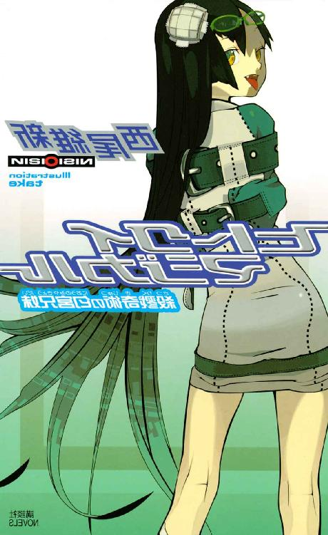
本作品は、縦書き表示での閲覧を推奨いたします。横書き表示にした際には、表示が一部くずれる恐れがあります。
ご利用になるブラウザまたはビューワにより、表示が異なることがあります。
ヒトクイマジカル
殺戮奇術の匂宮兄妹
西尾維新
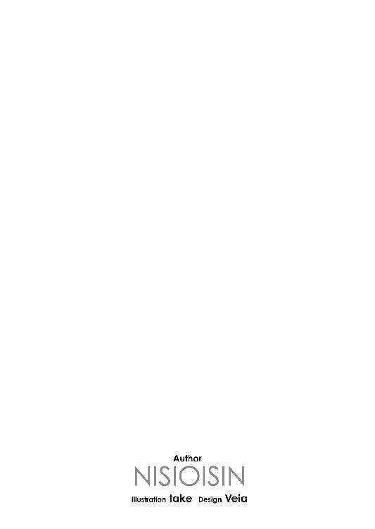
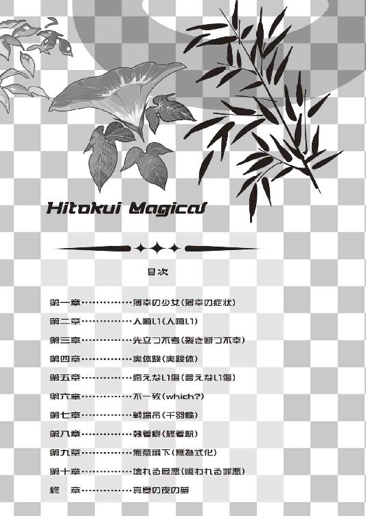

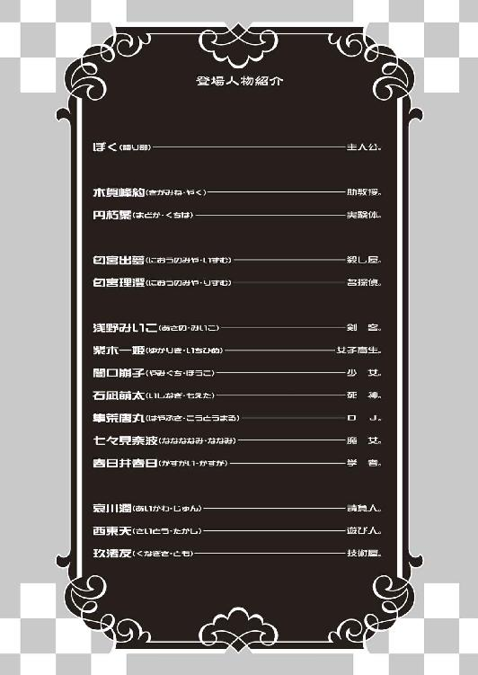
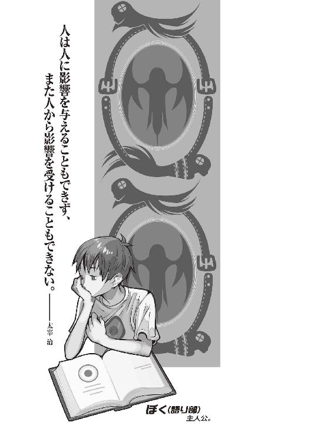
一人で二人、二人で一人。
一人が二人、二人が一人。
殺戮奇術の匂宮兄妹。
彼と彼女は同じ身体で時を過ごしている。
閉じられた時間を、過ごしている。
閉じられた空間を、過ごしている。
彼女はジキルで彼はハイドだ。
二人で一人、一人で二人。
二人が一人、一人が二人。
肉体に架された名前はない。
精神に貸された、名前が二つ。
《人喰い》の理澄に、《人喰い》の出夢。
同じ身体に対極の精神。
白と黒の、太極の精神。
表の顔は天衣無縫の名探偵。
彼女は調べる。
物事を裏の裏まで圧倒的に調査する。
裏の顔は悪逆無道の殺し屋。
彼は殺す。
人間を裏の裏まで圧倒的に殺戮する。
二重というにはあまりに重なっていない妹。
二重というにはあまりに重なっていない兄。
二重というにはあまりに重なり過ぎた兄妹。
殺戮奇術の匂宮兄妹。
ところで自身の存在を物語の主人公のようだと考えたことはないだろうか？ そこまで確信に行きつかなくても、自分の存在をある物語の、大きな流れの一環に位置する概念だと、そんな風に考えたことが、一度でもいい、ないだろうか？ ただの偶然ですますにはあまりにも運命的で、ただの偶発ですますにはあまりにも必然的、ただの奇遇ですますにはあまりにも因果的、ただの奇運ですますにはあまりにも因縁的だと、何か、いつでもいいどこでもいい、自分の周囲で特異な出来事が起こった際、そう考えたことは、そう考えてしまったことは、本当にないだろうか？ ここには粗筋のようなものがあって、自分達はそれに従って、無為に無意識に、それに引かれていくように、正しく磁石に砂鉄が吸い寄せられて一種のオブジェを創り上げてガラスを這っていくあの奇妙な姿のように、自分の知らないところで、全く感知していないところで大きな《何者か》が、自分の知らないところで、全く関知していないところで大きな《物語》が動いているのではないかと、そう考えたことが一度でもないというのなら──そんな奴には生きている資格はない。
そんな人間は、生きていない。
それは、惰性だ。
続いているだけだ。
人には、それぞれ定められた役割がある。無駄な人間などいない、誰もが世界の歯車だ。まるっきり無意味なところでくるくる回っているだけの無残な歯車でさえ、そんな空虚でさえ周囲に甚大なる影響を及ぼす......あらゆる意味において、世界と全く影響しない、誰とも何とも関係しない真の孤独なんてものは、存在しない存在の中にさえも存在しない。現実にはとうの昔に否定された、空想や妄想と称される存在でさえ（それが神と名付けられたものであれ悪魔と名付けられたものであれ、この場合の意味は同じことだ）、今なお周囲の環境を乱し続ける。
運命はある。
必然はある。
因果はある。
因縁はある。
そう、物語は、存在する。
確固たる存在感と圧倒的な影響力をもって。
「それが本当に必要な、為されなければならないことならば本人にどんな意思があったところでそんなことは関係ない。今日やらなければ明日やるだけの話だし、明日やらなければ、他の誰かがそれをやる。起こるべきことは、たとえ起こらなかったところで、それは起こったのと同じことだ。逆に言えば、起こらなかった未知の可能性など──『もしも』の平行世界など、そんなものは希望としても絶望としても一編たりとも存在しない」
............。
なんて、こんなのは、戯言遣いの言葉じゃない。
狐につままれたと思って、忘れてもらっていい。
ここから始まるのは滅茶苦茶な物語だ。
話しても誰も信用しない、そもそも信用できる人間にはとても話せない、詭道八百の物語だ。誰もが誰かを大いに騙す、何を言っても噓になる、絶体絶命の物語だ。参加した人間、皆が皆、一人残らず損をする、徹頭徹尾の物語だ。一人だって他人の話なんて聞いちゃいない、聞いた時点で世界が閉じる、問答無用の物語だ。友情も信頼もありえない、冒瀆と暴食で埋め立てられた、鬼哭啾々の物語だ。最悪と醜悪とを掛け合わせ貧弱と脆弱を掛け合わせた、落花狼藉の物語だ。血だまりで血まみれで死だまりで死まみれな、死山血河の物語だ。常軌を逸する機会を逸し、結果的には全てを喪失することがあらかじめ定められた、平々凡々の物語だ。意味と意志と意義を一切の中で喪失した、無為と無視と無機に零れんばかりに満ち溢れた、渾然一体の物語だ。白濁が決定的に色づいた、混沌を限りなくない混ぜた、萎靡沈滞の物語だ。著しく情緒に欠けた、サービス精神の欠片もない、無味乾燥の物語だ。作者の正気を疑いたくなるほどにご都合主義の、読者不在の物語だ。
まともな奴なんて、一人たりとも登場しない。
全員総じて、狂っている。
全員総じて、壊れている。
全員総じて、病んでいる。
二重の兄妹だけじゃない。
死なない身体の少女。
永遠に死に続ける少女。
誰かの続きでしかない助教授。
永遠に続き続ける助教授。
ジグザグの後継者。
ジグザグな後継者。
何も感じない生物学者。
何もない生物学者。
戯言遣い。
傍観者。
青色サヴァン。
死線の蒼。
人類最強の請負人。
死色の真紅。
そして、狐面の男。
この人を喰った物語に、だから序章はない。
それでよければ、始めよう。
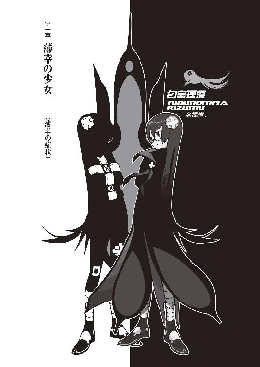
０
貴様の噓は聞き飽きた。
１
実を言えば国立高都大学人類生物学科、木賀峰助教授については事前知識があった。それは存外事前知識といえるほどの大したものではないかもしれないが、確か、今年の五月の新京極において、ぼくの通う私立鹿鳴館大学の同じ学部に所属する同回生にしてクラスメイトでもある葵井巫女子という女の子の口から、ぼくはその名を聞いたのだった。
「んーと。飢餓？ 飢餓峰？」
「違うよっ！ その発音だと何だか飢えてる人みたいだよっ！ 怖いよっ！」巫女子ちゃんはアクション大きく突っ込みを入れてくれた。「噓っ！ いっくんってば、あんな有名な先生のこと、知らないのっ？ 《バックスクリーン直撃の大ホームラン、ただし始球式》みたいなっ！」
「有名ってもねー」ぼくはストローを唇に挟んで、一旦間を置いてから言う。「他の学校の先生のことなんか、知ってるわけないじゃん」
「ウチの学校にもきてるよっ！ あたし、授業取ってるもんっ！ 月曜日の三時間目！ お昼休みのすぐあとにっ！」巫女子ちゃんは元気よくまくしたてる。「大人気の講義で、ずらーっともう、ずらずらーっともう、大教室が芋を洗うように学生で犇いてるんだよっ！ 席を取るために昼ごはん抜く人だっているんだからっ」
「へー。月曜の三時間目って、ぼくは語学だな......イタリア語。ふむ。そんで、授業の名前は？」
「ん？」
「授業の名前」
「んー」
「授業の内容は？」
「ん？」
「授業の内容」
「んー」
「サボりまくってんじゃねえかよ」
「違うもんっ！ いつも寝てるだけだよっ！」
「..................」
場所は、新京極通りの中ほどにあるマクドナルド。その日は巫女子ちゃんのショッピングに付き添ってぼくは新京極に来ていたのだが、迂闊に女の子の買い物になんか付き合うものではなく、昼を少し過ぎた段階でぼくの方に限界がきて、ただいま小休止中という有様だった。テーブルの横には大量の紙袋。紙袋の中身はぼくの常識ではおよそはかりしれないほどの値札がはっついていた服飾類。巫女子ちゃん、何気にお金持ちらしい。付き合っといて損はないのかもしれない、とか思ったり思わなかったり。
「でも、本当に有名なんだよ、木賀峰助教授はっ！」己にとって不利な話題を避けようと、巫女子ちゃんは話を戻した。「それになんていっても美人さんだしねー。巫女子たん、憧れちゃったりー」
「美人？ なんだ、女の人なの？」
木賀峰約というその名からは性別の判断がつかなかったし、それにこれまでの巫女子ちゃんの話からして、ぼくはその人は男性だろうという印象を受けていたけれど、しかし男のことを指してあまり美人とは言わないものだ。
「そうだよっ！ 白衣着て授業するの。白衣、白衣だよっ！ あたし、理系の先生ってなんだかお堅い感じがして苦手だけど、でもあそこまで行き着くと、格好いいっていうかー。あ、そうだ、折角だからこれから白衣買いに行こうかな。いっくん、白衣ってどこに売ってると思う？」
「制服専門店みたいなとこで見た気が......あと、美大の購買にゃ普通に売ってると思う」
「美大？ なんで？」
「油絵とか描くとき、描く人は普通白衣とか着るんだよ。あと、エプロンとかね。汚れてもいいように。理系で白衣着る人だって基本的にゃその理由は《汚れてもいいように》だろ？ ウエディングドレスじゃないんだからさ」
言いながら、白衣姿の巫女子ちゃんを想像する。
..................。
あ、ちょっといいかも。
「その際は眼鏡は外せないな」
「へ？」首を傾げる巫女子ちゃん。その表情から察するに、残念ながら白衣云々はどうやらただの冗談だったらしい。「いっくん、変なの。まあいいや。変だからこそのいっくんだもんね。で、話はここからなんだけどー......聞いてる？ もーしもし？ いっくん、何か他のこと考えてない？」
「ん？ いや、聞いてるよ。別に白衣姿の智恵ちゃんとか白衣姿のむいみちゃんとかのことなんか全然考えてない。智恵ちゃんが一番似合うとかむいみちゃん似合わな過ぎとか、全然考えてないって」
「もうっ！ いっくんってば、またそんなおかしなこと言って！ 不謹慎だよっ！ 《みんなで渡れば怖くない、ただし丸太橋》みたいなっ！」
「............」
あー......ちゃんと突っ込んでくれる娘っていいなあ。玖渚にしろ哀川さんにしろ、誰を相手にするにしろ、突っ込んでばっかしって、ぼくも疲れるんだよな。
「で、何の話だっけ？」
「本当に聞いてなかったんだ......がーん」巫女子ちゃん、ずーん、と俯く。五秒後、復活。「昨日のことですっ！ 巫女子たんは大学構内において、木賀峰先生と遭遇しましたっ！」
大事件のように声を張って言う巫女子ちゃん。
喉の丈夫な娘だ。
「ニアミスですっ！」
「ミスなのか？」
「ミスじゃないけどっ！」
「ん......あれ、昨日って金曜日......だよね。授業、月曜日以外にもあるわけ？ 木賀峰助教授」
「さあ。なかったとしても、きっと何か用事があったんだと思うよ」巫女子ちゃんはそんなことは大した問題でないというように、話を続ける。「さてそこで！ あたしの前方不注意で、どーんっ！」
どーんっ！ と、両手を突き出す巫女子ちゃん。
「......と、ぶつかってしまったのです」
「しまったのですか」
「はい。木賀峰先生の持っていたファイルやら紙束やら本類やらが、廊下にぶちまけられてしまいました。どどーん、ばらばらー」
しゅん、とうなだれる振りをする巫女子ちゃん。本当に、いちいちアクションの大きいことこの上ない。見てて飽きないと言えば、飽きないけれど。
「はー......それで？」
「あたしは平謝りに平謝りだったんだけど、木賀峰先生はにっこりと穏やかに笑って『それほど気にすることではありません』と」
「大人の対応だね」
「『この廊下であなたと衝突するであろうことを、この私はあらかじめ予測していました。ここであなたが私にぶつかることは大いなる運命に導かれたたった一つの必然だったのですから』」
「変わった対応だね」
ていうか逃げろ。
逃げろ逃げろ逃げろ！
「あたしは訊きました。『どういう意味ですか？』」
「悠長にそんなこと訊いてる場合じゃねえぞ」
貴様は勇者か。
「と、しかしそのとき、既に先生はあたしを見てなかったのです。一人、散らばったファイルを整理しながら、『つまりここの世界におけるこの娘と私との関係は、《この廊下で衝突する》程度のかかわりでしかなかったということ......それが運命。それが因縁。しかし、定められた必然を避ける方法もまた......必ず、必然として存在しているはず......運命がいかに大いなるものであったところで、それは道しるべにしか過ぎない......運命の外側にもまた、運命は存在している......確固として、相対的な揺るぎもなく』というようなことを呟いていました。そして、呆然とする葵井巫女子の視線を背に、木賀峰先生は去っていったのでした。ちゃらちゃーん、ちゃ、ちゃちゃ、ちゃーん。ちゃらららーん」
「............」
そんな穏やかなＢＧＭが流れるシーンではない。
「それではいっくん、感想はっ？」
「その人、絶対やばいよ」
大学教職員、侮りがたし。
まあ、何ていいますか、そうだよな、大学の教官って言ったら、昔っから勉強ばっかりしてた人達だからな......（遠い目）。
「んー」
巫女子ちゃん、なんだか不満そうな表情。唇を尖らせて、頰を膨らませて、実に分かりやすい《なんだか不満そう》な表情。どうやらぼくの感想（『その人、絶対やばいよ』）がお気に召さなかったらしい。どうやら巫女子ちゃんの予定では、もっと肯定的な意見が返ってくるはずだったようだ。
「......ひょっとして、《格好いいなー》とか、そんなことを言えばよかったのかな？」
「ううー......もうっ！ 《打ち上げ花火百連発、ただし突き抜けるような青空の下で》みたいなっ！」マクドナルドの、然程丈夫でもないだろうテーブルをばしんっ！ と叩く巫女子ちゃん。「確かに今の話だけ聞いてたら変な人って思うかもしれないけどさっ！ でも、本当に格好よかったんだよっ！ 仕草っていうか雰囲気っていうかっ！ 言葉では伝わらないえも言えない何がしかがっ！」
「んなもん言葉で言われてもな......」
「何ていうか、女の子の眼から見て、本当に格好いいって思える人なのっ！ それが言いたかったんだよっ！ 分かってくれてもいいじゃんっ！」
「そこまで力説しなくても......」
ジュースを飲むことで誤魔化そうとするぼく。
「本当、本当、確実なリアルを伴って格好よかったんだよっ！ 女の子から見て理想の姿っ！ あたしも将来、あんな人になれたらなーって思うんだよっ！」
「格好いい、ねー......。ま、ぼくも格好いい女の人なら何人か知ってるけど。でも、そういう人って例外なく背が高いよ。最低でも百七十五はないと。巫女子ちゃん、全然無理じゃん」
「ひ、酷いっ！」巫女子ちゃんは椅子から立ち上がって、拳法のような構えを取った。「き、気にしてるのにっ！ 身長のこと、何気に気にしてるのにっ！ いっくんだって背ェ低い癖に！ あたしと大してかわんない癖にっ！ いっくんの外道っ！ 鬼畜っ！ 悪食っ！ 《百万ドルの笑顔、ただしマクドナルド》かつ《サマータイム導入、ただし吸血鬼》にして《顔面セーフあり、ただしボクシング》み・た・い・なーっ！」
「巫女子ちゃん、最高過ぎ」
三連コンボ。
「いっくんの馬鹿ーっ！」
巫女子ちゃんはくるりとぼくに背を向けるように回転しながら、喉笛を破壊せんばかりの速度でぼくにチョップを決めたのだった（寸止め）。
はあ......
なんつーか......
「やっぱ本家は違うよなあ......」
「何か言いましたか？」
と。
なんとはなしに回想シーンへ浸っていたぼくを現実に引き戻す、凜とした、通った声。その声に、ぼくは意味もなくぼーっと天井にやっていた視線を正面に戻す。
場所は新京極のマクドナルド──ではなく、そこから座標をややx軸正方向にずらした、某大型国際ホテル、一階の喫茶店。四人がけのテーブルに、向かい合って二人。一人はぼくで、もう一人が──その、木賀峰約助教授だった。
さすがに白衣ではない、社会的常識に適ったスタイル、紺色のスーツ姿。結構長めの黒髪をうなじの辺りで軽くまとめていて、縁なしの眼鏡。太めの眉、右眼の下にほくろ。右側に垂れ下がった前髪。そして成程、こうして座って向かい合っていてもなおはっきりと分かるくらい、すらりと通って背が高い。さすがに鈴無さんには遠く及ばないにしても、哀川さんとタメ張るくらいにはありそうだ。巫女子ちゃんのいうニュアンスの《格好いい》という表現が見事に嵌る。
しかし。
とはいえ。
いかんせん。
彼女を《美人》で《格好いい》と認めた上で更に一言付け加えてもいいのなら──
「──人を値踏みするような眼ですね」
「え？ あ、ああ」ぼくは慌てて木賀峰助教授に応える。「あ、気に障ったんでしたらすみません。癖、みたいなもんでして」
「癖、ですか」
「どうも、ぼくは記憶力が弱くて。観察眼ってわけじゃないんですけれど、だからっていうか、だからこそっていうか、初対面のときには、これでもかってくらいに特徴を頭に叩き込んで置かないと、すぐに忘れちゃうんですよ」
「構いませんよ。あなたがそのような性癖の持ち主であることを、この私はあらかじめ予測していました」木賀峰助教授は、ぼくの言い訳とも釈明ともつかないような台詞に、しかし、頷いた。「癖というほどでもありませんが、私も似たような習慣を持っています。習慣と言いますか何と言いますか......人を見れば、その人が自分にとってどういう意味を持ち、フローチャートで見ればどういう分岐点に位置する人なのか、ついつい考えてしまうんですよね。ふふふ......大体にして、人間なんて誰も似たり寄ったりで、よーく見ないことには、区別なんかつきませんよね？」
「はあ......」
「どいつもこいつも、他人の真似ばかりして......まるで、他人と区別されるのを恐れているよう......亜流であることに、模造品であることに、どこか安堵を憶えている、ような──識別名を放棄するが如き態度、それはまるで、運命に対する恭順、あるいは迎合......ふふふ」
場を和ますための冗談かと思ったが、後半はほとんど独り言のようだった。とすれば冗談でもなんでもない、今のはこの人の《本音》だ。
「さてと」
木賀峰助教授は射抜くように、ぼくを見た。口元だけは笑っているが、しかしその微笑みはどこか威圧感に満ちているというか、こちらとしては親しみよりも警戒心を抱いてしまうような表情だった。
「あなたは今現在夏休みなのでしょうが......私達教員には休みなどと言うものは一切ありません。ゆえにこの木賀峰約に暇な時間などというものは存在しない......早速、本題に入らせていただきます」
「はい」
ちなみに本日、八月一日。木賀峰助教授の言う通り、昨日できっちり大学の試験が終わって、ぼくは今日から夏休みなのだった。しかし《夏休み》等号《暇な時間》と単純に判断されるのは、ぼくとしては心外だった。そりゃ確かに特に何が忙しいというわけでもないけれど、だが決して安穏怠惰というわけではなく、ぼくにだって抱えている問題の一つや二つ、存在している。たとえば先月愛知県に行った際に負った左腕の怪我のこと（遺憾ながら心視先生の治療が適切以上だったらしく、傷痕は残るものの後遺症なく全快するそうではあるが、さすがにまだギプスが外せていない）とか、期末試験において全教科赤点を取るという月面宙返り並の超ウルトラＣを決めてくれやがった姫ちゃんの勉強の面倒を見てやらないとならないこととか、どうもやはり近頃運動不足のようだから、先ごろからみいこさんの早朝トレーニング（結構ハード）にご一緒させてもらっていることとか、まあ、その他色々。とにかく、ぼくだって暇じゃない。選択してもいない授業の担当助教授からの呼び出しなんて、本来無視してもよかったくらいなのだ。
大体、指定された待ち合わせ時刻は午後三時。それなのに木賀峰助教授は三時十五分にやってきた。それこそ大学の授業と間違えてんじゃないのか、と言いたかった。
「......本題の前に、ちょっとだけ、いいですか？」
「......なんですか？」
自分の話が遮られたことに不満を憶えたのか、少し眉宇を顰めるようにする木賀峰助教授。見た目通り、神経質な気難しい性質であるらしい。
「どこで、ぼくの携帯電話の番号を知ったんですか？ ぼくは極めて閉鎖的な人間ですから、電話番号、ほとんどの人に、教えてないはずなんですけど」
「──あなたが私に対してそのような疑念を抱いているだろうことを、この私はあらかじめ予測していました。しかし、そんなこと」肩を竦められた。「いくらでも、方法はあります。知ろうと思って知れないことなど、この世にはごく僅かしか存在しません。存在しないというより、存在しえないというべきでしょうか」
「具体的な手段を知りたいんですけど」
ここは、是非ともはっきりさせておきたいところだった。何故なら、ぼくが呼び出しに応じた理由の一つ──というより一つの理由が、正にそれだからである。知られているはずのない番号にかかってきた電話。そんなものを気楽に放置できるほど、ぼくは平坦な人生を歩んできていない。
「知ったところで意味などありませんよ。意味なんてね」しかし、ぼくの質問を軽くいなして躱す木賀峰助教授だった。「方法はいくらでもある。その程度の方法は、多分あなただって、瞬時に三つは思いつくんじゃないでしょうか？ だから、そんなところに意味はありません。意味のある重要なところは......これは、あなたにとって意味のある重要なところはということですけれど、重要なところは、私が、この私が、目的達成のためには手段を選ばない種類の人間であるということです。あなたの電話番号が知りたかったから、知った。それで十分ではありませんか？」
「............」
十分。
確かに、そういう意味では十分だ。
十分過ぎるほどに。
「警戒するのも結構ですし、むしろ大いに奨励したいところではあります。他人を信じろなんて簡単に言う人達は楽でいいですよね。しかし、私に対する判断は、私に対して下す評価は、私の話を全て聞いてからでも遅くはないと思いますよ？ そも、そのつもりでここまで来たのでしょう？」
「......ですね」
ぼくは一歩引くことにした。深入りすると面倒そうな人だな、と思った。面倒というなら、もう既にかなり面倒な事態にはなっているのだが、さてさて。まあ、その通りだ、総合的な判断と、それに向ける対策は、確かに、話を聞いてからでも遅くない。
「冷静な判断力は備えているようですね。あなたがそのように物分りのいい人間であることを、この私はあらかじめ予測していました」
「それで、本題......用件というのは？」
「単刀直入」木賀峰助教授は言った。「あなたは私の眼鏡に適いました」
「......は？」
あまりにも単刀直入過ぎる。
ぼくは身構えた。
そんなぼくの心中を察してかそうでないのか、木賀峰助教授は確信犯的な笑みを浮かべる。
「あなたは運命というものを信じますか？」
「............」
来た。
来た来た来た。
巫女子ちゃんの話を思い出してから、ずっと抱いていた危惧！ 不安感！ 警戒心！ 動物的危機回避本能！ ひょっとしたら、ひょっとしたらそういう系の話が出るのではないかと考えてはいたが！
運命、ああ運命！
なんて壮大なテーマだ......。
きっと《愛》の次に壮大だ。
「う、運命......ですか」
「ん？ ああ、別にあなたと私が前世で恋人だったとか、そういう物語を展開するつもりはありませんので、ご安心を。私は単純に、《運命》なるものの実存を、あなたが信じているかどうかを訊きたいのです」
「はあ......まあ、そうですね、えっと......《運命》なんて大袈裟な言い方するからアレですけど、《必然》あるいは《因果》って言い方をすれば、そういう法則みたいなものはあるんじゃないですかね？ 自業自得、因果応報。つまり......《林檎》が《落ちる》、《雨》が《降る》、《太陽》が《明るい》、《夜》は《暗い》、《楽しければ》《笑う》、《悲しければ》《泣く》──」
「《生きていれば》《死ぬ》」にやりと、木賀峰助教授は笑った。「あなたがそういう意見を持っているだろうことを、この私はあらかじめ予測していました」
「......そうですか」
因果、ね......。
そういえばいつだったかどこだったかなんでだったか、《因果の誤り》とかいう言葉を口にしたことがあったような気がするな。あの言葉は、さて、どういう意味だっただろうか......。
「どうかしましたか？」
「いえ、ちょっと昔のことを思い出して。で、なんでしたっけ？ 因果が、どうかしましたか？」
「ふふふ。そう、《因果律》──要するには当然のことなんですよね。当たり前のこと、当たり前のこと、あーたーりーまーえ。ここは《神様はサイコロ遊びをなさらない》というかの名言を引き合いに出してきても一向に構わない場面です。細かい部分で私達は未来を変革することはできますが、大まかな流れのようなものを変えることはできない。《生きていて》《死なない》ことなんて、誰にもできないんですよ」
「............」
「誰にも、できない」
ぼくに語っているというより、自分に言い聞かせているかのような口調だった。どうもこの人、神経質な人にありがちなように、あまり他人というものを意識しないタチらしい。その性格自体はぼくも人のことを言えないが、しかし他人を呼び出しておいてその態度はいい加減難しいところがあると思う。
「失礼かとは思いましたが、あなたの経歴を調べさせてもらいました」
いきなり、宣言するように木賀峰助教授は言った。
そして愉快そうに唇を歪める。
「面白い。あなたの経歴は実に面白い」
「............」
経歴......一口に経歴といって、どこまで調べられたものか。それは、そこまで及べば、携帯電話の番号を調べるのとはわけが違う。クリティカルなポイントはぼくが頼むまでもなく玖渚の奴がいいように操作してくれているはず。生半可な情報収集能力では、ガセネタをつかまされるのが関の山だ。だが、この人なら......どうだろうか。偏見でものを言ってしまうことになるが、今までの経験上、この手の人間は、その手の道筋に非常に強い。蛇の道はヘビ、とは言わないけれど......
「ＥＲ３システムに所属していたというだけでもただ事ではないというのに、驚くべきはそこに残した成果。正直、あなたがどうしてＥＲプログラムを中退して、こんな極東の島国の、一地方私立大学に甘んじているのか、私には理解不能ですね」
「ＥＲプログラムのことをご存知ですか」
ま、そこまでは別に隠しているわけでもないから、割と簡単に辿り着けるんだけど。留学していたことだけは、誤魔化しようがない。だから、ぼくにとっての問題はそれ以前のことなのだが、大学の助教授あたりからしてみれば、ＥＲ３という看板は、それなりに威光を持って窺えることだろう。
「しかし《そこに残した成果》ってのは、多分間違って伝わってると思いますよ。ぼく、向こうにいた頃にゃ一人、想影真心っつー名前の出来のいい奴とつるんでましてね。ぼくは単純に、向こうのシステムについていけなくなって日本に帰ってきただけです。落ちこぼれですよ、落ちこぼれ。ホームシックってのもありましたけど。とにかく、そのつるんでた奴ってのがとにかくずば抜けてて、多分、そっちの......」
「そして──日本に戻ってきてからも、あなたは色々やっているようですね。色々と、色々と。いーろーいーろ、と」
ぼくの言うことを完全に無視して、木賀峰助教授は続ける。少しでいいから人の話を聞いて欲しい。
「たとえばこの五月。あなたの通っている私立鹿鳴館大学の学生が数名、亡くなっていますね。それも、事故やらではなく、殺人事件」
「............」
「殺人事件。殺人事件。さーつーじーん、事件。これに同時期に発生した一連の恐るべきとしか形容のしようがない殺人鬼騒動とあわせて......それらの事件を、まるで古い推理小説に出てくる名探偵のような有様、快刀乱麻を断つ勢いで解決したのが、あなた、だとか」
「んー......それは気持ちいいくらい誤解です。何がどうなりどうなったら、そんな誤解が生じるのかってくらいに大胆かつ全力な間違いです」
ぼくの否定にも、やはり助教授は止まらない。
「他にもあなたに関する噂は枚挙に暇がありません。大学構内に限った話ではなく、あなたはあちこちに遠征しているようですしね。まあ、勿論といいますか、その大半は、あなたの言うように、誤解だったり尾鰭だったりするのでしょうが──そんな噂が流れるような人間だというだけで、そんな誤解をされる人間だというだけで、そんな尾鰭がつくような人間だというだけで、この私にとっては十分です」
「............」
「あなたは、面白い」
木賀峰助教授はふっと、目を閉じた。
「あなたは......実に、面白い」
「はあ......」
二回言われた。
「あなたは、実に面白い」
「三回も言わなくても......」
「......私はね。許せないんですよ」
「は？」
許せない？
「許せないって、何がですか？」
「あなたのように面白い人間が私の人生と何のかかわりもないなんて──そんなことは、とてもじゃないが許すことができません。あなたには是非、私と何らかのかかわりを持っていて欲しいのです」
「は、はあ......」
うわあ。
今まで色んな人に色んな評され方をしてきたけれど、そこまで露骨なこと言われたの、初めてだ。ああ......いや、正確には、六年前に一度、玖渚の兄、玖渚直さんに、ニュアンスは丸逆ではあるが、同じようなことを言われたことがある。ただ、そうであっても、男性に言われるのと女性に言われるのとでは、雲泥の差がある台詞だ。
「にもかかわらず、調べてみれば、あなたは私の授業に登録していない。選択している授業の傾向を見て、来年以降に選択しそうな気配もない。このままではあなたは、この木賀峰約と、同じキャンパス内に存在する時間をえながらにして、何のかかわりも持たないままに、そのキャンパスを去っていきそうな気配です。否、あなたの場合、来年あたりに中退してしまっても何の不思議もない生き方をしているようだ。授業も、あまり熱心に出ているわけではなさそうですしね。このままでは、いけない。そんな運命は、私は認めない」
「認めないって......」
「運命は実存します。しかし、その運命とは、自分で切り開くもの。それが今日、ここにこうして場を設け、あなたを呼び出した理由です」
「そうですか......」
言いたいことは分かったが、随分とまあ、大仰な言い方する人だな。もう少し普通に言えばもう少し普通になるんだから、わざわざそんな奇異に過ぎる表現をする必要はないと思うんだけど。
「ま、確かにぼくは授業とかサボりがちっすけど、しかし、いきなりそんなことを言われましても......正直、過大評価だとしか、答えようがありません。ぼくみたいな奴と付き合っても、いいことなんか何もありませんよ。そりゃま、トラブルに巻き込まれやすいタチじゃあありますけれど」
「過大評価かどうかは、私の決めることです」
「......ですか」
本当に人の話を聞かないんだな。
何言っても無駄って感じ。
「あなたも面白いですが、しかしこの私も、面白さで言えば負けてはいないつもりです。そういう意味で、あなたにとってこの私と付き合いを持つ、私と関係するというのは悪いことではないと思います。どうですかね？」
「どうですかねって......」
「さしあたって、とある限られた期間内の話、あなたには私の研究に協力してもらいたいと思います。夏期休暇中のアルバイトと思っていただければよいのですが」
「......バイト、ですか」
「ええ。アルバイト。アルバイト。アールーバーイート。便利な言葉ですね、何だか......さておき無論、給金はそれなりに弾みましょう。日給、二万円といったところで如何でしょう？」
「......何日？」
「一週間ほど連続して」
一週間......つまり、十四万円の収入か。
ふむ、いきなり日常的、現実的な話になってきた。十四万円、一週間の稼ぎとすりゃ、随分と悪くない。ぼくもついこの間までそれなりに貯金を持っている方だったのだが、そのほとんどを姫ちゃんの学費に使ってしまって、今じゃ普通の貧乏学生以下の生活を送っているから、その金額の収入は正直ありがたい。
とはいえ、しかし。
「......研究のお手伝い、ですか......向こうじゃ、そういうこと、やったことがないでもありませんけど......実験とか臨床とかって、あんま専門じゃないんですよね。どっちかっつーと、頭ん中で考える方がぼくの分野で」
「あなたがそのように、やんわりと私の誘いを断るだろうことを、この私はあらかじめ予測していました」頷く木賀峰助教授。「とはいえ、私もここまで来た以上、はいそうですかと帰るわけには行きません。もう少し詳しい話を聞いてからにしても、返事は遅くないのではありませんか？」
「ていうか、木賀峰助教授、そういう専門の研究ってのは、既に定められたスタッフの人がいるんじゃないんですか？ 部外者のぼくを、かかわりを持ちたい程度の理由で雇うわけにはいかないと思うんですけれど」
「かかわりを持ちたい《程度》ね......程度。程度程度程度。てー、いー、ど。ふふ、愉快なことを言いますね、あなたは」
「愉快ですか？」
「ともあれ、私の研究にスタッフはいません。協力を乞うことはありますが、基本的には大抵は私が一人で......ああ、いや。正確には《一人》、常に協力してもらっている人物がいますけれど、しかしそれはスタッフという感じではありませんね」
「《一人》......？」
なんか、含みのある発音だったな。
気になる。
「さておき。あなたの心配はごもっともと言えますが、しかしこの度はですね、実験や臨床というよりももう一段階上、成果の確認の意味を兼ねていまして。むしろ専門外の部外者にこそお手伝いいただきたいところだったのです。つまりここで欲しいのはスタッフではなくモニター」
「モニター......ああ、なるほど」
成果確認。ならばその給金の高さも頷ける。全体において金を惜しんでいるような局面ではないというわけか。一口に大学の研究と言っても、中には人間社会そのものにかかわってくる重要なプロジェクトもあるからな。その辺は、ＥＲ３時代に散々認識させられたことだ。
「期間は八月二十二日月曜日から二十八日の日曜日まで。その頃には、その左腕のギプスも外れ、全快しているでしょう？ 肉体労働に従事してもらうわけではありませんが、健康条件が良であることに越したことはありませんからね。場所は高都大学構内......と言いたいところですが、そこはご容赦ください、少々交通の便が悪い、私の個人的な研究室です。鴨川をずっと昇っていった、山を一つか二つ、越えた先の、山間の集落......辺りですかね。時間は朝の九時から、午後六時を予定していますが、これはかなり延び延びになる可能性を認識しておいて欲しいところです。市内からではバスも電車も通っていませんので、車で来ていただければ。車、持っていますか？ ＯＫ。ならば無論、ガソリン代くらいは持ちましょう。往復で一日二千円の上積みで。それから、ひょっとすると内何日かは泊まりこんでもらうことになるかもしれません。その場合、別途手当てを支払いましょう」
「あ、ちょ、ちょっと」
いつの間にか話を引き受けることが前提で話が進んでいる。話している内にペースに巻き込まれる、なんてものじゃなくて、この人、他人のペースなんてまるで気にしない種類のマイペースだ。賢い人のマイペースほど手に負えないものはない。
「ぼく、基本的にそういう話は断る方向で今までやってきたんですよ。申し訳ないですけど」
「......そういう話？」
「はい。そのさっきの話、五月の件ってあったじゃないですか。あんときのことなんですけど、ぼく、軽々しく人の誘いに乗って、そんで酷い目に遭っちゃったもんですから」
この言い方はちょっと正しくないけれど、詳しく説明する必要があるとも思わない。
「警戒している......というわけですか？」
「ぶっちゃけ」
「高都大学人類生物学科助教授という肩書きでは、何の保証にもなりませんか？」
「あんま、肩書きとかって......苦手で」
特に先月、色々ありまして。
「ふん」仕方なさそうに、一旦頷いてみせる木賀峰助教授。「頑なですね。今時の若者にすれば、押しに強い。気が弱そうななりしている癖に」
「ええ、どうも......」
て、おい。
何気にすげえ失礼なこと言われたぞ、今。
「分かりました」
「どうも、すみません」
「給金を上げろ、と言うのですね」
「............」
言いません。
言っていません。
「日給三万円でどうでしょう？」
「うおっ」
合計二十万オーバー。
魅力的過ぎ。
今のところぼくの収入源と言えば、姫ちゃんを含む三人の中高生に対する家庭教師のバイトと、たまに哀川さんが持ち込んでくる、仕事のお手伝い。家庭教師は単価ではそれなりの収入にはなるが、本当に稼ごうと思えばもっと何人も数を担当しなくてはならない。哀川さんの手伝いも、確かにいい小遣い稼ぎになるけれど、掛け値なしに命がけ。
んー。
考えどころかな。
「日給三万でも安い、と」
「あ、いえ、そういうわけでは」
「構いませんよ。自分を安売りしない若者は嫌いではありません」ふふふ、と悪役っぽい笑みを浮かべる木賀峰助教授。「では、こちらのリミットを示しましょう。日給五万。それがコストパフォーマンスをぎりぎりにまで考慮した、私の限度ですね」
「五万......」
って、合計収入三十五万......。
三十五万円って、一万円札何枚分だ？
そこまで来ると、かえって警戒心の気圧が発達してくる。先月の斜道卿壱郎研究施設のような話がこんな身近にごろごろしてるなんて思いたくもないが、何か非合法な研究じゃないだろうな......。
けど。
それでも、木賀峰助教授がそこまでぼくを《必要》としているということだけは、ここまでで十分に伝わった。どういうわけだかわからないが、木賀峰助教授、このぼくに対して随分とご執心のようだった。うーん......それにしても、ぼくの変質者誘引体質、最近益々加速してくる感じだな。正しくそれこそ自業自得だと言われれば、それまでだけど。
「やっぱ即答は難しいところです」悩んだ末、ぼくは言った。「ただ、返事をするのはもう少し細かい話を聞いてからにしてもいいかなー、とは思いました」
「そうですか。では」
木賀峰助教授は隣の椅子に置いていた鞄からＡ４サイズの封筒を取り出して、それをそのままぼくに手渡した。堅く封が施されていて、この場で開けることは難しそうだ。
「こちらの書類を御覧ください。ほんのアウトラインで大雑把なところですが、私の研究の概要と、あなたに手伝って欲しい作業とが記されています。それから......もしもこの件をあなたが引き受けてくださるようでしたら」
「なんですか？」
「あと数人、モニターを引き受けてくださる方を、集めていただけないでしょうか。今回のモニターは、できればこの私と何らかかわりのない人がよいので、私個人が人集めをするわけにはいかないのですよ。信頼の置ける友達の数人くらい、いるでしょう？」
「......ぐはっ」
ぼくはたじろいだ。
な......なんてことを言うんだ、この人は。そ......それは。それだけは、ぼくのような人間に対して決して言ってはいけない台詞、いわば禁句、むしろ禁忌！ 信頼の置ける友達......そんなの......そんなの......。
「その人達にも個別に手当ては支払いますが、さすがにあなたと同格扱いというわけにはいきません。あなたの給金には、運命を捻じ曲げるという物質的な意味がこもっているわけで、相場としては、そうですね、あなたの日給が上がった分を考えますと、一人あたり日給一万二千円といったところでしょう。それでも結構な高値でしょう？ 無論交渉には応じますが、しかし重労働をお願いするわけでもありませんから、あまり多くを望まれても困ります」
「数人って......何人くらいをお望みですか？」
「二人か、多くて三人。研究室自体、あまり広い場所でもありませんのでね、大量の人間に押しかけられても困ります。それに研究資金にも限度がありますので。私のパトロンは、それほど裕福ではないのですよ。それでは......」と、右腕に装着されている、多分男物であろうごついオメガの時計を木賀峰助教授は確認する。「いい頃合です。もしも色よい返事がいただけるようでしたら、一週間まで待ちますので、いつでもメールしてください。最初に渡した名刺に、アドレス、書いてありますので」
「あ、ぼく、メールとかないです」
「..................」
未開人を見るような眼で見られた。
くそ、誰もがパソコン持ってるなんて思ってんじゃねえ。メールのできない携帯電話がそんなに珍しいか。これはこれで利点もあるというのに。
「じゃあ、コンピュータに関する知識も、乏しい......という感じでしょうか？ 鹿鳴館大学では、確か情報技術関係の授業に力を入れているはずですけれど」
「あ......えっと、仕事の関係上そういうスキルが必要ってことですか？」
「やはり、困らない程度には」
「授業は適当にこなせますよ。メールとかないのは、あくまで家庭の事情といいますか、一身上の都合といいますか。ＥＲ３でもそういうのは習いましたしね」
「ですか。ならば、一安心」木賀峰助教授は言う。「それでは、連絡手段は電話でも構いません。時間はいつでも、朝でも昼でも夜中でも。とはいえ、私も多忙の身、大抵留守電になっていますので、もしご連絡いただければ、こちらから折り返しお電話いたします。そういうことでよろしいでしょうか？」
「分かりました」
「それでは、また......ご縁が、あれば」
別れの言葉を口にして、優雅な仕草で席を立つ助教授。立てばなおはっきりとする、すらりとした、そのスタイル。プロポーション。なるほど、やはり巫女子ちゃんの言うように、その仕草というか、雰囲気というかに、実に女性的な格好よさを備えている。
だが──それでも一言、それらを全て認めた上で言わせて貰えるならば──その《格好よさ》は、魅惑的やら蠱惑的やらの言葉からは程遠い。
そう、それは第一印象。
どこか決定的なところで著しく、木賀峰助教授は、完全に人間味に欠けていた。さっきまでのように実際向かい合って言葉を交わしていても、本当に機械とでも話しているような印象だ。サイボーグのよう、とでも比喩しようか。そんな表現は、いくらなんでも失礼が過ぎるだろうけれど、しかし、そう考えてしまう程度には、彼女は『人』から、外れていた。
ぼくは最初に受け取った名刺をポケットから取り出して、もう一度眺める。《高都大学人類生物学科助教授》《人類博士》《生物博士》《木賀峰約 Ｄｒ．ＫＩＧＡＭＩＮＥ ＹＡＫＵ》、そして研究室の電話番号、個人サイトのアドレスとメールアドレス（ドメインがac.jp）。まあ、あからさまなまでに、仕事用の名刺だ。
ふん。
生物博士、ねえ......。
ぼくは立ち去ろうとする木賀峰助教授の背に、一つ、声をかけた。
「あの......ちょっとだけ、いいでしょうか？」
「いいですよ？」木賀峰助教授は振り向く。「あなたがそうやって最後の最後に何らかの質問を投げかけてくるだろうことを、この私はあらかじめ予測していました」
「......具体的に、あなたは何の研究をしているんですか？ 木賀峰助教授」
「封筒の中身を読んでもらえれば大まかなところは分かることですが......そうですね。私の研究は、いわば因果律に対する反逆。実存する運命に対する革命、来る必然を迎え撃つ独立宣言。装飾を除いて端的に言うならば」
木賀峰助教授はあっさり答えた。
意味ありげにでもなく、含みも持たせず。
これということもなく、気負いもせず。
あっさりと、答えた。
「死なない研究──ですよ」
２
実行したことのない人にはいまいちぴんとこない、分かってもらいにくい感覚かもしれないが、京都において四条河原町から千本中立売まで徒歩で歩くと言うのは、それほど大した労力を要しない。むしろよしなし事をぼーっと頭の片隅でつらつらと考えるには、絶好のシチュエーションと言える。物を考えながら歩くのにちょうどいい距離なのだ。まあ、腕にギプスなんか嵌めてたらバスやら地下鉄やら、そういう交通機関は利用しにくいというのがまずあるのだけれど、そこはそれ。
とはいえしかし、その道程約一時間、ぼくはこの、木賀峰助教授からの誘いに対して、まるで解答を出すことができなかった。それほど大きな話でもなさそうだし、事件性もなさそうだし、応じてしまっていいような気もするが、そんな《いいような》で応じてしまったあれこれで、今までどんな悲惨な目に遭いどんな悲惨な羽目に陥って来たかを考慮すれば、君子危うきに近寄らずがベストチョイスという感じでもある。
でもな......
個人的に、興味が湧かないでもない。
《死なない研究》。
死なない。
生きていても、死なない。
「..................」
それは、すごいことだ。
伝奇だ。
ＳＦだ。
ミステリーだ。
ファンタジーだ。
イッツ、エンターテインメント。
総じて言えば、荒唐無稽。
そんなの、言ってしまえば錬金術の研究してますというのと同じじゃないか。今時の学界で、そんなものが認められているのか？ 少なくとも表向きには無理だろうし......裏向きであったところで、そこまで露骨に、真正面から常識に反することを、国立大学という場において堂々とはできないはずなのだが。
ん。
いや、だからこそ、だからこそ大学構内ではやってないのか？ 公式な、最低限おおっぴらのものではないということなのだろうか......よく分からない。
「ま、とりあえずはこいつを読んでみないことにゃ、何ともいえないか......」ぼくはあまり鞄やらを持ち歩くタチではないので、封筒は裸で右手に持っている。ちらりと見ても、ぼくに透視能力のスキルはなく、あくまでそれはただの封筒、中身までは窺えない。「さてさて、つまらなくなってきやがった」
二月から住んでいる骨董アパートのそばにまで戻って来たところで、かつてぼくが巫女子ちゃんからもらいうけたベスパ（白のヴィンテージモデル）を停めてある駐車場に目が行く。そこに、知った顔が二つあった。
一つは、姫ちゃん。
もう一つは、みいこさんだった。
ぼくは脚を停めて二人を見遣る。一体この炎天下に何をしているのかと思えば、二人して、剣玉遊びに熱中しているようだった。糸につながれた赤い玉がひゅんひゅんと空を切っている。そういえばこの間姫ちゃんにせがまれて、大阪の東急ハンズであんなもの、買ってきたっけな......。
「みいこさーん」
ぼくは声をかけながら、フェンスに囲まれた駐車場内に侵入した。気付いたみいこさんと姫ちゃんが、それぞれにぼくを振り向く。
「おう、いの字」「あ、師匠ー」
みいこさんは相変らずの甚平姿。ただしさすがに京都の八月、真夏の中の真夏、選りすぐられた精鋭の真夏、上着は脱いで、腰に巻いている。タンクトップの黒シャツ、健康的な肩口辺りの肌が大きく見えていて、ちょっと眩しい。腰元には先日ぼくがプレゼントした鉄扇が挟まっている。サムライみたいなポニーテイル、そしてこの陽気の中も変わらない、涼しげな無表情。
姫ちゃんは学校帰りらしくセーラー服（夏休みだが、《勉強熱心》な彼女は今現在、毎日のように補習の日々だ）。でっかい黄色のリボン。ぼくの方を向いたままだというのに、剣玉のボールは重力に吸い込まれるように、尖った剣先に収まった。ふむ、さすがは元《ジグザグ》市井遊馬の弟子、ああいう《針と糸》系の遊びは得意分野と見える。
「師匠ー。今日はどこにお出かけてたですか？」姫ちゃんがちょこちょこと小走りにぼくのそばに寄ってきた。なんか、子犬みたいな動きだ。「お、その封筒がなんだか何気に怪しげですねー」
「別に。いきなり変な勘の良さを発揮するのはやめてくれ。姫ちゃんが気にするようなことじゃない」ぼくは姫ちゃんを軽くあしらって、みいこさんのいる位置に向かう。「どうもです、みいこさん」
「うん」
みいこさんは軽く頷く。
頷いただけで、すぐ剣玉に向かった。
ひゅーううん...............................................................................................................................................................かん、ぼで、ひゅん。
「..................」
「..................」
「いの字、できるか？」
「はあ、ま、ガキの頃やったくらいですけど」
みいこさんから剣玉を受け取る。赤い玉を見ると、この前買ったところだというのにもう傷だらけだ。ちらりと、姫ちゃんの持っている剣玉を窺う。姫ちゃんの玉は、ほとんど凹みも窪みもない、綺麗なものだった。
「よっと」
まずは軽く、大皿に載せてみた。
膝でうまく衝撃をクッションさせて、成功。
よし、次は......
「おうっ!?」
みいこさんが奇声をあげた。
ショックのあまり、玉をこぼしてしまった。
「......なんですか......びっくりします」
「素晴らしい......いきなり成功するとは」
「いえ、今の、大皿ですし......」
こんなの、載せない方が難しいぞ。
剣玉で難易度が高いのって、剣先くらいだろ？
「ふむ......いの字にできるとなると、剣玉自体によからぬ仕掛けがあるわけではないのか」
「ここに日本けん玉協会って書いてますよ」
「......むう」
みいこさん、眉を顰める。
「屈辱だ......剣と名のつくもので、この私に操れないものがあるはずがないのだ......」
「......結構無茶苦茶いいますね」
「みい姉さん、意外と不器用ですー」
姫ちゃんがきゃらきゃら笑った。笑いながら、剣玉を《かんかんかんかんかん！》と地球一周させる。最後には玉の方を持って、ひゅんっと遠心力で本体を飛ばし、剣先を穴へと収めた。
「いえい！」
「......はらーしょ」
そう。
この娘はにへらーっと鈍そうな外見に真っ向から反して、指先はとても器用なのだ。お手玉も八つまでできるのだ。身体はちっこいのに、反比例しているかのごとく、それぞれの指は長いからな。
「コツ、みたいなものはないのか？」みいこさんがぼくに訊いた。「さっきから姫に色々教えてもらっていたのだが、一向に要領を得ない」
「ええ。姫ちゃんが何を言ってもみい姉さん、淫乱する一方なのです」
「..................」
みいこさんが淫乱するのは大いに結構とぼくとしてはなるだけ奨励したいところだが、ここではあえてそれは混乱の間違いだと訂正させてもらっておこう。
「コツ、といっても......こんなの、ただ皿に載せるだけですよ。剣先に刺す奴にしても、こうやって、玉をくるくる回転させてからやれば、簡単なもんです」
「あ、それは外道ですー」姫ちゃん、半畳。「そんな楽なやり方を憶えちゃ駄目です。人間、一度楽な方法を憶えると癖になっちゃうですからね。それでは成長が望めません。人間は成長するアシモフです」
「いいこと言うじゃん」
ぼくは姫ちゃんの両肩を持った。
「なら、その言葉を実践に移してもらおうか」
「にゃぎ？」
「こんなとこで遊んでないで、勉強してきたまえ」
「にゃぎー」
動物ちっくな変な声をあげて、姫ちゃんはがっくりとうな垂れた。
「おらおら。さっさとロボット三原則を実行してくるんだ」別にアシモフがロボットだったわけではないけれど、なんとなく言葉尻を捉えてみた。「一つ、師匠の命令には絶対服従しなければならない」
「勉強なんかしてもつまんないですよー。つまんないつまんないつまんないですー」
「そうやってつまんないつまんない繰り返していても、事態は何も進展しないんだよ」
「どうしてそんなことが分かるですか？ ひょっとしたら何かが進展するかもしれないじゃないですか。どうしてそうやって頭ごなしに人のやることを否定するですか。全く、やる気をなくさせてくれる師匠です」
「屁理屈言うな。......ったく、なんだかしんないけどいつの間にか口ばっか達者になっちまって」
「確実にお前の影響だ」
剣玉を振り回しながら、みいこさんが言った。
うん、そうかもしれない。
「師匠ー。姫ちゃん、さっきのさっき、一秒前と言っても過言ではないほどのついさっきに学校から帰ってきたところなのですよ。いわば地獄の補習から奇跡の生還を果たした勇者なのですから、ちょっとくらい遊んでもいいじゃないですか。戦士の休息ですよ」
「戦士に休息などない！ そんな楽なやり方を憶えると人間的成長はとてもとても望めないな。さあ、ごーあへっどだ」
「うみー......師匠はいちいち五月病です！」
「その意見自体は謙虚に受け止めさせてもらうが、姫ちゃん、無理矢理難しい漢字を使おうとするのはやめなさい」
五月病→×。
五月蠅い→○。
全然違うじゃねーか。
「分かりましたですよう」姫ちゃんはつまらなそうに頷いた。「それではみい姉さん、遊んでくれてありがとうございました」
「ん？ んん？ ああ、うん」
みいこさんは不自然に頷く。多分みいこさんの感覚では《遊んであげた》ではなく《一緒に遊んでいた》だったのだろう。いや、むしろ《遊んでもらっていた》かもしれない。そういう部分、この人は幼稚なところがある。
「そして師匠」
「なにかね」
「べーっだ！」
姫ちゃんは舌を出して、剣玉片手に駐車場から駆け出て行った。元気一杯、あっと言う間にその姿はぼくらの視界から消えていく。
十七歳。
でもぼく、十七歳のとき、あんな元気じゃなかったよな......。今とは別の意味で、すごく沈んだ、生気に欠けている奴だったような気がする。
思い出したくもないけれど。
「意地悪だな、お前は」
後ろから、みいこさんに言われた。
「何もそう勉強勉強とせきたてることもあるまい。私なんて、あの年頃のときはヒネた馬鹿な、ちっぽけなガキだったぞ。それを思えば姫、真っ直ぐないい子じゃないか」
「でも、学生の本分は勉強ですから」
「お前もほとんど大学行ってないだろう」
「大学生はいいんです」
ていうか、実はみいこさんと二人っきりになりたかったから姫ちゃんをアパートに追いやったことはここだけの秘密だ。
「あーあ。もっと遊びたかったのに」
「............」
そういう意味の《意地悪》か。
子供だなあ。
「あれ？ て、みいこさん、この時間はいつもバイトじゃないんですか？」
浅野みいこ、二十二歳、フリーター。
様々なバイトを転々としつつ、あとは近所の子供に剣道を教えたりとかで、生計を立てる。一人暮らしなので本来出費はそれほどでもないはずなのだが、趣味というより最早道楽である骨董集めが域に入って、いつも汲々としている印象がある。
「ああ、バイト？」
「はい」
「あれは昨日クビになった」
「..................」
そんな時候の挨拶のように平然と。
「客と揉めてね」
「はあ......」
今のバイトは居酒屋の店員さんだったか。タチの悪い酔っ払いでもいたんだろうな......みいこさんもこんな飄々とした、涼やかに悟ったような感じでいて、結構な直情型だから。
「私もまだ甘い......」
「反省はしてんですね......」
同じ理由で、これまで三回クビになっているみいこさんなのでした。反省しても人間はそうそう変われるものではないという好例。
「早く次のバイトを見つけないとな」
「そうっすか」
と、ぼくは封筒に眼をやる。
バイト。働き口。稼ぎ先。
何と言っても同じだけど。
でも、何と言ったところで、こんな怪しげな仕事に、よりにもよってみいこさんを巻き込むわけにゃあいかないよな......。
「生活費のこともあるが、さしあたって、先月見つけた掛け軸がね......今月末までに入金しなくちゃならないんだけど、さてどうしたものか」
「今は取り置き状態で？」
「そんな感じ」
「ちなみにお値段は？」
「百四十万」
「............わお」
手元においては転売、転売したお金で手元に置く、そういう自転車操業を繰り返すみいこさんの骨董趣味の中でも、その値はなかなか群を抜いている。単純なるサイクルだけではとても追いつけそうにない。
「いくら足りない空気ですか？」
「二十万ちょい。今月いっぱいで稼ぐつもりだったんだけど、一番アテにしてたバイトをクビになってしまったからな」
「ですか」
京都ってバイト者に厳しい街だからなー。
「......どうしても欲しいんですか？」
「んー。好きな絵師の本物だから」
本物かよ。
豪奢な話だ。
「その店、信頼は置けるんですか？」
「鑑定書を見た」
「そっすか」
二十万......じゃあ、仮に木賀峰助教授の話を受けたとしても、全然足りない。あれ、ぼくは三十五万円の収入だけど、ぼく以外のサブの人は、合計の収支、八万四千円だからな。いや、期日は八月末なのだから、他のバイトで補えば、あるいは......
でも、やっぱなあ。
それだけはなあ。
ぼくはみいこさんだけは、余計なことに巻き込みたくない。これが七々見とかなら、即決定なのだけど。
「よっと」
みいこさんの興味が剣玉に戻った。さっきぼくの言ったように糸に垂れ下がった玉を素早く回転させて、そして大皿に載せようとした。一旦皿には載ったものの、回転の勢いで、そのまま落下。......どうして回転させたものを皿に載せようとするのかな。
「むー。剣なのに......剣なのに」
「あんま関係ないですよ、それ」
「私、不器用なのか？」
「そうじゃなく、性格向きじゃないってことでしょう。みいこさんにはそういうちまちました遊び、あんま似合いませんよ」
「ちまちましてるかな。面白いと思う」
「..................」
自分の苦手なものを面白いと言えるみいこさん。
素直に、素敵だと思う。
ぼくがもうちょっと余裕のある人間だったら、見習いたいと思うところなんだろう。少なくとも、今でさえ、あやかりたいとは思うのだけど。
「あ。載った」
「やりましたね」
「初めてだ」
「..................」
大皿に載るのが初めてか......。
ひょっとすると本当に不器用なのかも。
あるいは、天然の逆才能か。
ならば、大事にして欲しいところだ。
「じゃ、ぼくもアパート戻ってます。今晩とかお暇ですか？ 暇なようなら、一緒に食事でも。失業記念に、肉でも奢りますよ」
「生憎、今晩は予定がね」
「そっすか」
残念至極。
「ところでいの字」みいこさんはぱしん、と、宙に浮いていた剣玉をつかんだ。その動きを見る限り、反射神経に悪いところはなさそうなのだが。「うるさいことを言うなんて思うなよ。お前の部屋の《あれ》のことだが、いの字、お前《あれ》を一体いつまで部屋に置いておくつもりなんだ？」
「あー......」
「個人生活に口を出すつもりはないけれど、あのアパートには姫やら萌やら崩やら、未成年が三人もいるんだからな。情操教育上、問題があると思う」
「ぼくも一応未成年なんですけどね」ぼくは冗談っぽく、肩を竦める。「ま、確かにその通りです。ええ、いずれ、ちゃんとしますよ」
「いずれ、ね」
「《あれ》に関しちゃ少しばっかりとは言え、やっぱりぼくの責任でもあるわけですから、対応が難しいところでして。でも今のところ、みいこさんが心配なさってるような種類のトラブルに発展しそうな可能性はないので、その辺はご安心ください」
「うん。信用してるよ」
「では」
軽く手をあげて、ぼくがみいこさんに背を向けたと同時に、また背後から剣玉の音が聞こえてきた。あんな遊戯にみいこさん、随分とはまってしまっているようだ。しかし剣玉というのは本来室内遊戯だと思うのだけど、どうしてわざわざ駐車場で......ま、四畳一間のあのアパートじゃ、剣玉どころかお手玉遊びにも不自由するし、やむをえないか。
四畳一間、畳敷き、裸電球。
風呂なし、トイレ共同。
今時考えられないような悪環境ではあるけれど、そこに住んでいる人間は実に個性豊かで、そこは面白い、なかなか愉快であると思う。剣術家の浅野みいこさんを中心に、最近ようやく本名が判明した伴天連爺さんこと、隼荒唐丸、家出兄妹の石凪萌太くんと闇口崩子ちゃん、最悪の魔女、七々見奈波に、《ジグザグ》の弟子、紫木一姫。そんなメンバーに囲まれては、平々凡々たる戯言遣いのぼくのキャラクターなんぞは、霞まざるを得ない。
実際。
確かに。
限りなくも果てしなく。
本質的に、まごうことなく。
一言で言わせてもらえれば。
「戯言だけどね......」
ぼくはアパートに到着した。
木造、三階建て。
階段を登って二階、お隣のみいこさんの部屋を過ぎ、自分の部屋の扉を開ける。
「おかえりなさいませ旦那様」
開けると同時に、出迎えられた。
「お帰りを心よりお待ちいたしておりました。旦那様におかれましては本日もお疲れのことと察しておりますので精一杯癒させていただきます。ご飯にしますかお風呂にしますか？ それともわ・た・し？」
「..............................」
この世に星の如く存在する数多の中で、おおよそこのぼくに精神的ダメージを与えうる最適の台詞だった。反撃の糸口もつかめない。
「............」
「何を呆けた顔をなさってるんです旦那様？」
エプロン姿にその台詞、しなを作っているその態度、しかしそんなものにはまるで似合わないクールで理知的な表情、肩口までの髪。薄く笑ってはいるけれど、滅茶苦茶作り物っぽい笑顔だった。温度が感じられないと言う点では先の木賀峰助教授を連想してしまうが、木賀峰助教授がロボット的な鉄の冷たさであるのに対し、こちらはさっぱりと気持ちいい水の冷たさという感じ。
彼女の名は、春日井春日という。
春日井春日。
動物生理学、動物心理学を専門とする動物学者、生物学者にして──つまり木賀峰助教授との共通点は温度のベクトルだけではないということ──つい先月まで、愛知県の山奥に位置する斜道卿壱郎研究施設の職員として勤務していた。
過去形なのは、無論、それが過去だから。
先月、《堕落三昧》の異名を取った悪名高き斜道卿壱郎博士の研究施設、それに連なる諸々は、実質的に崩壊した。それと同時に彼女は職を失い、住み込みで働いていたので、同時に住処まで失ったわけである。
「冗談だよ。お茶目なお姉さんの冗談。そんなマジ顔でビビらないで。可愛いなあ」
「......はい」
で。
なんでその春日井さんがここにいるのか。白衣をエプロンに着替えてここに存在しているのかを説明しますと。
──以下回想。
『やっほー』
『......なんでぼくの住所が分かったんですか』
『調べた』
『......愛知から京都までどうやって来たんですか』
『歩いた』
『............』
『中に入れてよ』
『どうしてですか？』
『わたしは今日からここで暮らす』
『何故っ!?』
『わたしはきみの所為で失業して自由業無職です』
『う......』
『わたしはきみの所為で失業して自由業無職です』
『......それは、まあ、そうかもしんないですが』
『このままではわたしの人生は淑女的にピンチです。男の子ちっくな人道精神を見せてもらえたら嬉しいな』
『..................』
『駄目かな』
『......駄目です』
『そっか。残念』
『相変らず諦めがいいですね』
『あーあ。折角メイド服とか用意してきたのに無駄になっちゃったか。残念残念』
『は？』
『それじゃばいばい。また会う日まで』
『ちょっと待ってください』
『何？』
『今何て言いました』
『何も言ってないよ』
『言ったでしょう。もう一度言ってください』
『折角メイド服とか用意してきたのに』
『......どうぞ、中にお入りください』
『............』
『義を見てせざるは勇なきなり、強きを挫き弱きを助く。まさかこのぼくが、困っている人を助けないわけがないでしょう』
『......ありがとう』
『いえいえ、どうということもありません』
──以上回想。
って、まあ以上は全部冗談で噓っぱちで信じてもらっても困るんだけど、本当のところも大体そんな事情と似たり寄ったり、にっちもさっちもどっちもどっちで。
春日井春日さん、本日で居候生活一週間目。
「突っ立ってないで入りなよ。きみの家だよ」
春日井さんがぼくを誘うように手招きする。
居候生活一週間目。
余裕が出てきている。
というより、余裕でも何でもなく、この人は元々こういう人だ。それこそ木賀峰助教授の言い草ではないが、出会った場所が場所だったから随分と最悪の第一印象ではあったけれど、こうして日常生活の中にその個性を埋没させてみると、春日井春日、これほど面白い人も珍しい。あまりに面白かったため、ぼくも追い出すタイミングを完全に逸している感じである。
「はいはい......ったく。そういう冗談はやめてくださいよ。大体、ご飯も風呂もあるわけないでしょうが。この部屋、冷蔵庫もないんですから」
「ところがご飯は本当にあったりするんだよ。出前をとったんだ。それもお寿司。臨時収入があったので」
「ふうん？」
「世話になってるからそのお礼だよ」
「へー......」
そりゃまあ、粋なことをしてくれる。
臨時収入、勤め口でも見つけたのだろうか？
「ほら入って入って」
「はい、どうも......」
寿司の桶の横にマント姿の少女が倒れていた。
「..............................」
「おいしそうでしょう？ 荒唐丸さんにこの辺りでお勧めの店を聞いたんだよ。実はちょっとだけお先に摘ませてもらったんだけどなかなか美味だった。きみは吞めないから乾杯はできないけどでも烏龍茶を用意したよ。紅烏龍っていってね──」
「春日井サン」
自分の声がぎくしゃくと音を立てている。
ぎくしゃく！
ぎくしゃくぎくしゃく！
「何だい？ 改まって」
「コノ女ノ子ハ一体誰デショウカ？」
喋り方、なんだか宇宙人風味。
「うん？ ああそれは後でゆっくり説明するからとりあえず後回しにしようよ。そんなことよりもまずは寿司を摘めばいいじゃない」
「よくねえ」
全身全霊よくねえ。
ぼくの全存在をかけてよくねえ。
黒いマントに包まれたその女の子は小柄な方で、どうやら眠っているようだった。耳を澄ませてみれば、かすかに可愛らしい寝息すら聞こえてくる。離れて見ても分かるほどさらさらの黒髪、大胆に長い。眼鏡をかけたままで眠っているのはどうかと思うけれど、それでも心地よさそうな寝顔だった。
可愛らしい顔つき。
姫ちゃんと同じ、十七歳ってところか。
「..................」
つまり未成年。
未成年略取。
未成年の誘拐！
拉致、監禁！
何より女の子というのが致命的！
「暗雲が......ぼくの人生に大いなる暗雲が......」
ああ......死兆星が見える。
いや、最早何も見えない。
「誤解を招くようなことを言わないでよ。ぷんすかしちゃうなあ」春日井さんが腕を束ねてちょっと心外そうに言った。「わたしは人助けをしたんだよ。今日外を散歩していたらその娘が行き倒れていたから拾ってきたの」
「行き倒れ......拾って......？」
「うん」
訊き返したぼくに平然と頷く春日井さん。
そして一人畳に腰を下ろして脚を崩して座り、寿司に手を伸ばす。ぱくり。ふうっ、と、恍惚とした表情を浮かべた。変な人ではあるが、食欲だけは一人前にあるらしい。
食欲だけは。
だが、常識はどうした。
「な、何考えてんですか、あなたは！」
「何怒ってるのさ。それにきみ言ってることがおかしいよ滅茶苦茶だよ。わたしの行為のどこがおかしいっていうんだい？ それともきみは行き倒れている人を見て平然とそれをやり過ごすことができるっていうの？ 可哀想な女の子を見てそれを助けずにいることできるっていうの？ そんなの人間失格だよ」
「............くっ」
正しいことを間違っている人から言われるのが、こんなに気障りなものだったとは思わなかった。
「それじゃあ早く寿司を食べようか。玉子は全部わたしのだからね。ん？ なんだいその封筒は。ちょっと興味深そうな匂いが......」
「こんな重要なイベントを無視して勝手にストーリーを進行させようとしないでください！ 《世界征服、ただしもしも世界が百人の村だったら》みたいなっ！」
混乱のあまり、プチ巫女子ちゃん化。
「警察です！ 警察警察、即決即断即座に即刻警察に連絡してください！ ぼくらは今猛烈に警察を必要としています！」
「やだなあ。人を非常識人みたいに言わないでよ」
ちっちっち、と格好つけて指を振る春日井さん。ひょっとするとぼくの心がリアルに狭いと言われるかもしれないが、今は何だかこの人の一挙一動が苛立ちの原因。ああ──この人、いつか何かをやらかすと思っちゃいたんだ......思っちゃいたのに、どうしてぼくは、こうして、流れに流されちゃったんだろうなあ......。美人のお姉さんとの同棲生活というのが、残りの人生を棒に振っていいほど魅力的だったのか？ この一週間、おいしいことなんてほとんどなかったじゃないか。ただでさえ狭い部屋が更に倍率、半分狭くなっただけじゃないか！
「まあ人生色々あるよ。ままならないものさ」
色々でままならない張本人に慰められた。
型にのっとって、肩をぽん、と叩かれる。
「うーんそうだね。じゃあ悩める青年にお姉さんがいいことを教えてあげるよ。《困りごと》に《備える》《心》と書いてー」
「書いて？」
「困憊」
「うるせえ！」
「きみの瞳に困憊☆」
「☆って言うな！」
「これはその娘の唯一の所持品だったんだけどね」
と、華麗なほどにさくっと話題を戻し、立ち上がって春日井さんは財布を取り出した。ファンシーな動物キャラ（ひょっとするとアニメキャラかもしれない）が原色で描かれているビニール製の、いかにもお子様向けといった感の財布だった。春日井さんはそのチャックを開けて、中から一枚の紙を取り出す。それは、名刺だった。
「ほら見てよこれ」
名刺にはこう書かれていた。
名探偵
匂宮理澄
NEONOMIYA RHYTHM
そして住所と電話番号（固定・ＦＡＸ・携帯）。
「..............................」
バァアアアアアアァーンッ、みたいな。
「さてさてこの娘を警察に届けなかったわたしの判断に果たして誤りがあったと言えるでしょうかいや言えない」
「反語法......」
いや、この際反語法はどうでもいい。
問題はこの円形のハムスターのイラスト付きの、ゲームセンターで作ったような、裏にプリクラの貼ってある名刺に書かれている肩書きだ。
名探偵。
「すげえ......」
生物学者なんて眼じゃねえぜ。
ネッシーよりも天然記念物。
ＵＦＯよりも未確認。
幽霊の正体見たり百鬼夜行！
「完成していたのか......」
「しかも美少女名探偵」春日井さんは言う。「美少女名探偵。美少女名探偵。ね？ こんな面白そうな女の子を警察権力如きに売り渡す筋合いはないでしょう？」
「そんな理由かよ」
まあ、ただし、理由はともかくとして、判断の方は正しいと言わざるを得ない。
マント姿の名探偵（自称）。
まじりっけなしに不審人物、どうしようもなく正体不明、パブリックエネミーナンバーワンだ。
「そうだな......確かに名探偵といえば黒マントだからな......」ぼくは動揺のあまり、かなりよく分からないことを言った。「しかしだからって春日井さん、ぼくの部屋に運んでくることないじゃないですか」
「だってさ。わたしはきみのそばにいたらなんだか面白そうだと思ってわざわざ京都くんだりまでやってきたのにきみってば全然日常生活送ってるんだもん。家庭教師で働いたり浅野さんに恋焦がれてたり一姫ちゃんと乳繰り合ってたりで全然つまんない。だからトラブルの元を引っ張り込んでみたんだ」
「なるほどあんたのハイブロウな事情はよくわかったからその口を閉じて黙れ」
そしてそのまま窒息しろ。
殺意。
湧き上がるこの感情は間違いなく殺意だ。
「病気とかじゃないでしょうね......」
ぼくは少女のそばにしゃがみこんで、額に手を当ててみた。ちょっと熱いけれど、それはこの年代の少女特有のものだろうから、多分これで平熱。手を離して、続いて脈を取ってみようと思ったが、腕は両方マントの中。仕方ない、脱がすわけにもいかない、首筋の頸動脈に触れる。とくんとくんとくん。健康状態異常なし。
「そういう一連のあれこれは全部わたしがチェックしたよ。本当にその娘は......理澄ちゃんはただ眠ってるだけ。これでもわたし生物学者なんだからさ」
「うるせえ失業者」
年上女性をぞんざいに扱ってみた。
理澄ちゃん、ね......。
変な名前。
「名字はそれ......《ねおのみや》ですかね？」
「多分ローマ字じゃなくて英字表記なんだと思うよ。《理澄》がそうだし。普通に《におうのみや》でいいんじゃないのかな」
「ふうん、匂宮ね......」ぼくは理澄ちゃんから手を離した。「どっかで聞いたことある気がしますね......どこだったかな......」
「やれやれ大学生なのにきみは物を知らないんだね。匂宮といえば源氏物語だよ。それくらいなら理系のわたしでも知ってるさ。全五十四帖からなる世界最大の物語。『桐壺』に始まり『雲隠』に終わる源氏物語の第一部。もっとも実際には『雲隠』は存在せず正編は『幻』で終わっていて『雲隠』の存在は主人公の死を暗示しているだけ。そして『雲隠』を挟んでの第二部。『橋姫』から最終巻の『夢浮橋』を宇治十帖といい正編から宇治十帖に至るまでの間にある巻が『匂宮』『紅海』『竹河』。『匂宮』は主人公の孫の名前だよ」
「ああ、なるほど」
どこかで聞いたことあると思ったんだ。これで疑問は綺麗さっぱり一つ残らず解決だ。懐かしいな、いつ読んだっけな、源氏物語。そうそう、ＥＲ３時代だ。授業の一環で、英語版を読んだ。世間的な評価とは逆走になっちゃうけど、ぼくは第一部よりもその後の話のが好きだったんだよな。なんていうか、後日談っていうか、むしろ後始末みたいで。
「ねえいっきー」
「......その呼称名は一体」
「いっきー」無視された。「その娘のマントの下を見ないの？」
「見ないのって......人を変質者みたいにいうのはやめてくださいよ。それにぼく、少女にはあまり関心がないんです。十九歳にもなって年下というのはさすがにどうかと──」
「浅野さんは望み薄だと思うけどね」
はっきり言われた。
ちょっとショック。
「でもその理澄ちゃんのマントの下は面白いよ」
「面白い？」
「とてもとても面白い。わたしがその娘を拾ってきた最大の理由がそのマントの下には隠されています」
「........................」
騙されているような気分になりながら、恐る恐る、邪気のない寝顔な少女の黒いマントを下からめくるようにして、中身を覗いてみた。こんなところを写真にでも撮られたらぼくの人生はさようならだ。
少女は拘束衣だった。
ハンニバル・レクターが着ていたようなとでも表現し得る、凶悪犯罪死刑囚御用達、色気に欠けた例のアレ。胸の前で袖がクロスされてそれが服と一体化、なおかつその上を二本の革のベルトで縛られていて、サイズが体格にあっていないのか裾が長く、少女はそんな拘束衣をまるでワンピースのように着こなしているのだった。ぎりぎり、ぎりぎり頑張ればサイズのでかいパーカーに見えないことも──いや、無理だ。絶体絶命不可能だ。
マントを元に戻した。
「..............................」
もう駄目です。
限界です。
いっぱいいっぱいです。
今まで人生十九年と半分、色々な艱難辛苦を経験してきたが、ここまでのピンチは生まれて初めてだ。ここまで、こんな崖っぷちの徳俵まで追い詰められたのは間違いなく初体験だ。今でも最低月に二度はある、鴉の濡れ羽島からのご招待の電話が次にあった際には、もう迷いなく応じてしまおうかという提案が、ぼくの中で圧倒的な勢いでもってして可決されつつあった。
「マントがどうとかじゃなく、これじゃあ脈の取りようがないじゃないか......」
「最近の若い女の子の間ではこういうファッションが流行ってるのかな。やれやれわたしも歳をとるわけだ。ゴスロリ系？ デス系？ パンク系？」
「一人じゃ絶対着れない服をファッションって言ってもいいんでしょうか......」ゴスロリでもデスでもパンクでもないと思う。あれ、どうしようもなくマジもんの拘束衣だったぞ。「名探偵ってやっぱどっか狂ってる人間のなるもんなんだなあ......」
しみじみと思った。
ぼくもまだまだ甘いというわけか......。
「しかしその服を理澄ちゃんが自分の意志で着たとは限らないのである」突然春日井さんが博士口調になった。「ひょっとすると少女虐待かもしれないのである」
「......虐待」
少女虐待。
虐待。
それは、心が底冷えるような言葉だった。
その言葉から、何も連想したくないほどに。
「......誰に？」
「いっきーである」
「どうしてっ！」
「この状況を見れば誰もがそう思うのである」
「くっ............」
やばい。
この人、面白過ぎる。
居候生物学者と落ちてた拘束衣少女。
ぼくはどっちを相手に混乱すればいいのか......。姫ちゃんを助っ人に呼んで......いやだからボケ要員を増やしてどうすんだっての。
助けて巫女子ちゃん！ 助けて志人くん！
「いっきーは本当につまらない男だねえ」いかにも見下げ果てたというように春日井さんはぼくに向けてため息をついた。「ここでは是非とも綺麗な乗り突っ込みを決めて欲しかった」
「うるせえ馬鹿」
「いっきーはつまらない男だから罰としてこれから乗り突っ込み以外禁止だね」
「何故にっ！」
「..............................」
「..............................」
「..............................」
「わかりました、ではこれからぼくは乗り突っ込みに専念します......って何故にっ！」と、一度乗り突っ込んでから。「......って、何故何故にっ！」
「合格」
春日井さんはぐっと親指を立てた。
「その調子で大垣くんを目指してくれたまえ」
「あれはあんたが仕込んでたのかよ......」
春日井春日の動物調教講座。
なんつって。
と。
そのとき。
「ん......んん」
馬鹿やってる内に、少女、理澄ちゃんが寝返りを打った。見ると、何だか目覚めそうな感じだ。
「ふっふっふ。さあ正念場だよ。どう言い訳するのかないっきー」
「..................」
この人の追い出し方はあとで考えよう。
意識を取り戻したときにあまり近くにいない方がいいだろうと思って、ぼくはそっと理澄ちゃんから距離を取る。春日井さんが現在位置から動かないのを見て、ぼくは春日井さんの後ろに隠れた。ぼくよりも春日井さんの方が背が高め。
「この卑怯者」
「何とでも言うがいい」
「この少女虐待犯変質者」
「それは違う」
匂宮理澄が、眼を醒ました。
「......ん。にゃ」
むくり、と小柄な身体を起こす。両腕が使えないはずなのに、器用なものだ。続けて理澄ちゃんは春日井さん（とぼく）の方を見た。
そして首を傾げる。
黒目がちな大きな瞳。
きょとん、と。
純粋な疑問。
不思議。
困惑。
驚愕。
疑惑。
警戒。
そして、恐怖。
「う──」
矯めに入った。
「う、うきゃああああああああああああああっ！」
割れんばかりの大声。
ウィズ涙、プロデュースドバイ悲鳴！
くそっ！ もうお終いだ！
戯言遣いもこれまでか！
長い間ご愛読ありがとうございました！
「お、お、お寿司だあっ！」
「............え？」
「いただきますっ！」
飢えた野獣の如き勢いで、理澄ちゃんは寿司の桶にむしゃぶりついた。両腕が使えないから犬食いもいいところだが、そんなことを行儀が悪いとか下品だとか突っ込むのが野暮なくらいの、見事なまでの喰いっぷりだった。
「ああっ！ 玉子はわたしのなのにっ！」
一瞬遅れて、春日井さんが慌てたように叫んだ。
この人の叫ぶとこ、そういえば初めてなんだけど......その貯金、こんなところで使うのかよ。
勿体ねえ......。
「........................」
ぼくは何をするでもなく、何を言うでもなく、マント姿の名探偵とエプロン姿の生物学者が寿司を奪い合う図を、黙って眺めているしかなかった。
溶暗。
３
「あたし、匂宮理澄だもん」
ぺこりと、理澄ちゃんは頭を下げた。
理澄ちゃんとぼくと春日井さん、互いが互いに向かい合うように、三角に座っている。この狭い部屋でのこと、ほとんど角を突っつき合わせているといったような趣だった。理澄ちゃんは黒いマントは脱いで部屋の隅に畳んで、今は拘束衣ワンピース姿。夕方とはいえ、京都の夜はなかなか涼しくならない。というより、夜こそが、京都の夏の本領発揮なのである。しかし、ぼくが感じているこのじっとりと沈滞した空気の責任を、全て京都に押し付けてしまうのは、酷というものだろう。
「十六歳。名探偵だねっ！」
「............」
「そう。わたしは春日井春日。動物学者」
平気で応じて春日井さんが右手を差し出す。腕を拘束されている理澄ちゃんは、にっこり笑うだけだった。いかにも世間ずれしてなさそうな、屈託のない笑顔だった。
「こっちの人はいっきー。戯言遣いさんです」
「勝手に他人を紹介しないでください」
「それで、その」
表情を切り替えて、理澄ちゃんはぼくらを見据えるようにした。その視線には、なるほど名探偵を自任するだけのことはある、なかなか重いものがあるような気がしないでもない。口元に大量のご飯粒をつけてさえいなければの話だが。
「どうしてあたし、こんなところにいるのかな？」
質問された。
......質問されても。
あまりにもクリティカル。
それは、ぼくが訊きたい。
神様に訊きたい。
神様、あなたは馬鹿ですか？
「こんなところとは随分だね。わたしの家だよ？」
「あんたの家じゃねえ」ぼくは言った。「春日井さん。話がこじれるのであなたはしばらく黙っていてください」
「こじれさせたいのに」
「黙れ。殺すぞ」ぼくは春日井さんを視界から外して理澄ちゃんだけを向いた。そして、事実を偽らずに噓をつくという高等テクニックを使用する。「きみがどうしてここにいるのかという質問だったけれど......まあそれは、こっちの親切なお姉さんが、行き倒れているきみを見捨てられず、つい拾ってきてしまったそうだ」
「行き倒れてた！」理澄ちゃん、驚愕の表情。「ど、どこに？ あたし、今回はどこに行き倒れてたっ？」
今回は？
今回は、とは、前回もあったということか。
首を傾げつつ、春日井さんを向く。
「どこに行き倒れてたんですか」
「鴨川公園らへんの橋の下」
春日井さんは答えた。一口に鴨川公園といっても結構な広さだが、しかしそれにしたって、散歩にしちゃあ随分と遠出したもんだ。
ま、この人も行動半径広いからな。
暇人だし。
「あー、なるほどなるほど」納得したように頷く理澄ちゃん。「それは、どうもありがとうだねっ！ お姉さん、大好きっ！」
礼を言うにしては随分馴れ馴れしい。でもまあ、元気いっぱいの女の子を見て悪い気はしない。最近はヒネたガキが多い世の中だし。
「いえいえ礼には及びません。人間として当然のことをしたまでです」ありし日は確実にヒネたガキだったであろう春日井さんは思ってもいないだろう台詞を吐いた。「ところで名探偵というのはどういうご職業なのかな？」
そして思ってもいないだろう質問を続ける。
明らかに面白がっていた。
「ふふん」
理澄ちゃんは得意げに笑んだ。
「まあ、一言で言えば頭脳労働、だねっ」
「へー」
感心してみせる春日井さん。
ブラフ臭かった。
「ただ言わせてもらえれば、名探偵とは職業じゃないんだよお姉さん、お兄さん。名探偵とは、生き様なんだねっ！」
にやりと、理澄ちゃんは格好よく笑った。
まずい、馬鹿だ。
生き様なんて言われた。
「格好いいねー格好いい格好いい。生き様。わたしはそういうの憧れちゃうんだよ」春日井さんはノリノリで、もうなんだかわけのわからない性格の人になっていた。「ところでその拘束......むぐっ」
ぼくは慌てて、全霊全速の渾身をもってして春日井さんを羽交い締めにし、その口を塞いだ。
ふう、焦った。
馬鹿が、軽々しくも何てことを訊くんだ。無神経にもほどがある。そんな深入りして、本当に少女虐待だったらどうするつもりなんだ、この人は。
「どうしたの？」
「いやいやなんでもないなんでもない。唐突にプロレスごっこがしたくなっただけ......って、春日井さん、指を舐めないでください！」
ぼくは反射的に春日井さんを解放する。な、なんだ今の全身を突き抜けるような鮮烈な感覚は。ちょっと指先をしゃぶられただけなのに......。ぼくは思わず春日井さんを睨みつける形になる。すると、薄い唇の狭間からぺろりと赤い舌先を出され、次いでじっとりと艶かしい眼で見られた。
怖っ！
春日井春日、改めて怖っ！
「......えっと。まあどこに行き倒れていたかがわかったところで、どうして行き倒れていたのか教えてくれるかい？ やっぱり探偵的なエピソードがそこにはあるのかな？」
「探偵じゃなくて名探偵だよ」
細かい点を指摘された。
無駄なこだわりがあるらしい。
「さあ。どうしてかと問われると、そう、多分おなかが減ったからかな。あたし、集中してると食事とかするの忘れちゃうんだ。そんなこんなでもう三日も何も食べてなかったからふらふらだったんだね」
「............」
それでさっきの食欲か。
得心いった。
「しかし《多分》という言葉は厄介に曖昧だな」
「あたし、よく失神するんだね。失神癖っていうのかな。気がついたら全然知らないところにぶっ倒れてたり、全然憶えのない町にいたり、記憶がぶっとんでたり。日常茶飯事だもん」
「.........え？」
それは......
それは、ちょっとやばくないか。
病気持ち......ってことか？
ナルなんとかっていう、居眠り病、あったよな。
「しかし眼が覚めたらいきなり目前に特上寿司という展開は初めてだったんだね。いやー、ご馳走さまだったねっ。お寿司、大好きっ！」
「いえいえお粗末さまでした」春日井さん、ぺこりと答える。「お金なんか取らないから心配しないでいいからね」
「あはー、お姉さん、見た目通りに優しいなー。大好きっ！ でもそういうわけには......あ、そういえばっ！」理澄ちゃんは《はっ！》と気付いたように立ち上がった。「あ、あたしの財布がないっ！」
「それならここに。マントの内ポケットに入ってた奴だよね」手渡す春日井さん。手渡したといっても、受け取る理澄ちゃんは口で銜えるのだった。衛生観念マイナス七か、この娘。「危なかったから預かっておいたよ。勝手に悪いとは思ったけどきみの名前も知りたかったしね」
「これはどうも......って空っぽじゃんっ！」理澄ちゃん、悲壮。「また盗まれたー！ 今回は三万円も入ってたのにーっ！ 小銭と名刺しか残ってないっ！」
「可哀想に。気絶している間に盗られたんだね」
春日井さんは心底哀れんだ表情で言った。
ぼくは財布と同じく空になった特上寿司の桶に眼を遣る。縁に彫られている店名を確認。ふむ。この店で、特上で、これだけの量だったら、まあ大体三万円くらいだろうな......。
臨時収入。
それは、臨時の収入という意味だ。
臨時とは普通でないという意味だ。
「..................」
鬼かあんたは。
何度でも繰り返そう。
鬼か、あんたは！
「......まあ、お寿司も食べられたことだし、諦めるもん」言いつつもうな垂れたまま理澄ちゃんは畳んだマントへと向かった。「長居は無用なので、退散しようと思うことにしました」
「そうですか」
「......はあ。今晩の宿、どうしよう......」
「宿って、この辺に住んでるんじゃないの？」
「あたし、旅から旅への放浪者だから」
「放浪者？」
「ロマンチスト」
ああ。
そういえば名刺に書かれていた住所は京都では見覚えのない地名だった。あの郵便番号はどこのものだったっけか。名探偵という職業（生き様）上、家を離れることが多いということでの《旅から旅へ》なのだろう。
「旅をする身であるのならリスクは分散した方がいいよ。財布は常に三つ以上持つとかさ。わたしも京都まで来るときはそうしたし」
いけしゃあしゃあと知った風なことを助言する春日井さん。もうぼくは金輪際この人を信用しない。
「..................」
旅先で路銀が尽きるほど、そら寒いことはない。
「......お兄さん」
「はい、何でしょうか」
思わず敬語。
「マント着せてください」
「......はい」
突っ込み禁止。
ぼくはマントを拾い上げ、一流の洋館に仕える執事セバスチャン（仮名）よろしく理澄ちゃんに着せてあげた。「ありがとうございます」と頭を下げる理澄ちゃん。下げた頭も元に戻すも、しかし心なし、その背中はうな垂れたままだった。
哀れだ。
哀れ過ぎる。
哀れの中の哀れ、キングオブ哀れ。
何より自分が哀れだと気付いていないところが決定的に哀れだ。こういう人間が社会的強者から、知らない内に搾取されていくのだろう。「あれー？ いつの間にかなくなってるぞー、まーいっかー」みたいな感じで。
..................。
ぼくの罪悪感が、リミットを越えた。
「......理澄ちゃん。なんなら、お金を貸そうか」
「いいのっ!?」
がばっと振り向く理澄ちゃん。
「うん......そんな多くは貸せないけど」
「ありがとっ！ お兄さん、大好きっ！」
どーんっ！
と、抱きつくようにぼくに向かって突進してきた理澄ちゃん。無論彼女は腕を使えない。ただ単純にぼくにボディアタックを敢行しただけの結果にしかならなかった。意外とそれは大した威力で、ぼくは後ろの壁にぶつかった。
結構痛い。
「あ......大丈夫だねっ？」
「......はい」
ぼくは尻のポケットから財布を取り出し、ぴったり三万円、理澄ちゃんの財布に移した。それは今月の生活費だったが、ぼくだって今やそんな裕福というわけではなかったが、なかったがなかったがなかったが、そんなことに構っちゃいられなかった。三万円、それを、理澄ちゃんのマントの内ポケットに差し入れる。
「それから理澄ちゃん、人のことを軽々しく大好きとか言っちゃ駄目」
「？ なんで？」
「好意ってのはつけ込まれるからね。いや勿論、きみの方がそうやってつけ入るつもりなんだってんなら、話は別だけど」
「？ ......はい。よくわかんないけど」
「純粋な少女にとんでもないことを吹き込むんだねいっきーは。現実主義者はこれだから嫌なんだ」ふう、やれやれ、とばかりに、通販番組の外国人ばりのオーバーアクションで両手を広げ首を振る春日井さん。「こんな大人にはならないように気をつけるんだね理澄ちゃん」
「..................」
遺憾ながらもその意見には大いに賛成だが、しかしぼくはそれでもあんたよりはずっとマシな人間だと自覚しているつもりだ。
「はい。わかりましたっ！」
てめえも頷いてんじゃねえよ。
「ではではではでは、お世話になりましたっ！ お兄さんお姉さんっ！」
「うん。困ったことがあったら遠慮せずいつでも訪ねてきてくれていいからね」
「てめえは黙ってろと言っている」
「あたし、仕事の都合でもうしばらく京都に滞在することになってるんで、縁があったらまた会えると思うよ。来たばっかしだから、ホテルとかは、これから決めるんだけど」
「......そ」ぼくは頷く。「縁があったら、ね」
縁があれば。
誰の言葉だ？
そう、木賀峰助教授だ。
「会えたら、お金、返すからね」
「いや、それは別にいい。ぼくらのことは忘れてくれていいよ。それより、仕事の都合......と言うと？」
ていうか生き様じゃなかったのかよ。
「くふふー。今、あたしはね」
理澄ちゃんは言う。
「零崎人識という男を探しているんだね」
「..................」「..................」
「それが今の頭脳労働、だね。あ、お兄さんもお姉さんも、何かその《零崎人識》という男について情報を持っていたら、その名刺の番号に電話してくれたら嬉しいな」
「じょ......情報といっても......」ぼくはどもりどもり、答える。「しかし、どんな人なのかも分からなきゃ」
「見ればすぐに分かると思うね。顔面にね、すっげー派手な刺青が入ってるんだね。あ、でもそうそう見かけることはないと思うけど。こっそこそ、隠れるのがうまい奴らしいから。それに危険だから、見つけても声とかはかけない方がいいと思うな。そうだ、お兄さん、よければ連絡先を教えてくれる？」
「う、うん......」
ぼくは反射的に、理澄ちゃんに携帯電話の番号を教えてしまった。
「んー。なんかいい番号だね」
「............」
「？ どうかしたの？ 不思議な顔だねっ」
「いや、別に......」
「そ」
理澄ちゃんは気をつけをした。
「それではこれで失礼させていただきます。お兄さんもお姉さんも、おさらばですっ！」
最後の最後まで元気一杯、きっちり丁寧な挨拶で、自称名探偵、匂宮理澄はぼくらに頭を下げて、部屋から出て行った。
残るのは、静寂。
重い、重い重い静寂。
沈痛な沈黙。
さすがに春日井さんも、何も言わない。
ぼくも、何も言えなかった。
零崎。
零崎人識を......探している？
探している、だって？
「零崎って......確か」どのくらいしてからか、春日井さんが、呟くように言う。「先月博士の研究施設に侵入してきた人の名前が確かそんな感じだったよね......」
「ええ......」
そして。
五月の京都に現れた、合計で十二人の人間を無差別に殺しおおせた殺人鬼の名前が、そのものずばり、零崎人識だ。
まさか......
その名を、こんな機会に聞くことになろうとは。
人間失格・零崎人識。
零崎一賊の鬼子。
呼吸をするために人を殺す、氷点下の刃物。
「......って、言ってもな」
ぼくは、ぽりぽりと頭をかいた。
実際のところ緊張するほどのこともない。あいつを探して今の京都に来ても......仕方がないと思うんだけど。あいつ、今は京都どころか、日本にだっていないと思うぞ。
名探偵、暴走中。
教えてあげた方が、いいのだろうか。
「ねえ......いっきー」
神妙な顔つきで春日井さんがぼくに声をかけた。
「............なんでしょうか」
「おなか一杯になったのでお姉さんはいやらしいことがしたくなりました」
「一人でやっとれ」
八月一日、月曜日。
夏休み。
戯言遣いの日常生活は、こんな感じだった。
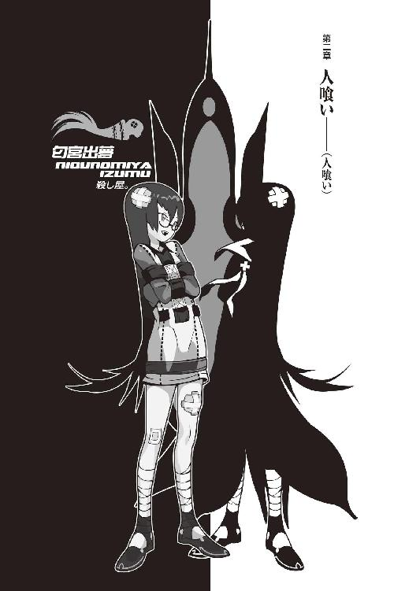
０
宝籤の一等に当籤しました。
「何を買いますか？」
「宝籤」
１
哀川潤と聞いて思い浮かべるあれこれ。
自由奔放。放蕩無頼。豪放磊落、粗にして剛。赤色。人類最強の請負人。金の折り合いさえつけばどんな仕事でも請け負う。砂漠の鷹。鬼殺し。赤き征裁。皮肉な笑み。いつだってにやにや笑っている、どこか裏返しな微笑み。シニカルな斜めに構えた口調。三白眼、吊り眼。スタイリッシュなスーツ。人を小馬鹿にするのが大好き。面白いこと大好き、トラブル大好き。他人をやたらと過大評価する。パニックがあると見れば首を突っ込み余計にかき回す。中途半端が大嫌い。すらりと背が高い。人の気持ちをまるで考えない。漫画好き。自信家。綺麗。頼れる人。何があっても敵に回したくない、味方に回せば天下無敵、無論それなりの代償は必要だが。乱暴な喋り方、乱暴な態度。横柄、理不尽、自分勝手。噓つき、平気の平左で人を騙す。頭が切れる、ただしあんまり使わない。むしろ力業主流。魅力的、カリスマ性あり。年齢不詳。多分二十代半ばから後半。コスプレ好き。愛車は真っ赤なコブラ。バイクは当然ドゥカティ（直輸入）、ただしぼくはまだ見たことがない。
「で？ ......それからどうなったんだ？」
「どうなったって、言いますと？」
「その......匂宮理澄っつー名探偵ちゃんに電話して教えてあげたのか？ きみは今すげー無意味であほらしいことしてますよー馬鹿そのものですよーっつって」
「いや......別に」
「何で。教えてやりゃあいいじゃん」
「面倒ですしね。関わり合いになりたくないし」
「そうか？ すっげー面白そうじゃん」
「マントで拘束衣で眼鏡で少女で名探偵ですよ？」
「面白そうじゃん」
「いえ。退きます」
「は。なーる」
哀川さんはさもありなんとばかりに頷いた。
八月四日。
ぼくは再び、四条河原町の付近にいた。
某大型書店の上にあるスパゲッティー専門店で、哀川さん、哀川潤と向かい合って、ランチを取っているのだった。
昨日いきなり呼び出しがかかったのだ。
こんな感じに──
『よういーたん。明日暇か？ 明日の昼から』
『え？ 明日ですか？ 明日は一日中姫ちゃんの勉強を見てあげることになっているんですけれど』
『ふうん。なら、それをキャンセルしたら暇だな』
『..................』
『じゃあねーん』
──こんな感じだ。
............。
ごめんね姫ちゃん。
哀川さんは今日は随分と、なんというかまあ、ラフっぽいファッションをしていた。若者っぽいというか、ピチピチの小さなシャツに上着は腰に巻き、着脱が面倒そうなスリムジーンズ、ハイヒールではなくバッシュのような底の厚い、深いスポーツシューズ、額にはバンダナを当てて、髪は裾で二つにくくっている。全体的に赤色を基調としているところは普段通りだけれど、まるで変装でもしているかのような有様だった。
「ん？ この格好？ いや別に変装ってわけじゃねーよ、今日はオフでプライベートだしな。いーたんに合わせてみようかなーと思って。たまにゃいいじゃん。折角のデートなんだし」
「......デートだったんですか？」
ぼくはまたてっきり何か面倒な仕事でも押し付けられるのかと思って戦々恐々ここまで出向いてきたのだけれど。しかしそう考えれば、哀川さんの言うことには得心はいく。哀川さんの普段の真紅スーツだと、誰がどっからどう見ても、カップルには見えないもんな......お姉さまと従僕、みたいになってしまう。まあ、合わせてもらったところで、つりあいが取れるわけでもないのだけれど。
「こういうのも悪くないだろ？」
「ま、哀川さん、何着ても似合うとこがありますからね......いつぞやのナース服は笑いましたが」
「......あたしのことを名字で呼ぶなっつーの。あたしを名字で呼ぶのは《敵》だけだ......って、そろそろ訂正すんのも面倒になってきた。このあたしに根気で勝つとは、お前もやっぱただもんじゃねーよな」
恒例の儀式も百回を超えると、さすがにおざなりな感じだった。哀川さんは湯葉の豆乳クリームパスタをつるつるっと吸い込むように、上品に食する。がさつなようでいて、案外この人、礼儀礼節に正しかったりする。
きっと、ちゃんと躾けられてきたのだろう。
............。
躾、ねえ？
「で、いーたん」
「はい？」
「最近、どうよ？」
「......大体、今話したので全部ですよ。高大の助教授からバイトの誘いを受けて、名探偵を拾って。あ、そうだ、ようやく左腕のギプスとれました。ほらほら」ぼくは左腕を振ってみせた。「まだ全快ってわけじゃないですけど、これで少し自由度が増しました」
「へ。ああ、先月の怪我ね。まあしかし、考えても見りゃあ、ありゃあ、よく生き残れたもんだよな......お前も。頑張った頑張った」
「......まあね。さすがのぼくも、先月ばっかは死ぬかと思いましたよ」と、哀川さんの台詞を受けてから、ぼくは腕を束ねる。「......いえ、その更に先月の姫ちゃんの騒動も、その前の零崎の騒動も、その前の鴉の濡れ羽島、潤さんと知り合う契機となったあの一件も、どれもこれも死にかけてんですけれどね、ぼく」
「あっはっは」
笑い事かよ。
「......なんか潤さんと知り合ってから、ぼくの人生滅茶苦茶って気がするんですけど」
「お前の人生なんか元々滅茶苦茶じゃねーかよ。このあたしと知り合っちまう時点で、既にな」
ふん。
言い得て絶妙だった。
「しっかし《匂宮》、匂宮理澄、《匂宮》ねえ......随分な名前とお知り合いになってんじゃねーか。お前のメイクトラブルっぷりも、いよいよ磨きがかかってきたって感じだな」
「《匂宮》がどうかしたんですか？」
「ん？ なんだ、知らねーの？」
「いや知ってますよ。源氏物語でしょう？」
「......零崎人識くんから、何も聞いてない？」
「あいつとも色々話しましたけど、ほとんど雑談でしたからね......何ですか？ そっち側の話なんですか？ 何かまずいんですか？ 《匂宮》って」
「......知らなきゃ、知らねー方がいいってこともあるんだけどな、世の中にゃ」哀川さんは言って、伝票を取って席を立った。「出ようぜ。今日は午後いっぱい、いーたんのために空けてあんだからよ」
「それは光栄なお話です」
「どっかお勧めのスポットとかないのか？ あたし、京都って割とよく来る方だけど、あんま遊びに来たことはないんだよ」
「んー」ぼくも席を立ち、哀川さんの後ろを歩きながら考える。「ぼくも遊ぶの下手ですからねー。仕事人間っていいますか」
「そうかい」
支払いを済ませる哀川さん。
当然のように、哀川さんの奢りだった。
......なんか、情けないなあ、自分。
で、これからどこに行くかだけど......ボウリングとかビリヤードとか卓球とか......でもスポーツ競技関係じゃ、哀川さんに勝てるわけがない。接待してるわけじゃないんだからあまり一方的になってもつまらないし......哀川さんの趣味に合わせるにしても、そうだよな、漫画喫茶？ 新京極の入り口らへんに一風変わったデザインの漫画喫茶があるけれど、しかしデートで漫画喫茶って、それも色気がなくて残念な話だ。かといって定番というかお約束、鴨川まで行って並んで座るのも、どっかそぐわない感じがある。
「映画とかはどうです？ 潤さん」
「最近何かいいのやってんのか？」
「さー。行ってみますか？」
「ま、行くだけ行ってみよーぜ」
階段を降りて、本屋さんを過ぎ、ここからすぐそばにある大型映画館へと向かう。とは言えあそこの映画館ってぼく、メジャーな奴しかやってないから、あんま寄る機会がないんだよな......あ、でも、哀川さんはベタ好きだから、案外何かお気に召すメニューがあるかもしれない。
しかし哀川さんは映画館に辿りつく前に「やっぱいいや」と脚を停めた。
「へ？」
「折角京都まで来てんだから、映画もねーだろ、考えてみりゃ。どっか寺だか神社だか連れてってくれよ」
「んー......」
気まぐれな人だなー。
ここから一番近いのはやっぱり本能寺だけど......行ったことのない場所に他人を案内するのって、なんだか抵抗があるよな。でも、ぼくも京都に住んでいる人間だが──だからこそ、あまり観光地とかには詳しくない。京都に来た初めの頃にはそれなりにみいこさんに仏閣案内してもらったりしていたので、その範囲内からチョイスするしかないか。
晴明神社......哲学の道......二条城......遠いな。
延暦寺......更に遠くなってどうする。
八坂神社......清水寺、そんなところか。
「八坂神社と清水寺、どちらがいいです？」
「んー。清水寺」
「清水寺ですか」
「清水の舞台から飛び降りたい」
「やめてください」
「冗談だよ」
「..................」
あなたに限っちゃ実行しそうです。
本当にやめてください。
「分かりました。つっても、別に遠くないですけど、こっからだとそれなりに歩きますよ」
「いいよん。歩くのは好き」
「そういえば、今日はコブラはどうしたんで？」
「今メンテ中。悲しいことにぶっ壊れちまってさー。やっぱ無茶させ過ぎてたのかな、今まで。そういうわけで、本日はタクシーで来ました」
「へー」
「タクシーも楽でいいんだが、しかしやっぱ自分で運転できねーって、ムカつくわ」
「人任せにできないって奴ですか？ ぼくにゃわかんない感覚ですね、それ。ま、潤さんは任すよりも任させるのがお仕事ですしね......じゃ、こっちです」
ぼくは哀川さんを後ろに、先導するように歩き始めた。
──そういえば。
当然のことといえば当然のことなので、今の今まで考えもしなかったけれど、哀川さん、京都が地元ってわけじゃないんだよな。あっちこっち忙しそうに飛び回ってるけど、じゃあ、哀川さん、本拠地というのはどこなんだろう？
「潤さんって定住地、あるんですか？」
「んにゃ？ 定住地？」
「ええ。住民票置いている地区」
「いや。あっちこっちにいざってときに身を隠せるような場所は用意してっけど、大抵はホテル暮らしかな。地元っていえるような地元は、特にない」
「はー」
そりゃ、豪勢な話だ。
「......あたしは、てっきりいーたんもそうなのかと思ってたけどね。いーたんも、別にずっと京都にいるつもりなんかないんだろう？ あのボロっちいアパートにしたって、《家》って感覚で住んでるわけじゃないんだろう？」
「かもしんないですね......根無し草ですからね。でも、玖渚がいる限りは、多分京都から離れたりはしないと思います。なんかよっぽどの事情がない限り」
「ふん。よっぽどの事情、ね。なるなる」
哀川さんは納得したように頷いた。
どこに納得したのかは、分からない。
来た道を戻って河原町通りに出て、そこから南に向かって歩く。四条通りで折れると先に八坂神社についてしまって少し興ざめだから......もうちょっと先まで抜けてから左に折れた方がいいか。そうだな、八坂神社には帰りに寄ろう。
「《匂宮》ってのはね」
道中、哀川さんが言った。
「言うなら、殺し屋ギルドの一つさ」
「......殺し屋？」
そりゃまた、随分と非日常な単語だ。
ありふれているといえばありふれているが。
少なくとも、こちら側の単語ではありえない。
「そ。殺戮奇術集団、匂宮雑技団。そっち側の世界じゃあ、かなり名前の通った存在じゃああるぜ。《名前》の通った......はは、いいねえ」
「......でも、そんな珍しい名字ってわけでもないでしょう？ ただのたまたま、同姓かも」ぼくは言った。「あの娘、右から見ても左から見ても、殺し屋ってえ雰囲気はまるでゼロでしたよ。いやだからって名探偵って感じだったかっていえば、そういうわけじゃあないですが、でも殺し屋ってのはありえないです。それくらい、雰囲気で分かりますよ」
「雰囲気ねえ。......そういえばだが、《理澄》ってえその名前にも、おぼろげながら聞き覚えがあるぜ」哀川さんは続けた。「なんだったかな......えーっと。《人喰い》の理澄......いや、《人喰い》の理澄、だったかな？」
「なんだか適当ですね」
「よく知らないんだよ。元々正体不明の集団だってこともあるし、あたしもできる限り《殺し名》の連中についちゃー関わり合いを避けてっからな。連中、どっかいかれちまってる異形の変態ばっかだからよ。あの世界はまるっきり他とは違う法理で動いてるからな──正直、付き合ってちゃこっちの身がもたねーんだ」
んー。
確かに理澄ちゃん、おかしな娘じゃあった。
不思議ちゃんっていうか。
だけど今時、あんな娘も珍しくないといえば珍しくないのかもしれない。何せ、こんなご時世だからな。玖渚やら姫ちゃんやらを知っているぼくにしてみれば、取扱説明書が必要なほど、理澄ちゃんは異常な娘でもないと思う。
「しかし《名探偵》ねえ......匂宮雑技団が探偵業始めたなんて話、面白いけど......どうなんだろうな？」
「いや、訊かれましても。ただの同姓って線もあるんじゃないですか？ 鈴木だの佐藤だのレベルとはいかなくとも、ありえないってほど珍しい名字でもないでしょう？」
「うーん。ま、そうなんだけどね......普通、こういうのは、行き過ぎた心配なんだよ。でも、ことがお前のことだからなー。何にせよ、受け取ったっつーその名刺は破り捨てた方が無難だな。携帯電話の番号も変えちまえ。トラブルはまっぴら御免なんだろ？」
「いやあ......その辺に関しちゃもう割り切っちゃってもいいかなーって思ってきました」
「およ。宗旨変え？」
「人間諦めが肝心っすよ、やっぱ」
「ああ、覚悟決めたんだ。それってやっぱ先月の件が尾を引いてるわけ？」
「先月のこともありますし......今半ば同棲してる春日井さん。ああいう人を見てるとね......なんだか自分がすげーどうでもいいことにこだわってる、レベルの低い奴みたいな気がして」
「春日井春日ね。ふん、しかしあの女が再登場するとは......意外な展開っちゃー意外な展開だ。あいつもお前と一緒で、先の読めないキャラクターだったから、何をしても意外じゃねーってのはあるかもしんないけどな」
「やめてください......あんな人とキャラがかぶってるなんて思いたくないんです」
「ふん......」哀川さんは少し思案する。「......だが、春日井春日──目的が皆無ってわけでも、ねーんだろうな......」
「最初は、ぼくのそばにいれば色々面白そうだって言ってたんですけど......どうなんでしょうね。高大の助教授先生もそうですけど、できれば人をラジオ番組みたいにいうのは止めて欲しいところです」
「へ。ラジオ番組はいいな」
にやにやと笑う哀川さん。
「ちなみに玖渚は知ってるわけ？ 下から読んでも春日井さんが、京都に来てること」
「教えるわけないでしょ」
「浮気者だ。男の屑だ。屑の男だ」
「誤解されっぱみたいで心外なんですけど」ぼくは言う。「ぼくと玖渚、そういう時期はもうとっくの昔に終わってるんですよ。終わってるんです。今はもうただの友達。フレンド。お互いがお互いを尊重しあう、エゴの介在しないプラトニックでピュアな関係なんです」
「あららー、ピュアな関係だってさ。それってどう考えても意気地なしの負け惜しみだよなー」痛いところをソフトに撫で突く哀川さんだった。「そんな風にだらだらやってていいのかねー」
「いいんですよ、別に。世の中どうせ、なるようにしかならないんですから」
「なるようにしか......ならない」ぼくの言葉を、哀川さんは呟くように、繰り返した。「《生きていれば》《死ぬ》......か。《死なない研究》ね。まあ、古びたテーマじゃあるけどよ。不老不死は太古の昔から、王様の課題だからな。ＥＲ３システムでも似たようなこと、やってたんじゃねーの？ あそこならさ」
「どーでしたっけね」ぼくは韜晦する。「助教授に渡された詳細資料って奴を読んでみたところで、どうにも要領を得なくって。なんか、お茶を濁したような文章でして......ま、まだ協力してくれるかどうか分からないぼくに対して、大っぴらに内容を明らかにできないってのもあるんでしょうけれど」
「で、結局どうするつもりなんだ？」
「......んー」
ぼくはちょっと間を置いてから、答えた。
「まあ、受けちゃってもいいかなーって」
「お。結論はもう出てんだ」
「ええ......まだ迷いはありますけど、八割がた」
「そりゃ何？ やっぱ《死なない研究》ってのに対する興味って奴？」
「も、ありますけど」ぼくは答える。「アパートの隣人が、ちょいと金に困ってるらしくて。今月中に二十万必要だとか。それで、だったら普段世話になってるし、力になれるかなーって」
「..................」
返事が返ってこないので振り向いて哀川さんを見ると、びっくり仰天とばかりに、眼を丸くしてぼくを見ていた。
......これもレアな表情。
「え？ なになに？ なにそれ？」哀川さんがぼくに詰め寄ってきて、慣れた手つきで、ほとんど瞬間的にヘッドロックを決めた。「どーしてそういうことになってんの？ お前が他人のためになんかしようって、一体何があったっていうわけ？」
「あー......いや、そんな大したものではなく」ぼくはしどろもどろ、答える。こんな反応が返ってくるとは予想外だった。ぼくはそこまで排他的に思われていたわけか......無理ないが。あと胸。胸あたってます哀川さん。「恩返しですよ恩返し。貸し借り、作りたくないですからね」
「............む」ぼくからの無難な答に、哀川さんはヘッドロックを解除する。「んー......えーと、それって前に言ってた、武士みてーなお姉さん？ 浅野タクミノカミだかなんだかっていう」
「いや、そんな派手な名前じゃないですけど......」
「好きなの？」
ぐあ。
直球だ。
ストレートだ。
「潤さんが、ぼくのことを好きなくらいには」
カウンターのライトクロスを返してみた。
「ふーん」
効果なし！
むしろ自爆！
墓穴で自爆、手間要らず！
「ほんっとお前はよくわかんない奴だな......正体不明で得体が知れないってのは、そこまで格好いいことなのか？ まあいいけど......で、その助教授さんにはその旨、もう伝えたのか？」
「んにゃ、まだです。モニターの人、二、三人、まだ決めないといけないんで......」
「何人決まってるんだ？ その武士の他には」
「いや、武士の人は誘いません」
「......偽善者だ」
「なんとでも」ぼくは肩を竦める。悪役仕草もさすがに板についてきて、今やなんとも思わない。「まず、アパートの住人の魔女を誘ってみたんですけどね」
「魔女？」
「いるんですよ。七々見奈波っつーんですけど」
「ふうん。顔広いねー。で、首尾は？」
「『はあん？ なんでこのあたしが労働に従事しなくちゃなんねーの？ 七々見奈波っつーんが、あたしの名前なんだけど、知らなかった？』」
「..................」
沈黙の哀川潤。
いやはや、全く。
最悪の魔女、七々見奈波。
ああはなりたくないというのは大前提として、あいつの我の強さの十分の一でもがあれば、このぼくの人生も随分と様変わりするんだろうなあと思うと、遺憾ながら尊敬の念を禁じえない。
「で、次にてる子さんを誘ってみました」
「ほう！ で、どうなった」
「『きゅいぃい～！ てる子うれぴい！』などということはなく、切り出す前に断られました」
「なるほど」
「で、手詰まりです」
「顔狭いな」
二人しか誘ってないんじゃん、と笑われた。
そりゃ、笑われるわな。
大学のクラスメイトやらを誘ってみてもいいんだが、五月の件もあるし、堅気の素人さんを巻き込むのは、さすがにちっとばかし抵抗がある。あと、信用できるかどうかって問題も、勿論あるし。
信じられる人なんて、
この世にいるのか。
ていうか、信じるって何だ？
裏切られてもいいってことか？
責任を相手に任せることか？
「あ、そうだ。哀川さん、ご一緒にどうです？」
「ん？ 別にいいけど。いつからだっけ？」
「八月の二十二日からです」
「えーっと。あ、じゃあ無理。仕事入ってる」
「そっすか」
「八月の後半は全滅なんだよ」
「残念」
「なーんか近頃、あっちこっちでごたごたが多いみたいでよ。どうしてだかわかんないけどトラブルが頻発してて、笹が絶滅するくらいの商売繁盛......でもなーんかキナ臭いんだよな......」
「へー。大変ですね」
と、いうか。
人類最強の請負人を、たかが十万足らずのお金で一週間も働かせるなんて、いくらなんでも恐れ多い話だった。
「でも、そろそろ木賀峰助教授に電話しないと、期限の一週間が徐々に迫ってきていますしね......」
「木賀峰？」きょとん、と言った風に、哀川さんは言った。「木賀峰？ 木賀峰っつったか？ 今」
「え？ あ、言ってませんでした？ その雇い主さんの名前です。木賀峰約。飢える方の飢餓じゃなくて、兎吊木の木に賀正の賀、で峰不二子の峰で、約分の約。あ、ヤクブンは翻訳の訳文じゃない算数の約分です」
「木賀峰......約」
「知ってるんですか？」
まあ、巫女子ちゃんいわく、有名な人らしいし。その《有名》という言葉が所有している意味が、大学内において、という範囲内だけとは限らない。
「......いや。知らない......」
哀川さんは脚を停めないままで、しかし少し、眼つきを鋭くする。元々いいとはいえない、尋常じゃない三白眼っぷりを所持している哀川さんのこと、そんな表情をされると直視不可能だ。
「知らない......知らない、と思う......けど、なんか、どっかで聞いたような......いや、《見た》のか？ んー......んー？」ぶつぶつとつぶやく哀川さん。「木賀峰、木賀峰......それこそそんなありふれた名字でもねーから、何かあったんなら忘れてるはずがねーんだが......」
「..................」
「なあいーたん。やっぱそのバイト、断った方がよくねーか？」哀川さんがぼくに向いた。「なーんか嫌な予感がすんぜ。二十万くらいの金なら、あたしが融通してやるしさ」
「いや、そういうわけにはいきませんよ」
「なんなら仕事紹介してやってもいいし」
「神に誓って遠慮します」
「んー......そうだな。確かに、だが、このわけのわかんないモヤモヤ感をはっきりさせるにゃ、逃げるよりも切り込む方が正解、か......」
「..................」
いえ、ぼくはそんなオットコ前な理由でバイトに行くわけではないんですけれど。
「いーたん。その、他に数人集めなくちゃならない《モニター》ってのは、誰でもいいのか？」
「信用さえおけるぼくの知り合いなら、誰でもいいらしいですけど」
「じゃ、一姫つれてけ」
「......え？ 姫ちゃんを？」
「ああ」哀川さんは頷く。「少なくともあいつさえいりゃあ、万が一ってことはないだろ。数字上における単純な戦闘能力においちゃあ、あいつはほとんど無敵って感じなんだからな」
もっとも、このあたしにゃあ劣るがね。
そう付け加えるのを忘れない哀川さんだった。
確かに、《ジグザグ》最後の弟子という肩書きには、それなりのものがある。今のところ姫ちゃんをぎりぎりにまで追い詰めた存在はかの《策師》以外には存在しない。ボディーガードとしては十分過ぎるだろう。だけどいやしくも大学で行われている真面目な研究に、お気楽な女子高生（しかも全教科赤点娘）なんか連れて行ってしまっていいものだろうか......。
「一姫の補習って、確か、二十日までだったろ？ それなら、二十二日からのバイト、大丈夫じゃん。間に合うじゃん」
「ですね......でも実質十日しかない姫ちゃんの夏休みを、半分以上占拠しちゃうってのはどうかと──」
「いいじゃん。どうせ、あいつ暇じゃん。嫌な予感を感じたのがこのあたしである以上、本来ならあたしが直接行くべきなんかもしれねーが、浮世の義理ってのは厳しいもんで、どうしても外せない用事でね」
「そうですか。そうですね......じゃ、分かりました。頼んでみることにします」
姫ちゃんか。
......いい娘なんだけどなー。
実は、ちょっと苦手。
だってあの娘、なんとなく玖渚に似てるから。
明るくて、天真爛漫、無邪気に純真。
正直、ぼくと対極。
「......なーんかさ」哀川さんが、呆れ混じりに言った。「人が心配してやってんのに、お前って、どっか緊張感に欠けてるよな」
「え？ あ、ぼくですか？」
「お前だよ。なんなんだそりゃ？ お前、あたしの忠告したところと、全然別のとこで悩んでないか？ その助教授、ひょっとしたらやべー奴なのかもしんねーんだぞ？ さっきの《匂宮》について教えてやったときもそうだったけどよ、お前はもうちょっと人生に対して緊張感っつーか、《危機感》って奴を持った方がいいんじゃないのか？ お前、自分が死ぬかもしれないって思ったこと、ないのかよ？」
「だからその辺はもう割り切ってんですって」
「割り切ってる、ねえ......それって問題から眼を逸らしているのとは違うのかい？ 《死なない研究》なんていっても、人間死ぬことそれ自体からは、絶対に逃れられないもんだぜ？」
「どうでしょうね」
「ま、そういうのもお前らしくっていいのかもしんないなー。なんっつーか、余裕持ってるっつーのか」
「余裕？」
「余裕というより余力かな。どっか本気を出してないとこがあるだろ？ お前ってさ。諦めてるとか割り切っているとか、そういうレベルじゃなくて。常に七割の力で人生やってるっていうか。七割......いや、六割かな。そんくらい」
「......そうですかね。本人の自覚としちゃあ、いつもいっぱいいっぱい、精一杯って感じなんですけど」
「何事であれ、自覚ってのはいつもすれ違ってるもんさ。まあそういうのって不甲斐ないっつーか、全力を出すのを怖がってるようにも見えるけど......てめえの上限を明瞭にさせる経験にびびってるだけのようにも見えるけど、だがまあ、ベクトルは違うとは言え、その点に関してのみは、あたしも人のことは言えないからな」
「？ と、言いますと？」
「だってさ。あたし、本気なんて出せないもん」
哀川さんはこの人にしては珍しい、ちょっとだけ自嘲っぽい感じで、しかしいつも通りの皮肉げな笑みを浮かべて、言った。
「そういう意味じゃ最強ってのも、頂上ってのも存外つまらんもんさ。対抗勢力がいないんじゃどうやってもバトりようがないからな。敵がいねえっつうのは、座りが悪いんだ。だからどっかで相手の土俵にまで降りていかなくちゃいけない......こっちが相手のリングに合わせるしかない。だがそんなの、相手を馬鹿にした手加減でしかねーだろ？ ずば抜けた最強無敵っつーのは、だからどっか卑怯なもんなのさ。卑怯で、そして、退屈だ」
「............」
「ま、そうだな......さっきもちらりと言葉に出た、五月にこの京都に現れたお前のそっくりさん。零崎人識くん。あいつなんか、割といい戦行ってたぜ。少なくとも最近じゃあベストだよな」
「最近じゃあ......って言いますと、過去通じてのベスト１は？ 零崎以上の奴がいたんですか？」
「んー......いたことはいたが」哀川さんは少し言いよどむようにした。「しかし、それはあたしが最強になる以前の話だからな。《こいつにだけは敵わない》って心の中で屈服したってえ意味なら、ガキの頃に二人ほどいたよ」
「二人、ですか」
それは結構な驚きだ。
ただし考えてみれば普通のこと。哀川さんだって、この世に生まれついたそのときから《人類最強の請負人》だったわけではないのだろう。
誰にだって、過去はある。
誰にだって。
必要か、不必要かは、ともかく。
好きや嫌いにかかわらず。
過去を積み重ねて、現在に至る。
現在を積み重ねて、未来へ届く。
「心の中で、屈服......」
「ああ。あたしがそう思い込んでるだけかもしれないけどな──だけどそれはもう遠い昔の話で......その零崎くんも、最早候補から外れてる。的外れな名探偵さんじゃあるまいし、あいつは、もういないんだからな」
「もういない──ですか」
「そういう意味じゃあさ、いーたん」
ぽん。
肩に、手が置かれた。
ぐっと、握られる。
強く。労りなく。加減なく。
「あたしは結構、お前に期待してんだけどな」
「......冗談は」
ぼくは、震える声で答える。
震えているのは声だけではない。
「やめてくださいよ、潤さん」
「いつかも言ったよな......現時点では、確かに冗談だ。だから気にするほどのことではないな」思いのほかあっさりと、哀川さんは肩から手を離してくれた。「だが、あたしとしちゃあいつか見てみたいもんだ......お前の《本気》って奴をな。それは、怖くもあるし、本当のところ、お前がそんな《本気》みたいなもんを出す前に、始末しとくべきなのかもしれないが」
それは、確かに、いつか言われた。
ぼくが、目的を持って。
その目的のために、全力で動けば。
どうなるのか。
どうなる？
「......無理な相談ですよ」
「ふん？」
「ぼくは、こういう奴ですからね。曖昧で、中途半端で、どうしようもない奴なんです。さっきの春日井さんの話じゃないですけど、本当、人生に目的も目標もなく、だらだらしてる奴なんです」
「明解な説明だね」ひひ、と哀川さんは笑った。「ま、そんなとこだろ。だがあたしに言わせりゃ、本気で生きないなんて、周りがどう思うかはともかく、本人にとっちゃーすげえつまんないことだと思うがね」
「余力が残ってるんだとしても、そりゃぼくには扱いきれない余力って奴ですよ。過ぎたるは及ばざるが如しってね。人間には脳の三十パーセントしか使用していないとか、ああいう奴で、それをいざ使ってみりゃあ、そりゃもうジャンクとしかいいようのない......」
「ジャンクだろうがなんだろうが、いずれ使うことになっちまうさ。その、余力って奴。お前だっていつまでも、そんな曖昧な、中途半端なままじゃあいられねえよ」
哀川さんはぼくの言を遮った。
そして、はっきり言った。
「だって、お前、生きてるんだからさ」
２
清水寺と八坂神社を巡って、夕食は哀川潤御用達の居酒屋で食事をし、まあその後も色々話したり、色んなとこ行ったり、ちょっと休んだりまた動いたり、で、深夜の零時を過ぎた頃、つまり八月五日になったところで、哀川さんはタクシーに乗り、ぼくと別れた。どうも、本当に空けてくれていたのは《午後いっぱい》だったらしく、これから休む暇もなくお仕事のようだ。
あの人も結構忙殺されてるよなー、と思う。
いつ眠っているんだろう。
「..................」
ふと、考えた。
どうして哀川さんは、請負人なんて仕事をやっているのだろうか？ あの人の持つ才能......いや、才能なんてものじゃない、あの人、哀川潤という《そのもの》ならば、望めばどんなことだってできるだろうし、どんなものだって手に入るだろうのに。
《生きていて》《死なない》。
そんな荒業だって、彼女ならあるいは。
少なくとも、それだけの絶対感はある。
そう思わせるだけの。
なのに何故、やっている仕事が請負人？
請負人とは、いわば他人の仕事の代行だ。
代わり、である。
代理人。
代理品。
どうしてそんな扱いに納得がいくのだろう。
あれだけ、他人に本気であれと強いる彼女。
いつか、ぼくの全力が見たいという彼女。
ぼくに期待しているといった彼女。
それにしては、撞着していないか？
本気が出せない。
言葉にすれば、それは同じ。
だけどベクトルが随分と違う、違い過ぎる。
ぼくは、本気が出せない。
彼女は、本気を出さない。
......その違いは、絶大。
その違いは、絶対。
最強と最弱との違い。
一概には言えないことかもしれないが。
「............そうだな」
考えたこともなかった。
考えようともしなかった。
哀川さんは。
「哀川さんは......一体、何を望んでるんだろう」
あるいは、何を望んでないのだろう。
今度訊いてみようか。
機会があれば。
今度会うときまで、憶えていれば。
「......さ、帰るか」
ぼくは踵を返す。貧乏学生のぼくには、タクシーで家まで帰るような、そんなブルジョワな余裕はない。とはいえこんな時間、バスはもう走っていない。結論、歩いて帰ろう。特に考えるようなこともないし、折角腕のギプスも外れたっていうのに、それでもやってることは一緒なんだから、なんだか虚しい話だが......。
「あ......だる」
さすがに丸十二時間哀川さんに振り回されていたわけで、結構疲労がたまっている。みいこさんに電話して迎えに来てもらおうかな......けど、それもかったるい話だ。それに、こんな時間だ、みいこさんはもう寝ているかもしれない。起こしちゃ悪い。
御池通りをだーっと横向きに、のんびりと歩く。そういやいつだったか、零崎の奴と並んで、こうして真夜中の京都をだらだら歩いたことがあった。あのときの目的地はどこだったっけ。
もう、随分と前の話になる。
あのときも、結構な数の人が死んだ。
麻痺してしまうくらいに。
どうでもよくなってしまうくらいに。
放棄し、忘却できるくらいに。
「戯言なんだろうけどね......」
生きてるなんて言われても。
死んでいるように生きているこのぼくに。
「生きていく......死んで来る......」
木賀峰約。
《死なない研究》。
無論、それはただの比喩で、助教授特有の韜晦に近いのだろう。突き詰めてしまえばただの医療にしたって《死なない研究》だ。生物学と医学との間の垣根は、ぼくのような文系者にはよく分からない。だがかつてのぼくの恩師、三好心視、彼女は《死》についての研究をしていた。そういう意味では《死なない研究》、ぼくに無縁というわけではないし、割と身近なものだ。
だが......いいのだろうか？
そんなものにかかわってしまって。
哀川さんのいうよう、何らかの不安要素、不確定要素があるのなら、そこは退くべきではないのだろうか。
「.........何にしても、同じか」
今までずっと、そうだった。《べき》だの《はず》だの、なんだかんだいいつつも、後悔しつつも反省しつつも、全ては同じ。
どちらにしても、未来は同じ。
行くも地獄、退くも地獄。
そういうのが、ぼくの人生だった。
運命に従い。
因果律に則って。
「結局、全てはなるようになるだけ......か」
と。
堀川通りの信号に差し掛かり、赤信号を守るために脚を停めたところで、ずーっと長い横断歩道の向こう側に、なにやら人影が見えた。繁華街を離れてしまえば所詮は地方都市のこと、深夜に人影なんて犬一匹差さないこの京都に珍しい──なんて思ったわけではない。いくら地方都市でも、一人や二人、深夜に散歩する人はいる。
問題は横断歩道の向こう側の人影が、まるで散歩などしているわけではなく、黄色いタイルの上にうつ伏せに倒れているということだった。
視力、２・０。
行き倒れ......だろうか。
「......んー」
さきほど零崎のことを思い出したから、というわけではないが、頭をよぎるのは、五月の件。あのときぼくはこれと似たようなシチュエーションで、下手な仏心を出してしまい、酷い目にあった。
今回も、そうでないとは限らない。
............。
さてさて。
ぼくとしては、別にこの信号を渡らなくても、アパートまで戻ることは、できるんだけどな......。
『きみは行き倒れている人を見て平然とそれをやり過ごすことができるっていうの？』
はいはい。
春日井さんの言葉はともかくとして。
たった今、今の今まで哀川潤と言葉を交していた野郎が、ここで倒れている人間を無視できるかっていったら、そんなのはないよな。
信号が赤から青に変わるのを待たず、ぼくは停めていた脚を小走りに動かした。どうせこの深夜、車なんてほとんど走っちゃいない。
「大丈夫ですかー」
と、その人影に近付いたところで。
硬直する。
「............大丈夫、でー、すー、か......」
闇色のマント。
両腕はマントの下に隠れていて。
長い髪に、眼鏡。
匂宮理澄ちゃんだった。
「..................」
また行き倒れてる......
また行き倒れています、この娘は！
近くに屈んで窺ってみると、前と同じ、これは、ただ眠っているだけのように見えた。いや、《見えた》なんて話じゃない、しっかりと「くぴー、すやすや」なんて具合に寝息まで立てて、挙句には「むにゃむにゃー」と寝返りまで打っている。泥酔して道路で眠ってしまうサラリーマンのような哀愁すら漂っていた。
うわぁ......
ていうか、なんていうか。
最低限、縁はあったわけだ。
「逃げてえ......」
こんな縁はいらない......とか言いたいけど。
でもなあ。
いくら京都の夏の夜空の下とはいえ。
それに、女の子なんだしな。
「..................」
匂宮。
殺し屋集団。
哀川さんにゃ悪いけど、やっぱり、とても、そんな感じじゃない。木賀峰助教授の《死なない研究》に関してはまだしも──こっちに関しちゃ、それほど警戒心をあらわにする必要はないだろう。
いいさ。
不思議ちゃんの相手は、慣れている。
玉藻ちゃんよりやべえってことはないだろ。
「......つっても、背負って歩くわけにもいかんし」
春日井さんが理澄ちゃんを拾ってきた八月一日から数えて、今日は三日目。そのとき《三日間何も食べていなかった》と言っていたから、今回も同じ事情で行き倒れているのだろうか。いや、そもそも失神癖があるとかなんとか言っていたか？ 本当にそうなら、連れて行く場所は病院なんだけど。しかしそれは、警察に連絡するのと同じ問題があるんだよな......《名探偵》で《拘束衣》。
とりあえず、頰でも叩いてみるか。
ぼくがそう思って理澄ちゃんの顔に手を伸ばしたところで、
ばっ
と、発条細工のように理澄ちゃんの身体が跳ね上がり、差し出したぼくの手を避けるように一気に三メートルほど、元いた位置から、一瞬足らずで移動した。それは、あの日、寿司にむしゃぶりついた動きと較べても、まるで考えられないような機敏さだった。
そこからこちらを見る眼は、見開かれている。
瞳孔すら開いているように見えた。
「......え」
「..............................」
圧倒的な無言でぼくを見据える理澄ちゃん。
はっと、ぼくは気付く。
ひょっとして、頰を叩こうとしたから？
「あ、今のは、違くて......今のは、ただ──」
釈明しようとしたその瞬間、いや、その瞬間の直前に既にもう、彼女は両脚のロケットスタートでもってして、三メートル離れたぼくの位置に飛び込んできた。それもやはり、あの日の感謝のボディアタックとは較べるべくもない勢いだった。その勢いに引き摺られて、彼女のマントがはらりと落ちる。
拘束衣が、あらわになる。
ベルトで両腕が封じられている彼女は。
その口を大きく開き、ぼくの喉元を狙っていた。
「......ひ」
喰われる、と思った。
哀川さんの言葉が頭をよぎる。
《人喰い》。《人喰い》。
人喰い。
「つ、う、うわああ！」
それを避けるためとか言う以前に、ほとんど本能による恐怖によって、ぼくは転倒するようにその一撃を躱した。正確にはその八重歯を躱しきることはできず、その切っ先はぼくの右頰を掠めるような形になる。
鋭い痛み。
刃物で切りつけられたような、冷たさ。
痛いというよりは、熱い。
熱いというよりは、凍える。
「ぎゃははっ！ ぎゃははははははははっ！」
彼女は。
笑ったように思えた。
「ぎゃははははははははははははははは！」
「ちょ......待って」
ぼくはもう地面に腰をついている。この状態では、次の攻撃は避けられない。そうすれば彼女との間の距離が伸びるわけでもあるまいに、手を思い切り伸ばして、彼女の方へと平を向ける。
彼女がこっちを向く。
口元から、血が垂れていた。
ぼくの血。
それは、赤い。
赤く、赤い。
そして笑う。
ぞくり、と。
「り、り......」
ぼくはやっとのこと、言葉を吐く。
「理澄ちゃん......」
「──なあんだ」
と。
ようやく──彼女は人の言葉を発した。
「お前、理澄を助けた奴か」
「......え？」
ぼくは驚く。
立ち上がって彼女と......距離を取る。
そんな様子に、彼女は嫌らしく、笑った。
「ひゅー、危うく間違って喰っちまうとこだったじゃねーかよ......危ねえ危ねえ。勘弁してくれよ。こちとら殺戮は一日一時間って決めてんだからよお」
「.........な、何を、言って」
「ぎゃははっ！」
彼女は、哄笑する。
恐らくは、無意味に。
ぼくはそんな彼女の有様にろりめいた。
口調が......まるで違う。口調だけじゃない、あの日会ったときと、雰囲気も、表情も、眼つきも、全然別物だ。誰だ、これは？ あたかも。それはあたかも、容れ物だけ同じで──中身をそっくり違えてしまったかのような。
錯覚。
錯覚か？
誰だ、こいつは？
彼女の、様子は──いや。
《彼女》か？
まるで、別人だ。
同じ器にしか見えないけれど。
まるで、別人だ。
その笑みも。
その瞳も。
「......り、理澄ちゃん......だよね」
「んあー？ 理澄？ 理澄ちゃん！ ぎゃはっ！ ひゅー、いいねえいいねえ楽しく愉快で詩的に素敵な間違いだ！ いやあん理澄ちゃんは身体の芯の奥の奥まで火照って震えて痺ッれちゃうぅーううううう......イエーっ!!」
そして、哄笑。
割れんばかりに、哄笑。
「ぎゃははははははははっ！」
彼女は......
否。
《彼》は。
《彼》は一歩ずつ、ぼくに近付いてきた。
焦らすように、脅すように。
楽しむように、喜ぶように。
「《今》は違うんだよ......」そして《彼》は、名乗りをあげる。「西園伸二......じゃあ、ねえぜ!? ぎゃははは！」
「............」
「私は殺し屋依頼人は秩序！ 十四の十字を身に纏い、これより使命を実行する！」天に向かって吼えるように、《彼》は言った。「今は匂宮出夢......《人喰い》の出夢さ」
３
アパートに戻ってみるも、全部屋電気はすっかり消えていて、ぼくの部屋ももぬけの殻、春日井さんはいなかった。
あの人も結構な神出鬼没系。
代わりに、一枚の置手紙があった。
やっとあの無駄飯喰らいが出て行ってくれたのかと喜び勇んでそれを手に取るも、『木賀峰助教授のところのバイトわたしも行くことにするからよろしこ 泥棒はまだできないけどきっと憶えます（なんちゃって。可愛い？） 春日井ちゃん＠銀も金も玉も何せむに（これは《子は鎹》にかけた洒落だよ） 追伸 ところで『北風と太陽』って普通そんな本気の勢いで太陽が照ってきたら皮膚を隠すためにコートは絶対脱がないと思わない？』との内容だった。奴め、隠しておいたのに封筒の中身、見やがったな。まあ初日に見つかってたし、春日井さんの元職業を考えれば、こうなることは予想はしていたけれど。
とにかく、これで面子は決定。
春日井春日、紫木一姫、そしてぼく。
異色パーティーって感じ。
時計を見れば、まだ真夜中といって差し支えのない時刻。だけどこういうのは早い方がいいだろうとぼくは携帯電話を取り出す。どうせ大学の教員なんてものは夜を夜として過ごしていない。夜中でもいつでも電話してくれと言っていたことだし。姫ちゃんには事後承諾でいいだろうと、ぼくは財布から木賀峰助教授の名刺を取り出し、書かれている番号へと電話した。
「..................」
留守電だった。
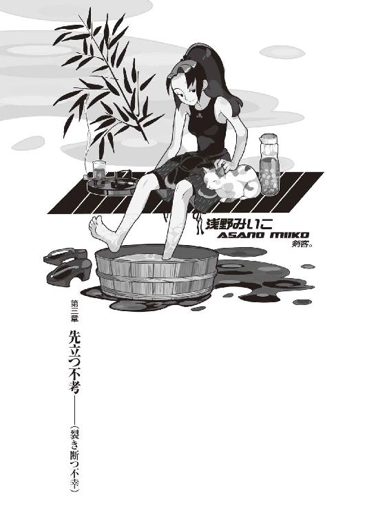
０
きみって人間の不幸だね。
１
八月十四日、日曜日。
本日、髪を切った。
「............」
ぼくは鏡を見て、合わせ鏡で後ろを見て、それからもう一度正面の鏡を見て、首を傾げる。
「姫ちゃん......これってなんかちょっと短過ぎないかな？ スポーツマンじゃねえんだからさ」
「いえいえ、こんなもんです。これこそ、姫ちゃんのイメージ通りの出来栄えです」
姫ちゃんはしゃきしゃきと、百円ショップで買ってきた散髪用の鋏を、器用にくるくる回しながら、自信たっぷりにない胸を張る。
「姫ちゃん、前々からかねがね、師匠の髪はだらだらと鬱陶しくうざくて苛々してむかつくと思っていたです」
「そんなことを思われていたのか......」
「初めて会ったときから」
「しかも第一印象かよ......」
あんまりだ。
あんまり過ぎる。
「大体師匠、もう切っちゃったですから、今更文句を言われてもとどのまつりですよ」
「............」
とどのつまり......あとの祭り......状況を鑑みれば恐らく、あとの祭りか。
「......ま、いいや」
ぼくは畳の上に敷かれた、髪の毛の散らばった新聞紙の上から立ち上がって、首に巻いていたタオルを取る。それから散髪のために脱いでいたシャツと上着を着た。そして、もう一度鏡に向かって、短くなった髪をかき回してみた。うん、ま、そんなに悪くはない。少なくとも、鬱陶しくないのは確かだ。
「サンキュー、姫ちゃん。気に入ったよ」
「どういたましてですよー」
しゅんしゅんしゅん、と姫ちゃんは鋏を格好よく、左右上下に振り回して、最後にポケットに仕舞った。
「むふふ、やっぱ短い方が師匠、お似合いです」
「お礼にいつか姫ちゃんの髪切ってあげるよ」
「やーですよ、やめてくださいです。大体師匠、お礼は姫ちゃんの夏休みの宿題プラス補習の課題を手伝ってくれることだったはずですよ。期限、明日までなんですから」
「そうだったね。でも姫ちゃんも、髪、だいぶ伸びてるじゃん。六月からこっち、二ヵ月間切ってないだろ？ それ。駄目だよ、女の子はこまめに切らないと」
「それは性差別ですか？」
「いや、そうじゃなく。ただ伸びてるなーって」
「伸びてるじゃなくてこれは伸ばしてるですよ。今、姫ちゃん、暑いの我慢して頑張ってるです。ちょっとこれから冬のシーズンに向けてイメチェンを考えてまして」
「えろいことすると髪は伸び易いらしいよ。ぼくでよければおよばずながら力を貸そう」
「ふしだらです......」
極寒の眼で見られた。
姫ちゃんは割と潔癖なのだった。
「しかし師匠。どうしていきなり髪を切ろうなんて思い立ったですか？ そんな、二階の窓から目薬に」
「..................」
これは難易度が高い。
突っ込み放棄。
「えーっとね。ほら、この頰の傷、見て」
「はい」姫ちゃんは言われた通りにする。「ふむ。えっと、十日ほど前だか、潤さんとのデート後、夜中に犬に嚙まれたという傷でしたね」
「うん。これ、まるで刺青みたいだろ？」
「まー、治るまではかさぶたでそんな感じです」
「だから、髪長いままだと、某キャラクターとかぶってしまうんだよ。ここ十日、鏡を見るたびに嫌気がさしてたんで、思い切ることにしたんだ」
「......？」
首を傾げる姫ちゃん。
まあ、わかんないよな。
零崎と会ったのは、姫ちゃんと会う前だ。
「でも師匠、その傷、ちゃんと治るですか？ 病院とか行った方がよくないですか？」
「いやあ、浅いから綺麗に消えるっぽいよ。なんか不思議なことに治りは遅いんだけど──来月にゃもうわかんなくなってるだろ。それに傷が残ったところで、向こう傷は男の誇りだしな」
「ですかねー。それは格好いい男の人の話ですよ」
「............」
何か言いたいことでもあるのか、姫ちゃん。
「さてと。じゃ、ぼくはちょっと出かけてくるわ」ぼくは用意しておいた鞄を手にとって、姫ちゃんに言った。「別にこの部屋、いてもいいから。春日井さんも今日は帰ってこないらしいしね。そんじゃ、戸締りよろしく」
「え......あの、師匠。髪を切る料金として姫ちゃんの夏休みの宿題プラス補習の課題を手伝ってくれる話はどうなりました？」
「あれは噓だ」
「なんですと！」
「ぼくの言うことをそのまま信じるとは姫ちゃんもまだまだだな。いい加減懲りないと、いつか人生失敗するよ」
「あなたは開き直ったら最強ですか！ 姫ちゃん、大事な休日を一時間も無駄に使っちゃったじゃないですか！ 明日からまた補習の日々だというのに！」
「ライオンは我が子を千尋の谷に突き落とす」
「ただの子減らしです！」
「おいおい、姫ちゃん。口の利き方に気をつけた方がいいんじゃないかな。こう見えて実はぼく、大学じゃ狂犬病って呼ばれてるし」
「何故ですか」
「泳げないから」
「へぼっ！」
泣きそうな声でわめく姫ちゃんを後において、ぼくは自分の部屋を出た。廊下を歩いて階段を降りる。そして、アパートから外界へ。
庭先では荒唐丸さんがお昼の運動をしていた。昔流行ったダンベル体操という奴らしい。ただし左右それぞれ二十キロのダンベルを使っているところが昔流行ったダンベル体操とは一味違うところだ。上半身裸で茶褐色の肉体を誇らしやかに見せびらかしながら、まるでラジオ体操でもするように、巨大なダンベルを扱っている。
夏。
太陽。
青い空。
筋肉ジジイ。
「............」
声はかけないでおこう。
今日はいい天気だなあ。
いい天気だから空しか見えないなあ。
中立売通りに出て、駐車場に向かう。駐車場では、みいこさんがフィアットのボンネットを開け、エンジンの整備をしていた。フィアット500はイタリア産ということを差し引いても、相当以上に手のかかる車なのである。
「ん」
今日もまた下だけ甚平で上着は腰に巻き、上は黒のタンクトップというスポーティーで格好いい姿のみいこさん。照りつける太陽のためか、あるいはオイルで汚れないようにするためか。
「いの字、お出かけ？」
「お出かけです。ちっと、友達ん家まで」
「友達というと？」
「例の青い奴」
「ああ、うにーか」
頷くみいこさん。
ぼくはフィアットの近くに停めてあるベスパに近付いて、ヘルメットを被り、ゴーグルを下ろす。腕はまだ本調子ではないが、バイトが始まる二十二日までにはその本調子に戻しておかなければならない。リハビリ、リハビリ。
「髪」
「はい？」
「切ったな」
「ああ、はい」
「似合わない」
ぐはっ。
......がーん。
「......あ、いや、違った。今のなし」みいこさんは首を振る。「似合う」
「............」
『似合わない』と『似合う』はどう頑張っても限りなく言い間違いようがないと思うのだけど、決して思わず本音が漏れたなんてわけではないと信じてもいいんでしょうか。
「格好いい。男前。女殺し。びゅーてぃふぉ」
「無理しなくていいです......」
砂漠のように荒んだ気分になってきた。
「随分大胆に切ったものだ。崩か？」
「姫ちゃんです」
「そりゃ、崩ががっかりするぞ。あいつ、お前の髪をずっと切りたがってたのに」
「いくらなんでもぼく、刃物を持った崩子ちゃんを後ろに回す度胸はないですよ......」
「そうか」
みいこさん、納得。
「みいこさんの本日のご予定は？」
「バイト探し」
「ですか」
「もう間に合わないかも」
「そう悲観せずに」
「うむ。そうだな、この間買った宝籤が当たるかもしれんしな」
「そう楽観せずに」
「お前の言うことは難しい」
「......ごめんなさい」
ちなみに、ぼくのバイトのことはまだ秘密。姫ちゃんにも春日井さんにも口止めしてある。気恥ずかしいとか隠しておいて驚かそうとかいう以前に、もしもバレたら説教される可能性の方が高い。だからちょっとずつ、わからない形で、夕飯をおごるとか、生活用品を買ってくるとか、電気代を立て替えるとか、そういう形で塵も積もれば山となる的な援助をしていくのが正解。......気が遠くなりそうな話だが。それで駄目なようなら、最悪、借金という形を取ればいい。無論、取り立てるつもりなんてないけど。
ともかく。
みいこさんには、恩返しをしておかないと。
この人には世話になった。
今も、世話になっている。
だから。
いずれアパートを出て行くことに、なる前に──ぼくがこのアパートに帰ってこなくなる前に、貸し借りだけは、きちんと清算しておきたいと思う。
「......今んとこ、その予定はないけど」
「？ 何か言ったか？」
「いえいえ。それでは、行って来ます」
「うむ」
「みいこさん、らぶー」
「らぶー」
で、ベスパ発進。
目指すは京都一の高級住宅街、城咲。日曜日の京都、車ばかりで狭くて信号だらけの道路を、法定時速でだらだらと走る。
「..................」
昨日、ようやくのこと、木賀峰助教授から折り返しの電話があった。留守電をいれてから、ぴたり十日後。まあ、大学の職員の時間感覚からすれば、そんなものだろう。こちらからも催促はしなかったわけだし。春日井さんは肩書きがあるからともかくとして、姫ちゃんの年齢に難色を示されるのではないかと思っていたが、それということもなく、そのメンバーで構わないということだった。
『ただ』
と、木賀峰助教授は続けた。
それでも、ぼくも含めて、一応の適性を測るため、面接して試験のようなものを行いたいということだった。業務の内容を考えれば当然のことだろう。希望の日取りを聞かれたが、姫ちゃんは二十日まで日曜日以外全部補習が入っているわけで、仕事開始までに今日か、前日の二十一日しか空いてる日はない。しかし今日は生憎木賀峰助教授、お忙しいそうで。まさか前日にというわけにもいかないので、そんな感じで、昼間に適性試験を行うのは不可能。なんだか木賀峰助教授の方が多忙そうだったので、そちらの都合に合わせますと言うと、それではそのように、とのこと。そんなわけで、適性試験は明日の夜に行われることになった。
『急な話で悪いけど、私、その日しか予定があいてないのですよ』
『いや、別に構いません。ぼくも明日の夜は暇なことですしね』
『あなたが明日の夜、時間があいているだろうことを、この私はあらかじめ予測していました』
『..................』
......本当かよ。
あんたは予言者か？
『じゃあ......まあ、それで行きましょう』
『ありがとうございます。それでは明日夜、よろしくお願いします』
明日、つまり十五日夜。
まあ前日なんてのはもってのほかにしたって、そんな時期になって今更他を当たるわけにもいかないだろうから、適性試験自体は本当に儀式みたいなものなのだろうが。顔見せっていうか研修みたいなもので、よっぽどのことがない限り、落とされたりはすまい。
......姫ちゃんと......春日井さんか......。
よっぽどかもな。
適性という言葉からはほど遠めの二人だ。
「......痛っ」
頰の傷が、風圧で痛んだ。
かさぶた、破れたかもしれない。
かさぶたが破れれば、血が流れる。
生きているから。
生きている、らしいから。
今のところは。
「戯言なんだよ......」
一時間ほどで、城咲に到着した。
玖渚友は不在だった。
「......ショック」
三十二階建ての超豪華マンションを目前にしたところで奴の携帯電話に連絡を入れたのだが、今日はお出かけだとか。そんなことは聞いていない、と思ったが、考えてみればぼくも玖渚の家に遊びに行くなんて一言も言っていないわけで、まあ、こういうすれ違いも、ありおりはべり、いまそかり。
そりゃ勿論、常識に沿って考えれば、事前にアポイントメントを取っておくべきだったってのは分かるけれど、いつでも、いついかなるときにおいてでも自宅から一歩も踏み出さない引きこもり小娘が、ぼくが来るタイミングに合わせて見計らったように留守であるなんて、そんなこと、誰が思うよ？
あーあ。
折角髪切ったの、見せようと思ったのに。
なんかつまんねーの。
「ま、仕方ねーか......」
お出かけ先が病院だというのだから、仕方ない。
今日は月イチの検診日、だったわけだ。
あくまでも初志貫徹を為そうという気になれば、病院（玖渚機関御用達の専属総合病院京都支部）にまでベスパを駆ってかけつけてもいいのだが、しかし検診日のこと、予定さえ合えば直さんも来ているはず。折角の兄妹水入らずに水を差そうってほど、ぼくも野暮ったい人間ではないつもりだ。
別に用事があったわけでもないし。
髪を見せるくらい、また、いつでもいいのだ。
拍子抜けの感は否めないが。
ぼくは道路脇に停めたベスパに、再度跨った。
そうだな、可哀想だし、約束通りに姫ちゃんの宿題でも手伝ってあげることにするか......楽を憶えるのはよくないと言ったところで、どういう風に観察しても、あれだけの量、一人で一日じゃこなせないだろうからな。学校の先生方も、まさか補習を全教科受けている生徒がいるだなんて、思いもしていないのだろう。
と、考えたところで。
ぼくを見つめる視線に気付いた。
マンションの煉瓦壁を背にしてこちらを見ている一対の眼差し。真っ白な、まるで死に装束のような和服姿。夏場の京都では珍しいともいえないが、なんだかすぅっと伸びた感じのその瘦軀にぴったりと合っているようで、非常に涼やかなイメージをぼくに与えた。
その男は狐のお面を被っていた。
「..................」
「..................」
狐面の男は、黙ったまま、しかしぼくが気付いたことには気付いたようで、す、と小さく、会釈するようにした。
ぼくも、とりあえず、会釈を返す。
......何だ？ あの人。
ベスパのヴィンテージモデルがそんな珍しい？ それとも、この高級住宅街にベスパがそぐわないとでも？
なんとなく。
なんとなく、ベスパの発進を、躊躇った。
「............」
している内に、無言のままで。
狐面の男は煉瓦壁から背を離し、無言のままで、こちらに向かって歩いてきた。ゆっくりと。ゆっくりと。音も立てずに草履でこちらに、歩いてくる。
ぼくは、動けない。
「......よお」
二人の間の距離が二メートルほどになったところで、狐面の男は言った。
「初めまして」
近くで見ると分かる、かなり背が高い。百九十は確実にある。鈴無さんととんとんか、あるいはそれ以上。どこか日本人離れしたイメージだが、しかし瘦せ身の身体に和服がぴったりフィットして、よく似合っている。
「......初めまして」
ぼくは挨拶を返した。
お面のせいで顔は窺えないけれど......声や、かもし出されている貫禄ある雰囲気なんかからすれば、絶対に年上、だよな。
「ふん。『初めまして』」狐面の男は僕の言葉を復唱した。「一人のようだな」
「あ、え、はい。一人です」
「『一人です』。ふん。となるとこの馬鹿でかいマンションの住人に、用でもあったってことになるのか」
「そんな感じです」
「『そんな感じ』で、すれ違った」
「です」
「ふん」
狐面の男は頷く。
「成程ねえ──いや、実は俺もそうなんだ」
「へ？」
「俺も『すれ違い』だ。奇遇だな」
「は、はあ」
何だか、うまく言えないけど、どことなく詰め寄るような、相手を追い詰めるような話し方をする人だな。
「もっとも俺のはただの待ちぼうけという感じで、このマンションは関係ないんだがな──京都タワーばりに目立つだろう、この建造物。京都には珍しい......だが俺は好きだね、こういう破壊的な建築物は。全体を無視した部分、突出した異形。この城咲をモデルした政治家と建築家には、いつか会いたいものだと思っている......ともあれ、こいつを見物がてら、いい目印になると思ったんだが、どうやら待ち人はここに至るまでに迷ってしまったらしい。京都と札幌で道に迷う奴は救いようのない間抜けだと、俺は思うんだがな」
「あー。この辺はもう碁盤目状じゃないですから」
「『碁盤目状じゃない』。ふん」
狐面の男は、そこでどうやら笑ったようだった。お面で表情が見えないので、本当のところは分からないが。よく知りもしない人と話しているのに表情が窺えないって、結構会話しにくいものがあるな。
「ところでどうだいお兄ちゃん。待ちぼうけを喰らった半端者同士、どこかでお話したりするつもりはないかな」
「え......」
「すれ違ったんなら別にこの後用事ってわけでもないだろう。俺も時間ができてしまったことだしな、互いに暇を潰しあうというのは悪い提案ではあるまい。何ならうまいもんでも奢らせて貰おう」
「あー......と、あ、いえ」
ぼくはちょっと口ごもった。狐面の男の妙に確信的な会話運びに、戸惑ってしまったのだ。
「ぼく、知らない人について行っちゃいけないってお母さんから言われてるんで」
「ふん。逃げるのか」
「............」
何故。
どうしてそこまで言われないといけないのか。
いや、逃げるんだけどさ！
「ええ、逃げるんですよ」開き直ってみた。「大体あなた、冷静になってよく見てみりゃ怪し過ぎますよ。何なんですか、そのお面は」
「狐だ」
「............」
説明されてしまった。
「狐というのはイヌ科キツネ属の哺乳類だ」
「知ってます」
「知ってたのか」
「あ、いえ、知りませんでした」
狐ってイヌ科だったのか。
驚いた。
「ふん。まあいいか。お前とは何か縁がありそうな様子だったから声をかけてみたんだが、その反応にその感じだと、気にするほど大した因縁でもなさそうだな」
「縁？」
縁。
因縁。因果。
運命。
なんだか、最近よく聞く言葉。
「あの、あなたは......」
「あー！ お兄さんだねっ！」
発されかけたぼくの質問は、後方から突如投げかけられた元気いっぱいの声に遮られた。
振り向けば、そこに。
匂宮理澄ちゃんがいた。
「うわーっ！ すっげー遭遇、びっくり！ こんなところで会えるなんて、偶然だねっ！」
「......やあ」
マント姿は相変らず。
にこやかな顔に、眼鏡もよく似合っている。
両腕は、マントの中に。
ぱたぱたぱたと、長い髪を振り乱しながら小動物のようにこっちに駆けて来るその姿は、愛くるしさすら感じてしまう。
「..................」
だけど、ここでぼくが警戒心を抱いてしまうそのことに、文句を付けられる人間は一人だっていないだろう。ぼくは跨りっ放しだったベスパから降りた。鍵もさしていないベスパに乗っかったままの体勢というのは、いざというときに対応しにくい。
いざと、いうときに。
「ご無沙汰だったねっお兄さん！」
どーん！ と、ボディアタック。
避けた。
「ひきゃうん！」
理澄ちゃん、そのままアスファルトをスライディング。がりがりがりがり、と滅茶苦茶微妙な音がした。両腕が使えないから、ダメージを軽減することはできなかったようだ。
「だ、大丈夫かっ!? しっかりしろ理澄ちゃん！」
「わざとらしくも大声で心配だねっ！」
ノーダメージだった。
器用に両脚のバネだけで起き上がる理澄ちゃん。
「元気っ！」
「そりゃ重畳」
「......三時間の遅刻だ、理澄」
狐面の男が呟きのように言った。理澄ちゃんが《はっ！》とびっくりしたように狐面の男を振り返る。
「もう来ないと思っていた」
「こ、これはこれは！ 狐さん！ お先にお着きでしたかっ！ さすがですっ！」
「三時間前にな」
「さすが狐さんっ！」
「感心してんじゃねえ」
「ご苦労さまでしたっ！」
「労ってんじゃねえ」狐面の男は、理澄ちゃんの頭をはたいた。「そしてそれを言うなら《お疲れさま》だ。口の利き方に気をつけろ」
「はいっ！ 狐さん、大好きっ！」
「誤魔化されるかボケ」
もう一度、理澄ちゃんをはたく狐面の男。
それから、ぼくを向く。
「......これが、俺の待ち人だ」
「............」
「待ち人だが──しかし、その反応、お兄ちゃん。お前、こいつを知ってる様子だな」
「ええ、知っていると言いますか......」
知っていると言いますか。
知っていると言いたくないと言いますか。
「半月前、行き倒れていたところをお世話にっ！」迷っている隙に、すかさず理澄ちゃんがぼくを紹介した。「そしてお金も貸していただきましたっ！ 感謝で言えばありがとうですっ！」
「ほう。そりゃ随分とまあ......」狐面の男は、ぼくをしげしげと、嘗め回すようにつま先から頭のてっぺんまで、じっくりと眺めた。「酔狂な」
「......酔狂、ですか」
「そういう迂闊な親切心は仇になりがちだぞ。そんなことをされたらこの馬鹿はこれから先、困ったときには誰かが助けてくれると思ってしまう。それともお前、こいつが困ったときはいつでもどこでも助けてやろうってのか？」
「え。いや、あの......」
「一度餌を与えて、二度目は与えないなんてのは、不実だぜ。人間生物特有のエゴだな。絶望しているものに、希望を与えるのも、よくない。希望を煽られて革命を起こした者の末路は大概ギロチンだ。結局生き残るのは希望を煽った、余裕のある煽動者だけ......だがしかし」狐面の男は言った。「借りたという金は俺が返そう。馬鹿が世話になったな、礼を言う」
「..................」
礼は最初に言って欲しい。
反省しちまったじゃねえかよ。
「いくらだ？」
「あーっと......」
でもなー。それって元々春日井さんがネコババしたお金なんだよな。しかしそんなこと、もう今更言うわけにはいかないし。
難儀なところだ。
「三万円ですっ。そうだったね、お兄さん？」
「んー......もう少し少額じゃなかったかな......」
「三万か。ほれ」
狐面の男は懐から札入れを取り出し、ぼくに福沢諭吉を四枚手渡した。
......四枚？
「利子だ」
「ああ......どうも」
罪悪感が......。
罪悪感がずんずんと嵩んでいく......
「お兄さんはいい人だねっ！」
「くっ......」
「世の中みんながお兄さんみたくいい人だったらいいのにねっ！ それならきっと素敵だねっ！」
「ぐぅ......」
「あたしはお兄さんみたいな人、大好きっ！ おうちに持って帰って一人占めしたいくらいっ！」
「ぐあ......うぐ......」
その笑顔。
その《世界って素晴らしいなあ！》的な笑顔。
聖なるエネルギーがぼくを侵食する。
わざとか？ わざとやってんのか？
ぼくを罪悪感で殺すつもりか？
だとすればそれは絶対に発覚しない殺人だ。
この娘──完全犯罪を目論んでいるのか!?
ぼくは心臓の痛みに耐えかね、話を逸らす。
「......あの、失礼ですが、お二人の方は、どういうご関係で？」
「恋人だねっ......むぐっ！」
何か言いかけた理澄ちゃんの口に狐面の男の長い腕が伸びて、そこを一ミリの隙間もなく塞いだ。腕の使えない理澄ちゃんにはそれが振り解けない。
「こいつの職業は知っているだろう」
「えーと......探偵さん」
「モガ......もが......名探偵だねっ......」
頑張る理澄ちゃんだった。
でも、片手であしらわれっぱなし。
「『モガ名探偵』だそうだ」狐面の男は感情を殺した声で言う。「で、その言にのっとって言うならば俺はその助手......と言ったところかな」
「助手？」
名探偵の助手。
それは、ワトソン。あるいは、ヘースティングス。あとは、えーと、小林少年とか。あんまり知らないけれど。しかし助手っていうには、この人、キャラクター濃過ぎないか？
「それで駄目ならパトロンか......あるいは、依頼人ってところか。ふん。言葉なんてどうでもいいがな。言葉で何を説明したところで、それは虚しいだけだ」
「......虚しい」
「戯言、だよ」
にやり、と。
狐の面が、笑った気がした。
ぼくは──絶句する。絶句する理由が分からないけど絶句する。なんだか、なんだか酷く理不尽な理由で沈黙を強いられたような気がした。
突き詰めて言えば。
ぞっとした。
ぞっとしないくらい、ぞっとした。
絶句したぼくに満足そうに頷きながら、「知り合いだというのなら、尚更だ」と、狐面の男は続けた。
「ついて来いよ。やっぱり俺とお前は縁があったってことだ。これほどの縁に逆らうのはそりゃお前、無謀ってもんだぜ。運命は受け流すもの、これは基本。運命を切り開こうなんてのは傲岸不遜の三乗倍だ──俺達は運命に流されてるんじゃない、運命に流していただいているんだからな。ふん。これだから人生はやめられない......理澄、貴様もぼおっとしてんじゃねえよ。きちんと、この人をお誘いしろ」
「あ、はいっ！」ようやく解放された理澄ちゃんはぼくに向けてびしっと《気をつけ》をした。「それではお兄さん、こちらにどうぞっ！」
「そっちにゃ窒素しかねえ」狐面の男の容赦ない突っ込みがまたも理澄ちゃんの脳天に決まる。「俺のクルマはあっちに停めてんだよ......行くぞ。お前、ベスパはそこに停めとけよ。どうせこの辺、駐禁の取り締まりなんざやらねえって......」
「あ、はい......えっと......」
ぼくはヘルメットを外して、ベスパのハンドルに引っ掛けた。ああ、結局こうしてぼくは流されるわけか......こういう優柔不断な性格がトラブルを招いてるって、分かってるんだけど。
なんかこんなこと、前にもあったような......
「......あ、ああああーっ！」
突然、理澄ちゃんが奇声をあげた。
「お、お兄さんの髪の毛が抜けてるよっ！」
「抜けてねえ！」
なんてことをいうんだこの小娘。
成長期を終えた男子にその語は禁句だ。
「切ったんだよ......気分転換にね」
「はー。なるほど」
「似合うだろ？」
「..................」
青ざめられた。
......なんか、もういいや。
「くっちゃべってんじゃねーよ。早くついて来い」
言って狐面の男は先へ先へと歩いていく。ぼくはまだはっきりと承諾の返事をしたわけでもないのに、この人、随分とまた強引な人らしい。
運命は自分で切り開くもの。
それも、木賀峰助教授の言葉。
でも、大抵の運命っていうのは、自分の行為とは無関係なところでくるくる車輪のように回っている歯車みたいなものだから。
流していただいている、か。
それもまた──言いえて、絶妙だ。
角を曲がったところに停めてあったのは真っ白なポルシェだった。この型のポルシェを生で見るのは久し振り......っていうか、この車ツーシーターじゃん。後ろに乗れなくもないけど、それはちょっと......。
「お前、理澄を膝の上に乗せてやれ」
「..................」
初対面の人間に何を要求しますかこの人。
「俺は他の人間にハンドルを触らせる気はないが......それが嫌なら、おい理澄、貴様は歩いて......」
「いやいやいや、構いませんよ、別に」
慌てて言って、ぼくはポルシェに乗り込んだ。なんなんだ、この人は......理澄ちゃんが不思議ちゃんなら、こっちの人はイタイ系か？ でもそんな感じでもないよな......物腰自体は理性的だし、底が知れないというのか。狐の面でポルシェとは、いささか洒落が利き過ぎてるって気もするが。
「えっへーっ。人間椅子ーっ！」
理澄ちゃんが言ってぼくの太腿に尻を乗せた。
......他人のことを人間椅子なんて呼ぶな。
人間椅子。
色気も何もねえ。
「大好きっ！」
「............」
笑顔の理澄ちゃん。
......悪気は、ねえんだよな。
ドアを閉めた。
「......で、どちらへ？ 人攫いさん」
「こっから東に行って城咲を抜けて、ちぃっと飛ばすと、うまい飯を出す店があるんだ。山のそばでな、食材はすべて天然素材って奴だ。人間、何をどういじったところで、どんな頑張っても、天然にゃあ勝てねえっていい証拠を、食事という形で提出してくれる店さ」
「はあん。なんかいい感じですね」
「予約は二名だが、一人くらい増えてもどうということもあるまいよ」
「ですかね。でも天然素材なんでしょう？ だったら二人分しか用意してないと思いますけど」
「ならばお前と理澄は半分こするんだな」
「はい？」
「俺は絶対に分けてやらん」
堂々と偉そうに言われた。
奢ってくれるはずでは......。
どうでもいいけど、つーか助手席に座っている身とすれば命に関わる問題だからどうでもよくないことだけど、そのお面、ちゃんと前の風景、信号とか前方車両とか、はっきりと見えているんだろうな？
「あっはー。狐さんは食欲旺盛だねっ！ 食い意地張ってるね、素敵だねっ！ 狐さん、大好きっ！」
「馴れ馴れしいぞ。理澄、同じことを何度も言わすな、口の利き方に気をつけろ」
「あ、はい。ごめんなさい、です」一瞬だけ、しゅんとうな垂れて見せた理澄ちゃん。しかし次の刹那にはぼくの方を向いてにっこり笑う。「怒られちゃったねっ！」
「......みたいだね」
「一つ怒られて一つ賢くなったねっ！」
ぼくの膝の上ではしゃぐ理澄ちゃん。相手が女の子だからあえて言わないけれど、結構重い。多分、マントの重量だ。合わせて四十キロちょっとってところか......？ ぼくは、少し視線を降ろせば見える、理澄ちゃんのつむじを見つめた。近くで見れば更によく分かる、さらさらで、綺麗な黒髪。
そして、思い出す。
あの日、あの夜、あの時のこと。
名探偵が殺し屋に変貌した、あの瞬間を。
「あ、そういえば、お兄さん、あたしの出夢兄貴に会ったって聞いたけど、本当？」
「......ああ」
ぼくは頷いた。
何故なら、それが本当だから。本当のことを本当かと訊かれれば、そりゃ頷くしかない。誰だってそうする。ぼくだってそうする。機嫌のいいときなら。たまになら。
ぼくは匂宮出夢に会った。それは否定しようのない事実だ。だけど、理澄ちゃんに会うのも、これが二回目ではなく、三回目なのだった。
「どうしたの？ お兄さん、急に黙りこくっちゃって。あ、ひょっとして出夢兄貴に何か意地悪されたんだねっ？」
「そんな感じだよ。きみの兄貴、言っちゃなんだけど、ありゃ性格最悪だぜ。昔からああなの？」
「うん。昔からあんな感じだねっ」
「結構......似てるよね」
「えー？ 全然似てないよ」
「理澄ちゃんさあ......」
「舌が大事ならそろそろ静寂することを薦めよう」
狐面の男が割り込んだ。
「加速するぞ」
２
京都から出てしまうんじゃないかというくらいに長距離を走行した結果連れて来られたのは、いわゆる料亭といった趣の店だった。いかにも京都に相応しい、古風な外観。それは狐面の男の和装にもよく合った──まるまま普段着のぼくと、マント姿の理澄ちゃんは、まるでそぐわなかったが。
案内された座敷はぼくのアパートの三倍くらいの面積で、配置された掛け軸やら花瓶やらは、みいこさんが見れば狂喜乱舞しそうな立派なものばかりだった。......狂喜乱舞するみいこさんなんて、一度たりとも見たことはないが。
運ばれてきたのは京懐石。
未成年の理澄ちゃんとぼくとは烏龍茶、狐面の男は日本酒をロックで、乾杯。誰も乾杯の音頭は取らず、ただグラスを合わせただけだった。
ぼくは、烏龍茶で少しだけ、唇を潤した。
「うぎーうぎーうぎー」
ウシガエルのようなうめき声をあげているのは理澄ちゃん。両腕の使えない彼女はグラスを口に銜えて無理矢理乾杯したのだった。理澄ちゃんはきっと、猿轡を嚙み切れるほどの顎の力があるに違いない。
ぼくは頰の傷に少し触れて、そう思った。
さて。
ぼくがこんな如何にも怪しい狐面の男と、二重人格少女の名探偵サイド、マント黒髪眼鏡に引っ付いてきたのにはただ流されたというだけではなく、それなりの理由があり、そしてその理由とは、二つある。
一つ、ぼくにしてみればこちらの方が重要なのだが──狐面の男。彼は一体、狐の面をかぶったまま、どうやって食事を摂るのか。あるいは、どうやって水分を補給するのか。口元が開いているタイプの仮面ではない、どう考えても仮面を装着したままでの食事は不可能ではないのか。そこに、興味をそそられたのだ。
............で。
「......どうした。ぼおっとしてないで食えよ」
彼はあっさりと仮面を外して、懐石に箸を伸ばしていた。続けて日本酒に優雅な仕草で口をつける。いかにも味わっているという風情で、その後に一息つくのだった。
「..................」
いや、当たり前なんだけどさ。
当たり前なんだけどさあ。
でも、当たり前のことが当たり前にできたら、誰も苦労はしないはずなんだ。
「さっきからお前は何か言いたいことでもあるのか。怪訝そうなツラだな」
「......仮面、外すんですね」
「ん。ああ」狐面の男は、脇に置いた狐の仮面に一瞬だけ視線を遣る。「他に食べる方法を、知らんからさ」
「..................」
だったらなんで仮面なんてつけてんだよ！ という質問をぐっと堪える。それは理澄ちゃんのマント下の拘束衣と同じく、訊いてはいけないポイントだ。深入りは避けたい。
ちなみに。
仮面の下の男の顔は、結構な凜々しさで、年季の入った精悍といった感じだった。眼つきの悪さが少々......かなり気にかかるところではあるが、まず男前といっていい顔。着物が相まって、歌舞伎役者のような印象がある。こんな顔をわざわざ仮面で隠す必要があるとは思えないのだが、ならばあれは、狐面の男一流のファッションなのかもしれなかった。
仕方ない。
理由の一つは、これで解消としよう。
ならば、二番目の理由を。
「えーと、あの、理澄ちゃん──」
「うるせえ」狐面の男が不気味なほど静かに、しかし厳しく通った声で、ぼくを牽制した。「食事中に喋るな」
「............」
えー......。
それじゃ一緒に食べる意味が......なくない？
理澄ちゃんを見る。理澄ちゃん、あのときと同じく犬食いではあるが、静かに懐石に舌を伸ばしている。もぐもぐと。黙々と。
「............」
郷に入っては郷に従え。
長いものには巻かれろ。
付和雷同。日和見主義。
なんでもいいんだけど。
ぼくも倣って、黙々と懐石に箸を伸ばした。
味が薄くて、あまりおいしくなかった。
「......所詮庶民ということで」
「ん？ お兄さん何か言った？」
「んにゃ、ご馳走様でした」
「ふん」
食事を終えて、狐面の男は面をかぶり直した。食後のお茶が運ばれてきたところで、ようやく「じゃあ、何か話をしようか。さっき何か言いかけていたな」と、彼はぼくに水を向けた。憶えていてくれたらしい。
「あ、えーと......理澄ちゃん。前に訊いた《頭脳労働》って......こちらの人から依頼されたものなの？」
「《頭脳労働》って？」
「............」
忘れている。
別に決め台詞とかそんなものじゃなく、その場のノリで言っただけだったらしい。
「ほら、零崎何とかって奴を探してるって」
「零崎人識」
狐面の男が言った。
「......お前、零崎人識を知っているのか」
「え？ いやいや、知りませんよ」ぼくは慌てて、全力で否定した。「知っているわけがないでしょう。どうしてぼくがそんな奴を知ってるなんてことがあるんです？ 何を証拠にぼくが零崎人識なんていう人間失格野郎を知っているっていうんですか、侮辱ですよ、それは。いやもう、本当やだやだ」
「..................」
「..................」
はっ。
なんだか怪しまれている感じか!?
「い、いや、本当、ただ何か変な名前だなって思って。零崎ですよ零崎。しかも人識って。馬鹿みたいじゃないですか、本当もう笑っちゃうって感じで、そんな傑作な名前なかなか出会えるもんじゃないですよね」
「............ふん」
狐面の男がどんな表情を浮かべているのかは、仮面なので分からないが、しかしその向こう側から貫通してくる疑惑のまなざしを感じ取ることは、そんなに難しいことではなさそうだった。
「まあ、確かに俺の依頼なんだが」やがて、狐面の男は言った。言いつつ、隣の理澄ちゃんの頭をはたいた。「てめえもぺらぺら喋ってんじゃねえよ」
「やだなあ狐さん。あたし、ぺらぺらなんて喋ってないですよ。こっそりです。こっそり」
「うるせえ」
またはたかれた。
抵抗のしようがないので理澄ちゃんはされるがままだ。また長身の狐面の男から、ぴったり叩き易そうな位置に理澄ちゃんの頭があるのだった。
「......まあ丁度いいさ。話を聞いてるんなら、別に構わんだろう......隠すようなことでもないしな。理澄。調査の結果はどうだったんだ。そもそも今日はそれを聞くために、京都くんだりまでやってきて、俺はこんな場を用意してやったんだからな」
「あ。えーとはい」理澄ちゃん、ちょっと改まった。「結論から言いまして、零崎人識なる人間はもう京都にはいません」
「..................」
「ていうか、どうも殺されてるっぽいです」
「......そうか」
狐面の男はやや躊躇うように、頷いた。
「それは、残念だ」
「予想通り、と言いますか、狐さんの言った通り、五月にここ、京都で起こった連続殺人事件......あの事件の犯人は間違いなくこの零崎って人です。これは裏づけがとれました。殺されたのは、その直後の模様です」
「............」
「詳しい調査書は別に渡しますが、多分、狐さんの望むような芳しい結果は導き出せておりません。ご愁傷様でした」
「......そうか」
へえ。
五月の連続殺人事件のことについちゃ、警察も正式には発表していないはずだ。今頃京都のことを調べているなんて理澄ちゃんは随分と出遅れているなんて思っていたけど、それは調査を始めた時期が単純に遅かっただけで（逆算すれば先月の末くらいだろうか）、存外、理澄ちゃんが掲げている名探偵という看板も羊頭狗肉ではないのかもしれない。
羊頭狗肉。
いや、この表現も、嵌り過ぎだが。
と、狐面の男がぼくを見ていた。
「......なんでしょうか？」
「いや。なんでもない」
「はあ......その零崎って奴は、お友達か何かで？」
「『お友達か何かで』。ふん、全然知らない奴さ......全然知らない。会ったこともない。ただ、ちらっと話を聞いてみればちっと面白そうな《運命》を持ってる奴だったんでな、かかわってみようかと思っただけ......死んでるならそれは不可能だから、どうしようもない。運命を閉じてしまった人間と関わる方法など、皆無だ。どうやら、零崎人識と俺との運命は、あらゆる意味で繫がっていなかったようだな」
「......そっすか」
「残念、だ」
狐面の男は理澄ちゃんの報告に、あからさまにがっかりしているようだった。仮面を被っていても、それがはっきりと分かるくらい落胆しているようだった。
「......お兄ちゃん。お前、零崎一賊というのを知っているか？」
「......知りません」
ぼくは用心しながら答えた。
狐面の男は「ふん」と、ぼくを見る。
「零崎一賊。連中は......《悪》にすらなれない、殺人鬼の集団さ。この世でもっとも敵に回すのを忌避される醜悪なる軍隊。この世でもっとも味方に回すのを忌避される最悪なる群体。邪悪と冒瀆との宝庫。序列こそ三番目だが......《殺し名》の中じゃあもっとも忌み嫌われる集団だ」
「..................」
狐面の男のいうことは、ぼくには異国の言葉のように響いた。ほんの断片的にしか、情報が入ってこない感覚。狐面の男も、殊更ぼくに説明しているという感じでもないのだろう。
「零崎人識はその中でも生粋の子供さ。生粋、正しく血統書つきの生粋。何せそいつは......零崎同士の近親相姦から生まれた子供。先へ続くことなどまるで考えない彼ら一賊の中で全く存在しえない例外的存在。例外的、あまりにも例外的な例外。いうなら殺人鬼の中の殺人鬼、零崎の中の零崎......なんとしても、存命中に、会いたかったものだ」
「..................」
零崎人識。
ぼくは思い出す。
あいつと交した、様々な、益体のない会話。
あいつはよく笑い、
あいつはよく喋った。
ぼくはあいつのそんな姿に......
自分を、投影したのだった。
吐き気を、催しながら。
「ふん」
区切りを入れるように、狐面の男は言った。
「ともあれ、ならばこの話はこれでお終いだな......さて、お兄ちゃん。これで俺の用事は済んだ......ここからはフリータイムだ。さて、話をしようか」
「はあ......」
と、言われましても。
今のでぼくも目的を果たしてしまった感があるのだが。少なくともここまでついて来た二つの理由は見事解消されてしまったわけだし......。
訊きたいことが他にあるとすれば。
狐面の男は、理澄ちゃんの《兄》──匂宮出夢について知っているのかどうかということ......それくらいか。ただ、その話題はさすがに、振りにくいものがあるな......。
特に、本人の前では。
ああ、本人の前じゃないけれど......。
ややこしいなあ。
「あ、それでしたらば！」そこで、理澄ちゃんが元気よく手を挙げた。「はいはいはいはいっ！ あたし、お兄さんに是非とも訊きたいことがあったんだねっ！」
「......何かな？」
「前に会ったときから気になってたんだねっ！」
「だから、何かな？」
「お兄さんとあの優しそうなお姉さんとは、一体どういう関係なのかな？」
「..................」
子供っぽい興味だな。
って、ぼくもさっき同じ質問したんだが。
「主人とメイド」
「はわっ！」
理澄ちゃん、のけぞってびっくり。
「め、メイド！ お兄さん、メイドだったの!?」
「ぼくじゃねえ」
「じゃ、じゃああのお姉さん!? あの綺麗で美人のお姉さんが、メイドさんだったの!?」
「そうそう。そうだったんだ。身の回りの世話は全部彼女に任せていてね。春日井さんはぼくのことをご主人様と呼んでいる」
「いっきーだったような？」
「まあさすがに人前じゃあね」
「なるほどー。ふむふむ」
納得されてしまった。
なんか、騙しがいのある娘だな。
「『優しそうなお姉さん』」狐面の男が言った。「なんだ。このお兄ちゃんの他にも世話になった人間がいるのか、貴様は」
「はい」
「......あまり他人様に迷惑をかけるな。あとあと面倒だぞ。このお兄ちゃんくらいならいいが、あまりどうでもいい奴と縁を作るのはやめろ」
「ははー」
「しかし......縁が成立してしまえば、どんな縁であれ、最早どうでもいいとは言えないか。このお兄ちゃんとその《お姉さん》ってのの縁にしたって、成立したからこそ貴様と二人との間にそれだけの縁があったってことになるんだろうからな。それは大抵の場合、どうしようもないことだ」
「......縁、ですか？」
「ああ、縁」
狐面の男は、恐らくは意味もなく理澄ちゃんの頭をはたいてから、ぼくの方を向いた。
「お前は運命の出会いというものを信じるかな」
「......え？」
それ。
その台詞。
いつか、どこかで、誰かから、聞いたような。
「たとえば、だ......今ここに、三人の人間が揃っているが──それがどうでもいい偶然の成果だと思う奴もいるかもしれないが、そうではないという考え方もあるということだ」
「......縁」
「二週間前に理澄を《助けた》お前が、その二週間後に理澄とその依頼人であるところのこの俺と、たまたまの《偶然》で出会うというこの《奇遇》......それはもう偶然でもなければ奇遇でもない」
「......運命ってことですか？ それが」
「この世に意味のないことなんかねえんだよ。全てが全て世界に対して重要な意味を持っている──この世を構成するピースの一つである限り、運命の呪縛からは決して逃れられない。さっきも言ったろ？ 俺達は運命に流していただいているんだよ。自分なんかに価値はない、自分は世界なんかと何も関係せずに生きている、なんて思ってる奴がいるとしたら......それは無知を通り過ぎて傲慢というものだな」
「......あなたは宿命論者なんですか？」
「と、いうよりは物語論者だな。神様なんてわけの分からんボケがいるとは絶対に思わないが、しかしこの世界には明らかに物語がある。だからその物語に登場する、いわば登場人物に......自由はない。自由はあるが、ゆえに自由がない。ただ、ただただ、なすがままに、ストーリーに従うだけだ」
「従うだけ......」
「俺達三人は、あそこで出会うべくして出会った。陳腐に言えば、そういうことだ」
「..................」
たとえば玖渚の月イチの検診日が今日でなければ。
たとえば理澄ちゃんが城咲まで道に迷わなければ。
たとえば狐面の男が違う所で待ち合わせていれば。
いや、そんな大きな変動でなくてもいい。
ちょっとしたズレでもいい。
ぼくが駐車場でみいこさんと話し込まなければとか、姫ちゃんとの約束を守っていればとか、そんな気まぐれレベルの話でも構わないのだ。それだけのことで、ぼくはこの狐面の男と会うことはなく、ぼくは理澄ちゃんとも再会しなかった。
そんなか細い偶然の結果を。
出会うべくして出会った......と、言えるのか？
「無論、ある程度の、制限のある自由ってのはあるさ......こうやって」
おもむろに、狐面の男は湯飲みを倒した。
こぼれた中身が卓の上に広がっていく。
とろとろ、と。
「......こんな、理不尽な、何の意味もない不自然の行為を行うことは可能だ。だが大まかなところ、ストーリーそのものに抗うことはできない。細かい自由はあっても大きな自由はない。巨大な自由は矮小な自由に駆逐される。さしずめ、籠の中の小鳥だ。何をやったところで、それは修正されてしまうのさ」
「修正......」
籠の中の小鳥。
登場人物が勝手に動き出したところで。
物語自体に変更は有り得ない。
「そう、修正。まあ、既に起こってしまった以上《もしも》の話、馬鹿げた仮説の話になるが、今日のあの場で俺とお前がすれ違っていたとしよう。そうなれば当然お前は理澄とも会うことはなかった......と、そうなるかと言えば、そうはならない」
「めがんてー......」理澄ちゃんがぺたんと、額を机につけた。「狐さん、何言ってるかわけわかんないよー。ちなみにめがんてって漢字で眼眼手って書くと妖怪さんの名前みたいだねっ」
「その場合どうなるかというと」
圧倒的なまでに見事なシカトだった。
「お前と俺と理澄はどこか別の場所で出会い、ここで交わしたのと似たような会話を交わすことになっただろう。時系列は多少入れ替わることになるが、いつかどこか、違った時間違った場所で、行為自体はなされることになるわけだ。この現象を俺はバックノズルと呼んでいる......ちなみにそのとき、お前の前に俺と理澄が二人、ちゃんと揃っているとは限らない。一人一人、別々に会うことになるのかもしれない」
「............」
「あるいはもう一つ別の可能性として、お前はあそこで俺と理澄と出会う代わりに......別の人間に会っていた可能性もある。俺とここでこういう会話を交わすのと同じ意味を持つ、他の誰か。これは俺と同等レベルの人間、俺よりレベルが高くもなく低くもない舞台にいる人間が役どころとして必要なのかといえばそういうわけではなく、あくまでもお前にとって、俺と同じ意味を持つ誰かであればいい。まあ、今のところ、この程度の縁であるなら、他の誰でも代替が利くところかもしれないな。こっちの理澄にしたって......」
ちらりと、理澄ちゃんを見る。
「......別にこいつの兄貴の出夢だったところで、お前の運命にとっちゃ大した変わりはなかったのかもしれない」
「出夢......」ぼくは思わず口を挟んでしまった。「............くん、ですか」
「ああ......ああ、そういえば出夢の方とも会ったとか、クルマの中で言ってたな。ならば尚更そういうことになる、《いま》《ここ》で理澄と会わなきゃ、《いつか》《どこか》で出夢と会ってたんだろうぜ、お前は。そういうことだ。この現象を俺はジェイルオルタナティヴと呼ぶ」
バックノズルにジェイルオルタナティヴ。
今やらなければいけないことを先送りしてもそれはいつかやらないといけなくなり、それでも尚やらなければどうなるかといえば、誰かが代わりにやってしまう。
世界のシステム。
それは......まるで。
それではまるで、世界そのものが意志を持っているようなものじゃないか。よく比喩で言われるような神様や、《世界の作者》などというレベルでなく......物語そのものが元のあるべき正常な姿に戻ろうとする機能を所持しているような......
では、運命に逆らおうという者は。
運命そのものによって排除される？
つじつまを合わせるためだけに。
自然淘汰。
神の見えざる手ならぬ、自然淘汰。
字面だけなら、その言葉が相応しい。
運命的に、相応しい。
宿命的に、相応しい。
「こいつはそれほど奇妙な話でも、度外れた話でもない。『原子は定められた形で分子に集合する』──『分子同士は同じ結合をする』──『分子の結合パターンは有限を越えない』──『融点と沸点は条件において固定している』......そして『元に戻ろう』という力は、全ての存在が確固として保持しているものだ」
「全て......ならば、運命も」
「『全て、ならば運命も』。運命の自動回復制度とでもいうのかな。エラー調整機能というべきかもしれない。何をしたところで、結局どこかで修正される。帳尻は合わされる。つじつまは合わされる。世界は絶対的な変革なるものを望んでいないということだよ。因がどう違ったところで、究極的には同じ果に至る──予定調和......ああ、そうそう、分かり易く言えばあれかな。宇宙意志って奴だ」
「......？」
「何だ。お前、ゴーストスイーパー美神、読んでいないのか。漫画も読まずに、その歳まで何をやっていたんだか」つまらなそうに狐面の男は言う。「劣悪だとしか言えないな。なら、虚空録なら分かるかな」
「......漫画、好きなんですか？」
「愛している」
きっぱりと、狐面の男は言った。
「これらの言葉に馴染みがないなら、アカシック・レコードというのはどうだ？ そう認識することには少々のズレが生じるが、理解の助けにはなるだろう。要するには基本的に、運命に逆らおうなんてのは間抜けの所業って意味さ。まして切り開くなんて、あまりにも無理な相談だ」
「......そういうの──そこまで突き詰めた考え方を聞くのは初めてなんですけど、......なんていうか、率直、悪くない意見ですね」
それはおべんちゃらでなくそう思ったし、ぼくも今までの経験上、大いに同意できるところもないではなかった。この世の中に意味のないことなど何一つないというところだけは承諾しがたいところではあるけれど、まあそれだって、理解が不可能ということではない。
運命は《決定》している。
決定とは、変更がありえないということ。
それは宗教的な概念ではなく......数学的な、統計的な、確率的な概念でも、同じことが言えるような気がする。所詮、人間がその場その場で選べる選択肢なんてのは、数限られているのだから。
だとすれば。
だとすれば、滑稽だ。
だとすれば、傑作だ。
要するに、このぼくは。
どうあったところで、このぼくである他になかったということ──
......なんて。
なんて、戯言──
「地球が誰を中心に回ってるって、そんなことは決まっている......地球は地球を中心に回っている。世界は自分のためにあると思うのも、自分は世界に役立たずだと思うのも、本質的には同じ間違いを犯している......どうしようもない間抜けどもだ」
「......どっちかってえと、ぼくは自分のことを世界に対して役立たずだって思ってる奴ですけどね」それは、どっちかどころの話じゃないが。「ならばあなたは、当然のようにその全逆、自分は世界の部品、運命の牢獄に縛られた一人の登場人物だと自覚しているわけですか？」
「それはどうだかな......俺は、その物語の外側に位置したいと思っている男さ。こんな面白い物語は......参加するよりも、はたから眺めている方がずっと楽しいからな」
「......そんなこと、できるんですか？ その仮説が正しいとするなら、物語、世界の外に出ること自体が難しいという気がしますけど」
「難しい......が、不可能とはいえない。否、俺はもうほとんど、その外側にいると言ってもいい存在さ──
俺は既に、因果から追放を受けた身だからな。
──精々、お前みたいなお兄ちゃんとこうして会話する程度のことでしか、物語には参加できねえんだよ。中途半端で、曖昧なのさ」
「ぐうぐう。すやー」
理澄ちゃんは眠ってしまっていた。
ぼく達の話が退屈だったらしい。
実際、はたから聞いていてこんな退屈な話はないかもしれない。概念に行き過ぎていて、話している当事者であるところのぼくにしたって、狐面の男のいうことは夢の中でみる幻覚のようにふわふわとしか捉えられない。何を言っているのか分からない、と言ってしまってもいい。
けれど、どうして。
どうしてこの人の言葉は、こうも胸を打つ。
何故、心に響く。
何故こんな戯言が、心に響く。
何か、今自分は。
とんでもない告白を受けているような気さえ──
だとしたら、嫌だ。
ぼくは、そんな重要な部分に。
物語の主核になんて、かかわりたくない。
「まあ、それでこの名探偵やらに代わりに動いてもらったり働いてもらったりな......よく見ておくんだな、お兄ちゃん。俺の姿をよく見ておくんだ。これが、運命に抗った男の末路だ。みっともなく惨めなもんだろう？ 俺自身は、そのみっともなさ、惨めさ加減が気に入っちゃいるんだがね......敗北というのも悪くない、と」
「......あなたは昔、物語に逆らったんですか？ だから、因果から追放を受けたって......そういうことですか？」
「まあね。ちょっとした手違いで、あわや因果を、本来的に壊しようがないはずの因果を、ぶち壊してしまうところだったんだ。神殺しは楽園追放と、相場が決まっているからな。......ふん。今から思えばありゃ考えの浅い行為で、それが今も尾を引いているわけだが──俺はそれを若気の至りとは思わない、あのときやってなけりゃ、今同じことをやるだけだろう......バックノズルだな」
「因果律をぶち壊す、ですか......」
でも、それって。
《林檎》が《落ちる》、《雨》が《降る》、《太陽》が《明るい》、《夜》は《暗い》、《楽しければ》《笑う》、《悲しければ》《泣く》──《生きていれば》《死ぬ》。
因果律に対する反逆。
実存する運命に対する革命。
来る必然を迎え撃つ独立宣言。
死なない研究。
「だったら、木賀峰助教授の研究も、そういうものなのかもしれないな......」
「......『木賀峰助教授の研究も』」耳聡く、狐面の男がぼくの言葉を復唱した。「.........だと。今そう言ったようだが、お兄ちゃん」
「え？ ああ、はい。言いましたが」
「木賀峰......木賀峰約」
「ええ。あ、ご存知ですか」
やっぱ有名なんだな、あの人。
哀川さんも知ってるみたいだったし。
「......懐かしい名だ。そういえば......そういう登場人物もいたか、あのときには」
「......？」
「お兄ちゃん。その木賀峰......えーっと......助教授か。ふん。《木賀峰助教授の研究》ってのがどういうもんなのか、この俺に教えてみろ」
「えっと」
教えてみろって......
これ、言っちゃっていいのかな。
「高都大学の人類生物学科で、えーと、いわゆる、《死なない研究》って奴を......」
「『死なない研究って奴を』」
遮るように復唱して。
突然、狐面の男は立ち上がった。
その背丈から、座布団に座っているぼくを見る視線は、まるで天から見下ろされているようだった。
なんだか、身体が凍え沈む。
心臓が、早鐘を打つ。
「死なない研究──か」
「え、あ。はい......」
「......木賀峰......が、そんなことを、な......いや、ひょっとして......ひょっとすると、《あれ》があそこには残ってたか......計算外......というより、計算し忘れていたな」
ぶつぶつと、ぼくには聞こえないくらいの声で呟く狐面の男。先ほどまでとはまるで様子が違う。さっきまでも随分な変人だったが、今はまるで、その、何と言うか......変人というより。
狂人のような。
「面白いなあ」
狐面の男は心底つまらなそうな感じに言う。
むしろ、不機嫌そうとも不愉快そうとも見える。
「お前と俺との《縁》......それはどうやら、相当面白いものであるらしい。不思議なもんだ。俺としちゃあ《零崎人識》が本命の流れかと思っていたが......ひょっとすると、お前の方が正解かもしれん」
「......へ？」
「ふん。あんな《なんでもないところ》で《たまたま》会った平凡そうな何の特徴もないこの男が、ねえ......それもそれでまた、面白い。ま、そこまで望むのはお前にとっても俺にとっても酷だがね。まさか、だろう。それはありえないと思うのが、正解だ」
「あ、あの......狐、さん？」
「起きろ理澄」
狐面の男は理澄ちゃんの脇腹につま先で蹴りを入れた。「ひやんっ！」と声をあげて眼を醒ます理澄ちゃん。
「な、何？ あ、話、終わったんだねっ！」
「帰るぞ」
「え？ そ、そんな、まだ早いよっ！ あたし、お兄さんともっとお話したいっ！ 折角会えたのにっ！」
「貴様と......貴様の兄貴に用事ができた......刻一刻と一刻を争う。あまりにも時間が欠けている。いくらバックノズルと言ってもこいつは出来るだけ早い方がお勧めだ──急ぐぞ」
「............むう」
不満そうだったが、理澄ちゃんはそれ以上反論しなかった。多分、というよりはほとんど確実に、《兄貴》という単語が二人にとってのキーワードだったのだろう。
「マント着せてください」
「おう」
やたらと偉そうにしている狐面の男が理澄ちゃんにマントをかぶせるその光景は、ちょっとだけおかしかった。
「できたぞ」
「はいー。それでは」
マント姿に戻った理澄ちゃんは座ったままのぼくに最敬礼した。
「ではではではっ！ お兄さん、また今度だねっ！」
「......うん」
ぼくは答えた。
「......出夢くんにも、よろしく」
「ういっ！ おさらばですっ！」
笑顔の眩しい理澄ちゃん。
口元からは......八重歯が覗いている。
鋭い、八重歯が。
「..................」
「おいお兄ちゃん」
「え、あ、はい」
「ゆっくりしていっていいぞ。会計は俺が済ませておく......誘っておいて悪いが、見ての通り、送っていくことはできなくなったから」
狐面の男は、机に一万円札を二枚、置いた。
「タクシー代だ」
あ、そうか。
城咲にベスパ取りに戻らないと。
「......何から何まで、すいません」
「『何から何まで』。構わないさ。それじゃ──」
「──縁が《合ったら》、また会おう」
理澄ちゃんと狐面の男は、座敷から出て行った。
障子が閉じられ、ぼく一人。
卓の上には湯飲みが三つ。内の一つは倒れて、中身は卓の表面を半分ほど、濡らしてしまいつつあった。
だけどそんなことは物語には何の関係もなく。
運命はそれを止めようともしない。
全てはなるようになる。
なるようにしかならない。
なすがままに。
全ては、いいように。
「......ああ」
そこでようやく、ぼくは思い至った。
分かった、分かった。
ぼくがここまでついて来た理由。
それは仮面のままどうやって食事を摂るかとか、零崎のことが訊きたかったからとか、そういうどうでもいいことじゃなかった。もっとシンプルな、ずっと簡単なことだった。
あの乱暴な性格といい。
あの強引な語り口といい。
ぽんぽん人を殴るところといい。
他人の都合なんてまるで考えないところといい。
それに、あの仮面の下の凜々しい素顔。
何より、あの勝気な、自信に満ちた瞳──
「あの人、哀川さんに似てたんだ......」
３
夜中。
骨董アパートに戻ったぼくは一階の姫ちゃんの部屋に直行した。姫ちゃんは畳敷きの部屋には途方もなく似合わない、脚の短いガラス製テーブルに向かって、宿題・課題の山と相対していた。
何故勉強するのか。
そこに山があるからだ。
「......やあ。姫ちゃん」
「........................」
滅茶苦茶恨みがましい眼で見られた。
思わず、たじろぐ。
折角ぼくが宿題やら課題やらを手伝ってあげようと思って根っからの親切心でやってきたのにそんな目で見られるとは心外......って、当たり前か。
「......悪かったよ」謝りながら、姫ちゃんと向かい合うように、ぼくもテーブルにつく。「一人でここまでやったんなら上等だろ。うんうん、姫ちゃんは頑張った。ほめてあげる、えらいえらい。残りはぼくがやってあげるから、姫ちゃん、少し休みなよ」
「........................」
「......何が望みかな？」
「........................」
「何がお望みでございましょうか、姫」敬語というか、意味不明なキャラになってみた。「何なりと、この戯言遣いをお使い潰しください」
「......いえ、いいです」姫ちゃんはやるせなさそうにため息をついた。「師匠相手にむきになったところで、暖簾にダメ出しですからね」
「そう言ってくれりゃありがたい」
暖簾に腕押しと言ってくれたらもっとありがたかったのだが、ぼくもそこまで高望みはすまい。
「その代わり、今度何か屠ってくださいよ？」
「え......？」
奢ってあげるくらいならいいんだが......。
それも言い間違いだよね？
「ところで師匠、結局今日はどちらにお出かけてたんですか？」
「さあ......クルマで送ってもらったからどこかよくわかんないんだけど、どっかの料亭」
「料亭！」姫ちゃんが驚きの声をあげた。「料亭っていうとあの料亭ですか！ よく偉い人達が悪巧みをするという......師匠！ 師匠は一体何を悪巧んできたのですか！」
「すげえ偏見だな......」あと悪巧みは名詞だからそんな風には活用しない。「って、そうだ、姫ちゃん」
ぼくは姫ちゃんの宿題（高校二年生レベルの問題、しかも補習問題とくればそれほどの難易度ではない）をやりながら、訊いてみることにした。そうだ、哀川さんはあんな大雑把な、もとい大らかな人だからともかく、姫ちゃんならひょっとすれば、詳細まで知っているかもしれない。
「姫ちゃん、匂宮理澄って子、知ってる？」
「............匂宮？」
「出夢でもいいんだけど。匂宮出夢か、匂宮理澄か、どっちか」
「............」姫ちゃんはしばし沈黙する。「匂宮、闇口、零崎、薄野、墓森、天吹、石凪......」
「うん？」
何か言ったか？
よく聞こえなかったけれど。
闇口？ 石凪？
崩子ちゃんと萌太くん？
「......知ってるですよ。匂宮兄妹ですよね？」
「あ、やっぱ有名なんだ」ぼくは鉛筆を動かす手を停めた。「哀川さんも知ってるっぽかったんだけど、どうにも要領を得なくてさ。ほら、あの人はああいう人だから」
「いえ、有名ってわけでもないんです。むしろその逆で、姫ちゃんなんかはたまたま知ってるって感じですかね。殺戮奇術の匂宮兄妹、《人喰い》の出夢と《人喰い》の理澄......無論姫ちゃん自身は遭遇の経験はありませんけれど、萩原さんから殺戮奇術集団、匂宮雑技団についての話は聞いています」
「萩原......子荻ちゃんか」
澄百合学園総代表、《策師》、萩原子荻。
懐かしい名前と思うほどに昔の話ではないし、忘れたくてもそんなキャラクターでなく、本当のところは懐かしがるような筋合いがある少女でもない。
「萩原さんは一年生のときに《匂宮》と一戦交えてるんですよ。その際の思い出話として聞いたです。そうでもないと知りえないですよ、《匂宮》の事情なんて......情報なんてよっぽどでないと漏れて来ないです。あそこほど排他的な集団、裏でも表でも、珍しいですからね」
「ふうん......」
「たとえば匂宮五人衆の話なんかが、聞いた中じゃ印象的だったりはします。匂宮五人衆《断片集》。五人の身体に一つの精神を宿らせたっていう、とんでもない殺し屋さんです。厄介ですよ？ 根本的に、二本の腕で十本の腕を防がなくちゃならないですから」
身体五つに一つの精神......
なんだ......そりゃ。
一瞬、鴉の濡れ羽島の千賀三姉妹を思い出す。千賀あかり、千賀ひかり、千賀てる子......いや、あれはてる子さんの冗談だったっけ、どうだったっけ......
「......そんなこと、人工的にできるわけ？」
「さあ。でも、萩原さんがそんなところで噓をつくわけもないですしね......《匂宮》っていうのは、人を殺すための手段を、正しく奇術のように講じる集団ですから。どのような常識もどのような偏見も彼らにとっては無意味です。だからついた字が殺戮奇術集団、匂宮雑技団。基本的には際物揃いだそうですよ......分家の連中も含めて」
「際物、ね」
子荻ちゃんの使いそうな言葉だ。
全ての裏技を網羅した、裏表なしの策師。
「ええ。これは萩原さんとは別ルートで入手した情報ですが、雑技団のメンバーの中には、日本刀と薙刀、それに弓矢を専門に使う三人組がいるというのも聞いたことがあるですね......近距離、中距離、遠距離の三ベクトルから攻めるって理屈ですけど、まあ、それもそれで、際物ですよね」
「際物だね」
あの《ジグザグ》を除く澄百合学園や、零崎人識なんかは、そういう意味では正統派だったわけだ。
「ですが、際物であるにもかかわらず──間違いなく最強の殺し屋集団です。潤さん、あの好戦的な《人類最強の請負人》哀川潤だって、無理をしてまで敵に回そうとは思わないでしょう」
「そこまでのものか......」
「ええ。そして師匠の言った《人喰い》の出夢と《人喰い》の理澄......こちらも、《断片集》と同じく萩原さんから聞いたことがあります」
「......じゃあ、知ってるんだ。《彼ら》っつーか、《彼女》の事情は」
「ええ。二重人格者なのですよね？」
二重人格。
解離性同一性障害、とも言う。わざわざ説明するまでもなく、漫画や小説や映画でお馴染みのあれだ。玖渚友なら《二十四人のビリー・ミリガン》を思い出すだろうし、哀川潤なら仙水忍を思い出すところだろう。何を思い出してもらったところで、ここでは別に構わない。
『どっちかっつーと僕ん方がサブで、理澄がメインって感じかな。ぎゃはは！ 僕が本体であいつが人形っつー言い方もできるけどよ』
《彼》──出夢くんはそう説明した。
『理澄ちゃんはきみの存在を知っているのかい？』
『知ってるさ。自分の中にいるとは、知らないみてーだけどな。その辺の記憶は都合よく改編されんのよ。イッエーッスッ！ たまに電話で話したりするぜ？ もしもし、ドッピオ～ってな具合にさ』
『............』
ふうむ。
ぼくは姫ちゃんに、更に質問する。
「しかしよく分からないな。一つの身体に二つの精神、それには具体的にどんな利点があるっていうんだい？ さっきの、五つの身体に一つの精神っていうのの利点はよくわかるんだけど......」
「えーとですね。妹の方の人格、つまり《人喰い》の方には殺人能力はないそうです。それも、全くの意味で、皆無らしいです」
匂宮理澄。
理澄ちゃん。
「殺戮担当は完全に《兄》の匂宮出夢、《人喰い》側にまかせっきりのご様子で」
匂宮出夢。
出夢くん。
「ますますわかんないな......殺戮奇術集団なんて銘打っといて、その片割れには殺人能力がないなんて......」
「うーん。どう説明したものですかね......師匠には、イマイチわかんない感覚かもしれないですけど」姫ちゃんは腕を束ねた。「首吊高校が年少の女の子を狂戦士として育てていた理由なら、師匠にも理解可能ですよね。そして、ならば、《標敵》のところに《殺人能力》の《ない》《女の子》を《送り込む》。これは、どういう意味だかわかりますか？」
「......スパイってこと？」
「それ以上、ですね。本人には全く自覚がないわけですから。本人の自覚のない内に《人喰い》にとって都合のよい情報を集め《人喰い》にとって都合のよい状況を作る。己自身にとって都合のよい舞台を、意識に無意識に、捜索した上創作する。それが《人喰い》の役割です」
「............」
「それに、そうですね、二次的なところでは、精神安定という意味も兼ねているとは思います。《人喰い》の方の匂宮出夢──色んな意味でぶち切れてる......ていうか、ぶち壊れちゃってる性格らしいので」
「なるほど。休息装置ってわけか」
仙水忍というよりは、写楽保介か。
ちなみにぼくもＥＲ３システムの末席を汚していた頃は、心理学方面にも手を出したことはあったが、実際に解離性同一性障害という症例の人間に会ったことはなかった。こんな形で出会うことになるとも──思っちゃいなかったけれど。
「......それも、人工的にやったのかな」
「さあ......だから、込み入った内情までは分からないですよ。内情が分かるほどにかかわってしまえば、その後に待っているのはただの死ですからね。萩原さんだって、そこまではさすがに......まあ、姫ちゃんには、危険だから教えてくれなかっただけかもしれませんが」姫ちゃんはそこまで言って「ところで」とぼくを見る。「それで師匠、その匂宮兄妹が、どうかしたですか？」
「............」
実は半月ほど前に春日井さんが妹人格の方を拾ってきてその後ぼくは兄人格の方と遭遇して、そして本日また妹人格と会ってきたんだよ、なんてことは、言わない方がいいと思う。
余計な心配はかけるべきではない。
姫ちゃんは哀川さんとは違うのだ。
「別に。なんとなくね。......参考までに、子荻ちゃんは、そのときどうなったの？ 匂宮雑技団とやりあったとき。勝ったの？ それとも、負けたの？」
「萩原さんに勝負とか勝敗なんて低次元の概念はないですよ。《勝負》の単位が違うんです。あの人にとっちゃ、《勝利》も《敗北》も、次の一手のための布石に過ぎないですから」
「......そういう意味じゃあ、多分子荻ちゃんにとっては、姫ちゃんも哀川さんも、《敵》じゃあなかったんだろうね」
「ええ。一人で永遠に終わらない碁を打ってるようなものでしたよ、萩原さんは。だから近寄りがたいところはありましたね......西条ちゃんだけは、どうしてだか萩原さんによく懐いてましたけど。萩原さんの方は、かなり迷惑そうでしたけどね」
不意に、姫ちゃんが何とも言えない、寂しそうな顔を見せる。俯いてそれを隠そうとしたけれど、ぼくには見えてしまった。見えてしまったら、どうしようもない。見てないことには、できない。本当、止めて欲しい。そんな表情を見せられたら、ぼくは、辛い。
ああ、もう。
この娘は、何かしてあげたくなる。
「姫ちゃん、ちょっちこっち」
「はい？」
「いいから、言われた通り、テーブルを迂回してこっちに寄ってきなさい」
「？ ですです？」
言われた通りにする姫ちゃん。
「両手を挙げる」
「はい」
言われた通りにする姫ちゃん。
「眼を閉じて」
「はい」
言われた通りにする姫ちゃん。
本当に、ぼくを疑うことを憶えた方がいい。
そんなわけで、
「ていっ！」
セクハラを敢行した。
「やあんっ！」俊敏としか表現のしようのない見事なバックステップでもって姫ちゃんはぼくから一気に離れつつ、アパート全体に響きかねないほどの、かなり大きな悲鳴をあげた。「な。な、な、いきなり何をしますかねあなたは！ ど、どこを触ってるですか！」
「さあ、どこを触ったのかな」
「......う」
「おいおい、こいつは参ったな、姫ちゃんは自分で言えないような場所を触られてしまったのかい？ いやらしい娘だなー」
「う、う、ううううう～」
あ。
泣いちゃった。
「う～、う、うううう......えぐ、うぐっ」
「............」
少し調子に乗り過ぎましたか、ぼく。
違うんだ。こんなはずではなかったんだ。ぼくは姫ちゃんが昔の思い出に浸り始めたシリアスというか深刻っぽい空気を打破したくて、それで、ただそれだけだったんだ。誤解だ。違うんだ、そんな眼でぼくを見るのをやめろ、ぼくは少女虐待犯変質者じゃない。
「うぐっ......うぐ、師匠、どうして、そんな、姫ちゃんにだけ、意地悪、ばかり......」
マジ泣きだった。
もう涙ボロボロ。
......えーと。
「ごめんなさい。許してください」
直球で謝った。
戯言抜き。
「......うー」
「でも、姫ちゃんが、昔のこと、思い出してるっぽかったから。......あんま思い出したいことでもないだろ？ 首吊高校──澄百合学園でのことなんか」
「それはそうですけど。でも、いいことが、まるで一つもなかったわけでは、ないですから。萩原さんだって西条ちゃんだって──それに」
「............」
それにきっと。
市井遊馬のことだって。
「あは、それにですねー」姫ちゃんは涙をぬぐって、無理矢理に、ぼくに向かって笑って見せた。「今だって、そんな楽しい学校ってわけでもないです。こーんな、勉強ばっかり」
「学生の本分は勉強なんだよ」
「......まあ、あれですよね。何を言ったところで姫ちゃんは、師匠に学費だしてもらってる身ですからね」
「......それはそうだね」
姫ちゃんの保護者は、一応哀川さんということになっていて、哀川さんは姫ちゃんの当面の生活費をぼくの口座に振り込んでくれているが、学費だけはぼくの担当だった。
六月の騒動後、哀川さんとの間でこんな会話が。
『あー？ 学校なんてどーでもいいじゃんよ』
『よくないですよ。あんな性格で姫ちゃん、どこに就職するってんですか。何の取り得もねーっつーんなら、大学くらい出しとくべきでしょう』
『はっ。やだやだ、学歴社会に染められやがって。ならば当然、学費はお前が出せよ』
『望むところだ！』
最後の台詞は噓だが、概ねこんな感じ。
かくしてぼくの貯金は尽きた。家庭教師代としてそのお金をちょっとずつ回収しつつあるが、いかんせん、先走った感もある。
つーかぼく、金の使い方、下手だよな。
「学校、そんな嫌？」
「え？」
「勉強とか本当に嫌なら、辞めちゃってもいいよ。元々、ぼくが強制したようなもんだし」
「あ。いえ、そういうわけでは」姫ちゃんは手を振って否定した。「勉強は確かに嫌いですけど、友達とか、楽しいです」
「それならいいんだけど」
「......それにですね」姫ちゃんはテーブルの、元の位置に戻った。「なんだかんだ言っても、今、姫ちゃん、楽しいですよ。このアパートの人達も、みんなよくしてくれるですし」
姫ちゃんはじっと、ぼくを見つめる。
純真そうな瞳。
だけど、それは純真なだけではない。
色んなものを、色んな風に乗り越えて。
その結果としての、純真なのだ。
「今の生活はとてもとても、気に入ってます。人生が楽しいです。だから、師匠には本当に感謝してるです。姫ちゃんは、今、とてもとても、幸せです。生活が幸福に満ちているです」
「そいつは......、どうも」
「だからまあ......大抵のことは許すですが」純真なはずの視線がただならぬものへと変化した。「さっきのは今度やったら潤さんに言いつけます」
「ぼくに死ねと言うのか......」
恐ろしい娘だった。
本当に感謝されてるんだろうか......。
「あ、そうだ姫ちゃん」ぼくは話を逸らすことに全てのエネルギーを費すことにした。「哀川さんの話で思い出したけどさ......哀川さんにお兄さんがいるとかって話、聞いたことない？」
「お兄さん？」
「うん」
「......それは肉親という意味ですか？」
「そ。なんだか、哀川さんと似た感じの人を今日見かけてさ......動物のお面かぶっててさ、料亭で《悪巧んだ》相手ってのは、実はその人なんだよ」
ぼくは、理澄ちゃんのことを除いて、姫ちゃんにあの狐面の男との間にあったやり取り、あれやこれやを説明した。
姫ちゃんは首を傾げた。
「......似てないですよ」
「そうかな？」
「潤さんは、《運命は決まっている》なんていわないですよ。むしろその逆だと思うです」
「............」
運命は自分で切り開くもの。
だっけか。
むしろ、哀川さんの立場は、狐面の男が間抜けと笑ったそっち側といわれれば、確かにそうかもしれないけれど。
「そんな、世界に物語性があるなんて馬鹿馬鹿しい仮説は潤さんなら鼻で笑うはずです。《物語は自分で創り上げるものだ》とか言って」
「そうだけど......そのお面の人の言っていたニュアンスはもうちょっと感じが違うんだよ。何ていえばいいんだろうな、そう......」
世界には物語性があって。
それぞれ、一人一人、意味がある。
意味のない登場人物などいない。
だけど......
その意味を果たさなかったところで。
結局、いつかどこかで帳尻は合わされる。
世界のすべてに意味があれど、それは、ただ、それだけ。
成功に意味はなく。
失敗に意味がない。
因は違えど、果は同じ。
「......それって、普通に運命語るより、酷くないですか？」姫ちゃんは言う。「......だって......ただ《人生に意味がある》っていうんじゃなく......《人生に意味はない》っていうんじゃなく......《意味はあるけれどその意味を果たそうが果たすまいが、結局結果は同じ》──だなんて」
「まあ──確かに」
その通りだ。
運命に従う必要はない。
運命に抗おうと構わない。
どちらにしても、
それは、同じことなのだから──
きみの不始末はいつかの誰かが始末する。
だから運命に流していただこう──なんて。
とんでもない無茶を、言っている。
言っている、はずなのに。
「..................」
「それに潤さんにお兄さんがいるなんて話は聞いたことないですね......というか、潤さんに肉親がいるなんて話自体、姫ちゃんは知らないです」
「そっか」
「勿論、潤さんにだって生んでくれたご両親とかいらっしゃると思いますけれど......だからひょっとしたら兄弟姉妹、いらっしゃるかもしんないですけど、でも、潤さんもあれで、過去を語らない人ですから」
過去を語らない。
自身の昔を、語らない。
「それは師匠と似てますね」
「ぼくと哀川さんとじゃ、その行為の意味が全然違うと思うけどね......そっか。じゃあお兄さんとかじゃないんだな......親戚......っつうのも無理があるか......」
じゃあ、他人の空似。
そんなところか。
安直かもしれないが、妥当な線だ。
「うーん......でもいかにも怪しげだったんだよな......怪しげっていうか何ていうか、ほとんど疑ってくれとばかりで......」
「なんですか？ そんなにそのお面の人が気にかかりますか？」姫ちゃんはぼくを覗き込むようにする。「なんだったらその人、姫ちゃんが殺してきましょうか？」
「..................」
それはあまりにも......あまりにもこともなげな、ともすれば聞き逃してしまいそうなほどこともなげな、姫ちゃんの台詞だった。
「指ももう完全に快復しましたし、潤さんに指摘された《弱点》の方ももう補強しましたから、そのお面の人がよっぽどでない限り、余裕で簡単で......」
「姫ちゃん！」
ぼくは怒鳴った。
それにびっくりしたように、姫ちゃんは眼を瞠る。
「な、なんです？ そんな、いきなり大声で」
「......姫ちゃん。それは──それは、よくない。それは──それは、不用意だ。今姫ちゃんは、こっち側で生きてくためには、絶対に言っちゃならないことを言ったんだ」
「え......でも」
「でも、じゃない」
ぼくは言う。
自分のことを棚に上げてでも、言う。
言わなくてはならない。
「もう二度と、人を殺すなんて言っちゃ駄目だ。人を殺すのは、もっと駄目だ。そうでないと......今持ってる生活を、全部失うことになる。楽しいんだろう？ 今、人生が楽しいんだろう？ 楽しいんなら、楽しいままにしなくちゃ」
「............」
「分かった？」
「......分かりました」姫ちゃんは、しょんぼりと頷く。「ごめんなさい。反省するです」
「......うん」
そこで謝れるなら、きみはまだ大丈夫だ。
手遅れになってない。
手遅れになったぼくとは違って。
手遅れになったぼくとは違って。
手遅れになったぼく。
......それはまた、戯言。
ぼくは自嘲する。
何をやっているつもりなのか。本当、何をやっているつもりなのか。手遅れになったぼくなんかが何を言ったところで、そこにどんな説得力があると思っているんだ？ そんな資格もない癖に。手遅れになったぼくなんかが何を言ったところで──
世界は、何も変わらないのに。
運命は自分で切り開く？
笑わせる。
笑わせる？
笑わせろよ。
笑わせるのが役目だろう。
どうせ、道化なら。
姫ちゃんはしょんぼりとしたままで、ぼくからの次の言葉を待っているようにも思えた。本当に......本当に、この娘は苦手だ。本当に苦手だ。どうしてぼくが他人の面倒なんかみなくちゃいけないんだ。
責任。
義務。
そんなところか。
そんなところなのか？
そんなもののために動くほど、そんなもののために働くほど、ぼくがいい奴だったか。いつの間にか、ぼくは、そんないい奴になっていたのか。
全く、それは知らなかった。
それとも、いい奴にでもなったつもりなのか。
自分の代わりを、自分にできなかったことを、手遅れになる前の姫ちゃんにやってもらおうというのか。
自分の代用品。
自分の罪の請け負い。
ああ、その通りだよ。
ぼくはもう何もやりたくないんだ。
姫ちゃんが苦手なのは、本当は玖渚に似ているから、なんて理由じゃない。本当は──その経歴に、自分自身を投影してしまうからだ。零崎とは違う意味で──姫ちゃんは、ぼくに、似ているから。
だから、姫ちゃん。
姫ちゃんはせめて、ちゃんとしてくれ。
そうして欲しい。
「......姫ちゃん」
「はい？」
「明日の適性試験、ちゃんとしてね」
「はいっ！ お任せてください！」
姫ちゃんは明るく、にっこりと答えた。
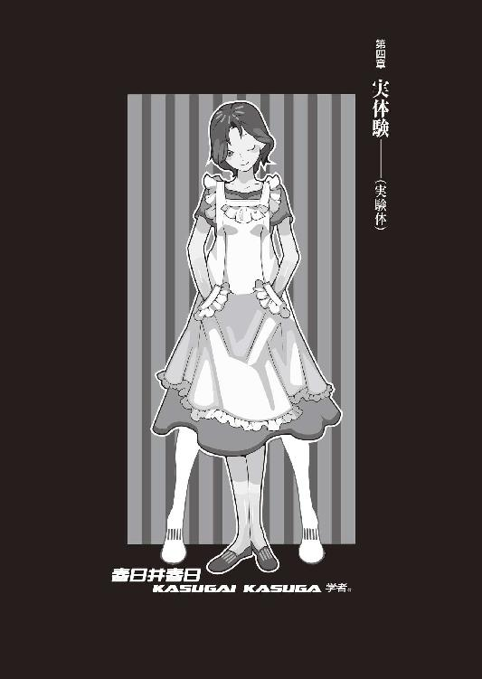
０
きみの意見には賛同する。
が、その意見を述べる権利は死んでも認めない。
１
こんな現実を見た。
今はもう誰も陽炎のようにさえも記憶にとどめていない、五月の京都に恐怖と混乱とを惜しみなくもたらしたたった一人の殺人鬼と向かい合うようにぼくがいて、時間はいつなのか場所はどこなのか、淡々と静かに、潭々と静かに、譚々と静かに、周囲の暗闇にわずかも聞こえ漏れないように気を遣いながら、会話を交している。
殺人鬼はぼくに訊いた。
お前は人を殺したことがあるか？
ぼくは殺人鬼に答えた。
まさか、一人も殺していない。殺人なんかとんでもない。これまでに一人だって殺したことはないしこれからも一人だって殺すつもりはない。殺したいと思っても我慢してきたし、この先どんな種類の激情に駆られても、きっと我慢してみせる。
殺人鬼はぼくの答に苦笑する。
噓をつけ。
噓じゃない。噓なんか言わない。噓なんかつかない。一緒にしないでくれ、ぼくはきみとは違うんだ。人を殺すような人間は精神が壊れている。異常なんだよ。
馬鹿馬鹿しいほど傑作だ。この世の中に。こんな時代に。こんな不幸と暴力と騙し合いと流血と醜悪の吹き溜まり、掃き溜めのような世の中のこんな時代に──人を殺したことのない者なんているものか。
ぼくは実際その通りだと思ったが、しかしただ頷くだけでは会話が成立しないので、敢えて逆のことを言って殺人鬼を諫めることにした。
偏ったものの見方だな。きみの言っていることは聞いていて恥ずかしいほどに見当違いもはなはだしい。この世にあるのは不幸と暴力と騙し合いと流血と醜悪だけじゃない、他のものもある。他のものもたくさんある。そちらの方がずっと多いくらいだ。
たとえば。
たとえば幸福。
たとえば。
たとえば正義。
たとえば。
たとえば恋愛。
たとえば。
たとえば友情。
たとえば。
たとえば夢想。
傑作だぜ。
殺人鬼は猫のような眼を細める。
重畳、重畳。傑作、心底噓偽りなく傑作だ。馬鹿馬鹿しさが捗々しい、片腹の痛さにも程がある。そんなものは存在しない、どこにも存在しない、いつだって存在しない、蜃気楼にも似たまやかしばかりだ。どれもこれも胡散臭くて反吐が出る。幸福は不幸の虚飾形で正義は暴力の裏返しで恋愛は騙し合いの副産物で友情は流血の鏡面性で夢想は醜悪の序章編だ。運命も必然も因果も因縁も何もかもが希望を殺戮するためだけのどうしようもない破壊的な夢物語だ。わずかたりともこの世界には生きているだけの値打ちはない。生きていても仕方ない。花に嵐のたとえしかない、絶望だけが人生だ。蚯蚓だって螻蛄だって水馬だって、みんなみんな死んでいくんだ、腐乱死体だ。生きていたから何になる。殺人が全てだ。殺すしかない。目の前に人がいたらそいつを殺し、後ろにいたらそいつを殺す。そばにいなければ探してでも殺す。殺し殺され喰われ合う。
本気で言っているとはまるで思えない。きみはきっと明日になれば違うことを同じ口で言うだろう。正義と秩序を恥ずかしげもなく舌の上に載せるかもしれない。殺人なんて生活のためだ。殺人に意味なんてない。殺人は芸術だ。殺人とは宇宙そのものである。まるで七色変化に、同じ行為に違う意味を見出すことだろう。きみは気まぐれの権化のような男だ。このぼくと同様に気まぐれの権化のような男だ。だがしかし、それがゆえに、きみを縛るものは何もない、己の言葉でさえも。きみはあまりにも自由だ。
そしてお前はそれがゆえに、あまりにも不自由だ。その通り、勿論冗談さ。お前の存在のように冗談さ。やれやれだぜ、全くもってお前は奇跡的なくらい不自由だ。
殺人鬼はそういっておどけてみせる。
だがお前だって本気で言っているとは思えない。お前は大噓つきで、お前は真実以外の全てを語る。何故ならお前はどうみても人間が好きというタイプではない。人間嫌いなんてもんじゃない。お前は人間を憎んでいる。
そうでもないさ。好きな人間ならいっぱいいる。人間が映し上げた映画、人間が作り上げた音楽、人間が描き上げた絵画、人間が極め上げた料理、人間が組み上げた車や飛行機、人間が学び上げた学問、人間が紡ぎ上げた物語、どれをとってもすばらしいものばかりだ。
お前は映画が好きで音楽が好きで絵画が好きで料理が好きで車や飛行機が好きで学問が好きで物語が好きなだけだ。お前が映画と音楽と絵画と料理と車と飛行機と学問と物語が好きだというのは、逆に人間を何ともみなしていないということだ。人間を芸術と文化を生み出すだけのセコい装置としかみなしていないということだ。そんなものの見方は、壊れている。
壊れている？
欠陥製品だ。
それは言い過ぎだと思う。まるで狂気だ。
じゃあお前は人間が好きか？
............。
俺は人間が好きだ。
殺人鬼はいけしゃあしゃあと言った。
ぼくは静寂に訊く。
ならどうしてきみは人を殺す。
殺人鬼は静寂に答える。
さあな、知ったことじゃない。全然知ったことじゃない、そんなこと、知りもしないし知りたくもない。俺が誰を何人殺そうと、俺には一切関係ない。俺の外で起こっていることでしかない。殺人は俺の内面に何の干渉もしない。
ならどうして人間が好きだと言う。
殺人鬼は同じ口調で答える。
俺は人間が好きだ。俺は人間が好きだ。俺は人間を愛している。俺は、そう言い続けなければならないんだ。真実がどうであれ、虚構がどちらであれ、俺はそう言い続けなければならない。そうしないと俺は、きっと人間を嫌いになってしまうだろう。
人間を、嫌いに。
そうしないと俺は、きっと人間を憎んでしまうだろう。それは、俺はそれだけは避けたいのさ。普段から人を好きでいる努力をしないと──本当に好きな相手が現れたとき、俺はきっとそいつを殺してしまう。
............。
お前は変われるとは思っていないのか。
............。
お前は変わりたいとは思わないのか？
その言葉にぼくは眠りに堕ちて、夢へと帰る。
そして──
そして八月十五日、月曜日かつ終戦記念日。
夕方四時。
姫ちゃんの戦場（学校）からの帰還を待って、みいこさんからレンタルしたフィアット500での出発と相成った。
「姫ちゃん、着替えなくていいよ」
「およ。どうしてです？」
「学生は制服のままの方が面接受けがいいんだ」
「なるほど」
「風俗とかでもそうなんだよ」
「黙れ春日井」
呼び捨てたところで、メンバー勢揃い。
ぼく、春日井春日、紫木一姫。
「それにしてもわたしこんな狭っ苦しい後部座席なんて絶対に嫌だよ」
「またお姫様みたいな我がままを......」
「いいですよ、姫ちゃん身体ちっこいですし」
「じゃあわたしは助手席だね」
車内に全員が入って、ドアが完全に閉まっているのを確認してからシートベルトを締める。キーを回して、出発進行。
目指すは──木賀峰約助教授の、個人研究室。
骨董アパートから数えて車で数時間......といったところらしいが、実際のところ、初めての道程だし、それは行ってみないと分からない。ま、たとえ五時間かかったところで、このメンバーが車の中にいて、退屈するということはないだろう。
「......思い出しているかな？」
唐突に脈絡もなく春日井さんが言う。まあ、この人のこんなしゃべり方は、別に珍しくない。脈絡もなく節操もないのはこの人のニュートラル、いつもの通りだ。
「何をですか？」
「先月のこと。ちょっとデジャヴ？」
「......フィアットで、研究所......みたいなところに向かうって展開はそっくりですが」ぼくは慎重に答える。「でも、いくらなんでもあんな展開はありえないでしょうよ。木賀峰助教授は卿壱郎博士みたいな、荒唐無稽な研究やってるわけじゃないでしょうし」
「《死なない研究》でしょう？ 十分を三つ重ねて荒唐無稽だよ。むしろ抱腹絶倒といってもいいかもしれないけれどね」
「でも今回はただのバイトですし、誰かを助けに行くわけでもありませんしね。それにメンバーも......」
あのときの面子は、玖渚友と鈴無音々。ぼくは、ちらりと助手席と、バックミラーで後部座席を窺う。そしてゆっくりと頷いた。
春日井春日がこちら側にいる。
それだけで、もう語るべきことはない。
「このメンバーなら、多分大丈夫でしょうし」
「ふむ」
「大体木賀峰助教授の研究室っていっても、あんな馬鹿でかい規模じゃないらしいですよ。なんでも、昔恩師が経営していた診療所を改築したんだって......だから、一戸建ての家をちょっと大きくしたくらいのもんみたいです。だから研究所じゃなく、研究室って言うんじゃないですか？ その基準はよくわかんないですけど」
「なるへそ」
春日井さんは肩を竦める。
「そうだね。そうだね。確かに似ているとは言ってもそれはフィアット500とスバル360みたいなもの......」
「それは全然違う！」思わず、ぼくは怒鳴った。「それからフィアットごひゃくって言うな！ それはぼくを馬鹿にしているんですか、ぼくに対する宣戦布告ですか春日井さん！」
「......ごめんなさい」
春日井さんが素直に謝った。
ちょっとムキになり過ぎたか。
「......それに実際、言ったところで、北極と南極の違いみたいなもんでしょうよ......」
つまり、表層的には似たようなもので、遠くから関係ない一点一点の物体として観測すれば大した違いはそこにはないが、事実としてその両方に関係する身であるぼくにしてみれば、本質的にまるで違うということだ。
「師匠ー」後部座席から、姫ちゃんの声。「姫ちゃん、ちょっとお疲れモードですからおやすみしちゃっていいですか？」
「ん？ ああ、いいよ。眠れ眠れ」
「はいー」
「ごめんね、学校で疲れてるだろうのに」
「いえいえー。姫ちゃんもそろそろバイトしたいなーなんて思ってましたから、師匠の誘いは渡りに鳥でしたー」
「天の川なんだね」
ぼくより素早く春日井さんが突っ込みを入れた。
そんな機能も持っていたのか......。
しかもちょっと高度。
「補習も終わったところで、いい眼潰しになりますし」
「そうだねえ。その通りだねえ」
春日井さんは普通に頷いた。
いや、あんた、そこもちゃんと突っ込めや。
かなり怖いだろうが。
「安心してくださいー。向こうでもし何かありましても、師匠の身体は姫ちゃんが守りますから」そして姫ちゃんは眼を閉じた。「おやすみです」
そのままシートへ、横向きにぱたんと倒れる。制服が皺になるんじゃないかとちょっと心配したが、ま、そこまで言うのは多少過保護というものだろう。
「いい娘だねえ」
春日井さんが冷やかしっぽくいう。
「......まあ、そうですね」
「いい娘だねえ。どうして一姫ちゃんはこんないい娘なんだろうねえ」春日井さんは続ける。「そこには何か理由があるのかねえ」
「............」何が言いたいんだ？ この人もどうしてどうして、結構思わせぶりな人だ。「あの......運転中、あまり話しかけないでもらえます？」
「いい人間──《善良》な人間っていうのは大抵の場合意図的な《善良》であることが多いよね。強いていい人間であるってことが多いよね」ぼくの言葉なんて馬の耳にどこ吹く東風、春日井さんは更に続ける。「天然でいい人間なんてのは──大抵の場合ただの邪悪だよね。それこそ先月のときの玖渚友と兎吊木垓輔の如く」
「兎吊木さんの話は勘弁してください......」ぼくはマジで泣きを入れた。「あの人とのことは、もう本当トラウマになりかけてるんですから。今でもたまに夢に見ますよ......未だにわかにゃ信じられないですよ、玖渚があんな奴ら八人も統率していたなんて」
「統率ね」
「？ 何ですか？」
「統率はいい言葉だ。多分最高にいい言葉だ。いい言葉は決してなくならない」
「......だから、何ですか？」
「別に」短く言って、春日井さんも眼を閉じた。「わたしもおやすみします」
「......そっすか」
あんた、脳の温度が四十一度か？
どうしてそんな、無駄に意味ありげなのだろう。
助手席で寝られるのも、それはそれで運転しにくいんだけどな。まあ、横からあれこれ茶々入れられるよりはいっか。
「では何かあれば起こします」
「起こすな」
ご命令をたまわった。
「わたしこと春日井春日は寝ているところを起こされると大変なことになります」
「大変なことって......」
「ねむねむ」
寝てしまった。
そんなこと言われても......寝てないところを起こすなんて芸当はぼくごときには到底不可能だしなあ。最長老さまじゃあるまいし。
ぼくは運転に集中することにした。ガソリンの量は十分。みいこさん、今日の内に補充しておいてくれたのだろうか。本当、あの人には何から何まで世話になる。
『いの字』フィアットの鍵を借り受けるとき、みいこさんはぼくに言った。『何か知らんが私は嫌な予感がするぞ』
『嫌な予感？』
『まあ......私が心配しなくとも、お前なら大抵のことは大丈夫だとは思うが』みいこさんは言った。『それでもしかし、精々、気をつけた方がいいと思う』
『はあ......』
『しかし、《死なない研究》はいいな』みいこさんは唇だけで微笑む。『剣術じゃ、そういうのは《強くなること》ただ一点なんだけれどね』
『間違っちゃないでしょう、それも』
『生きるためには何が必要？』
『は？』
『生きるためには何が必要？』
『えーっと......？』
『生きるためには、まず生き残らないといけない』みいこさんは無感情そうに言った。『そういうわけで、頑張って生き残れ』
『はあ』
『生き残って、帰って来い』
ぼくは頷いたが、あのときみいこさんが言っていた言葉の意味が分かったから頷いたわけではない。なんとなく、頷いてみただけだ。なんとなく頷くことにかけて、ぼくの右に出る者はなかなかいないだろう。
ちなみに、八月十五日現在、みいこさんはバイトも未だに決まらず、掛け軸の件に関しちゃ、もうほとんど諦めているそうだ。みいこさんに諦められてしまうと、ぼくの計画も変更を余儀なくされてしまう。そこは、なんとか策を練らなければならないか......どうしたものか。
今出川通りをずっと東に、鴨川にぶつかったところで、再度北へ向かって。ここからはしばらく、ずっと北を目指して上るだけだ。
春日井さんも姫ちゃんも、すっかり眠っている。
全く、無防備だ。
ぼくは他人の前に寝顔を晒すなんてのは絶対に嫌だし、知ってる人間が相手でも、それは苦手だ。だから春日井さんが部屋に転がり込んできてから今現在までの約三週間は、なんとなく寝不足の日々が続いている。
寝不足なんて平気だけど。
この二人に、そういうのはないのだろうか？
実際、よく思う。
ぼくは色んなことを考え過ぎていて、それは自意識過剰であったり偏執症であったりで、ひょっとして、もっと気楽に構えれば、そこそこ悩みなく暮らせるのではないかと。
いわく、友達は選ぶな、敵を選べ、という。
まあ、それも、言い得て絶妙だ。
あるいは、奇妙か。
だけど、だからってそんな、会う人会う人信用していたんじゃ、いつかどこかで絶対に足下をすくわれてしまう。世界が本当に善人ばかりの世の中だったら、そもそもこんなことで悩まなくていいのだ。
ぼくは、こんな人間になっていないし。
ぼくみたいな存在は、存在していないのだ。
ああ、それとも。
いつかどこかで絶対で。
それが運命で必然で因果な因縁だというならば。
ソレは絶対に、避けようのないことなのか──
「......戯言なのかなあ」
いつもの台詞にも、なんとなく自信がない。
それこそ、戯言だ。
２
木賀峰助教授から事前に聞いていた場所に到着したのはぴったし一時間後だった。午後五時。フィアットの馬力のことを考えれば結構な記録だと思う。夕方五時、まだまだ空は明るい。今から適性試験を終えて、帰りは何時ごろになるだろうなと考えた。姫ちゃんは明日も補習だし、あんまり遅くなると困る。
西東診療所。
と、いう小さな看板が、そこにはあがっていた。木賀峰助教授はそれを目印にすればいい、とぼくに教えてくれたのだ。だがその看板は随分と古いもののようで、もう文字を読み取るのにも苦労する崩壊寸前。多分、というか、確実に、それはかつてここが診療所として営業されていた時代の名残だろう。《名残》というのはそれが何であっても、無闇に他人の心のノスタルジィを刺激するから、あまり好きではない。門の近くまで寄っていって見れば、申し訳程度の小さな文字で《高都大学 研究センター》と、いかさま具体性に欠けた内容の印刷されたビニールテープが、郵便ポストに貼り付けられてあった。そこはかとなくチープ感が漂っている。いい加減さ、と言ってもいい。これでは、病院と間違えて訪ねてくる人もいるのではないだろうか。
ただし、門から望める建物の方は結構立派なものだった。二階建て。少し大きめの一軒家という印象、コンクリートではなく木造建築。そういえば木賀峰助教授は《改築》という言葉を使っていたが、これは単純に保存状態がよいだけ、とも見える。恐らく、改修したのは中身の方なのだろう。
門を通って、駐車場へ。
確か右側と言っていたか......ぼくは両利きなので、実は左右の区別が苦手だったりする。それは日常生活において左右を区別する機会の少ない両利きの人間にとって、避けようのない欠点の一つだ。左利きの人はどうなのだろうかとちょっと考えた。
駐車場はそんなに広くない、四台か五台かでいっぱいになるくらいのスペース。そしてその広くない駐車場に、カタナとＺが、駐輪駐車されていた。先客......どちらかが木賀峰助教授のものだろう。しかしどちらかがそうだとして、もう一台の方は？ カタナにしろＺにしろ、なかなか見ない車種だけど。
まあ、関係ないか。
バックでフィアットを停車。
春日井さんと姫ちゃん、まだ睡眠中。
「..................」
迷った末、クラクションを鳴らした。
二人とも、飛び起きた。
「.........ししょお......」
恨みがましい目で見られた。
「......紫の鏡紫の鏡紫の鏡紫の鏡......」
呪いの言葉を吐かれた。
って、それが大変なことかい。
確かにぼく、次で二十歳だけどさ。
「行きますよ。鞄を持って、早く下りてください」
「はいはい......」「ういー」
鍵をかけて、正面玄関に回る。春日井さんは建物を見ながら、姫ちゃんはあちこちをきょろきょろしながら、ぼくの後ろをついてきた。
玄関は、横開きの戸だった。
インターホンがあったので、押した。
少し間隔があって、
「はい」
と、スピーカーから声。
木賀峰助教授の声だった。
「ぼくです」
「はい？」
「えーと......あの、約束通り、来たんですけど」
「ああ......あなたがそろそろ来る頃合だろうということを、この私はあらかじめ予測していました」
「..................」
今絶対、誰だか分かってなかったじゃねえかよ。
あんた、明らかに適当に言ってるだろ。
「では、少々待ってください」
ぶつん、と接続が切れる音がした。
訪れる、意味のない静寂。
「......どうでもいいけど随分アナログな建築だ」春日井さんがぼくの後ろで言った。「ちっともデジタルじゃない。いくらなんでももうちょっと環境と設備にお金をかけてもいいような気がするけれどね......」
「いい加減、卿壱郎博士の研究施設と較べるのはやめた方がいいと思いますよ」ぼくは春日井さんを振り返った。「どこもかしこも、玖渚機関がバックについてるってわけじゃないんですから」
「そういう意味で言ったんじゃないよ。なんだかね......ここは変な感じだよ」
「変な感じ？」
「一姫ちゃんはそういうのない？」
春日井さんは姫ちゃんに話を振った。姫ちゃんはきょとんとしたように「んー」などと、少し考えて見せる。
「別に、変な感じというのは」
「そう？」
「師匠のことだからまた変なトラブルに巻き込まれるのかと思ってたですけど、なんか拍子抜けの感はありますね。何の罠もないようです」
「罠って......」
それ以前に、そんなことを確認していたのか。
きょろきょろしてると思ったら。
どうやら、昔の癖は、抜けていないようだ。
「何せ今回は師匠のボディーガードですからね」
「そんな気張らなくてもいいのに......」
まあ、哀川さんから直式のご指名だから、気合いを入れてしまうのは分かるけれど......しかし哀川さんのいう《嫌な予感》とは一体、どういうものなのだろうか。はからずもそれは、みいこさんと同じ言葉を使用しているわけだけれど......
木賀峰約。
その名前に、哀川さんは反応した。
あの、狐面の男と同じに。
「..................」
そうか......
あっちも、気にかけておくべきなのか？
縁が──《合ったら》。
合わなければ、あれっきりということ。
だが、そんなことが、ありうるのか......
そんな展開が、ぼくの人生にありうるのか。
そんな物語が、この世界にありうるのか。
分からない。
分かるべきなのかどうかも、分からない。
測れない。
謀られているのかどうかも、測れない。
がらがらがら......
と、戸が横に引かれた。
てっきりそこからは木賀峰助教授が現れるものだと思っていたのだが──
現れたのは、若い女の子だった。
高校生くらいだろうか。
黒髪のストレートで、水色ネクタイのブレザー。どこの高校のものだろうか......分からない。ちょっと垂れ眼がちの三白眼で、その年齢にしては珍しいことだが、可愛いというよりも綺麗、美少女というよりも美人という表現の方が嵌ってしまいそうな風貌だった。
「......いらっしゃい」
女の子は口を開いた。
なんだか気の抜けた炭酸のような、やる気のなさそうな口調だった。
「待ってたわ。どうぞ、中に入って」
「......あ、はい」
なんとなく、気圧されてしまった。
一人さっさと屋内に戻る彼女に、ぼくは慌てて続く。春日井さんと姫ちゃんも同じように玄関に入り込んで、靴を脱いだ。女の子はスリッパを人数分用意して、「こっちよ」とぼくらを促す。
廊下を歩いてしばらく行ったところで、女の子は襖を開ける。ぼくら三人が中に入ったところで、女の子は襖を閉じた。襖の向こうは畳敷きの和室だった。昨日の料亭を思い出すが、無論、それよりも規模はずっと小さく、飾り気なく質素な感じだ。何となく、時代を感じる。女の子はてきぱきと手際よく、人数分の座布団を用意した。
「今、お茶を持ってくるわ。楽にしてて」
それだけ言って、来た襖から廊下に出て行く女の子。音もなく襖は閉じられる。ぼくらは言われたように、荷物を置いて、それぞれ座布団に座る。
「あの娘は誰？」
春日井さんがぼくに訊いた。
「......いえ、知らないです......」
あの年齢じゃ、絶対に大学院生じゃないよな......いや、高大には飛び級制度があるか？ 心視先生のような例もあるし......待て待て、彼女、思いっきり全力で手加減なくブレザー着てたじゃん。
「木賀峰助教授のお子さん、ですかね」
「いるの？」
「さあ......」
でも木賀峰助教授も、あんな歳の子がいるようにも見えないし......かと言って妹ってわけでもなさそうだし。大体、全然似ていない。姫ちゃんの意見を訊いてみようと見てみれば、姫ちゃんはうまく正座ができずに悪戦苦闘していた。まあ、努力だけは認めてあげることにして「姫ちゃん、脚崩してもいいよ」と言ってあげた。
女の子はすぐに戻ってきた。
てっきり湯飲みに入った緑茶が出てくるのだろうと、ぼくは勝手に思っていたが、木目調の卓袱台に並べられたのは上品そうなカップに淹れられた、いい香りの紅茶だった。
「先生は今、別のお客さまの相手をしておられるわ。悪いけれどあなた達はここで数分ほど待ってもらえるかしら」
「あ、いいけど」
別のお客......？
駐車場の、カタナかＺか、どちらかの人か。
なるほど、得心いった。
「わたしは円朽葉」
女の子は名乗って、ぺこりと頭を下げた。
「......ここに住んでいる者、かしら」
「住んでいるのですか？」
聞き返したのは春日井さんだ。
「ええ......先生はこちらには研究のときにしかいらっしゃらないから」女の子、朽葉ちゃんは答える。「まあ......なんていうのかしらね。管理人の真似事をしてるの。家は、人が住まないと、傷んじゃうから」
先生、というのは木賀峰助教授のことか。
「その......きみは木賀峰助教授とはどういう......」
「あなた達」
朽葉ちゃんはほとんど強引に、ぼくの質問を無視して、ぼく達に呼びかけた。
「ここが何をする場所か分かってる？」
「......？」
「ここで何をしているか分かってるの？」
「えっと......」
「《死なない研究》と聞きました」春日井さんが答えた。なんだか、この人が年下の女の子に向けるにすれば、丁寧な態度だった。「わたしは動物学──生物学者です。興味をそそられてこちらに」
「......ふうん。生物学者──ね」朽葉ちゃんは何かを観察しているかのように、春日井さん、続いて姫ちゃんとぼくを見る。「それに......大学生に、女子高生ね......おかしな組み合わせだわ。大学生、ねえ......まあ、どうでもいいけれど」
言って朽葉ちゃん、自分の長い髪を指にくるくると巻きつける。あまり、行儀のいい仕草ではなかった。それはまるで、もうぼくらに興味は失ってしまったような態度だった。
「質問してもいいでしょうか」
と、春日井さんが、そんな朽葉ちゃんに言う。
口調は、相変らず丁寧なそれだ。
「......どうぞ」と、頷く朽葉ちゃん。
「学校には行かれているのですか？」
「これはこれは随分と遠回りな質問じゃない」
朽葉ちゃんは挑発的に、声を立てて笑った。
ぼくや姫ちゃんにというのならばまだしも、それは年長の春日井さんに対して、随分と失礼な態度に思えた。少女特有の傲慢さというのではなく、ひねているというのかすれているというのか、まるで世界そのものを馬鹿にしているかのような、朽葉ちゃんの態度だった。
「本当は何か他に訊きたいことがあるという顔よ。まあ、わたしに言わせれば別にどちらでもいいんだけれど......学校には行っていません。行く必要がありませんから。この答で満足かしら？」
「......はい」春日井さんは朽葉ちゃんの口ぶりにも態度を変えず、ただ、朽葉ちゃんからの答に頷くだけだった。「ありがとうございます」
「春日井さん？」ぼくは、朽葉ちゃんに届かないよう、春日井さんに小声で訊く。「どうかしたんですか？ さっきから、何か変ですよ」
「......なんだかね」曖昧なことを、春日井さんは言った。「なんだかね」
「へ？」
「なんだか分かんないけどなんだかね」
「目前で内緒話をされるのは酷く不快よ」
朽葉ちゃんは容赦のない口調で言う。
「どこか他所でやってもらえるかしら？」
「......ごめんね」ぼくは一応、謝罪した。「気分を害したんなら、謝るよ」
「あなたが」
「え？」
「あなたが、先生の興味を引いたのね」こちらを見る朽葉ちゃんの眼は、ぼくを責めているとも取れるような、遠慮のないものだった。「......他の二人はおまけ、か......先生らしいといえば先生らしい。世間体、て奴なのかしらね。ねえあなた」
「......なにかな」
「あなたの眼はよく知っているわ。それは、他人のことなんかなんとも思っていない眼よ。嫌な眼。本当に、嫌な眼」朽葉ちゃんは嘲るように微笑んで言った。「他人のことなんか最初から計算に入れていない、風景の一つとして捉えている眼。風景というより背景ね。あなたは他人に意志を認めていないわ」
「ちょ......」
いくらなんでも、初対面で、年下の女の子からそこまで言われる義理はない。春日井さんや姫ちゃんが見ている前でなければ、さすがに何か、攻撃的な言葉を口にしていたところだろう。
「あなたにとって他人は代替可能な存在。全てが全ての代理品。たとえばそこにいる二人が別のキャラクターにとって代わられたところで、別に構わない。そうでしょう？」
「好き勝手言ってくれんじゃん......ぼくはね、そんな、人間をエディットモードでなんか考えちゃいないよ」
「あなたは──似ているわ」朽葉ちゃんは嘲りの口調で言う。「なるほどね。だから......だから先生の興味を引いたわけか。しかし、これは似ているとはいっても......酷く極端な形だわ。究極の曲解、牽強付会も甚だしいわ。いびつ、とも言えるかしら」
「あのね、きみ、そうずけずけと、随分と大きな態度だけどさ──」
「黙りなさい」
びしっと、朽葉ちゃんはぼくを制した。
制されて、しまった。
「そろそろ先生がお見えになるわ」
「え......？」
朽葉ちゃんがそう言った直後、本当に襖が動いた。
襖の向こうに木賀峰助教授と、
匂宮理澄ちゃんがいた。
「お待たせしました」
木賀峰助教授がぼくらに言う。
「呼びたてておいて、申し訳ありません」
「あ、いえ......」
当然、今までの会話も忘れ、ぼくの瞳は理澄ちゃんに固定されている。春日井さんも、同様だった。姫ちゃんは......理澄ちゃんの外観を知らない。黒髪も、眼鏡も、マント姿も、その下の拘束衣も、知らない。
ん、と、木賀峰助教授はぼくらの視線に気付く。
「ああ。こちらは浪士社大学の院生で、幸村冬夏さんで......」
「あ、あああああーっ！」
理澄ちゃんが大声をあげた。
馬鹿か！ 馬鹿なのかこの小娘！
咄嗟の機転でぼくと春日井さんは驚きを抑えて表情に出さず知らない振りをしたというのにこの娘は！
木賀峰助教授と姫ちゃん、それに朽葉ちゃんまで、怪訝な視線を、幸村冬夏こと匂宮理澄に向ける。理澄ちゃんもさすがに悟ったようで、「あ、ああ、あああああ、ああああ──」と、戸惑っている。
さあ、どう誤魔化す。
この危機にどう対応する《人喰い》の理澄！
「......いうえおー、なんちゃってーっ！」
考えうる限り最悪の対応だった。
「........................」「........................」「........................」「........................」「........................」「........................」「........................」「........................」「........................」「........................」「........................」「........................」
沈黙が交錯する。
こほん、と木賀峰助教授が咳払いをした。
「こちらは浪士社大学の院生で、幸村冬夏さんです」
さすがは国立大学の教員ともなると、変人の奇行への対処は冷静だった。見事に、静止していた時間を無効にキャンセルして見せた。
「あなたがたと同じく、モニターとしての適性試験を受けに、いらしてくれました」
「......へえ」ぼくは、不自然にならないよう注意しながら、木賀峰助教授の言を受ける。「モニターって、ぼく達だけじゃなかったんですか？ そんなこと言ってたような気がしましたけど」
「ええ。そうだったんですが......まあ、この娘は、別枠で」木賀峰助教授は、どこか歯切れ悪く言った。「勝手なことをしたのは謝ります。何せ突然決まったことでして......しかし、別に問題はないでしょう？ そう思いますが。私も、モニターはあと一人くらいいた方がよいと思っていたところですし」
「確かに、そりゃもうこちらとしては問題ありませんから、全然構いませんけど......」
「ゆ、ゆゆゆゆ幸村冬夏です」幸村冬夏こと匂宮理澄が未だ動揺を隠しきれてないぶれている声でいう。「よ、よろしくだねっ！」
「......うん。こちらこそ」
「それでは......朽葉」
木賀峰助教授は朽葉ちゃんに声をかけた。それを聞き、朽葉ちゃんが「はい」と返事をし、静かに立ち上がる。
「なんでしょうか、先生」
「準備をしますので手伝ってください。皆さんはもう少しの間、ここでお待ちいただけますか。私達はあちらで試験の用意がありますので」
「分かりました」と、ぼくが答えた。
「幸村さん......あなたも、ここで」
「は、はい」
幸村冬夏こと匂宮理澄はそう頷いて、さっきまで朽葉ちゃんが座っていた場所へと体育座りをする。
「それでは......準備は十分ほどで整いますので」
木賀峰助教授はそう言って、円朽葉ちゃんは何も言わず、敷居を向こうに渡り、音もなく襖を閉めて、姿を消した。
ふうん......
やっぱりというか、前会ったときの印象と変わらず、木賀峰助教授、どこかロボットみたいな人だ。なんだか──決められた、あらかじめプログラムされた台詞を言っているだけ、みたいな感じがある。無論そんなわけはないのだろうが、しかし周囲に対してそんな印象を与えてしまうというだけで、彼女のパーソナリティはある程度説明できてしまう気がする。電話を合わせても、これで接触はわずか四度目だが、そのたびに印象は深まるばかりだ。
で、残された四人。
「..................」（ぼく）
「..................」（春日井さん）
「..................」（理澄ちゃん）
「..................」（ぼく）
「..................」（春日井さん）
「..................」（理澄ちゃん）
まさかとは思うが、とぼけきるつもりか。
「幸村......冬夏さん、ですか？」
「は、はいっ！」幸村冬夏こと匂宮理澄......っていうか理澄ちゃんは答える。「幸村冬夏だねっ！」
なるほど。
とぼけきるつもりらしい。
見上げた根性だ、それだけは買おう。
買って、即座に転売だ。
ぼくは、売られた喧嘩は転売するタチです。
「院生ってことは、ぼくより年上ですねー」
「はいっ！ 勿論だねっ！」
「何歳ですか？」
「二十二歳っ！」
「見えませんねー」
「若作りだからっ！」
「なるほど」
「ロリコンだからっ！」
「............」
言葉の意味をよく知らないらしい。
ちょっと赤面。
「幸村か......」ぼくは少し作戦を練る。「生まれたときからずっと名字が幸村だっていうなら、当然のように真田十勇士の名前くらい、全員言えるんだろうね」
「ど、どぅえ？」
「ちなみにぼくは言えるね。才蔵、佐助、穴山小介。三好清海入道に伊三入道、望月六郎に海野六郎、根津甚八に筧十蔵だ」
「ひやんっ！」
理澄ちゃんは自分の決定的なミスを名探偵によってつきつけられた真犯人のような怯えようを見せた。
「......あれれ。でもお兄さん、今、九人分しか名前を言ってなかったような？」
「え？」
「あと一人は？」
「........................」
ヨナルデパズトーリ......じゃ、ねえよな。
正史の名探偵みたいな名前だった気がするけど。
「......馬鹿な娘め。真田幸村その人を勘定するのを忘れているじゃないか」
「な、なにーっ！ そ、そういえばそうだったっ！ なんてことだ、こんな簡単なトリックだったなんてーっ！」
今度は最後まで怪盗によって翻弄され続けた警察の責任者みたいな驚きようだった。
ていうか、てめえが名探偵じゃねえのかよ。
「......すんません、ちょっと席外します」ぼくは立ち上がって、理澄ちゃんのマントをつかんで猫のように持ち上げ無理矢理立たせ、春日井さんと姫ちゃんに言う。「木賀峰助教授が来たら、待っておいてもらってください。そこはお互い様ということで」
「了解。行ってらっしゃい」
「師匠、その人とお知り合いなのですか？」
春日井さんが上手にスルーしようとしたところを、しかし鋭く姫ちゃんは突いてきた。さすがに、鈍いばかりの娘じゃないか。ぼくは──ぼくは、ここで姫ちゃんに対して──
「ま、そんな感じ。幸村さんとは少々......縁が、あってね」春日井さんにアイコンタクトしつつ。「ねえ、春日井さん」
「ふうん。そうだったんだ」
部外者ヅラしやがった。
「全然ちっとも知らなかったよ」
「そうですか......」
「やっぱりくっきりまったりどっきりはっきりゆっくりむっちりすっきりざっくりてっきりばっきりぼっきりめっきりしっとりうっとりさっぱりの絶妙のブレンドで知らなかったよ」
「そうですか............」
裏切り者め。
ジューダス春日井と呼んでやる。
「とにかく、幸村さん？ こちらへお願いします」
「は、はいー」
理澄ちゃんを引き摺るように廊下に出て、そのまま朽葉ちゃんに案内されてきた廊下を戻り、一旦建物から外に出た。
駐車場に移動。
フィアットの前に来たところで、ぼくは後ろからしずしず大人しくついてきた理澄ちゃんを振り向いた。
「......何やってんの？」
「えーっと......探偵活動？」
理澄ちゃんは可愛い笑顔で答えやがった。
あー、マジで可愛い。
「名探偵活動？」
「言い直すな」
「ひやん......」捕食動物に追い詰められた哀れな獲物のようにぶるぶる震えつつ、ぼくを見上げる理澄ちゃん。またそんな、ぼくが悪者みたいな。「......狐さんに頼まれただけだもん」
「狐さん......」
狐面の男。
あの人か。
確かに昨日、どうやら彼は木賀峰助教授の名前に、なみなみならぬ興味を示していた。そうか、そういえばここでぼくがバイトをすることまでは、あのときにゃ話していなかった。それで理澄ちゃんの、さっきの驚きようか。
「......人探しを終えて、新しい仕事ってわけ？」
「そういうことだね」理澄ちゃんはにこにこして答える。「この研究所に潜入捜査してこいって......」
「潜入捜査......」
その手段としての、浪士社大学院生。いやはや、随分なもんだ。大方誰か、浪大の重要人物にでも頼んで紹介状を書いてもらったってところなんだろうけれど、まあ一応名探偵を名乗るだけあって、その程度のツテはあるってことだろうか......それにしたって、噓偽りなく昨日の今日だぞ。いくらなんでも、動きが速過ぎる。
いや、待て待て。
そうじゃない。
この娘の《名探偵》という名乗りは、むしろ偽装であって、その奥に潜んでいるのは──
《人喰い》。
ぼくは無意識に、理澄ちゃんから一歩、後ずさった。そんなぼくに理澄ちゃんは「ひやん？」と首を傾げるだけ。
──理澄ちゃんは、知らないのだ。
自分の奥に、何が潜んでいるかということ。
それが、《人形》の意味。
「お兄さんの話に狐さん、なんかしんないけどそそられたみたいでねー。都合よくバイト募集してたから、ぎりぎりねじこめたんだけど、さすがに無茶だったかな。それに、まさかお兄さんがいるとはねー。お兄さんとあたし、見えない赤い糸で結ばれてるのかもしれないねー」
「電磁波で結ばれてんのかよ......そういや、今はどこで寝泊りしてんの？」確か、この辺は地元じゃないんだったよな。「まだホテル暮らし？」
「んーん。仕事延長ってことで、昨日からは狐さんと一緒に某所に。しばらく孤さんにお世話になるつもり。えへへ、親方がかりはきついよねー。でもホテルじゃやっぱ、お金かかっちゃうし」
「名探偵って割に地味な仕事ばっかだね」
「それを言われると......」
苦笑いの理澄ちゃん。
クリティカルなポイントらしい。
「大体、幸村冬夏って何？」
「偽名だね。いい名前でしょ？」
「うーん......確かに冬夏という名前に関しちゃ、そこはかとなく雑魚キャラっぽくてどうでもいい役回りが与えられそうな感が出ていて偽名としちゃ最適かもしれないな......どうしてだか分からないけれどそんなニュアンスがある」
「というわけで黙っていてね、お兄さん」
「............」
「お兄さんとあたしの仲じゃない、ねっ、ねっ！」
「どんな仲なんだよ......」
まあ、わざわざ言われなくとも黙っていた方がいい。こんな近距離に《匂宮》の殺し屋がいるなんてことを教えて、姫ちゃんを刺激するのはまずい。あの娘は、手遅れにこそなっちゃいないが、決して既に安定無事というわけでもないのだ。そういう意味では、ぼくにとっても危ういボディーガードともいえる。しかし......本当に《探偵》という仕事で来ているのならまだしも、もしもそれが《裏》の場合だったら、このまま姫ちゃんに黙っておくってわけにも、いかないんだろうな......木賀峰助教授と、朽葉ちゃんに対しては伏せておくとしても、どうしたものか。今晩辺りにでも、アパートに戻ってからじっくりと時間をかけて相談するか。
「まあ、黙っておいてもいいけどさ」
「ありがとっ！ お兄さん、大好きっ！」
「でも、条件があるかな」
「えっちなのは駄目だかんねっ！」
「............」
きみの服装はセックスアピールから程遠い。
「そうじゃなくてさ......」
「むう。分かったよ。優しくしてね」
理澄ちゃんはそっと眼を閉じた。
ぐーで殴った。
「いたーっ！」理澄ちゃんは大声をあげた。「な、何するんだよっ！ 優しくしてって言ったのにっ！ 眼ェ閉じてるときに殴られるのって、すっごく怖いんだかんねっ！」
「やかましいわ」
今月はこんな奴ばっかりかよ。
ぼくは理澄ちゃんに一旦「あのね」と、区切りをつけてから言う。
「条件っていうのはね──ぼく、この面接が終われば、二十二日から一週間、きみと一緒に働くことになるわけだけど......もしも何かやるつもりだったら、その後にして欲しいってことだよ」
「へ？」
「でないと、バイト代が入らん」
「はー......で、その後なら好きにしてもいいと」
「そゆこと」
「守銭奴だねっ！」
「ぶっちゃけ《死なない研究》、興味ないでもないけど、確かに今のぼくにとっちゃ、お金の方が大事だからね......オッケイ？」
「うん、分かった」理澄ちゃんはにこにこと笑顔を作る。「じゃ、約束の指きりだねっ！」
「..................」
どうやって？
訊くか？
今なら訊いても不自然じゃないかも......
《そのマントの下の拘束衣は一体》と。
「......ん？ ちょっと理澄ちゃん。じゃ、このどっちかって」ぼくは、カタナとＺを指差す。「理澄ちゃんの？」
「うんっ！ カタナだねっ！ 大好きっ！」
「ふうん」
これもやっぱり、狐面の男からの借り物だろうか。理澄ちゃん、普段から乗り歩いてるって感じでもなさそうだし。
「ていうかオートバイ全般、大好きっ！」
「ふうん」
「そういえばオートバイのことはオートバイっていうけど、じゃあ、マニュアルバイクっていうのもあるのかな？」
「............自転車じゃないかな」ぼくは自信なげに答えた。そんなこと、考えたこともない。「って、理澄ちゃん、免許持ってんの？」
「やだなあお兄さん。何言ってんの。あたし、もう十六歳だよっ！」
「............」
このカタナはどう見ても大型二輪だ。
あ......いや、待て待て、それどころか！
それこそその拘束衣でどうやって！
「り、理澄ちゃ......」
「さあ戻らなくちゃ！ 教授が来ちゃうねっ！」
「教授じゃなくて助教授......いや、ちょっと......」
教授助教授、警部警部補、お決まりの応酬をやりつつ、ぼくらは建物の中に戻った。廊下を歩き、和室に戻る。木賀峰助教授も朽葉ちゃんも、まだいなかった。
「ただいまー」
「お帰りですー」「お帰りなさい」
姫ちゃんと春日井さんは二人並んで、畳の上に、座布団を枕に寝転んでいた。
誰も見ていないからとはいえこの図太さ......
尋常じゃない。
「師匠ー。何の話をしてたですかー？」
「別に。幸村さんから運動している物体の電気力学について聞いてただけだよ」
「へー」感心する姫ちゃん。
「へえ!?」驚愕する理澄ちゃん。
「専門分野なんですよね。幸村さん」
「は、はい」
「今度姫ちゃんに教えてあげてください」
「は、はい！ どーんっと任せてください！」
理澄ちゃんはいっぱいいっぱいだった。
ぼくらが席について、春日井さんと姫ちゃんも姿勢を正したところで、木賀峰助教授が戻ってきた。朽葉ちゃんの姿はない。
「お待たせしました」
木賀峰助教授は改まった口調で言う。
「準備が整いましたので、それではまず、手始めに簡単なペーパーテストを受けていただきますので、......えっと、幸村さん、春日井さん、紫木さん、こちらについてきてください」
「え.........」木賀峰助教授の言葉に、ぼくは思わず声を漏らす。「あの、木賀峰助教授、ぼくは......」
「あなたは試験免除です」木賀峰助教授はあっさりと言う。「あなたを雇うことは、既に変更のありえない決定事項ですから」
「はあ......」
そんなのでいいのか？
試験があるからこそ、ぼくも今日ここに呼ばれたわけで、それをいきなり免除すると言われても面食らう。そもそも木賀峰助教授本人がその口で、適性試験はぼくも含めてと言っていたはずだ。木賀峰助教授、姫ちゃんじゃないけど、ぼくのことをそんな簡単に信頼してしまっていいのだろうか。それで痛い目を見てきた人間の数を教えてあげた方がいいのかもしれない。
でも、免除してくれるというものをあくまで受けようというほど、ぼくも正直爺さんではない。裏の畑にはゴミしか埋まっていないのだ。
「あの......そのことなんですけれど」
と。
突然、春日井さんが挙手をした。
他の四人の視線が、春日井さんに集中する。
春日井さんの表情は、いつも通りだった。
本当に、いつも通りだった。
「......なんですか？ 春日井さん」
「非常に申し上げにくいのですがわたしは帰らせていただくことにしました」春日井さんはそう言って座布団から腰をあげた。「それでは失礼します」
「え......ちょ、春日井さん？」
「ごめんねいっきー」春日井さんはぼくを見る。「これはわたしのわがままだからいっきーは送ってくれなくていいよ。大丈夫。歩いて帰るから」
「歩いてって......」
こっからだとものすごい距離になるぞ。
山を越えなくちゃならないから、試験が終わってからフィアットで戻って尚、ぼくらの方が先にアパートに到着するくらいだ。
「何か御用でも思い出されましたか？」木賀峰助教授は、不可思議そうに春日井さんを見る。「火急の用事だというのなら、適性試験はまた後日に......」
「いえ。そういうことではありません」春日井さんはごくごく普通の口調で言うのだった。「この場所にこれ以上一秒たりとも存在することに耐えられなくなっただけですから」
「......え？」
木賀峰助教授は、春日井さんが何を言ったのか理解不能というような怪訝な表情をした。ぼくも、多分似たり寄ったりの表情だろう。
「失礼を承知でより徹底的に表現すればこれ以上一秒たりともあなたと同じ空気を吸うことに耐えられなくなったのです」
「な......春日井さん！」
「他に言うことはありません」春日井さんは何の感情も込めずにそう言って、すっと一礼した。「それでは......なんと言いますか。お邪魔しました」
そして春日井さんは木賀峰助教授の脇を抜けて部屋から出て行く。ぼくは「ちょっと！」と、考える間もなく立ち上がってその後ろを追った。
敷居のところで、木賀峰助教授とぶつかりそうになる。木賀峰助教授は避けてくれなかった。というより、ぼくを見てもいなかった。誰を見ているというでもなく、何を見ているというでもなく、ただ、春日井さんに言われた言葉をかみ締めているように見えた。
しかし、構っていられない。
ぼくはその脇を過ぎ、廊下を走る。
玄関を出て、春日井さんがのんびりと、急ぐでもなくぼくを待つでもなく、まるっきりの自分のペースで、口笛まじりにのんびりと門を抜けようとしているところで、その腕をつかむことに成功した。
「......強引な男は結構好き」
「じゃなくて！ なんなんですか、今のは！」ぼくは思わず、怒鳴ってしまった。そんなつもりはなかったのに。「あんなの、失礼じゃないですか......」
「失礼？ 失礼ねえ。そうだったかな」
「............」
「でもさ。わたしはこういう奴だよ。昔から」
春日井さんは振り向いた。
無表情に近い表情。
感情を読み取ることは、難しい。
と言うより、不可能に近い。
何を考えているのか、分からない。
人の気持ちなんて分からない。
そもそも、春日井さんは理解を求めていない。
そこが、この人と、ぼくとの違い。
他人なんてどうでもいい。
世界なんてどうでもいい。
ぼくはそう思っている。
春日井さんも、きっとそう思っている。
だけど。
だけど、春日井さんにはそれが分かっている。
ぼくには、分かっちゃいないのだ。
自覚と自信と知覚と知信。
この差は、似ているようで、途方もない。
絶望を望んでいるぼく。
絶望に臨んでいる春日井さん。
北極と南極のように違う。
春日井さんは、ぼくのように浮ついちゃいない。
彼女は、自分の理解に根付いている。
レベルの違いじゃない、ステージの違い。
「きみはわたしのことをよく知ってるはずでしょう。少なくともよく知ってくれていると思ってたんだけど。こんなのただの気まぐれなんだから......気にしないでもらえたら嬉しいかな。それも嬉しくある必要があるのかどうかということなのかもしれないけど」
「そんな......でも」
「強引な男は好きだけどそろそろ腕が痛い」
「あ、すいません」
反射的に謝って、つい手を離してしまう。
春日井さんは、別に逃げようとはしなかった。
逃げる理由がないのだろう。
かといって、逃げない理由もないが。
そうだ──忘れかけていた。
この人には、何もないということ。
本当に、何もないということ。
あらゆる角度で。
あらゆる存在を淘汰して。
あらゆる存在を掃討して。
本当に、何もないということ。
不在。
あまりにもぞんざいな、不在。
無罪。
あまりにも罪深い、無罪。
「......ひとつだけ言っておくと」ぼくが黙ったのを見て、春日井さんがずいっとぼくに接近してきた。「いっきー。このバイトはやめた方がいいと思う」
「......どうしてですか？」
「こういう言葉は趣味じゃないんだけれど──
──嫌な予感がする
ん......だよね」
「......春日井さん」
それは哀川さんと、みいこさんからも聞いた。
でも、今。
この人からその言葉を聞くのは......
意味というより、本質が違う気がした。
「曖昧でごめんね。でもきみにはそれが相応しいんじゃないのかな？ 勿論わたしにもね」ぽん、と、まるで力づけているかのように、春日井さんはぼくの胸を叩いた。「それじゃあね」
「あ......あの。どうしても帰るっていうなら、待っててもらえれば一緒に......こっから歩いたら、夜中になっちゃいますよ。山道だし、危険で──」
「そういってくれるのは嬉しかったり嬉しくなかったりするけれどでもそれは全然駄目。わたしは帰りたいわけでも働きたくないわけでもない。ここにいたくないの。理屈じゃないんだよ」
「............」
「山の中で追いついたら拾って頂戴な。別に無視してもいいけど。じゃあ頑張ってね」
「頑張るって、何をですか？」
「人生とか」
春日井さんは、胸においた手で、そのままぼくを突き飛ばした。二、三歩、ぼくが後退し、バランスをとったところを見届けて、春日井さんは向こうを向いて、歩み始める。
そしてもう、振り向かない。
ぼくは──ぼくは、春日井さんの背中が見えなくなるまで見送ったりはせず、建物の中に戻った。
こうして。
春日井春日は、登場人物表から名前を消した。
３
部屋に戻ると、全員揃っていた。
先ほど欠けていた朽葉ちゃんも、正座で。
木賀峰助教授も卓袱台についてぼくを待っていた。
「......師匠」
妥当なところで、姫ちゃんが最初に訊く。
「春日井さんはどうしたですか？」
「帰っちゃった」ぼくは強いて、深刻にならないよう、軽い調子で言う。「本当、無謀だよねあの人は......無為無策もこれ極まれり、何考えてんだか分かんないというより、何も考えてないって感じだな。こっから歩いて帰るって。あんな軽装で山越えなんて、無茶をするよ......まあ、帰りに拾っていけばいいんだけどさ」
「......ですか」
姫ちゃんはあからさまにしょんぼりした。別に春日井さんとそれほど仲がいいってわけじゃないけど、姫ちゃん、こういう娘だからな。ぼくは仕方なく、木賀峰助教授の方に向いた。
「あの......なんか、すいません」
とりあえず、謝ってみた。
「別に構いませんよ」木賀峰助教授はまるで何事もなかったかのように、ぼくに向けて微かに笑ってみせる。「こういう事態もまたありえるのではないかと、この私はあらかじめ予測していました」
「......なら、いいんですけど」
「しかし、春日井春日」木賀峰助教授は真剣な表情で言う。「春日井春日といえば、少しは聞こえた名前ですからね......人間的には問題があるとは言え、彼女の独創性と奇抜性、それに総合的なデザインは、私も高く評価していました。あなたがまさか、七愚人の候補に入ったこともあるような、そんな人物と知り合いだとは思っていませんでしたからね......正直、惜しいと思う気持ちはあります。あなたの試験を免除しておきながら彼女はきっちり試験をするなんて扱いが、春日井さんのプライドを傷つけたのでなければいいんですが......しかし......」
「彼女、そういうタイプじゃないですよ」
これは本当。
ならどういうタイプかと訊かれれば、困るけど。
「いつものことなんです。本当、いつものことなんです。なんていうか、彼女、サイコロ転がしたような性格してますから......それに、神出鬼没系ですし」
「......そうですか。だとすればどうしてだかさっぱり理解不能ですが、嫌われてしまったようですが......ねえ、朽葉」
助教授は朽葉ちゃんに視線を遣る。
「あなた、何か心あたりはありますか？」
「さあ......」朽葉ちゃんは、どうしてだかわざとらしい仕草で韜晦するようにしながら、不自然なほどにこにこして答えた。「申し訳ありません、先生。わたしには皆目見当がつきません」
「そう......まあいいです。大抵の場合、生物学者同士は理解し合えないものですからね」木賀峰助教授は言う。「となると、幸村さんがいらしてくれたのは本当に不幸中の幸いでした。最低限の人数は、確保できたわけですからね」
「はいー」
こちらは屈託なくにこにこの理澄ちゃん。
って、あらかじめ予測してたはずでは......。
あんたやっぱり、適当に言ってるな。
「それでは試験は幸村さんと紫木さんのお二人ということで......」木賀峰助教授は立ち上がって、言う。「では今度こそ、こちらにお願いします......そろそろ、いい加減始めないと、時間が限界です」
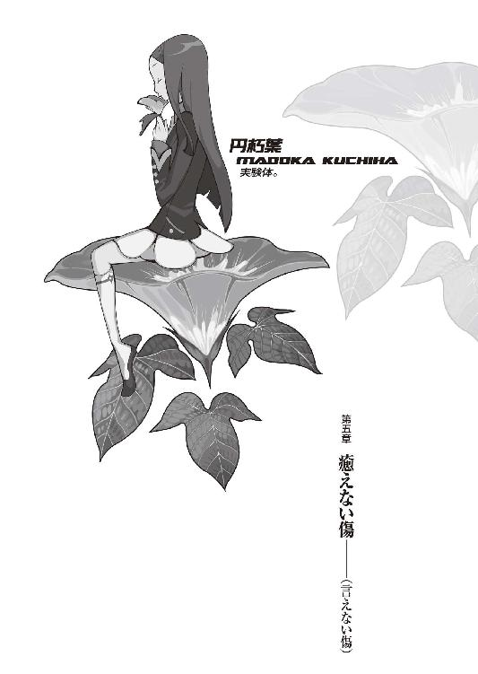
０
「ぼくは後悔してるんだ」
「じゃあ、一生後悔していて」
１
ナチュラル。
ニュートラル。
本当に孤独な人間っていうのは──多分、それだけで完全な人間なのだろう。《完全》という言葉をどう定義するかといえば、この場合最大のレンジにおいて構わない。世界と一切関係せずに生きていけるような概念があるとすれば、それはどの角度からどんな具合に観察したところで、やはり『完全』と表現せざるを得ないのだから。
完全なる孤独。
孤独なる完全。
それは『喰わなくていい』ということだ。
太陽と水がなくては植物は育たない。
植物が育たなければ動物は生まれない。
動物を喰わなくては人間は生きられない。
人間がいなければ、人間は生きられない。
人は一人では生きていけない。
愛し、愛され、喰らい合う。
それはいわゆる食物連鎖という奴だ──世界なんてものは、そもそもが喰うか喰われるかの構造になっている。真の意味で孤独であろうと、完全であろうとすることはそのリングから抜け出そうという行為に他ならない。
因果から抜け出そうという行為に他ならない。
つまり、喰わず。
つまり、喰われず。
誰の食い物にもならず、誰も食い物にせず。
求め合わず、必要とせず。
だから──本当に孤独な人間というのは、完全で──本当に完全で、だから、やっぱり、とっても寂しい存在なのだろう。
誰とも、何とも関係しない。
だけどそんな『完全』は、生誕した瞬間に死滅するような、ほとんどそれは零にも等しき存在でしかなく──決して、変われない。
変われない。
変わらない。
乾いている。
潤いが、ない。
「......あの人は賢明だね」
前置きなく、朽葉ちゃんが言った。
「名前......なんだったっけ？」
「..................」
ぼくは質問の意図を測りかね、しかし意図も何も、そんなの名前を訊いているだけに決まっているじゃないかと考え、「春日井春日」と、端的に答えた。
「ふうん......そうだったわね」朽葉ちゃんは、訊いた質問に答えてもらっておきながら、非常につまらなそうな、気だるそうな感じにそう言う。「ところで、あんたの名前なんて言うのかしら？」
「いつの間にかあんた呼ばわりかよ......」
さっきまでは、あれでもマシな扱いだったのか。
ぼくはいい加減、この円朽葉という女の子に対し、呆れにも似た感情を憶えてきた。なんなのだろう、この......なんていうか、投げやり感は。そりゃ、姫ちゃんや理澄ちゃんみたいな性格が一般的だとはいわないけれど、いまどきの高校生って、みんなこんな感じなのだろうか。
......ん？
高校生？
そういえばさっき、春日井さんの問いかけに対して、学校には行っていないって言ってたような。じゃあどうしてブレザーなんて着てるんだ？
「質問に答えなさいよ。あんた、名前は？」
「......悪いけど、人前で名前は名乗らないことにしてるんでね」
「なにそれ。馬鹿みたい」
「かもね。けれど生きてりゃ、人間、譲れないことの一つや二つ、出てくるもんだろう？」
「《生きてれば》ねえ......あんた、なかなか面白いこと言うわ。感性、いい感じじゃない」さして面白くもなさそうに、朽葉ちゃんは言った。「えっと......ああ、そう。《師匠》とか《いっきー》とか呼ばれてたわよね......って、あの娘、あんたの弟子なの？」
「ぼくは代理品だよ......あの娘の師匠は別にいるんだ。一応家庭教師の真似事みたいなこともやってるから、《師匠》と呼んで呼べないこともないんだけれど、でもそっちはやっぱ本質的な意味とは、ずれてるかな。関係ないというか。保護者としても、ぼくは代理品だしね」
市井遊馬。哀川潤。
姫ちゃんにとって、ぼくはその代理品。
それについて、特に思うところはない。
それだけは、それだけということ。
「まああんたを《師匠》なんて呼ぶ気にはとてもとてもなれそうにないから、わたしは春日井さんの方にならって《いっきー》と呼ばせてもらうわ」朽葉ちゃんは言う。「あんたは、わたしのことをなんて呼びたい？ お勧めは《ちっぱー》なのだけど」
「......仇名で呼び合うほど、気安い仲になれそうな気はしないけどね。ぼくは普通に朽葉ちゃんでいいよ」
「朽葉ちゃん、ねえ......それはまた、飛び抜けていいセンスだわ」
朽葉ちゃんは笑った。
それは、凍えるほど冷たい。
吸血鬼みたいな笑みだった。
「.........戯言だよ」
姫ちゃんと理澄ちゃんが木賀峰助教授に連れられて別室にいき、この和室に朽葉ちゃんと二人きりになってから、既に三十分が経過。
交されているのは、不毛な会話だった。
生産性のない、不毛な会話。
正直、勘弁して欲しかった。
大体この娘、だるそうにしている割に、こちらに喋りかけてくるとき、絶対に眼から眼を逸らそうとしないのだ。まるで対象の心底を覗こうとしているかのように。
朽葉ちゃんはぼくの眼を嫌な眼と言ったが。
ぼくに言わせれば、この抉りこむような、朽葉ちゃんの眼の方が、ずっと、遥かに。
「......いっきー......あんたさあ」朽葉ちゃんは変わらずかったるそうな口調で言う。「あんた、死にたくないわけ？」
「何を言っているのか分からないな。ジェネレーションギャップを感じなければならないほど、歳は変わらないはずなんだけど」
「そう見える？」
「うん？」
「いいから質問に答えなさいよ。あんた、こんな伊達にして酔狂な、空想も妄想も荒唐無稽もこれ極まれりの《死なない研究》とやらに興味を示すほど、死にたくないわけ？」
「......そりゃあまあ、研究自体にも多少なりの興味はあるけどね」ぼくは肩を竦めた。「突き詰めたところの目的はお金だよ。ちっと今、小銭が入り用でね」
「俗物ね」
吐き捨てるように言われた。
......大学生が夏休みにアルバイトするだけのことが、そこまで悪いことなのか。だとしても、雇う側の人間であるきみに言われる義理はないぞ。
「しょうがないだろ。お金が必要なんだから、稼がなくっちゃ」
「即物的な俗物ね」
掛詞で侮蔑された。
............。
駄洒落じゃん。
「まあ......確かにあんたは、《死にたくない》って感じじゃないのかしらね」
「分かってくれて嬉しいよ」
「あんたの眼は死にたがりの眼だよ」朽葉ちゃんは言う。「破滅を望んでいる......それも、自身のみの破滅じゃない、徹頭徹尾、世界の破滅を。永遠の破滅を。運命そのものの破滅を、破滅の破滅を望んでいるのよ」
「のよって......」
断言どころか、諭されてしまった。
「ぼくの眼球も、死んだ魚のような眼だとか裏切り者の眼だとか死にたがりの眼だとか、色々言われて大変だね......それでわずか二個しかねえってんだから、恐れ入るぜ」
「あんたは......何もかもを、根こそぎ、巻き添えにする。竜巻のような空模様ね、まるで。無意識の内にそうしてしまうし......多分、ほとんど意識的にそうしている。確信犯というよりは愉快犯という性格なのかしら」朽葉ちゃんはぼくの韜晦にも、まるで反応を見せない。「少なくとも、今までずっとそうやってきた......違うかしら？」
「あのさあ......きみらの年代にとって、そうやって、人を見透かしたようなことをいうのが一番楽しいってのはよく分かるんだけど、さっきからまるで的外れだよ」
「的外れ？ そうかしら」
「正直、今のきみは滑稽だ。軟式テニスでホームランを打って喜んでいる小学生もさながらにね。木賀峰助教授から何を聞いてるんだか知らないけど、あの先生も何か誤解してるみたいだし。概ねぼくの周りに生じるトラブルってのは、ぼくに対する過大評価から生じる現象が多いんだ。もしも朽葉ちゃんが、今日と、それから来週の間、危ない目に遭いたくないっていうんだったら、知りもしないのにぼくのことをあんまり喋々しない方がいいぜ。ぼくのことなんか、気にしなくていいんだ」
「知りもしないのに......ねえ。確かにわたしはあんたを知りもしないけど、でも、似たような人なら、知ってる」
「............似たような人？」
さっきも......そんなことを言ってたか？
似ている、とか。
「なんだよ、それ」
「そうね。《彼》はその人間性において──
──人類最悪、
だったわね」
「人類......最悪？」
「理解できるかしら？ 人類最悪に似ているといわれた自分自身のその意味を」朽葉ちゃんは意地悪っぽい言い方で、見下ろすような視線を送ってくる。「もっとも......《彼》とわたしが会ったのは、《彼》がまだ最悪になるその以前だったけれど」
「......その《以前》と、ぼくが似ている？」
「さあ......どうだったかしら。子供じゃないんだから、自分で考えたら？」とぼけた口調で言って、朽葉ちゃんは壁にかかった古時計へと顔を向けた。「試験はね、口頭試問を含めて、一時間ほどかかるのよ」
「ん......え、ああ」話が変わったのか。唐突過ぎて、ちょっと戸惑った。「姫ちゃんと......幸村、さんね。ふうん、そんなにかかるんだ」
「そうよ。バイトなんていってもそんな簡単なものじゃない......やってることがやってることだし、モニターなんて言ってもそこに手は抜けない。むしろそこにこそ手を入れなくちゃいけない。あんたみたいに適性試験免除なんて、本来絶無、ありえないんだから。自分がどれくらい例外的立場にいるか、分かってるのかしら？」
「............」
「そいでいて、《気にしなくていい》とは......あんたは仰天するほど手前勝手だわ。あんたはもう少し大胆に自己規定をやり直した方がいいわね......実存が概念に対しどういった影響を与えることになるのか、知っておいた方が賢明だと忠告させてもらうわ......先の春日井さんは、その辺、弁えてるみたいらしかったけれど」
「きみはどうなんだろうね......」言われるばかりに耐えられなくなり、ぼくは反撃を試みる。「きみはどうなんだろう？ そうやってずけずけものを言うけど、そういうのって酷くないかい？ その言葉が、一つ一つの言葉が、ぼくにどんな影響を及ぼしているのか......想像が全くつかないってんなら、そりゃ単なる、想像力の欠如だよ」
「わたしは誰にも影響しないのよ」
やけにきっぱりと、朽葉ちゃんは言った。
「そうね......あんた、ちょっとついてきて」朽葉ちゃんはそう言って、立ち上がった。「あんたは《彼》に似てるから、いいことを教えてあげるわ」
「え......朽葉ちゃん？」いいこと？ 「いや、別に話ならここでも......」
「別にどこでも構わないのはあんたもわたしも同じだけど、でも、他の人に聞かれたくないのよ。日本人は昔からおおらかで開放的だったから、こんな襖程度で空間を区切り密室を作ったつもりになれるのよね......密室なんてものがこの世にあると考えること自体、幻想だったのだけど。そうね、外に出ましょう」
「......ぼくはきみと話なんかないんだけどな」
「あらそう？」
挑発するような朽葉ちゃんの仕草。
ぼくはその挑発に乗らないよう、慎重に慎重に、気をつけながら言葉を紡ぐ。
「あのね。朽葉ちゃん。きみ、さっきから自分の態度大き過ぎると思わない？ この研究室の管理人だかなんだか知らないけど、そうぽんぽんぽんぽん言われると、ぼくもきっついもんがあるんだよ」
「怖いのね」
「......そういう問題じゃ」
「ならばこう言えば、あんたの興味を引けるのかしらね──あんた、一応なりとも、多少なりとも、先生の《死なない研究》についちゃあ、興味はあるんでしょう？」
「まあね」
朽葉ちゃんは音もなく立ち上がった。
「ねえいっきー......」
ぼくに呼びかけて、そして、朽葉ちゃんは年齢不相応の妖艶な笑みを浮かべる。
「わたしがどうしてここにいるか、分かる？」
「ここにって......」
「わかるわけ、ないわよねえ」
そう、彼女は更に笑う。
──どうして。
どうしてこの娘は、こんな笑い方をするのだろう。こんな表情を浮かべるのだろう。こんな口の利き方をするのだろう。もしこれが十年後、彼女が大人になってからのことだったなら、それは本当に魅惑的な意味を持つのかもしれないが──今、そんなことをやっても。
アンバランスに歪んだ意味にしかならないのに。
酷く、不似合い。
醜く、不釣合い。
彼女。
「わたしはね、いっきー」
朽葉ちゃんは怖いほど静かに言った。
「死なない身体なのよ」
ぼくの反応を待たず、朽葉ちゃんは背を向けて、襖を開け、廊下に出て、ぴしゃりと襖を閉じた。一瞬、時間が停止してしまったように反応できなかったぼくだった──いや、一瞬どころじゃない。感覚的に随分と長い時間、ぼくはそこに固まっていた。
はっと気付き、ぼくも立ち上がり、廊下に出る。もう朽葉ちゃんは見当たらない。どっちだろう。表に出ると言っていたか。ならば、玄関だ。これで二往復目だ、と思いながら、ぼくは靴を履いて、戸を横に引いて外に出た。
駐車場まで見ても、朽葉ちゃんは見つからない。
あれ......こっちじゃなかったか？
いや、表があれば裏があるか。ぼくは駐車場の方、フィアットとカタナとＺが並んでいる前を通過して（考えてみりゃ、これは通過するのが惜しいほど、なかなかの壮観だ。あとでじっくり見よう）建物をゆっくり迂回する。丁度駐車場から対偶側に、ちょっとした庭があった。草も刈られ、素人目にもよく手入れされているのが理解できる。
そこに配置された岩の上に、朽葉ちゃんは脚を組んで座っていた。ぼくの方を見てはおらず、なんだか物思うような表情で、沈みかけた夕日の所為で赤く、赤く赤く染まった西の空を、虚ろに眺めていた。
とても、儚げに見えた。
声をかけるのにためらわれるほど。
脆そうな光景だった。
「......あら」
朽葉ちゃんが、こちらに気付いた。
意外そうな表情だった。
「......来るとは思わなかった」
「え？」
「不可思議だと言ったつもりよ。あんた、単純なようでいて、本当に底の方が白濁して不可視だわ。あんたは実に賢しく小賢しく、余計なことには首を突っ込まないタイプだと思ってたから」
「............」
「破滅と破壊には首を突っ込むタイプみたいだけどね......それとも突っ込むのは首じゃなくて足なのかしらね？ 少なくともあんた、好奇心に殺される猫って感じじゃないもの。猫？ なるほど、猫はいい。ねえ、《イフ・シックス・ワズ・ナイン》って知っているかしら？」
「知らない」
「でしょうね。そういうことよ」
「わかんねえよ。何言ってんだ？ それより......」
「あんたはこの世界をどう思う？」朽葉ちゃんは、到底答えを求めているとは思えない口ぶりで、その質問を発した。「わたしに言わせりゃ......この世界は掃き溜めよ。再利用のしようもないゴミ屑ばかりを詰め込んだお楽しみボックス、地獄の鬼どもの宴における闇鍋パーティー、パンドラの箱なんて可愛いものよ。邪悪ですらない下種の見本市。最悪と災厄を積み上げたバベルの牢獄。とりわけお笑い草なのは、その掃き溜めじゃあきちんとルールにのっとった分別回収が行われてるってところだわ」
「............」
「運命だの必然だの因果だの因縁だの......正しく、滑稽よ。うつけた世界に必須である滑稽のスタンダードモデルにしてハイエンドモデルだわ」朽葉ちゃんはそういって、ぼくが追いつく前と同じように、空に目をやった。「たとえそんなものがあって......あったとしても、そんなもの、知らない方がいいに決まってるのに──ねえ？」
「どうかね......」ぼくは朽葉ちゃんの言葉をはぐらかすように、曖昧に答えた。「少なくともね、朽葉ちゃん。最初の質問に今やっと答えてあげるけど......ぼくは、別に死にたいとは思わないよ。死にたくないってのとは少し違うのかもしれないけれど、それが答だ。死んでも構わないとは思っても、死にたいとは思わない」
全く。
どうして、ぼくはこんな会話してるんだろう？
馬鹿馬鹿しい。
繰り返し解いた問題集のように馬鹿馬鹿しい。
同じことを、一体何度言っただろう？
相手が誰でも、言うことは同じ。
なるほど、そういう意味では。
朽葉ちゃんは、ぼくに、まるで影響していない。
「生きるとか死ぬとか簡単にいうけどさ......死ぬのって、結構エネルギーが必要だろう？ いや《結構》なんてもんじゃないよな。人間を殺すのには圧倒的な暴力か卓越した技術が必要とされる。知ってるかい？ 人間ってさ、長くて百二十年まで生きられるそうだ。人一人死ぬのに、百二十年もかかるんだぜ？ そんだけ時間があったら、細菌なら十世代は進化してるところだ。使い物にならなくなるまでにそこまで耐久するものを使い物にならなくするのは、どうしてどうして、簡単にはいかない。少なくとも、望んで死ねるようなクリアの容易い条件じゃないし、死にたくないなんて言うまでもなく、死ねないものは死ねないのさ」
「本人が深く望んでも？」
「本人が深く望めば──それは不可能だとはいわない。たとえば飛び降り自殺。一歩脚を踏み出せば、簡単に死ねる。簡単、簡単、実にシンプルだ。人なんて、簡単に死ぬ......手首を切っても構わない。毒を飲んでも構わない。ガスを充満させようがお好み次第、やりたい放題し放題。けど──それができるかどうかってったら、話は別だろ」
「............」
「自殺できる人間は、強いよ」
大抵の人間は──
人間は、死ぬことも出来ず、這いずるだけ。
もがき、苦しみ、悪足搔き。
這いずるように、生きるだけ。
「じゃあ......あんたに言わせれば」朽葉ちゃんは、口調を変えた。なんとなく柔らかに、少なくとも棘は抜けているような気がした。「先生の研究には意味はないわけなのかしらね。《死なない》ことなんて求めなくても、そう簡単に《死なない》っていうんだったら、そういう理屈になるわ」
「かもしんないね......あまり真面目に聞かないでよ。意外に素直なんだね？ ぼくの言うことなんか真に受けることはないのさ。ぼくの言葉なんて一から十まで、所詮はただの戯言なんだから」
「戯言？」
「戯言遣いさ」
ぼくは気取った口調で言ってみた。それが受けたようで、朽葉ちゃんは、咳き込むように、くふっと笑った。それは、今まで浮かべていたような冷笑的なものでない、ただの平凡な笑顔だった。
平凡な笑顔が、よく似合った。
ように、思った。
「死ぬのには莫大なエネルギーが必要、ね......だったら」朽葉ちゃんは岩から腰を浮かし、ぼくの方に近付いてきた。真近の距離まで、あっという間に、問答無用。「だったらわたしは、そのエネルギーが零なんだわ」
「............」
「その話をしにきたんでしょう？」
「そうだけど......それ、どういう比喩なの？」ぼくは一歩下がる。いくら年下とはいえ、姫ちゃんやら理澄ちゃんやらと違って、通常通りの成長を遂げている娘にこんな真近にまで近付いてこられたら、全く皆無にどぎまぎしないってことはない。「《死なない》って......それ、木賀峰助教授の研究と何か関連があるわけ？」
「関連も何も──そんな陳腐なレベルの話をしているわけじゃないわ。わたしはあの人の研究材料なのよ」
「......え？」
「実験体といった方が理解がし易いかしら」
「実験──体？」
研究......材料？
それは──どういう比喩だ？
戸惑うぼくに、朽葉ちゃんは続ける。
「まあ......何て言ったらいいのかしら。先生はわたしがいないと研究が続けられないし......わたしには住む場所と世話をしてくれる人が必要だったから......両者の利害は、結構一致したわけよ」
「一致って......」
連想する。
斜道卿壱郎博士の研究所。
あそこには──一人の男が囚われていた。
彼の名は兎吊木垓輔。
卓越した頭脳と、恐ろしき両腕の持ち主。
そして。
彼は──研究材料だった。
「......そんな非人道的なことを、という顔をしているわ」朽葉ちゃんがそっと、ぼくの頰に触れた。いつの間にまたこんな距離まで寄ってきたのかと思うも、関係なく朽葉ちゃんは続ける。「何？ 知り合いに似たような経験をした人でもいるわけ？」
「いや、そんなこと......あるわけないじゃないか。ただ、でも、あの木賀峰助教授が......」
「あの人はまだマシな方だよ。それともあんたは、あの木賀峰助教授が、聖書に出てくる人格者だとでも思っていたのかしら？ それこそ、滑稽だわ」朽葉ちゃんは笑う。それは、冷笑だった。「学者なんて人種に良識を期待するなんて......知識欲というのはこの世で最も暴力的でない暴力、最悪の所有する暴力なのよ」
「..................」
「でも、それ以外の面においては、まあ木賀峰助教授は概ねいい人よね。何せ、干渉してこないから。実際好きだわ、ああいう人は」
「......そうなんだ」
「愛憎相半ばといったところかしら......付き合い、長いしね。それに──ここは、いい場所だから」
「いい場所？」
「いい環境、という意味よ。ねえ、いっきー。さっき色々と《死》について話してくれたけど......だったら一つ、あんたの意見を聞きたいな。《死なない》って、どういうことだと思う？」
朽葉ちゃんは訊いた。
答を求められていた。
今度は、解答を期待されていた。
ぼくは考えて、慎重に言葉を選ぶ。いやしくも戯言遣いだというのなら、ここで言葉の選定に失敗するようなことがあってはならない。
「少なくとも......《死なない》ってそれが《生きている》と等号関係でないことだけは分かるよ。意味のある人生、目的のある人生でないと、意味も目的もない人生だとまでは言わないけど......本来において生と死は表裏一体、つまりは同一系の存在であって、生の否定が死であって、死の否定が生であるとは、言えない。少なくともいくつか、満たしていない条件があるはずだ」
「卑怯な答えだわ」朽葉ちゃんはやはり、ここでも容赦がなかった。「疑問文に対して否定文で答えるのは、最悪の次に卑怯なやり方だわ。あんた、結局何も言ってないんじゃない。戯言遣いってのは、卑怯者って意味なの？」
「概ね間違っちゃいないね。だが、それじゃあ半分しか正解だとは言えない。過大評価だ、卑怯者が泣くさ」
「どういう意味よ」
「立てば噓吐き座れば詐欺師、歩く姿は詭道主義──戯言遣いってのは、言っちまえばそんなもんでね。そんなことばっかやってりゃ、半分くらいは卑怯者の領分を侵してしまうだろうって意味さ」ぼくは一息入れてから、朽葉ちゃんに訊く。「で？ それなら、《死なない》っていうのは、本当はどういう意味なの？ 《死なない身体》のきみの意見では」
「《死なない》っていうのは──誰とも、何とも、関係しないという意味よ」
その台詞をずっと以前から用意していたように迷いなく、朽葉ちゃんは答えた。
「誰とも、何とも、関係しない」
誰とも──何とも。
関係、しない？
完全なる孤独。
それが......死なない、こと？
「ずーっと、ずうーっと、何があっても何が起こっても、誰と会っても誰と別れても、運命も必然も因果も因縁も、そんな有象無象があろうがあるまいが、そんな魑魅魍魎がいようがいるまいが、物語の流れになんの関わりもなく──
ずっと、変わらない。
それが《死なない》ってことなのよ」
「変わらない......」
「何のために生まれてきたのか。どういう意味で生まれてきたのか。この二つの疑問に対する答に一切の持ち合わせがない──それが《死なない身体》。いつまでたっても、どれほどたったところで、いつまで行っても、どれほど言ったところで、ずっと同じ。それが死なないということ......あんたのさっきの言、まああれは本当によかったわ。《死》ぬのには膨大なエネルギーが必要ってアレ」
「どうして......だよ」
「エネルギーって、結局は消耗されるものでしょう？ 保存則にのっとっていうなら、エネルギーは総じて《移り変わる》ものでしょう？ マクスウェルの悪魔に出張ってきてもらうでもしなければ、一定のエネルギーが厳密な意味で《固定》されたままなんて、ありえないもの。だから──わたしは、エネルギーが零なのよ」
「いや、それは、比喩であって......」
それは比喩であって。
じゃあ、そっちは比喩じゃないのか？
本当に──死なない身体だとでもいうのか？
馬鹿馬鹿しい。
あまりに、馬鹿馬鹿しい。
何をまともにとりあってるんだ、ぼくも。
真に受けているのは、ぼくの方じゃないか。
「そんなこといっても、エネルギーが零なら、それは生きてるってことにはならないよ」
「だから、死なないだけなのよ。死なないだけ。生きているわけじゃない......だから死なない」
《生きていれば》《必ず死ぬ》。
生きてなければ、死なない。
それは......分かりやすい。
簡単明瞭だ。
明瞭だけど......明瞭だからと言って。
「分かんないな。もし朽葉ちゃんが本当に《死なない》って......いうんなら、一体いつから生きてるんだよ」
「憶えてないわ」朽葉ちゃんはうんざりした口調で答えた。さながら、そんな質問は今まで散々受けて、答えるにも飽きていると言わんばかりだ。「憶えてないほど昔......っていうのはどうかしら？」
「模範解答だね」
「信じてないみたい」
「そりゃそうだろ」
「信じようが信じまいがそりゃあんたの勝手だけどね......でもいっきー、あんた、自分がここに招かれた意味、適性試験も免除で、少額とは言えない金銭を受け取れる理由を分かっているのかしらね？」
くすり、と笑われる。
やはり、冷笑だった。
「おかしな話よ。モニターなんて言葉で騙されてるんじゃないのかしら。何の専門知識もない、分野も学科も違う人間を無闇に雇うなんて真似、先生がどんな無理矢理な理由をつけてあんたを説得したか知らないけど、普通はあるわけないじゃない。常識で考えればそんなこと、あるわけないじゃないの」
「理由って......木賀峰助教授がぼくの話をどっかで聞いて、どっかで調べてきて......そんで、面白そうだって。過大評価だと思うんだけど」
「過大評価過大評価って......あんたは同じことしか言えないのかしら？ 同じところをぐるぐるぐるぐる、時計かあんたは」
「突っ込みうまいじゃん」
「茶化さないで。先生があんたをそれほど特別扱いする理由はね──それは、あんたが《彼》に似ているからよ。あんたが面白いからとかどうとかいうのは、皆無だとは言えないけれど......あんたの経歴とかあんたの履歴とか、そういうあれこれ以前に、あんたそのものが《彼》に似ているから」
「............」
「その意味では、やはりこれは適性試験よ。あんたとわたしの面接試験。面通し──というべきかもしれないけれどね」
ああ......そういえば。
木賀峰助教授はあの日、色々とぼくに説明してくれたが、その根本的なところ──どうしてぼくのことを調べたのかという点については説明していなかった。
それが。
それが、それだというのか。
「《彼》に似ているって......」ぼくは言う。「さっきから何度か聞いたけど......、その、《最悪》だっつー奴のこと、さっきから全然はっきりしないけど、朽葉ちゃん、《彼》って誰？」
「あそこ」
朽葉ちゃんは門の辺りを指差した。その意味が分からずにいると、朽葉ちゃん、「あそこに看板が出てたの見たかしら？」と、言った。
「目に入らないことはないと思うけど」
「ああ......目に入らないも何も、それを目印にしてここに来たんだから。えーっと、なんだっけ」
「西東」
朽葉ちゃんは指を下ろして、言った。
「西東診療所......西東というのは、先生の恩師......の、ような人で、ここが研究所になる前、診療所だった頃の持ち主......に、なるのかしらね」
「......？ 随分と曖昧な物言いだね」
「その人に、あんたは似ているのよ」
「..................」
そんな、何者か分からないようなあやふやな《最悪》なんて奴と似ているなんて言われても、そんなの殺人鬼と似ているといわれるのと似たり寄ったり、どちらにしても踏んだり蹴ったりとしか言いようがないのだが。
「願ったり叶ったりという顔ね」
「いや、全然違うぞ」
「とはいえ、さっきも言ったけれど......あなたが似ているのは《彼》の、相当以前の姿よ。彼が人類最悪になるまだその前......それが、肝要なの」
「............」
「先生があんたを呼んだのはそれが理由......酔狂よね。また繰り返そうというのかしら。あの人は、本当に何度繰り返そうというのかしら」
「......じゃあ、感傷ってことか......。まあ、誰かを投影されるのは慣れてるけどね。ぼく自身が空っぽな奴だから、似てるっていえばぼく、誰にでも似てる奴らしいんだよ......これはある人からの受け売りで、ぼく自身がそう自覚してるわけじゃないんだけど」
色んな奴の欠点を寄せ集めてできているぼく。
そんな風に言われたんだったかな。
「感傷──なんて、生易しくも生温い、そんな概念ではないわ。あの人はそういう人間じゃない......そういう目的は、二の次にしか持ってこれない。あの人の目的は......今、達成されつつあるのよ」
「は？」
「わたしがあんたと話すことが──あの人の目的」朽葉ちゃんは言う。「面通しだって言ったでしょう？ あんたは随分と頭の回るお利巧さんみたいだけど......これの意味は、分かるかしらね」
「......意味って」
正直、全然分からない。
「《彼》と似ているあんたと話すことで、わたしに出る影響を測る......あるいは、わたしが隠している情報を、あんたを経由して聞き出す──と、いうような表現をすれば、理解する上では簡単なのかしらね？ どう思う？」
「どう思うって......その《彼》ってのは、きみと......つまり、仲がよかったってこと？」
「そう言うべきかしら」
このとき朽葉ちゃんが浮かべた表情は、絶妙な、何ともいえないそれだった。
無理矢理表現すれば、得意がっているような。
誇らか、に近い表情。
どうしてだろう。
その表情は──今の《物語》にそぐわない。
今の文脈にそぐわない。
違う。
「少なくとも──先生と同じくらいには、恩師かもね。色々とためになること、教えていただいたから」
「......そうだとすりゃ、短絡だな。大学の教員とも思えない──似てるってだけの理由でそんなうまくいくんなら誰も苦労しない。鼈見ながら団子食えって言ってるようなもんだろ、それ」
「その意見には同意するわ。同意というより賛同ね。逆に言えば、それだけ切羽詰ってるんでしょうね......先生は優れた研究者であり学者だけれど、でも《彼》のようにはいかないみたいでね......まあでも、こういう作戦自体は先生も前々から計画してたみたいだけど、人材不足だったらしくてね──そりゃ、いくら最悪以前とは言え、あの人に似ている人間なんて、そうそういないから。それに、あながち悪いばかりの案じゃないわ......実際、既にわたしは、色々と喋っちゃった」
だから──
だから、なんなんだ、その顔は。
そんな表情で、そんな台詞を口にするな。
まるで、ちぐはぐだ。
まるで──ジグザグだ。
「......だとしたら、それをぼくに言うべきじゃないんじゃないのかい？ 木賀峰助教授の考えが本当にそうなら、ぼくと......それにきみにだって、きみにしたって、その考えを察せられない方がいいように思えるけど」
「そうね」
「きみが気付いたのは洞察力の賜物だとしても......ぼくとその《彼》ってのが、一見で分かるほどに似ているんだとしても──その事実を、ぼくが知っているべきじゃあ、ないと思うね」
「そうね」
朽葉ちゃんはあっさり頷く。
「でも、そんなの癪じゃない。先生には世話になっているけれど、義理立てする筋はないもの。《彼》の存在をそういう風に利用しようとするのは、やはり、卑怯と言えなくて？」
「......ふうん」
結局......
それが言いたいがための、この中庭か。
今までのは全て、ここに至るまでの伏線。
思惑には嵌る。
作戦通りには動く。
反逆も反抗もしない。
犯虐も犯行もしない。
それでも──
計算のままにはならない。
喋れと言うならば、喋ろうじゃないか。
知っている事実を、根こそぎ残さず。
「......そりゃ随分、複雑な人間関係だね」
愛憎相半ばとはよく言ったものだ。ぼくの言葉に朽葉ちゃんは共犯者のような顔で「まあ、そうね」と言う。
「でも誤解しないでね。わたしは先生にお世話になっていることを忘れているわけではないのよ。さっきも言ったけれど、あの人のあの人格、なかなか嫌いではないし。ただ、あちらさんの意のまま思いのままに踊るのは、御免蒙りたいだけなのよ」
「端的に言うと？」
「わたしの知らないところでことを進行させようなんてむかつくからちょっと困らせてあげたい」
「......まるで子供だ」
そりゃそうよ、と朽葉ちゃんは言う。
「わたしは生きていないんだから、当然、成長なんかしないのよ。心も身体も精神も」
２
四月。
玖渚と一緒に向かった日本海のぽつんと浮かぶ絶海の孤島、鴉の濡れ羽島で、一人の占い師と出会った。それは出会ったなんて生易しいものではなかったが、とにかく、出会った。
占い師の名は姫菜真姫。
ひねくれ者で、お調子者で、酒飲みで、へらへら笑って本音を見せず、性格は悪く意地汚く、お金が大好きで寝るのが大好き。髪は金髪、ポニーテイル。
だがそんな細かな特徴など些細なこと。そんなものは、真実との間にある儚き隔たりでしかありえない。結局彼女を表現する、言い換えるならば彼女を束縛している言葉はいつでもどこでも唯一無二。
異能。
そう、異形の能力だ。
彼女の能力は正に問答無用、徹底的なほどに徹頭徹尾、一切合財を駆逐する。過去を見通し、現在を語り尽くし、未来を聞き潰え、人の心を知り修める。
ＥＳＰ。
それも、究極に行き着いてしまった極地点。
それは言うならば──運命の流れを読む能力。
《物語》を読書する能力だったのではないか。
『使えない能力だよ』と彼女自身は言ったが。
実際のところ、それが本当だったのかどうか、彼女は真に異形の能力を所有していたのかどうか、ぼくには判断ができない。ひょっとするとすべて噓っぱちで、彼女はただ、ハッタリをかましていただけなのかもしれない。少なくとも観測するだけの限りにおいては、そんなもの、観測のしようがないのだ。一体全体どんな手段を行使すれば、観測者の観測者足りえるというのだろうか？
それに──
彼女は、肝心なことは語りたがらなかった。
口を閉ざして。
饒舌によって、沈黙を死守した。
だから。
だけど。
だとしても。
彼女の異能が、もしも本当だとして。
基準を千ほど黙殺し、矛盾を千ほど黙認し。
もしも彼女に、物語の閲覧能力があったとして。
だったら、彼女は外側にいたのだろうか？
内側にはいない──
何の役割も持たない、そこにいるだけの。
誰とも、何とも関係しない。
孤独な魂だったと、いうのだろうか。
「随分とまたぼぉ───────────────────────────っとしてんじゃんよ。お兄さん」
声が聞こえて、見上げた木の上に。
理澄ちゃんがいた。
否......理澄ちゃんじゃない。
あの黒いマントを羽織っていない。目を逸らしたくなるようなデザインの拘束衣、強固に拘束された両腕が丸出しだった。
そして。
浮かべている表情がまるで違う。
悪意たっぷりの、笑みだった。
これは......
これがどちらかなんて、考えるまでもない。
「匂宮出夢......でぇええっす！ ワタシーは可愛イイーッい殺し屋サーンッ！ はい、はい、はい、はい、こーんにーちはーァッ！ イエーッッッ！ ぎゃははははは！」
「......そんなとこにいたら危ないよ」
出夢くんが座っている木の枝はお世辞にも太くて立派だとは言いがたい。まして出夢くんは両腕が使えないのだ。それに──精神はともかく、肉体の方は理澄ちゃんの、か細いそれ。心配するなというのは、無理な相談だった。
「危ないかねえ......ぎゃはは、この世に僕の頭よりも危ないもんなんかあるのかねえ？ 少なくともここ、僕にとっちゃあ危なくもなんともないけどねえ......はは、それに、いい景色だぜえ？ ここ。空こそが我が故郷なのである、ってかァ？ いいコト言うじゃん！ ぎゃはは！」
「......適性試験は？」
「もう終わったよ。ゆえにただ今休憩中......つっても試験を受けたのは《妹》の方だけどな。ま、そこそこいい線行ったんじゃねーの？ 意外かもしんねーけど......あいつ、つーか、こいつ、案外頭いいんだよ。理数系は特にな。ぎゃははっ！」
脈絡もなく大声で哄笑する。理澄ちゃんの顔でそういうことをするのは、個人的にはやめて欲しいが......しかし、肉体そのものの所有権がどちらかなんて、考え始めたらキリがなくて五里霧中だ。
「......お兄ちゃんのツレ......なんつったっけ？ そう、紫木一姫──だっけ。あいつは、まだ試験中。あいつは馬鹿だな。僕より頭悪いかもしんねえ」
「まあね」
「だが」
ふざけた眼つきが、急速に収斂する。
あまりにも急激な、それは、変貌だった。
「あいつは確実に、僕より多く人を殺してるな」
「............」
誤魔化しても......無駄なんだろうな。
完全に、確信している眼だ。
「ちなみに僕は今まで仕事で殺戮った数は三桁にも乗らない......これは、一日一時間の誓いを立ててるからだが」ぎゃはは、と笑う。「あの紫木は、そんなもんじゃねえなあ......僕なんざ全然相手にならねえ小数点以下だ。爆弾遣いか？ そうでもねえと、あの年齢でそうそう大量にゃ殺せないだろ。参考......僕は十八歳で理澄は十六歳。そしてこの肉体の年齢は二十二歳だったりする。《院生》ってのは、別に丸っきりのふかしじゃねーんだよ......で、お兄さん。紫木は一体何歳なんだ？」
「十七だよ」
「へえ？ そっか。中学生かと思ってた。かと言ってすっきり納得とはいかねえな......思わず、用もないのに出てきちまった」
「......思わず、ね」
「そ。僕は自動的......じゃあ、ねえけどな！ イーッツ、オートマチィィィィィィィィックゥッ！ ぎゃははは、なんつってェ！」
そして出夢くんは、響き渡るように笑った。
中庭──
もう、朽葉ちゃんはいない。
言いたいことだけを言って、つまりは目的を目的通りに果たしたところで、「それじゃあ」と言い、小走りにぼくの視界から逃げていった。実際はそういうわけでもないのに、ぼくは逃げられてしまったような気分になった。
取り逃がしたような気分になった。
駄目だ、と思った。
完全に──状況に、流されている。
それはいつものことかもしれないが──今、このとき、こういうシチュエーションで、いつものように流されてしまうのは駄目だ。
危う、過ぎる。
何とかしなければ......リセットして、ニュートラルに戻らないと。いや、違う。ギアをトップに入れるんだ。出来る限りの、構築しうる限り最上の障壁をもってしてこの事態を切り抜けろ。
落ち着け。
なんだかわけのわからない展開になってるぞ。
現時点での最優先事項はなんだ？
飄々と構えろ。受け流せ。意味を考えるな。趣味に走るな。気にしてはいけない。思考は停止。疑問は捨てろ。質問しないように。ぼくには関係ないだろう？ 三回唱えよう。ぼくには関係ない、ぼくには関係ない、ぼくには関係ない。
たとえあっても──興味が、ない。
「..................」
オッケイ。
呼吸は、整った。
頭も整理できた。
そして一息ついて、さて、ぼくも屋内に戻るか......といったところで、木の上から理澄ちゃん、もとい、出夢くんに声をかけられたのだった。
「あの──出夢くん。降りてきてくれないかな？ そんな高いところからじゃ、見下されてるみたいで話がしにくい」
「いいのかよ？ 今日はまだ誰も殺してないから、最悪、喰っちまうぜ」口を大きく開き、八重歯をむき出す出夢くん。「......こんな身体だからよお。こうでもしねーと、僕、人を見下せないんだわ。お兄さんもあんまたっぱある方じゃないし、この気分は分かるんじゃねーの？」
「......ひょっとして......話、聞いてた？」
「んー？」
「今の話」
「まあね。っても安心しろよ。前にも言ったかもしんねーけど、僕の方の記憶は、理澄にゃほとんど伝わんねーし。どころかあいつは都合の悪いこと──こりゃ、《僕》の仕事について都合の悪いことはって意味だが、都合の悪いことは全部忘却することになっている。記憶の調整......記憶の改竄っつーか、まあ、編纂ってレベルかな」
匂宮出夢に関すること。
匂宮雑技団に関すること。
殺し屋、殺戮に関すること。
全てを──自動的に、忘却する。
《匂宮》の自分が《零崎》を捜索調査するという絶対矛盾にすらも──気付くことがない。
今回のは春日井さんの仕業にしても、《行き倒れ》た際にお金がよく盗まれるというのは、ただ単に出夢くんが使い込んでいるだけなのかもしれない。
改竄──
編纂──
改編。
「ま、つーまーりーは、そーゆーことでね。細かな日常レベルのことから、無論ディープなところまで、万全にぬかりなく！ 大きなものから小さなものまで、僕達はブラザー、ヤンマーかい？ ぎゃはは！ ここでこうしていることも、理澄にゃ伝わらない。記憶障害も行き倒れも、その辺が原因だ。ま、あいつも《名探偵》つーくらいなんだから、今の話くらいは、自分で調べなくちゃな......えーっと、何だっけ？ 十回ノックする？ 《探偵は偶然で真相を看破してはならない》とかいうあれじゃん」
「きみはいいのかよ」
「殺し屋はいいんだよ」
「ふうん」
まあ、悪くはないのだろう。
ていうか、殺し屋自体が悪いのだ。
良識に従っていえば。
けど。
果たしてここで良識に従う意味はあるのか？
「あ、ちなみにさっきの《十回ノックする》ってのは《ノックスの十戒》の洒落だから」
「説明すんな」
殺し屋に突っ込みを入れた。
ぼくもなかなか侮れない。
「あー......って、まだお前、その頰の傷、治ってねーんだな。髪を切ったのは理澄に聞いて知ってたが......」
「きみの知ったことは理澄ちゃんに伝わらないと言ったけど、逆は伝わってるわけだ。あれだな、情報のインタラクティブがなってないんだな」
「理澄から僕への伝達も、百パーセントってわけじゃねえよ。髪のことは電話で聞いたのさ。ある程度完璧に分割してねえと、引き摺られちまうからさ」
「......人為的な二重人格か」
「お？ なんだ、勉強したのか？ ん、あ、情報ソースは紫木一姫か。結構、結構」
「おいおい、そんなわけないじゃん」
やべえぞ。
こいつこそ名探偵並にいい勘してやがる。
とにかく、避けたいのは、ここでもっとも避けたいのは、姫ちゃんと、理澄ちゃんでない方の《人喰い》が衝突することだ。姫ちゃんが敗北するとは思わないが、あの娘には......なるだけ、そういうものには参加して欲しくない。本当は、ここにだって連れてきたくなかった。大体、そうでなくとも、姫ちゃんはまだ......抜け切っていない。昔の癖が、抜け切っていない。哀川さんの言に従ったにしろ、まさかここまでの状況になるとは思ってなかったし。
「......匂宮ってのはとんでもないね。君達みたいな存在を、普通思いつきはしても、産みだしゃしないだろうに」
「ん、んー。どうかねー。《僕ら》は、僕と理澄は、《匂宮》の産物っつーか、副産物って感じなんだけどな。あの憎たらしい《断片集》に至るまでの道程ってもいいかな──っと、喋り過ぎか。それとも、《断片集》のことも、紫木から聞いてたりするのか？」
「あ、いやいや──」
ぼくはしどろもどろになる。
だから、まずい。
姫ちゃんのことに触れるのは、まずい。
強引でもいい、とにかく、話を逸らそう。
「......きみがここに現れたってことは......やっぱ理澄ちゃんの《仕事》ってのは、見せ掛けのものだってことに、なるのかな」
ぼくは出夢くんに咄嗟にそう質問したが、しかし、こんなこと訊いても無駄だろう。話は逸れもすまい。ふざけたなりをしていても《殺し屋》。殺戮奇術集団、匂宮雑技団の一人。守秘義務、機密事項の多さは、医者や弁護士、あるいはそれこそ名探偵と同等、それ以上だろう。
「木賀峰約と円朽葉」
出夢くんは言った。
「この二人を始末しろと言われている」
............。
口軽っ。
口径っ！
「......いや、口径は違う」
「は？ ナニイッテンスカ？」
「あ、ごめん......」意味わかんねえっつうの。「それより、それ、誰に」
「おいおいおいおいおいおい。勘弁しろよ、お兄ちゃん。いくら理澄の恩人だからって、クライアントの名前は明かせねーな」
「標敵の名を明かしてる時点で......」
「ま、僕に言える範囲で言うなら、狐さんさ。あんたも昨日だか、会っただろ。あの不愉快なお面野郎だ」
「..................」
もしもぼくの人生でこの先、誰かを殺したいくらいに憎むことがあっても、こいつにだけは依頼するのはよそう。殺人教唆で即刻逮捕だ。
「狐......」
狐面の男。
理澄ちゃんの依頼人も......彼だった。
「理澄ちゃんの《仕事》は......じゃあ、本当に見せ掛けなんだ」虚しくなった。さっきの駐車場で見た、あんな健気な理澄ちゃんの姿が、全てかりそめの上に成り立っているものだなんて思うと──ぼくでなくとも、ぼくであったところで、虚しさに囚われるだろう。「じゃあ......狐面の彼は、きみらのこと、当然知ってるわけだ。兄妹じゃなく、一人だって」
「僕ら、最近はあいつに飼われてるみたいなとこがあるからなー......あいつ、表立って動くわけにゃあ行かない身なんだそうだよ。僕はよく知らねーけど......理澄もよく知らねーんだろうけど、まあ、んなこたぁどうでもいいしな。で、《僕ら》は、あの狐さんの手足、手となり足となりってわけだ。そういう意味じゃ、理澄の《名探偵》ってのも、お役立ち情報満載だぜ？ 全てがかりそめってわけじゃあねーんだよ。このたびの、零崎んとこの末っ子探しは実らなかったみたいだが......ふん。零崎人識ねえ。不愉快な野郎だぜ」
ぶつぶつと、最後の方は独り言のようだった。
「だが、今回の件に関しちゃお前の言う通り。仕事に関しちゃ、出夢がメインで理澄がサブなのさ......情報収集は無論してもらうがね。まずは理澄が《調査》し、その調査結果に従い、出夢が《殺戮》。それがいつもの《僕ら》の手口なのさ。あ、安心しろよ。今日今現在この時点からどうこうするって話じゃねーから。あんたにゃ理澄が世話になってるからさ、あんたが理澄にお願いしてた通り、バイトが始まって終わるまでは、待ってやってもいいぜ」
「そう望むよ」
ぼくはため息をついた。
ああ、もう。
ぼくには関係ない、ぼくには関係ない。
ぼくには関係ない。
分かっちゃ、いるんだよ。
木賀峰約。
円朽葉。
殺し屋の標敵。
理澄ちゃんにも、同じことを訊いたけど。
「......狐さんは、どうしてそんなことをきみと理澄ちゃんに依頼したんだい？ よりにもよってあの二人を殺せ、なんて......理澄ちゃんは《興味が湧いたみたい》って言ってたんだ」
「さあね。僕にゃよく分からん。僕は殺せりゃそれでいいんで、クライアントの意向にゃ沿わない方向でやってんだ」
「......最悪の殺し屋だな」
「最悪ねえ......そりゃ、それこそ零崎んとこの代名詞なんだがな。もっとも......語源は別か。ん？ ちょっと待てよ。西東診療所......あれ？ あれ、あれ、あれ......あれえ？」
出夢くんは首を傾げて、ぐぐぐっとどんどん横向きになっていき、最後に、決して太いとは言えない枝に横向きに寝転がった。非常に、危うい。
「んー......あー、そっかそっか。そういうことね............狐さんの事情は、そういうところか......ああ、気付けなかった。いや、僕は別にどうでもいいんだけどね──全然関係ねーし。つーか、あの人も結構気苦労してんよなあ......」
「何言ってんの？」
「独り言だよ。ところでよ、お兄さん。一つ、いいかい？」
「え？」
「僕ばっか質問受けるなんてだっりーだろうがよ。僕は別にあんたから質問を受けて不明瞭な分かりにくいところを説明してやるために登場したんじゃねーんだぜ？」
「そりゃ、そうだろうけど......」
「一つ、お願いしたいんだわ」
出夢くんは言った。
「いいかな？」
「いいかなって......なんだよ」ぼくは警戒心いっぱいに、しかし精一杯に虚勢を張って、寝転んだままの出夢くんに訊き返す。「内容も聞かずに《男》からの願いごとなんかきけるかよ。なんだ、ぼくに殺人の片棒を担げとでもいうのか？」
「ぎゃはははははっ！ んなわけねーって」これ以上ないってくらいに、鼻で笑われた。「なんで自分より際立ってレベルの低い人間と組んで仕事しなくちゃいけねーんだっての。イクイティー理論、知らないのか？」
「ことがことだから、別に反論しないけどね」
「僕のお願いっつーのはさァ」出夢くんは言う。「あんたさあ、これからも理澄と......っつうか、まあ僕なんだけど、僕じゃなくて理澄の奴と、仲良くしてやってくんねーかな？」
「......え？」
「こいつさ。全然、友達いねーんだよ」
枝から身を起こし、姿勢を元に正す。そのまま背中をぐっと反らし、脚を引っ掛けて逆さ吊りの姿勢になった。そうすることで、ぼくと出夢くんの頭の位置が、ほぼ同じ高さになる。
「まあ、大半は僕の所為なんだが......奇行が多いからな、こいつは。僕も他人のことは言えないが、所詮理澄は作り物の人格だから、奇行が目立つんだよな」
「............」
「まして《名探偵》だからなぁ......でも、あんた、割とそういうの平気そうじゃん。理澄とうまくじゃれてるっぽいしよ」
「いや、結構無理してんぞ......」ぼくは心外な気持ちで出夢くんに応じる。「まあ、変人慣れはしているけどね......《殺し屋》なんて職業についても、そうだね、殺人鬼の友達がいて。いい加減慣れているってところもある」
「そいつはどうもご馳走様......でもさ」
逆さ吊りの状態で、出夢くんは言う。
「殺戮の怖さっていうのはさ......殺す側か殺される側にならねえと、本当の意味じゃ理解できないぜ。傍観者じゃ、慣れてるつもりが、足下掬われる。そんな意味じゃあんたは中途半端な半可通って感じだな」
「そりゃ──どうも。ご馳走、さま」
殺す側。
殺される側。
そのどちらにもなったことがない人生を送ってきていれば......そりゃ、本当によかったんだけど。
それは、生憎だけど、生憎だった。
「とにかく、どうなんよ？ 狐さんも、なんだかあんたのことは気に入ってたみたいだし......幸いにして、」
「縁は、あるみたいだしな」
......縁か。
なんだろうな。
流行ってんのか？ その言葉。
少なくとも、局地的に。
「......そりゃ、別に構わないよ」
「いいのかい？」
「友達ってのはよくわかんないけど......ぼくとしても理澄ちゃんはいじりがいのある面白い娘だからね。今まで通りの付き合いでいいんなら、お安い御用だ」
「そりゃ有難いぜ。涙が出る」
「だけど一つ条件がある」さっき理澄ちゃんに言ったのと同じように、ぼくは出夢くんに対して言う。「きみは、ここで、だけじゃなく、これからも、ぼくの前で人を殺さないで欲しい」
「はあ？ 何それ」
「好きじゃないんだよ。人が死ぬの」
きょとんとする出夢くん。
比喩は逆だが、釈迦に説法もいいところか。
それでも、ぼくは続けた。
「ぼくの関係ないところでやる分にゃいいんだけどね......ぼくは、自分に関連のあるところで人が死ぬのは、好きじゃないんだ......気が滅入るから」
「......気が滅入る、ねえ......」
出夢くんは腕も使わず（そりゃそうだが）脚の力だけでぐるんっと回転し、そのまま枝の上にバランスよく立った。そして──ぼくを見下ろして、笑う。
「僕を誰だと思ってんだよ。殺戮奇術集団、匂宮雑技団が団員№18、第十三期イクスパーラメントの功罪の仔だぜ？ 標敵が無関係でも関係なく標敵が無抵抗でも抵抗なく標敵が没交渉でも交渉なく、貪るように喰らい尽くす、殺し屋の中の殺し屋、《人喰い》の出夢だぜ。殺すべき奴を殺さなくちゃ喰いっぱぐれだよ」
「............」
出夢くんは、「ぎゃはは」と、小さく笑った。
「だが......、ま、それくらいなら約束してもいいだろ。そもそも僕は仕事のとき以外は滅多に出て来ない......あんたの前で仕事をするなんて機会、これから先にあるとは思えないしな」
「......どうして」
ぼくはもう一歩。
もう一歩だけ、深入りしてみる。
危険を冒し、真実へと近付く。
「じゃあ、どうして《今》は？」
「うん？」
「今......どうして、《前》に出てきてんの？ きみの仕事が理澄ちゃんの調査が済んでからっていうのなら......今、きみがぼくの前に出てくる意味はないわけだよね。姫ちゃんのことが気になったと言ったけれど──それだけのことで、ここまでのリスクを冒す必要があるとは、ぼくにはとても考えられない」
「............」
「きみが《今》表に出てきていることに関して──仕事上での意味は、ないわけだよね」
どころか、逆効果ともいえる。
こんなところを誰かに見られでもしたら......《標敵》だという木賀峰助教授や朽葉ちゃんに見られでもしたら、決定的だ。
理由がない。
それとも、何か考えがあるのか。
あるとすればそれが何か。
危機を冒すだけの値打ちがある何かが。
リスクと引き換えにしうる何物かが。
「..................そーだなあ」
出夢くんは、自分自身でも答が分からず、考えながら喋っているような感じで、一際高いところから、更に高い天を望みながら、言う。
「......お兄さん。あんた、強いってのがどういうことか、分かるか？」
「強い......」
「さっきあんたが円と交わしていた話じゃねーが......《死なない》ってのは《生きてる》と同義じゃねえんだが、《強い》ってのもまた、《弱くない》ってえ意味じゃねえんだよな──度を越した強さなんてものは、どうしても弱さを伴っちまう。......あんたは堅気さんだから多分知らないとは思うが、たとえば僕側の世界にゃあ、《死色の真紅》と呼ばれる存在がいる」
「死色の真紅......？」
確かに、聞いたことのない仇名だ。
姫ちゃんなら知っているだろうか。
「そいつは考えるのがアホらしいほど馬鹿強いが──だが、《仕事》において、百パーセントの成功率を誇るってわけじゃあない。むしろその達成率は、存在しているステージにおいては随分とまあ低い方だ。多分、僕よりも低いだろうな。何故だか分かるか？」
「さあ......つまり、《強い》からゆえに、逆に警戒されたりするってことか？ その......《仕事》ってのを達成する前に逃げられたり、あるいは戦術的に降伏されたりするっていう......」
「そうさ。度を外した強さは、脅威を通り越してただの危険だ。強さが途方もないレベルに達し、既に災害みてーな存在になっちまえば......もう勝負なんて成立しねーのさ。イクイティー理論の話じゃねーが、勝敗を決定する、勝ったり負けたりするためにゃあ、まず勝負を実装する必要があるんだ。《勝ち》と《負け》が公平である必要がある──つまり、危険過ぎる存在は《勝てない》」
「......なるほどね」ぼくは頷く。「こっちの世界の言葉で言えば、核兵器やらそういう武器のことを想定すればいいのかな。そういや、前に聞いたことがあるぜ。《強過ぎると》......《本気が出せない》。あまりにも強靱が過ぎると、対極する存在がいないって。対抗勢力がないがゆえ、バランスが取れなくなるってさ」
「うん？ は、はっはー、バランスか。そりゃまた気の利いたこと言う奴が周りにいるんだな。ぎゃはは！ 愉快、愉快」
「............」
よく笑う奴だな。
理澄ちゃんもそうだけど。
意味もなく笑う奴の気持ちなど、分からない。
笑顔に意味なんかない。
「そこをいくとこの僕だが......まあ僕はかなり《強さ》に偏っているところがある。そういう風に、創作されている。正直なところ《死色の真紅》なんざわずかばかりも目じゃねえってくらいにな。だが......そう、強過ぎることは、弱過ぎることと同じ。最強と最弱とは、通じる」
強いは弱い、弱いは強い──
と、出夢くんはシェイクスピアをもじった。
「強靱と脆弱は紙一重、なんつー吞気あったけー話をしてんじゃねえんだよ。強靱と脆弱は、まごうことなき表裏一体なんだ。だから、だからこそだからこそ、バランスが、精密を髄まで極めたバランス感覚が必要なんだ。《弱い》っていうとマイナスイメージが先行するが──弱いってことは警戒されないってこと......危険視されないってことだ。そして、テメエの弱い部分を知っていれば、その弱点について、一切油断しない。死に物狂いになれる。守るものを持たなければ防御する必要がない。何も持ってなければ貪欲になれる。全てを諦めていれば、絶望しない。最後尾を走れば、後ろから撃たれることはない──誰からも観察されることもなく、誰もを観察できる。人の心の隙をつける。強いは弱い、弱いは強い──だからといって、当然弱いだけじゃ駄目だ。強さと弱さの、バランスが必要......太極図のように。明と暗、陰と陽......」
「それが......きみと、理澄ちゃん」
「そうそう。《人喰い》と《人喰い》」出夢くんは本当に愉快そうに言う。「要するにこの僕......じゃあねえな、この肉体は、《強さ》と《弱さ》を分離して所有してんだよ。僕の《弱さ》は、全部理澄に担当してもらってんだ」
「............」
多重人格。
人為的な解離性同一性障害。
人工的な人格──
なのは、理澄ちゃんの方だけじゃないのか。
一足す一で、二なのではなく。
一割る二で、二分の一が二つ。
「まあこれはこれで、殺戮奇術集団、匂宮雑技団における実験的試行の一つだからよ......副産物っつったろ？ 膨大過ぎて誰も把握してないほどの試行錯誤の一つだからよ、成功してんだかどうだか知らないけれど、少なくともこの僕はずば抜けて《強い》──こんな服でも着ねえとてめえの力を《制御》できねえほどにな」
「............」
やっと......
拘束衣の理由が分かったわけだ。
だが、何の達成感もない。ここは......今の時点は、今の地点は、そんなこと、そんな些細極まりないことは、最早どうでもいいステージだった。
「今の僕なら......《死色》すら凌駕する──だから《死色》と《勝負》する機会をどうにかして手に入れたいものだが、だが狐さんの言葉を借りりゃあ、僕と《死色》との間に、そんな運命を探すのは難易度が不可能と言ってもいいほど高そうだしな──しかし、さておき」出夢くんは言う。「《弱さ》を担当してもらっている理澄に対して何も思わないほど、僕は人間やめてねえ......何せ、根本的にゃあ妹のことなんだし、それ以前に、自分のこと、なんだから」
「......妹──で、自分、か」
「あんたや、あの春日井ってお姉さんといるときのあいつのハシャぎようはなかなか見れない......ハシャぎ続けてるあいつなんて、なかなか見れたもんじゃない。僕が見るのは、いつもあいつが他人に拒絶され、傷ついて、そして何より、それをあっという間に忘却してしまう、貧弱過ぎる、理澄のそんな姿だ」
「忘却......」
「《弱さ》を担当する理澄は、己が傷ついたことすら忘れちまう。傷ついて、その傷が残って、他人との接触を停止しちまえば、《人喰い》としての役目を果たせなくなるからな」
「役目──」
記憶の改竄。記憶の編纂。
都合の悪いことは──全て、忘れる。
己の中で、辻褄が合う。
自分の世界が、閉じている。
「あいつはいくら傷ついても、その傷から血が流れることはないのさ──滑稽だよなあ滑稽、滑稽だよなあ滑稽。弱い弱い、あまりにも弱い」
「......そうだね」
それは──
あまりに、脆弱だ。
そんな貧弱な弱さ──ぼくは、知らない。
弱さに特化された、人喰い。
そんな貧弱な弱さ──
ぼくは、自分以外に、知らない。
「狐さんの理澄への対応はまだマシだが、しかし狐さんはあんまし《仲良く》してくれるってタイプじゃねえからな......」
「ふうん......でも、理澄ちゃんなら──本当は、本当の本当の本当は、ぼくなんかじゃなくても、誰とでも仲良くなれそうな気がするんだけれど。そりゃ、奇行は多いかもしれないけど、そこさえ受け入れちゃえば......」
「確かにあいつは人付き合いは、それなりにうまい。屈託のないあの馬鹿は、記憶の改編云々を抜きにしたところで、人間関係でのこじれやいざこざを、全部無視できる。愛想笑いを愛想でなくできる。それもまた《弱さ》の特権......《調査》のための、弱さの特権。だが、だ」
出夢くんは言葉を矯める。
「結局、それだって、かりそめだ」
「かりそめ」
「虚ろだよ。僕が出てくれば──終焉」
「............あ」
殺し屋。
殺戮奇術集団。
匂宮雑技団。
そうだ、根本的な、それだ。
理澄ちゃんがどんな人格でも──
彼女が人喰いであることに、変質はない。
かりそめはそこで閉じて。
全ては虚ろに転じてしまう。
全てを知って尚、理澄ちゃんを傷つけもせず、そばに存在できる可能性なんて──一体、如何ほどの確率で、ありうるのか。
全てを知って。
それでも変わらずに。
変わらずにいられる者がいるとしたら。
「だから──ぼく、か」
「僕はいいんだ。僕は殺し屋だ、友達なんざいらない。誰にも媚びない、誰にも靡かない。己の異能を頼りに生きる。それでいい......だが、あいつは、あいつの側は、そうじゃねえんだぜ？ なのに、扱いが僕と一緒だなんて──そりゃ、ちょっと寂しい話だと思わねえか？」
「......なる」
それが、《今》出てきた理由。
ぼくの前に現れた意味。
この機を逃せば、確かに、ぼくと出夢くんが会うことなんてないだろう。出夢くんが姫ちゃんのことを勘付いているというのならば、建物の中で話をするわけにもいかないだろうし。
「理澄は僕にとって《人形》であって《影》であって《身を隠す場所》であって、あるいは遠隔操作式の自律型ラジコンってところなんだが──それ以前に、やっぱり《妹》なんだよ。こいつだけは、どうしようもねえ。あいつは僕にとって、どうしようもなく妹だ」
「......シスコン」
「基本だろ」
ぎゃはは、と笑う出夢くん。
「あんたの条件は、だから吞もう......これ以上なく完膚なく、僕はあんたと契約させてもらう。あんたの前じゃ、保身以外の理由で殺戮は自らに課して禁止しよう。殺戮の一時間は、あんたが不在のそのときだ。その代わり」
「分かったよ。つっても、言った通り、別にぼくは理澄ちゃんへの対応を変えるつもりはないけどね......今まで通りさ」
「それで結構。僕があんたに期待してんのは、そのあんたの、あまりにも《変わらない》ってところなんだからな」
「変わらない──ね」
「だっからお兄ちゃん、えろっちいことも禁止だよーん？ イエーッ！ ヒューッ!!」ぎゃはは、と笑う出夢くん。「ヨウ、ヨウ、ヨウッ！ 閾値を越える痛みとか、危機感とか感じたら、それこそオートマチックに僕ちゃんが出てきちゃいますからねーん」
「......その心配は、無用」
「ぎゃはは！ ひゅー。じゃあお兄ちゃん、これで一丁、契約成立ってことで」
「ああ......じゃ、ぼくはそろそろ中に戻るけど、きみはどうするの？」
「んー......そうだな。そうだな、そうだな......時間差つけて戻ろうぜ。一緒に帰るといかになんでも怪しいだろ。僕はそろそろ引っ込むからよ」
「あっそ。それがいいかもね。ほんじゃ......もう《きみ》とは会うことはないかもしれないけど......」
ぼくは少々迷ってから、いささかの照れを憶えながらも、とりあえず、言っておくことにした。
「縁があったら、また会おう」
３
グリム童話の一編に『兄と妹』というタイトルの作品がある。童話としてはスタンダードでオーソドックスな構造で、昔々あるところに兄と妹がいて、当然のように母親は死んでいて、当然のように兄と妹は継母から苛められていて、そして苛烈な虐待に耐えかねて二人は樹海の中へと身を隠す。けれど意地悪な継母は樹海中の泉に魔法をかけて、その泉の水を飲んだ兄はのろまな鹿になってしまって──
そして勿論、最後はハッピーエンドだ。
兄と妹はいつまでも一緒に幸せに暮らしました。
とは言えこの話を聞いてフランツ・カフカの『変身』を連想しない人間は皆無だろう。あちらの話がどんな結末を迎える、どんな兄と妹が出てくる話だったかなんて、ぼくは正直思い出したくもない。そしてこの二つの話を比べ、どちらの方がより現実に即した物語かなんてことも、考えたくもない。
実際のところ、ぼくは物語上のフィクションとしてではなく、現実として妹という存在を所有していたけれど、しかしだからといって物語的なことが何一つとしてあったわけではない。ぼくが妹に対して何らか、兄として相応しい行為をたった一つでもする前に、彼女は命を──命を無くしてしまったのだから。
「妹ね......確かに、例外的存在じゃあるけどさ」
出夢くんと別れ、さっきの部屋に戻ろうと建物を迂回し、駐車場側に回ったところで、ぼくは脚を停める。ふむ、そういや、時間があればじっくり見ようと思ってたんだ。フィアット......は、よく見ているとして。
カタナと、Ｚ。
バイクの種類はあまり知らないけど、カタナくらいはさすがに知っている。ナナハンか......腕がどうとかじゃなく、理澄ちゃんじゃ脚が届くかどうか微妙だと思う。しかし、拘束衣で本当にこんなものをどうやって......
「..................」
脱いで来たに決まってんじゃねーか。
そんなもん、普通に考えりゃ、こっちに来てから拘束衣着たに決まってんじゃねーか。木賀峰助教授やら朽葉ちゃんやら、それくらい手伝ってくれる人もいるだろう。
いやしかし、今回はそれでいいとしても、普段はどうするというんだ？ どこにでもそんな親切な人がいるとは思えないし......そもそも、出夢くんはともかく拘束衣の理由は判明したが、理澄ちゃんが何の疑問もなくあんな格好をしているのは、謎過ぎる。謎は深まる一方だ。それも、記憶の改編って奴だろうか。あんな珍奇な格好をしていても何の疑問も感じないほどに──彼女の人格は出来上がっている、ということか。
「..................」
ついで、パープルのＺ。
ぼくは庶民なので二台のどちらかと訊かれればフィアットの方が好みだが、しかしスポーツカーの格好よさ、スタイリッシュさに何も感じないほど野暮ってわけでもない。狐面の男が乗っていたポルシェだって、哀川さんのコブラだって、ありゃあいいものだと思う。......まあ、Ｚもポルシェも、カタナにしたって、今のぼくには逆立ちしたって買えやしないが。いいんだよ、ベスパ好きだし。巫女子ちゃんにもらったんだし。愛しているよ、巫女子ちゃん。
「......ん」
空を見ると、さすがにちょっと暗くなってきた模様。山間のここならばこんなものだが、しかし山の中はもう相当厳しくなってないだろうか。舗装された道とは言え......
やっぱ春日井さんが心配だな。
いつも毅然としているけど、春日井さん、別に体力があるわけでもないだろう。野犬とか出るかもしれないし......あ、動物に関しちゃ、あの人は大丈夫か。でも、体力はやっぱり問題だ。理澄ちゃんよろしく、行き倒れたら、山の中、誰も助けちゃくれない。
......本当、手のかかる人だ。
そうだな。
早く追いかけてあげることにしよう。
ぼくはプチ鑑賞会を終え、扉を開け、靴を脱いで中に入る。もうすっかり道順を憶えた廊下を戻って襖を開けると、
「あーっ！ お兄さんだねっ！」
理澄ちゃんだけがいた。
車を見ている間に先回りされたか......《人喰い》の間に、どこぞの窓からでも戻ったのだろう。出夢くんの言をそのまま信じれば、理澄ちゃんの認識、理澄ちゃんの記憶では《適性試験を終えてからずっとこの部屋に一人でいた》って感じになってるのだろうな。
改編、か。
「どこ行ってたの？ 寂しかったんだねっ！」
「んー......表で駐車場の車見てた」
「ふうん。お兄さん、クルマ好き？」
「人間よりゃね......機械は分かり易いし裏切らないから......と、友達の友達が言ってた」
「クルマは機械じゃないね。生き物だよ」
理澄ちゃんは口を尖らせて言う。
「そこんとこ、よろしくだねっ」
「............ふうん」
議論は避けた方がよさそうだ。
かなりお寒い事態になりかねない。
「試験の首尾はどうだった？」
「万全だねっ！」理澄ちゃんの満面の笑み。「多分満天の満点、万点だねっ！」
「そりゃよかった」
適当に話しながら、朽葉ちゃんはどこにいったのだろう、と考える。どこかに彼女自身の部屋があるのだろうが......考えてみりゃ、この建物の中身、ぼくはまだ、玄関からこの部屋に至るまでの道程しか、把握していない。どこかに実験室やら準備室やらがあるのだろうが......
しかし、まあ、なんだ。
なんだか複雑に厄介なことになってきたよな。
............。
今からでもキャンセルってありかな。
と。
廊下から足音が聞こえてきた。
二人分。
「──襖を開け放すのはどうかと思います」
木賀峰助教授と、姫ちゃんだった。
木賀峰助教授は別に平生通りで、
姫ちゃんは憔悴し切っていた。
ていうか、目が死んでいた。
「..................」
「試験は無事に終了しました」木賀峰助教授は言う。「──では、幸村さんも......紫木さんも、二人とも合格ということで......」
普段と同じくクールな感じではあったが、《紫木さん》のところで少し表情が引き攣っていたような感を否定することには、ぼくはいささかの抵抗を憶える。
............。
春日井さんがいたら落ちてたな、姫ちゃん。
今更ながら、そして我ながら、微妙な人選だった。
「来週からよろしくお願いしますね」
「はい」ぼくは応えた。「姫ちゃんも、ね」
「..................」
返事がない。
ただの屍のようだ。
「はいっ！ 精一杯務めさせていただきますっ！」
理澄ちゃんは元気だった。
でもそんな彼女はスパイ。
兼殺し屋。
「さて──それじゃあ、あなた達はこれからどういうご予定ですか？ 時間があるようでしたら、一緒に食事でも......」
「あ、いえ」ぼくは木賀峰助教授の、大学教員らしい誘いを断った。「ぼくら、早いトコ春日井さんに追いつかなくちゃいけないんで。なんだかんだいっても女性の一人歩きは危険ですから」
「ああ......そう言えばそうでしたね」木賀峰助教授は頷く。「では、せめて見送らせてもらいましょう。......あれ？ 朽葉は、どこに行きました？ ここであなた方のお相手するよう、言っておいたはずなんですが」
「さあ。お兄さん、知ってますか？」
「んー......」
どう説明したものか。
正直に言ってもいいんだけど......というより、朽葉ちゃん自身、それを望んでいるようにも思えるけど......
まあ、ぼくも。
ぼくにしてみても、朽葉ちゃんの計算通りに動くのは、癪ってもんだよな。そんな義理も筋合いもないことだし。
「口説こうとしたら逃げられました」
「そうですか。なるほど」
納得するなよ！
はっ......理澄ちゃんがぼくを軽蔑のまなざしで！
「あなたが朽葉を口説くのに失敗するだろうことを、この私はあらかじめ予測していました」
「............」
弁解しても無駄だな。
人間、諦めが肝心だ。
ぼくはアイスクリームのようにべったり畳に張り付いている姫ちゃんを拾い上げて、背中に背負った。姫ちゃんの身体はとても軽い。今は魂が抜けているので、更に軽い。
......魂に重さってあるのかな。
「じゃあ、失礼します。お邪魔さまでした」
「はい」
「り......幸村さんは、どうするんです？」
理澄ちゃんに訊くと、
「あ、あたしはもう少しここでお話を」
と言う。
そういう運びになっているらしい。
《名探偵》。《殺し屋》。
まあ......ぼくには、関わりない。
ぼくには、関係ない。
木賀峰助教授や朽葉ちゃんの身を心配する必要なんてないし、狐面の男がどうして、何を考えて理澄ちゃんと出夢くんを使っているのかも、考える必要はない。
ないのだ。
不在、なのだ。
「じゃあ、また来週会いましょう、幸村さん」
「うん。しばしのお別れだね」理澄ちゃんはにっこりと笑う。「それではおさらばですっ！」
「精々心掛けるさ」
そして。
ぼくらは言葉通り、しばし別れた。
五分ほど。
駐車場。
フィアット、カタナ、Ｚ。
合計十個のタイヤが、破壊されていた。
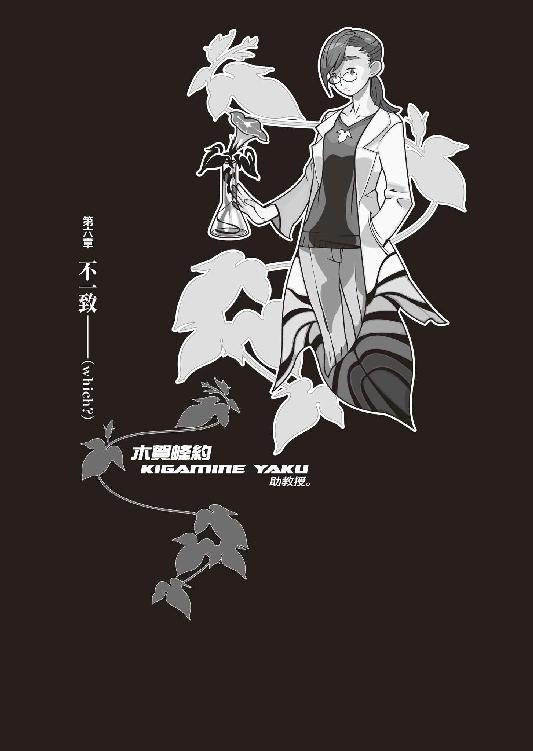
０
敗者は絶望して死ぬ。
勝者は切望して死ぬ。
１
「えー！ じゃあ師匠、『１００万回生きたねこ』を読んでも泣かなかったっていうですかあ!?」
「うん」
「あんた鬼ですよ！」
姫ちゃんはびしっとぼくに指を差す。本当に眼球に指を突き刺されるんじゃないかと思うくらいの、物凄い剣幕だった。
「あの名作を読んで泣かないなんて神経が切れてるです！ 姫ちゃんなんか本屋さんで立ち読みしてわんわん大泣きしちゃったですよ！」
「買えよ」
「じゃ、じゃあ、『Ｇ線上のアリア』は!? あ、あれを聞いたらいくら師匠でもお泣きになるでしょう！」
「えっと......どんな曲だっけ」
「............（絶句）」
「ああ、思い出した」
「思い出したですか！」
「あのかったるい曲だ」
「きえー!!」
殴られた。
「ば、ば、バッハ先生に謝れっ！ ウィルヘルミ先生に土下座しろおー!!」
連打を浴びた。
結構痛い。
「でもさあ......前評判が高いっていうか、一流と名高い有名作品とかじゃ、逆に感動ってしにくくない？ なんていうか、身構えちまうからさ」
「うー。そんなことないですよう！」
姫ちゃんは全身で拒絶するようにぼくの言葉を否定する。哀川さんのベタ好き、姫ちゃんにまで伝染してるのだろうか。
「じゃあ、じゃあじゃあ、師匠は、どんなときに泣くっていうですか！」
「......目薬をさしたときとか」
「そんなのは涙じゃねえー!!」
姫ちゃんはマジ切れだった。
「う、う、うぐ、ふええーんっ!!」
と言うか、マジ泣きだった。
泣くなよ。
「え、映画は!? 師匠、映画はどんなものをご覧になるですか!?」
「んー......単館系。でも基本的にゃあんまり映画館に足を運ぶことはないし......メジャー作品って苦手でさ。そういや最近、崩子ちゃんの部屋のビデオで『話の話』を見たかな」
「けっ！ 気取ってんじゃねーよっ！」
「............」
性格変わってるよ。
そっちが地だったっけか？
「ばかあー！ 師匠なんか『風の谷のナウシカ』のクライマックスシーンでわさわさ犇く王蟲の群れにでも感動してろーっ!!」
「もう師匠はわけわかんねえよ」
ぼくは布団に寝転がった。ったく......なんでこんな、それこそなんの因果で、こんな修学旅行の夜みたいな会話をしなくちゃいけないんだ。天井を見ながら、「それにしても」と、ぼくは話題の座標を正当なる位置へと設定する。
「なんか......おかしなことになっちゃったね」
ぼくはそう言った。
何故かというと、それはおかしなことになったからだ。おかしなことになってないときでもぼくは『おかしなことになった』くらいのことは言うだろうが、この場合は感慨や比喩でなく、客観的な表現として、おかしなことになっていた。
「話を逸らさないでください！ 萩原さんだって芸術文化活動に興味を持たない人間はその概念において無価値だと言って──」
「いや、そんな導入部の前振りちっくな会話を無理矢理続けるような場面じゃねえだろ」空気を読めよ、空気を。「......姫ちゃん、考えてみりゃ、きみは明日も補習なんだよね。修理待ってりゃ間に合わないじゃん」
「なんと！」姫ちゃんはぱあん！ と両手を胸の前で打つ。「それはすっかり忘却の彼方でした！」
「てめえ......」
要領よくなってんじゃねえか。
「まあまあ。師匠、明日は明日の風が吹くですよ」
「珍しく正確な定形文を言えたところで悪いが、今日の風は今日にしか吹かねえんだよ」
八月十五日、夜は九時過ぎ。
二階の──、診療所時代、病室に使われていただろう一室に、ぼくと姫ちゃんはいるのだった。姫ちゃんは備え付けのベッドに、ぼくは床に敷かれた布団の上に。もう一つある隣の病室には、理澄ちゃんがいるはずだ。木賀峰助教授と朽葉ちゃんは、一階にそれぞれ自身の部屋を持っているとのこと。
そんな感じで、お泊りだった。
「..................」
可愛く言ったからってどうってもんじゃねえな。
ちなみに可愛くない言い方をすれば嵐の山荘。
「みいこさんになんて言えばいいのかなぁ......」
当然の話、クルマのパンクは自転車のパンクを直すようには行かない。かといって修理するには──この研究所のある位置はあまりにも田舎過ぎた。ガソリンスタンドも当然の如く早仕舞いだし、修理屋に至ってはなんと夏休みだと。自分で直そうにも、ご丁寧に、スペアタイヤにまで傷つけられていた。大体、そんなことをされなくとも、スペアタイヤは十個もない。
近所にある中学校（といっても、徒歩三十分は余裕で過ぎる）の生徒による悪戯だろう、というのが木賀峰助教授の意見。んなわけねーだろそんな念の入った嫌がらせを行う中学生がいてたまるかというのがぼくの意見。無意見三人（理澄ちゃん、姫ちゃん、朽葉ちゃん）。
ただし、こんな生産性のない多数決をとったところでとらなかったところで、選択の余地はなかった。
ここからタクシーで帰ったりしたら余裕で死ねる額になる。電車もバスも、ありえない。自転車が一台あったが、そんなもので山は越えられない。歩いた方がまだマシだが、今からだと全道程が夜だ。ぼくらに春日井さんのような根性はなかった。
木賀峰助教授は元々、来週に向けての準備をするため、今日からここに泊り込むつもりだったらしく、朽葉ちゃんは元々がここが棲家。だが、ぼくと姫ちゃん、それに理澄ちゃんは《元々》なんて言ってられない立場だったわけで──
木賀峰助教授の好意に甘えさせてもらった。
......と、いう形。
朽葉ちゃんが作った夕食を摂って（味はそこそこと言ったところ）、順番にシャワー。風呂は備え付けていないそうだ。姫ちゃん→理澄ちゃん→朽葉ちゃん→木賀峰助教授→で、ぼくの順番。
姫ちゃんは既にシャワーを済ませて、朽葉ちゃんから借りた長いＴシャツ姿。今シャワーを浴びているのは......時間的にまあ、朽葉ちゃんくらいじゃないだろうか。
うん。
それが、今の状況。
おかしなことに──なった。
何にせよ、これは、好意に甘えている状態。
それは間違いない。
しかし何なのだろう、この状況。
なんというか......《奇妙》だ。
奇妙。
「......どういうことだと思う？ 姫ちゃんは」
「はい？」
「何か......作為的な展開だよね、これって。まるで誰か、ぼくらをここから帰したがってないみたいな感じじゃないか」
「ですかね？ でも案外、木賀峰助教授の言う通りかもしんないですよ。今時の中学生は何をやるか分かったものではないですよ。姫ちゃんが中学生の頃にはですね──」
「生憎だがきみの中学時代の話は参考にならん」
「酷いっ！」
「酷くないっ！」
ムキになって突っ込み返した。
全く、盗人猛々しいとは正にこのことだ。二ヵ月前、きみと、きみの高校のメンバー達（あと哀川さん）によってどんな目に遭わされたか、ぼくは一生忘れるつもりはないぞ。
「......大体、それに、師匠や姫ちゃんを家に帰さなくて、誰が得するっていうですか？」
「標敵がぼくらであるとは限らないさ。ぼくらは単に、ありがちなことにいつも通り、巻き添えを食っただけかも......」
「誰のです？」
「木賀峰助教授か、朽葉ちゃんか......」あるいは、《人喰い》の二人──「幸村冬夏さんか、ね。それに......機械的に考えれば、内部の者の犯行という線もあるね」
「ありますか」
「うん」
少なくとも、その機会は全員にあったはず。
誰もが誰もを監視し合っていたわけでなし。
常に誰かと誰かが一緒にいたということもない。一見暇のなさそうな、試験を受けていた姫ちゃんと理澄ちゃんにしても、それを監督していた木賀峰助教授にしても、一人でトイレにくらいは行っただろう。それに理澄ちゃんに至っては、試験を早めに切り上げて、出夢くんになって、外に出てきている。ずっと暇していた朽葉ちゃんとぼくは言うに及ばず。そう、出夢くんとぼくと朽葉ちゃんは──理澄ちゃんや姫ちゃんや木賀峰助教授より、より強い意味でのチャンスがあるのだ。
「でも、それは何のために？」
「うーん。それを訊かれると......」
ぼく。
紫木一姫。
木賀峰約。
円朽葉。
匂宮理澄。
あるいは、匂宮出夢。
この六人の......誰をとったところで、それぞれに、それぞれの目的がある。理澄ちゃんの《目的》は実際のところ出夢くんの《目的》のための手段でしかないのだが、それにしたってそもそも二人は同一人物、等号関係なのだから、そこは気にしなくてもいいとして。
でも。
しかし。
どうしたところで。
この現象には──まるで、意味がない。
誰の目的とも、そぐわない。
因果律が、ちっとも成立していない。
「なんだかな......ずれてるってか、大事なところから外れてるような感じなんだよな。この不思議感、どうしたもんか」
「師匠は悩むのが好きですねー。悩みマニアって感じです。いつものことじゃないですか、師匠が理不尽なトラブルに巻き込まれることなんて、まるっきりいつものことじゃないですか。そんな根本的なところで悩んでもしょうがないですよ」
「しょうがないで全部を済ませてたら一歩も前進しないよ......ぼくはそんな楽観的にゃあなれないな」
「猜疑心が強いですねー。師匠、いいですか？ 昔からよく言うでしょう。信じる者は儲かるです」
「それは漢字の憶え方だ」
やれやれ、と、ぼくは身体を伸ばす。
「あーあ。あ、そうだ、春日井さんに連絡しないと......って、あの人は携帯電話なんて持ってるわけねえか......」
持っていたとしても、番号を知らない。じゃあ、みいこさんに連絡入れとくか......あの人も携帯電話は持っちゃいないが、この時間なら家にいるだろう──
そっか......そうだな。
まあ、覚悟決めるか。
こういう状況になった以上、仕方ない。
殺し屋と同じ屋根の下という状況は多少の緊張を強いられるが、しかし出夢くんだって、もう《表》には出てこないだろう。最初に会ったとき、自分が《前》に出るのには尋常でないエネルギーを消費する、みたいなことを言っていたし。それが本当か噓か知らないけれど、それでも、普段から精神のバランスをとっている分、どうしても肉体のバランスが悪くなってしまうのだろう。理澄ちゃんの《失神癖》といい、出夢くんの《一日一時間》といい。
安かろう悪かろう、って奴か。
一長一短とも言う。
だけど......問題は出夢くん（＆理澄ちゃん）だけじゃないのだ。朽葉ちゃん（＆木賀峰助教授）だって、どう形容すべきなのか分からないほどには、問題ではあるのだった。
「......あのー。姫ちゃん」
「ですです？」
「《辞典に代わってお子荻ちゃん》の知識を借りたい」ぼくは倒していた身体を起こして、真剣な口調で姫ちゃんに向かった。「そもさん。不死身の人間というのは、創作可能か？」
「んー......せっぱ。って、いくら萩原さんでも、不老不死について真剣に語ってくれた機会は少ないですね......永遠に叶うことのないロマンチシズム、あるいは現実逃避としての日和見主義、というようなことを言っていました」
「うーん......」
よく分からない。
子荻ちゃん、何気に詩人？
「でも、萩原さんはその後に続けて《理論的な方法論としては、そこそこありえない話ではない》と言っていました。だから、これは真剣な話じゃなく、それこそ修学旅行の夜、消灯の後、布団に入ったままでのお話だと考えてください」
「......修学旅行、あったんだ。学年違うのに......」
「正確には強化合宿ですが。えーっと、要するに、物質的な意味での《不老不死》とは、突き詰めれば新陳代謝。それに付随する再生能力。更には時々刻々と変化する周囲の環境に対する適応能力としての免疫機構。これらさえ万全であれば、人間は基本的に老化しません。というか《健康状態》を保てます。老いませんから、死にません。つまり、不老不死です」
「なるほど」
いかにもＳＦ小説やらでありそうな設定だ。
細胞コピーの完全性......遺伝子の完璧性。
不死身というなら、それも不死身。
「ただ、それって脳細胞はどうなるわけ？ 脳細胞って、確かある程度の量になったら、もう増殖をやめて、しかも再生能力を持たない......とか聞いたことあるけど」
「与太話にそんな突っ込みを入れられても困るですね......まあ、フロッピーディスクみたいなもんですから、大事な情報以外はどんどん忘れていけば、それに、大事なこと以外は憶えなければ、ある程度大丈夫じゃないですか？」
「記録......否、記憶しないって寸法か。けど......それじゃあ、あまり不死身の意味がないな」
「逆の方法論もあるですよ。死にそうになったら人格だけを何らかの有機メディアに記録して、別の新品、健康な肉体に移す......とか。言うなら脳の移植手術ですね」
「ブラック・ジャック先生以外にゃできないだろ、そんな手術......そうか、それなら半サイボーグ化すれば、不死身も可能だな。人格を、それこそＤＶＤみたいなディスクにプログラム化して写し、そして機械の身体に........................................................................................................................」
言っててアホらしくなってきた。
何の話だ、そりゃ。
それができれば、苦労はない。
エセ科学もいいところだ。
現実が実際を無視している。
理論に実際が伴っていない。
まるで......超能力。
まるで、運命論。
まるで、魔法じゃないか。
「だから《不老不死》に限りなく近付こうとする解決法は、新陳代謝の能力が活発で、細胞の再生能力が《常人よりも優れている》って天性になるのかな──さっきの話も、使えなくなった部分をとっかえひっかえしていくって点の理屈としては、根本的にその性質の仮想型なんだろうけど、だけど結局そういうのって天文学的なお金がかかっちゃうんだよね」ふん、とぼくは息をつく。「吸血鬼の如き不老不死はありえないってことか......そんな現実的《不老不死》じゃあ、頭を撃ち抜かれた後尚生きているなんてこと、無理だもんな」
「......別に姫ちゃん、それほど興味ないですけど」姫ちゃんはそう前置きしてから言った。「木賀峰助教授は、その辺をどういう風にアプローチしているですか？」
「ちんぷんかんぷん......今のところの説明だけじゃ。それに──どうも、ぼくらにそんなことを教えるつもりはなさそうだしね」
「へ？」
「その判断は、確かに正しい......うん、これは姫ちゃんにも言っておこうか。朽葉ちゃん。彼女、《死なない身体》なんだってさ」
「はあ？」普通の、ぼくがそれを聞いたときに返したのと同じような反応が、姫ちゃんからも返ってきた。「それはどういう比喩ですか？」
「さあ──本人が言ってた」
「本人が？ ......それって噓っぽいですね」
「まあね......噓か本当かはともかく、ともかく噓っぽくはある。自己言及の台詞を信用するなってのは、何事においても誰を相手にするにしても、基本中の基本だからね。荒唐無稽な話さ......ちぇ。今になって、さっさと帰った春日井さんの判断が、一番正しいような気になってきたよ」
「ですか？ でも姫ちゃんは、楽しいですよー」へらっと笑う姫ちゃんだった。「師匠と一緒にお出かけ＆ご宿泊なんて、なんだか、胸の奥の方がわくわくしてるですよー？」
「ああ......そういや、姫ちゃんと泊まりがけの旅行なんて、したことなかったっけ」
「ですー」
「ですか」
そんな気楽なもんかね。
悩みとか、全然なさそうな顔しちゃってまあ。
「じゃあ、今度はちゃんと、旅行とか行こうか。こんな変な場所じゃなくてさ、旅館とか泊まって温泉とか入ってさ」
ぼくは朽葉ちゃんの話題を棚上げさておき、姫ちゃんの話題に乗ることにした。考えても詮のないことを、自身が抱いている不安を半減させるためだけに人に押し付けようというのは、やっぱり、共同幻想に基づくエゴでしかない。出夢くんだって、朽葉ちゃんの話なんて全然意に介してないようだったし。そもさん、人間に一番必要なものは？ せっぱ、分からないものを分からないままに放置できる才能。つまりは、そういうことだ。
「姫ちゃん、どこ行きたい？」
「えー？ 駄目ですよ。師匠、彼女の人がいるですよね？ だったら、いくら姫ちゃんとでも、そういうことはいけません。本来ならこうやって姫ちゃんと同じ部屋に寝ること自体、駄目ですよ」
「あん？ 彼女なんざいないぞ......春日井さんのことを言ってるんじゃないだろうね？ だとすればぼくは乾坤一擲の反論をもってして、ぼくはきみの精神を撃破するよ」
「じゃなくて。もー、隠したって駄目ですよ。姫ちゃん、みい姉さんからちゃんと聞いてるですよ。師匠には青い髪のうにーな恋人がいると」
「..................」
え、噓。
みいこさん、そういう認識でぼくを見てたの？
「ちょ......それは誤解だ」ぼくは脊髄反射的に姫ちゃんに詰め寄った。「なに......なんだって？ みいこさんがそう言っていたのか？」
「はい......何ですか、今まで見たこともないような真剣な顔で。鬼が豆鉄砲食らったみたいな顔ですよ」
「それはある意味効果的過ぎる攻撃だ......」
突っ込む声にも力が入らない。
「なんてこった......」
本当になんてことだ。
そんな認識されてりゃ、望みなんかねーじゃん。
そう言えば春日井さんも望み薄だとか何とか、そんなことを言っていたか......さてはあの冷血も知ってやがったのか。知ってて笑ってやがったのか。
「......誤解なのですか？」
「そうだよ......そいつはただの友達。いつか話さなかったっけ？ 姫ちゃんにちょっと似てる子......あー......うわー」
ぐらぐらする。
血液がいきなり全部心臓に流れ込んだみたいだ。
スクランブル・エッグ。
何にびっくりするかって、思いのほか落ち込んでいる自分にびっくりする。他人に誤解されることでここまでショックを受けるなんて、久し振りだ。うわー、《死なない身体》とかダブルの《人喰い》とかタイヤがパンクしてたこととか、今まで思考の優先順位を独占していたあれこれが、すごい勢いでどうでもよくなっていく。
「......師匠がマッハの速度で落ち込んで行くです......」ぼくの有様に姫ちゃんが素で引いていた。「......みい姉さんに誤解されてたのが、そんな駄目ですか？」
「うーん......」
「師匠、みい姉さんのこと、好きなのですか？」
「うーん......」
そう正面から訊かれると困る。
まあ、そりゃ嫌いじゃない。今のぼくが、日本でまともに生活できているのはあの人のお陰と言ってもいいのだ。ＥＲ３システムを半ば強引に中退し、この国に戻ってきて、もしも京都でみいこさんと鈴無さんに出会っていなければ──それこそぼくは、玖渚機関にでも取り込まれるしか、生き残る術がなかっただろう。
でも、このぼくが他人を好きとか嫌いとか。
笑えないくらい、笑わせる話。
正しく戯言だ。
「みいこさんは......みいこさんには、恩がある。いい人だしね。それに、ぼくの周りじゃ数少ない常識人だし」
「でもみい姉さん、たまに佩刀して歩いてるですよ。模造刀じゃないマジ刀を。とても常識人とは言えないです」
「うん......そうだね。そりゃそうなんだろうけど」
「煮えないですね」姫ちゃんはぼくのお茶を濁すような態度に、一種拗ねたように言う。「優柔不断です。好きなら好きって、言っちゃえばいいじゃないですか」
「............」
若いなあ。
羨ましいとは思わないけど。
浅ましいと思うけど。
「人の気持ちなんて、どうにでもなるじゃん......好きとか嫌いとか大好きとか大嫌いとか、愛してるとか憎いとか、普通とかどっちでもないとか、そういう問題じゃないと思うよ。それはもう、問題外のように。人の気持ちなんて、すれ違いと誤解の積み重ねだろう？」
「......そーやっていつまでもシニカルに構えてニヒリスト気取ってればいいですよ、師匠は」ぼくのことを見下げ果てたように、ため息交じりでそんなことを言う姫ちゃん。どこか、取り澄ましたような表情だった。「師匠はきっと、みい姉さんのことが好きなのですよ」
「............」
今度のは質問ではなかった。
答えに、一瞬、詰まる。
一瞬のあとも、詰まったまま。
唐突過ぎた......から、ではない。
かと言って、図星ってわけでもない。
......だったら、何なんだ？
なんで、答えられない。
その通りだ、でも。そうではない、でも。
どっちでもいいじゃないか。
答えれば、それでいいじゃないか。
「なに......言ってんだよ」ぼくはようやくのこと、姫ちゃんに答えた。動揺は......出ていないはず。「さっきから、おかしなことばかり言うよね。冷静になって考えてみてよ、そんなわけないだろ。おいおい、ぼくを誰だと思ってんだよ」
「案外、自分では分からないものですよ」
対して、姫ちゃんは取り澄ましたままだ。取り澄ましてはいるが、少し、冷えた風にも見える。
「そういうことは人に言われないと気付かないものです。自分が誰を好きかなんて、自分じゃあ分からないものです。姫ちゃんだって、奈波さんに言われるまでは、自分が抱いているそういう気持ちに──全然、気付きませんでしたし」
「そういう──気持ち？」
「誰かを、好きだという気持ち」姫ちゃんはくすり、と笑って、静かに答えた。「ええ。奈波さんには今すぐ嫌いになるようにって諭されたんですけれど。でも、そういうのって理屈じゃないですよね。理屈で人のこと好きになったりできないし、好きになっちゃったのに、それを簡単に嫌いになったりすることも、できないですよね。それは本当に師匠の言う通りだと思うです......人の気持ちなんて、どうにでもなって──どうにかなっちゃってる、ものなのですよ」
「ふうん......へえ、じゃあ姫ちゃん、好きな人とか、いるんだ」
ちょっと驚きだ。取り立てて根拠があるわけではなかったが、ぼくはなんとなく、姫ちゃんはそういうことから縁のない娘だと思っていた。過去のことをさておくとしても、性格的にそういうのには向かない娘だと思っていたけれど。
「はい。います」
自信たっぷりに、そしてなんだか嬉しそうに、姫ちゃんは頷いた。ぼくはそれを聞いて、まんざらでもない気分になる。一風変わったところのある女の子だけれど、姫ちゃんもやっぱり可愛いところがあるんだよな、と。
この娘は。
手遅れなんかじゃ、ないんだな、と。
「そうなのか。そいつはまた、お安くないね」ぼくは故意に、からかうように言った。「姫ちゃんが好きになるってくらいだから、きっと格好よくて頭がよくて男らしい、優しくて思いやりのある、非の打ち所もないような男なんだろうね」
「いえ」姫ちゃんはゆるりと首を振る。「格好悪くて頭も悪く女々しくて、全然優しくなくて思いやりなんて欠片もない、手の打ちようもないような人です」
「それでも姫ちゃんのことは大事にしてくれる」
「その人は、姫ちゃんのことなんて、その辺の路傍の石と同じようにしか見ていないでしょうね」
「......そんな人のどこがいいの？」
同性の眼から見た忌憚のない意見を言わせてもらえれば、それは最低から一歩手前に存在する性質の持ち主にしか思えないのだが。ぼくも大概最底辺の人間を見てきたが、そこまで酷い男というのは聞いたこともない。あいつと意見が合うのは癪だが、七々見の言葉も分かろうというものだ。
人は分からない。
女心は分からない。
少女となれば尚更だった。
それが美少女となればもう理解不能だ。
「その人はすごく鈍感で、姫ちゃんがその人を好きだということにも、きっと一生、気付かないです」
「告白とかしないの？」
「結果は見えてるですから。姫ちゃんも、一生、この気持ちを口に出すことはないと思います」
「一生？」
「一生。絶対に、何があろうと、揺るぎなく。その人との、ぎりぎり存在している、今の関係を壊したくないですから」
「ふうん......そういうのってちょっと切ないよね」
「ええ。切ないです」姫ちゃんは頷く。「でも、不思議と心地いい、そんな悪くない、切なさです。昔はこんなこと、思いもしなかったですけど......」
昔。
現在。
今との──差異。
姫ちゃんは、変わりつつ、あるんだろうか。
ぼくとは違って。
一歩ずつ、一歩ずつ、ゆっくりと着実に。
「............」
嫉妬、なんてしない。
ぼくには、高望みなだけ。
むしろ、姫ちゃんには達成して欲しい。
ぼくにはできなかったこと。
ぼくには、できないことを。
「んー」と、姫ちゃんは、そこで首を傾げた。「なんだか、少し、喋り過ぎたですね」
「......だね」
「師匠、そういうの敏感ですよね。するのもされるのも、干渉は嫌いって感じです。だから、距離の取り方が抜群にうまいみい姉さんに惹かれるじゃないですか？」
「んー......その言い方をされると、そうかもね」文脈は違うが、いつぞやの智恵ちゃんとも、そんな感じだったし。「みいこさんはとにかく、うまく距離を取ってくれる人だから。剣道やってるからかな」
「関係ないと思うですよ」
姫ちゃんは笑う。
「九州がいいです」
「え？」
「だから、九州。旅行の行き先。ええ。師匠、彼女が本当にいないっていうなら、倫理的には大丈夫ですよね」
「ああ......うん」
話がそこまで戻ったのか。
唐突だったので、戸惑った。
「でも、九州っても広いよ。どこ？」
「博多。えっと......遊馬さんの、出身地らしくて」
「............」
ジグザグ。
市井遊馬。
ぼくは一瞬言葉に詰まったが、だけど、
「......分かった。バイト代出たら、行こうぜ」
と、普通に、ごく普通に、頷いた。
不自然でない程度には、頷いたはずだ。
「ありがとです」
姫ちゃんは言った。
笑顔だった。
少なくとも、笑顔に見える。
笑顔を見ているぼくは、笑顔でない。
笑い方なんて知らない。
もう、憶えていない。
なんとなく、二人、見詰め合う形になった。
気まずい。
おかしいな。
姫ちゃん相手に気まずいなんて......
今まで、そんなことは滅多に──
と。
「──いっきー」
部屋の扉が向こうからノックされた。ほどなく扉が開いて、その向こうに見えた姿は、朽葉ちゃんのものだった。妙にファンシーな猫っぽいパジャマを着ている（突っ込み禁止か？）。髪はいかにも湯上がりといった感じだった。
朽葉ちゃんは、敷居越しに言う。
「シャワー、空いたわよ」
「え......木賀峰助教授は？」
「もう済まされたわ。あの人は夜型だからね......これから仕事するんじゃないかしら。それにしても本当、あの人、わたしを小間使いか何かと勘違いしてるのかしらね......シャワーの報告くらい自分でやって欲しいものだわ。とにかく、シャワー。あんたの番よ。それとも、男の人はそういうの、一日くらい平気かしら？」
「あ、いや......別に──」
どうも、難しい。
あの中庭での会話からこっち、夕食のときとかにも顔を合わせてはいたが、まともな会話を交わすのはこれが初めてだった。姫ちゃんとの気まずい空気をいいタイミングで打破してくれたのには感謝するが、しかし朽葉ちゃんとも、やはり気の置けない関係とは言えないのだった。
「............？」朽葉ちゃんの方は分かっているのかいないのか、不思議そうな表情だった。「それじゃ......別に最後だし、いつでも使っていいから。場所は一階の......って、分かるよね？」
「あ、うん」
「悪いけど、男物の着替えはないから......見た感じサイズは合うだろうけど、さすがにわたしのシャツを貸してあげるのは抵抗あるし、でも、あなた図太そうだしそのままでも寝られるわよね」
「そりゃ大丈夫」
でもさりげなく図太そうとか言わないで。
「そんじゃわざわざありがと、朽葉ちゃん」
「いえいえ。それじゃ」
ひらり、と手を振って、朽葉ちゃんは扉を閉めた。
なんだか......
中庭でのことなんて、なかったみたいな態度。
さっぱりしてるというか、さばさばしてるというか......総じて、よく分からない娘だ。
ぼくは姫ちゃんを振り向く。
姫ちゃんは、ぼくを見ていた。
気まずさが、少し、戻ってきた。
「......じゃ、ぼく、汗流してくるから」
「はい。先に寝ちゃってていいですか？」
「うん。どうぞ、遠慮なく」
姫ちゃんはぎこちなく答えた。
いつも通りにも思えたけど。
いつも通りの笑顔に見えなくも、なかったけど。
とても、ぎこちなく。
儚そうに、思えた。
「............あ」
唐突に。
酷く、その瞳が寂しそうに見えた。
そんな表情は、やめて欲しい。
きみは、ぼくとは違うんだから。
手遅れじゃないし、頑張れるはずなんだから。
今までのきみは、周囲に問題があっただけで......ぼくのように、根本的に本人だけの問題で、苦しんできたわけじゃあ、ないんだから。
だから。
彼女に、何かを言ってあげたくなった。
本当に──
本当に、この娘だけは──
何か、してあげたくなる。
「──ねえ、姫ちゃん」
「......はい？」
「ぼくは姫ちゃんのこと、すごく好きだよ」
「............」
「いや、普段意地悪ばっか言ってる癖に説得力ないって思うかもしんないけど、こりゃマジな話ね。正直、姫ちゃんに関しちゃぼく的に苦手なとこもあるんだけど、間に哀川さん抜きにしても、姫ちゃんにはいいところが一杯あるもんね。今まで何度も助けてくれたし、今回のことだってそうだし。こんなとこまでついて来てくれて、さ。ぼくみたいな欠陥製品でもそう思うくらいだから、きっとその、姫ちゃんが好きだっつー誰かさんも、いつか姫ちゃんの気持ち、分かってくれると思うな。だからそんな、やる前から諦めるみたいなこと、言わないでさ」
「......そうですね」
姫ちゃんは俯いた。
その瞳は、もう寂しそうではなかった。
でも。
どこか、悲しそうな瞳だった。
「姫ちゃんも......わたしも、師匠のこと、好きです。師匠のこと、本当に、すごく、好きです」
「うん、ありがと」
「......それでは、おやすみなさい」
姫ちゃんは布団にもぐった。
ぼくは廊下に出た。
２
夕食の後で、来週のバイトのこともあり、木賀峰助教授に建物の中をざっと案内してもらったのだが、もともと診療所だったところを改装したということもあって、専門的な研究施設、それこそ先月の斜道卿壱郎研究施設などとは様相が違い、機具や薬品は最低限、どちらかといえば資料庫というような有様だった。
会議室、ブリーフィングルーム。図書室。ＷＡ室。計測機械室。実験室。実験準備室。待合室（最初に案内されたあの部屋だ）。教授室、助教授室、助手室、ゼミ室（この辺は名称のみで、ほとんど物置状態）。簡易キッチン、トイレがあって、その隣に更衣室、奥にシャワールーム。それに一階の一番行き詰まりに、朽葉ちゃんの部屋があるらしい（そこには案内してもらえなかった。当然だ）。二階はぼくらのような来客を泊めるためのスペースらしい（元病室、二部屋）。現時点でそれぞれの室内までを詳しく見せてもらったわけではないので、大したことは言えないが──ここまで本大学から離れた場所に設置する意味は、この研究室に、あまりに薄いように思える。木賀峰助教授の別宅（ちなみに本宅は、四条烏丸の辺りのマンションらしい）という性格なのか──あるいは、朽葉ちゃんの隠遁棲家、というべきなのか。
いや......元、診療所。
存外、そこが大事なのかもしれない。朽葉ちゃんという《実験体》がいるのなら、そりゃ研究というよりは人体医学の領分になるからな......全く、どこぞの変態解剖マニアが聞いたら、泣いて喜びそうな話だ。
「そういや心視先生って、今何やってんのかな......」今度機会があれば、玖渚に調べてもらうことにしよう。「さてと」
シャワーを終えて、濡れた身体をタオルで拭き。更衣室で一度脱いだ服をもう一度着る。髪は姫ちゃんに短くしてもらったばかりなので、ドライヤーなしでもすぐに乾くだろう。
「..................」
姫ちゃんね。
なんでああいうこと、言うかな。
なんでああいうこと、訊くのかな。
訊かれたら、考えてしまうじゃないか。
考えたりして。
もしも、答が出たら、どうしてくれる──
「......戯言だけどね」
そう、戯言。
人を好きになるなんて、馬鹿馬鹿しい。
馬鹿馬鹿しいはずだ。
ぼくは今まで、誰も好きになったことも嫌いになったこともない。誰かを愛したことも誰かを憎んだこともない。ぼくは誰にも何も感じない。ぼくは誰とも何とも関係しない。
そう、思え。
そう、自覚しろ。
錯覚でもいい、自覚しろ。
「......寝よっと」
髪を拭いたタオルを籠に入れて、一つ伸び。
更衣室から出たところで、
「あ」「おっと」
廊下に、木賀峰助教授がいた。
寝着ではない、これからも仕事をするぞというような、気合いの入った姿だった。まあ、この人の寝巻き姿なんて、あまり想像のつくものではないか。眠っている姿すらも、想像の範囲内にない。
「......どうもっす」
「ええ。あなたとこの場で遭遇するであろうことを、この私はあらかじめ予測していました」
木賀峰助教授は言った。
だから、さっき驚いてただろうが。
「おや？ 髪を切りましたか？」
「......え？」
気付いてなかったんですか？
「それにその頰、どうしたんです？」
「......いえ、別に」
この人......
本当に他人のことなんか気にしてないんだな。
「それにしても、災難でしたね。タイヤ」
「いえ、お互いさまでしょう」
「明日一番、スペアタイヤを手に入れて修理をしましょう。手伝っていただくことになりますが......」
「ま、自分のことですし。経験もありますし、そこは頼ってください。それも、バイト代の内ってことで」
「もうこれからお休みですか？」
「ええ......ぼくはそうでもないですけど、相方が結構な強行軍でお疲れモードでしてね。ぼくだけ起きておくわけにゃ、いかないですから」
「そうですか。......紫木さんですか」
「はい」
「彼女、馬鹿ですね」
ずばっと言われた。
達人の居合い抜きのように鋭く言われた。
......多分、今の今まで、誰に言うわけにもいかず誰に言うわけにもいかず、本っ当に今の今まで、すっごく言いたいのを我慢してたんだろうな。
「そうですよね......世の中にはああいう人間もいるんですよね......私としたことが、少々意識を外していました......」
「うーん......」
まあ、木賀峰助教授、国立大学の教員で、学者さんだからなー。勉強ができないという意味での馬鹿っ子ちゃんとは、あまり深い縁なく人生を来たのだろう。ひょっとしたら、初めて見たのかもしれない。
ギャップ。
「でも姫ちゃん、いい娘ですよ」
「善良であることは認めますがね......しかし善良にどういう意味があるものか。ところで」木賀峰助教授は言う。「少しお話、よろしいですか？」
「はあ......いいですけど、何ですか？」
「朽葉から、何か聞きました？」
おっと。
いきなり随分と深いところに切り込んで来たな。さて、どう答えたものか......この場合、さっきとは違って訊かれたからには、誤魔化しの噓をつくというのもなんか違う気がする。一瞬の逡巡の末、ぼくは正直に答えることにした。
「《死なない身体》と、ぼくが木賀峰助教授と朽葉ちゃんの恩師に似ているってこと──ですかね」
「......そうですか。ならば、話が早い」
木賀峰助教授は声を低めて言う。
「ならば、これからも彼女のそばで、彼女の様子を窺ってください。分かりますね？」
「......でも、朽葉ちゃん、全部知ってますよ」
「隠すつもりもありませんよ。どうせ、あなたと少し話せば、バレることでしょうし......朽葉は私の企みなんて、いつだって完全に看破しているのですから」
「そうなんですか？」
「ええ。完全に、あらかじめ予測されています」木賀峰助教授はクールな調子で、何の感情も交えずに──少なくともそうとしか観察できない調子で、続ける。「それでも......正直な話、先が詰まっていましてね。一寸先は闇、とでも言いますか──ですからあなたの存在が、私──我々にとって、きっかけ程度にでもなればと思っているのです」
「《死なない》ってのは......」なんだか、こんな廊下でするような話でもないよな、と思いながらも、ぼくは言う。「具体的にはどういう意味なんです？」
「彼女自身が何と言ったかは大体のところ想像がつきますが......私に言わせれば、そのまま、実に全くそのままですよ。死なない。死なない。死ー、なー、なー、い。肉体が常に最善の健康状態を保っている。煎じて言えば、あらゆる意味で、老化しない」
「老化しないって......」
「外見年齢はざっと十八歳......でも彼女、最低でもその三倍は生きていますよ」
「三倍っ!?」十八かける三って......「五十四歳......って、そんな馬鹿な......五十四？」
「最低で、ですよ。算術的に考えれば、更にその三倍は生きていると考えるのが賢明でしょうね」
その三倍──
百、六十二歳。
なんだ──そりゃ。
否定するのも、振り払うのも、馬鹿馬鹿しい。
「三倍の──三倍っていうのは？ 最初の《最低》のラインは、根拠は、何なのですか？」
「彼女はおおよそそのあたりまでしか記憶を遡れないそうで......脳細胞がＲＡＭでなくＲＯＭであるという定説に従うならば、脳細胞の無駄遣いはできないということなんでしょうが......それが彼女のあの特異な、気怠げな性格の根幹とも言えるかもしれませんね。ふふふ、この辺りで既に仮説に無理が生じていますよね？ ちなみに──私の前に彼女を《担当》していた、私の恩師の見立てでは、彼女はざっと、八百歳だそうですけれどね」
「八百......ヤオビクニじゃないですか」
「可能だと思いますか？」
「え？」
「あなたは、どう思います？ 全体、十世紀近く生きる人間なんて──存在できると思いますか？」
「うーん。無理だとは、思いますが──」
無理なことは、分かっているけれど──
ぼくはさっき姫ちゃんと話していたことを、木賀峰助教授に喋った。完全なる再生能力、複製能力を持つ細胞。永遠に繰り返される新陳代謝。勿論「素人考えですが」という前言を忘れずに。だが、木賀峰助教授は「面白いことを言いますね」と、肩を竦めるだけだった。
「だけど──その《完全なる再生能力、複製能力を持つ細胞》という前提自体が矛盾しているんですよ。人の細胞にも、遺伝子にもそもそも《死》そのものはプログラムされているんですから」
「............」
「アポトーシスにセルラーセンセンス......どんな健康を維持したところで、寿命を延ばしたところで、それは根本的に遺伝子に組み込まれている癌因子の活発化の確率が増えていくだけ。単純なる細胞のコピーミスなどではない、細胞一個一個はその役割にのっとって、自然に死んでいくのです。《生きていれば》《必ず死ぬ》というのはそういう意味ですよ。生命の必須条件の内に、既に死は組み込まれているのですから」
「..................」
永遠に叶うことのないロマンチシズム、あるいは現実逃避としての日和見主義。子荻ちゃんが《与太話》の先に前置きしたこの二文は、そういう意味か。盲目的に理論を無視した絶対矛盾律。
「結局のところ、成長と進化、どちらが先かという矛盾なのですが......矛盾、ね。ふふ」《矛盾》という言葉に、木賀峰助教授はただ、笑う。「しかし、最強の矛と最強の盾なら、考えるまでもなく矛が勝ちますよね」
「どうしてですか？」
「盾は矛を防ぐための道具ですが、矛は人を突くための道具です。盾を貫くための道具ではありません......《楯突く》とは実際よく言ったものです。──でもね。細胞一つ一つにプログラムされているアポトーシスと大仰なことを言っても、その《死》は次なる《生》へのステップであるわけで、ステップでしかないわけで......じゃあ《死なない》というのは、《生きていない》と、同義になってしまうんじゃないでしょうか？」
「............」
「逆説、伝奇的な意味での厳密な不老不死に実在されると、これもまずい。そもそも細胞が不死身性を保ったりしたら、人が成長を終えなくなってしまいますよ。プログラムが繰り返され繰り返され繰り返され、無限彼方に永劫増殖してしまう──それじゃあ、正しく癌細胞だ。際限なく個体が巨大になっていってしまいますからね......ブラックホールの如き巨人が完成──否、永遠に未完成の、巨人の誕生ですよ。何せ、細胞が自動的にも他動的にも、決して滅びないのですから。細胞の生き死にを自由に、恣意的に調節できる器量があれば別ですが、しかしそれこそ、神様の領分です」
「ま、そうですね......」
成長と進化。
矛盾。
「更に、それだけの《成長》を保証するだけのエネルギーをどこから供給するのかという問題もあります──エネルギー、総合的なイメージでいえば、エネルギーとは生と同義ですからね」
「──です、ね」
なんというか──ぐうの音も出ない。
不死身を、朽葉ちゃんを、研究しているはずの木賀峰助教授から──ここまで致命的にそれ自体そのものを否定されたら、ぼくとしてはどういう立場をとればいいのか分からなかった。ただでさえ、ぼくは今現在、足場が定まっていないのだ。
混乱する一方のぼくに構うこともなく、ぼくをまるで気にする様子もなく、相変らず独り言のように、木賀峰助教授は「でもね」と、更に続ける。
「......ふふ、でもね──生物学者が何を幼稚なことを言うと滑稽に思われるかもしれませんが、私はこういうことを、基礎的なところでは思っているのですよ。そう、もっとも基礎的、二進法が如き法理にのっとって考える際において──《死》とは、一体何なのでしょうね？」
「......《死》っていうのは......」
生きていないこと。
誰とも会えないこと。
誰とも喋れないこと。
何も感じられないこと。
何も考えられないこと。
総じて言えば。
「何にもないこと、でしょうね」
「............」
朽葉ちゃんに訊かれた質問を思い出す。
《死なない》とはどういうことか。
ぼくの曖昧な解答に難色を示し、彼女自身はこう答えたのだ──《死なない》とは、ずっと変わらないということなのだと。
じゃあ、《死》とは。
「《死》とは、ずーっと、ずーっとずーっと、何にもないということ。強いて言えば闇......ですか。見通しのまるで利かない闇の中で、何の便りも何の頼りもなく、たった独りでいること」
「詩人ですね」
「戯言遣いですよ」
「あなたの詩的な感性自体は評価させていただきますが──ですけど私はもう少し味気なく考えます......そうですね──たとえば、一般的なイメージでは、心臓が止まれば人は死ぬ、と言われています。でも、心臓は不随意筋肉ですから、正確にいえば、人の意志とは何の関係もない」
「小酒井不木ですね」
「はい？」
訊き返す木賀峰助教授。
ご存知ないらしい。
「そういう小説があるんですよ。推理小説なんですけど......」
「変わったものを読んでいますね」
微妙な目で見られた。
そりゃそうか。
「心臓に心が宿るというのは、昔っからの定説ですけれどね──知ってますか？ 古代の人は、人間は心臓で考えると考えていたんですよ。脳の存在が判明する以前のことですが──」
「あながち間違いでもないでしょう。その脳に血液を送るのは心臓ですし、そして、脳が心臓を動かしてるわけじゃないっていうんなら」
どきどきするのも心臓で。
冷えるのも、心臓で。
試されるのも、心臓。
「そう──そしてその心臓の動きすら、《死》とは何ら関係ない。《死》が、《死》という識別名は脳やら五臓六腑やらの異常によって生じるものではない──むしろそれは正常。正常に生きていれば、正常に死ぬ。だって、そうでないと、生きていけないから。じゃあ彼女の存在って、何なんですかね？」
正常でなければ──異常。
正形でなければ──異形。
「彼女自身は知っている──って考えてるんですね」ぼくは言った。「だから、ぼくを呼んだ」
「その通り」
「でも、勝手な揚げ足を取らせて貰わせりゃ、自分のことなんて、自分じゃ分かんないと思いますけど。朽葉ちゃん、何も知らない感じですよ」
「ええ......確かに、そうかもしれません。しかし」木賀峰助教授は言う。「少なくとも西東教授は──彼女に関して《何か》をつかんでいたようです」
「西東......」
ぼくに似ているという、二人の恩師。
二人に言わせれば、ぼくが彼に似ているわけか。
「──因果律に対する反逆。実存する運命に対する革命、来る必然を迎え撃つ独立宣言」木賀峰助教授は、唱えるように続けた。「これはね......そもそも、その人、西東教授の言葉なのですよ。当時の私は彼に指導していただいていた、一人の平凡なる高校生だったのですが......そう、紫木さんくらいの年齢でしたか」
「ああ、高校生ですか」
「彼の研究を私が引き継いだのですが──彼の続きに、私は続いたのですが──正直、荷が重いというのが本音ですね。朽葉は私にまるで心を開かないし──あなたのような人を連れてくる、こういった類の打算的なやり方を使うのも、実は初めてではないのですよ」
「............」
「でも、そのことごとくは失敗でしたがね」
「──人材不足、と朽葉ちゃんは言ってました」
「ええ──朽葉から見て、私の企み、否、私という存在は、さぞかし滑稽なことでしょう。......しかし、しかししかし、今回は、今回こそは──成功するかもしれませんね」
「どうしてです？」
「今まで朽葉は、私の企みに気付いたところで、完全に無視していましたからね」木賀峰助教授の言葉は自嘲的だった。「これは、一縷の望みにはなります」
「一縷の......ですか」
「ええ......私もずっと、教授の続きとして続き続けてきたのですが......いい加減、疲れてきましたからね。策があると分かって──柵があると分かって尚、朽葉がそこに飛び込んできてくれるような真似をしてくれるのは──これが初めてなんです。適性試験も、功を奏したという感じですね。試験をここで行った意味も、これであったというわけです」
「............」
初めて、か。
朽葉ちゃん自身はああいう風に言っていたが。
利害は一致している、と言っていたが。
少なくとも、やはり、木賀峰助教授の方から観測すれば──朽葉ちゃんは、研究に対し、全然協力的じゃあないのだろう。実際、今回にしたって、ぼくに言った言葉の中にも、一体どれほどの虚偽が含まれているのか、どれほどの打算が含まれているのか、本当のところ分かったもんじゃない。しかし、それでも──今回のようなケースは、よっぽどの奇異なのだ。
「私は──木賀峰約は、あらゆる希望を、あらゆる手段でもってして、追いたいのですよ......運命を、打破するために」
「運命を──切り開くために」
運命を切り開く。
因果を破壊する。
物語を──崩壊、させる。
「......仕事ですから、命令されれば従いますが」ぼくは言う。「目的をもって真面目に人を騙すのって、ぼく、あんま得意じゃないんですよね」
「騙す必要はありませんよ」
「......そっすか。......話は終わったようですし、もう、行ってもいいですか？」
「はい？」
「春日井さんがあなたに失礼をはたらいて、ここから逃げていった理由が、なんとなく分かったような気がしますよ。どちらかというと......それは《朽葉ちゃんに》なのかもしれませんが」
「......どういう意味です？」
「さあ。意味なんかないのかも、しれません。意味があったとしても、その意味に意味があるなんて、限りませんしね。意味の意味の意味にまで到達しちまえば、もう人智の関するところじゃありませんよ」
「......朽葉を《実験体》にしていることに非人道を感じるというのなら、それは的外れというものですよ」木賀峰助教授は静かに言う。「彼女の所有する《死なない身体》は、社会的には弱者ですよ。知れたら、どんな目に遭うか分からない。誰かが......保護してあげないと、なりません」
強いは弱い、弱いは強い。
《死なない身体》。
警戒され、危険視され。
多分......
殺される。
あらゆる意味で、殺戮を受ける。
「彼女に自分を守る、自衛能力はありませんよ」
わたしは誰にも影響しないのよ。
わたしには住む場所と世話をしてくれる人が必要だったから。
死なない身体。
死。
自殺できる人間の、強さ。
「......非人道だなんて思いませんよ。ぼくの人生を思ってみれば、そんなの今更って感じなんですしね......ただ、多分──」
「多分？」
「いえ、言い過ぎですね」
そうだ。
これこそ、喋り過ぎた。
ぼくにそんな資格はない。
だって──関係、ないのだから。
「おやすみなさい、木賀峰助教授」
「......ええ。では、また明日」
木賀峰助教授もそれ以上ぼくに語らせようとも、ぼくに語ろうともせず、廊下を先へと歩いていった。あの方向にあるのは、実験室だか図書室だか。とにかく、夜っぴて研究作業なのだろう。彼女は夜型だと朽葉ちゃんは言っていたが、それどころかあの人は一日中働いていそうな勢いだ。全く、怠け者のぼくから見れば、本当に見上げたものだった。
見上げたもの。
ただ......ただし、多分、春日井さんは──木賀峰助教授を、そういう風には評価しなかったのだ。
あの人が先月、玖渚友と兎吊木垓輔の手によって完膚なきまでに破壊されたあの斜道卿壱郎研究施設に勤めていた頃、やっていた研究は、そりゃ大したものではあったが、とても褒められたものではなかった。
だけど。
もしも当時の彼女に『あなたはどうしてそんなことをするのか』と問えば、こう答えただろう。
『仕事だから』。
そこに則って言えば──
木賀峰助教授は、見上げたものではない。
あの人は、仕事でやっていない。
あの人は、使命でやっている。
それが春日井さんの気に障った、ということでも、しかし、ないのだろう。春日井さんはそんなことで障りが生じるような気概なんて、どのような意味でも持ち合わせていない。あの人は──誰にも何も感じない、生きてないから死んでない、そっち側の人間だ。
ただ。
卿壱郎博士と離れて──
今、彼女に指示を出してくれる人はいない。
今、彼女に命令を下してくれる人はいない。
そういう意味では、春日井さんは現在、不安定なのだろう。その行動の先が予測不可能なほどに。一切合切、予測不可能なほどに。
気まぐれ。
サイコロを振ったような性格。
全く、自分のことのようだ。
「......あかりさん、元気かなー」
全く害のない方向の思想に考察を転換し、ぼくは部屋に戻ることにした。
「あー......あかりさんに膝枕......。そうだな、バイトが終わったら、友と一緒にあの島、もっぺん行くとするか......二度と行くもんかと思ってたけど」
占い師がいなかったらいいんだけど。
木賀峰助教授と話している内にすっかり乾いてしまった髪をなんとなく触りながら、しばらく廊下を歩いて、階段を登ろうとしたところで、上から理澄ちゃんが降りてきた。この研究室の階段は幅が狭いので、一人ずつしか通れない。ぼくは理澄ちゃんが降りてくるのを、立ち止まって待つことにした。
「......やあ、りず......」
「........................」
「む、ちゃん？」
いや。
姫ちゃんと同じく、朽葉ちゃんから借りたロングのＴシャツ姿で......今は、両腕が外に出ている。すらりと伸びた──長い腕。シャツの裾から伸びている二本の脚。
マント姿でもなく。
拘束衣でもない。
表情は、無表情。
理澄ちゃんの、無邪気な笑顔ではない。
出夢くんの、無法図な笑顔でもない。
表情は、無表情。
何も言わない。
何も言わない彼女。
何も言わない彼女が誰か、分からない。
何も言わない彼。
何も言わない彼が誰か、分からない。
どっちだ？
この身体の《生》はどっちだ。
この身体の《死》はどっちだ。
まるで、分からない。
不一致。
どちらがどちらか、不一致。
「あの......出夢、くんかな？」
《彼》か《彼女》かどちらか分からない彼女は、ぼくの横を通り過ぎ、階段を降り切った。
ほどなく、その姿が闇にまぎれて行く。
あちらの方向は......待合室か。あるいは、その向こうの玄関か。夜中の散歩にでも洒落込む──って雰囲気でもない。ならば一体どこへ行こうというのだろう。トイレなら方向が逆だ。寝惚けているのだろうか？ あの表情は、ただ寝惚けているだけで、ぼくを無視したのも、気付かなかっただけで。
だが、そんなニュアンスでもなかったか。
まるで夢遊病のよう。
なんだありゃ......第三の人格でもいるのか？
まさか、そんな話は聞いていない。
それに......あれは、人格がどうとか、そういう次元の問題じゃない、変容の仕方だったような。
まるで。
人格が、抜けてしまったかのように。
空っぽに、
見えた。
明るい闇のように、がらんどう。
「............」
ちょっとだけ追いかけようかと思ったけれど、しかしそれは深入りし過ぎかと思い、動かしかけた脚を停める。
最悪の可能性を、考えないでもなかった。
あれは出夢くんの側で、たった今から、《標敵》である木賀峰助教授と朽葉ちゃんとを殺戮に向かったのかもしれない、と。一階にいるのは彼女ら二人だけだ──
......だが。
その最悪だとしても、ぼくには関係ない。
庇い立てする理由はない。
ぼくが邪魔すれば、容赦なく、出夢くんはぼくを殺すだろう。それが《殺し屋》の職分なのだから。存在理由に則って、ぼくを殺すだろう。
巻き添えは御免だ。
それに、出夢くんは約束してくれた。
ぼくの関連するところで、人は殺さない。
考えてみれば、それは破格の条件だ。理澄ちゃんみたいな可愛らしい娘と付き合っていればただそれだけでいいというのだから。問題は山積みではあるが、ただ仲良くする程度だったら、その山を避けることくらいは可能だろう。あるからと言って、山なんて登らなくてもいいんだ。だから──それが、分からないことを、分からないままに放置する才能。
ぼくは階段を登った。
部屋に戻って、扉を開ける。電気は消えていた。ベッドを見れば、姫ちゃんが布団を深く被ってもう眠っている。都合がいい。いくら相手が姫ちゃんでも、ぼくは寝ている姿、眠っている顔を好んで見られたいとは思わない。熟睡はできないだろうが、なんとなく気分は違う。
ぼくは自分の布団に入った。
なんだか大変な一日だったな......あ、春日井さんのこと、みいこさんに連絡しようと思ってたの、忘れてた。まあいいか、もう面倒くさいし。何だかんだ言って、あの人は平気で、歩いてアパートまで帰るだろう。一人で生きられる人は一人で生きればいいのだ。一人で生きられない奴が一人で生きれば痛い目を見る。それだって、そうしなければならなければ、そうしなければならないのだけれど。
「眠る」
眼を閉じた。
次に眼を開けたとき、ぼくは地獄を見る。
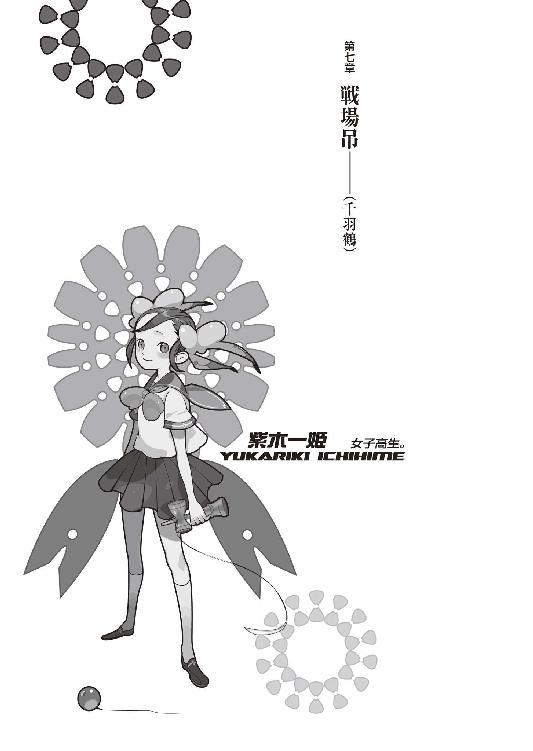
０
パンがなければ飢え死にしろ。
１
時間が戻ればな、と思うことがある。
それは、言うならこんな問いだ。
《もしも人生がやり直せるとしたら、きみはいつから、どの時点からやり直したいと思う？》
模範解答は、簡単明瞭。
やり直したくない。早く死にたい。
ぼくの解答も、それと同じ。
仮に──時間が戻っても。
たとえ、あの青い少年に出会う前に時間が戻ったところで、ぼくはあの青い少年に出会った後に、また同じことを繰り返すだろうから。何度やり直そうと何度やり直そうと、際限なく同じ悲劇を繰り返すことだろう。劣化しないメディアに記録された映像の如く、病んでいるように、プログラム通りに、同じことを。
妹が死ぬ前に戻っても。
生まれる前に戻っても。
ぼくは、ずっと同じことを繰り返す。
それが定められた運命の物語であるかのように。
誰かの意思に服従するように。
因は違えど、果は同じ。
だけど、思う。
幼稚といわれても、滑稽といわれても。
戯言といわれても、傑作といわれても。
時間が戻ればいいのに。
こんな思いをする前に。
あのときは、今よりマシだった。
未来より過酷なことなんて一つだってないんだ。
もしも因果を司る神様がいるなら、願おうか。
頼むから、もう何もしないでくれ。
そこで、じっとしててくれ。
「......あー、なんか、変な夢見た」
カーテンの隙間から差す陽に身を起こす。
変な夢を見て、もうその夢を忘れていた。もっともこればっかりはぼくの記憶力の責任ではなく、大抵の人はそんなものらしい。夢なんて、憶えているつもりでも、その大半は忘れてしまっているものだ、と。
............。
何でそんなことが分かるんだ？
忘れてるはずなのに。
「本当はちょっとしか忘れていないかもしれないじゃないか......よく分かんないな」
寝起きの思考回路もよく分からない。
なんでぼく、そんなこと考えてんだ？
ちらりとベッドを窺う。
姫ちゃんはまだ寝ているようだった。本当は今日も補習だというのに、随分とまあ吞気なものだ。だが、フィアットの修理にも時間はかかりそうだし、今日の午前中くらいは仕方ないか。むしろ、今まで一度もサボらずに出席していること自体、奇跡みたいなもんだ。
なんだかんだ言って、学校は好きなんだろうな。
起こさないよう、音を立てないように気をつけながら、部屋を出る。できれば顔を洗ってしゃっきりしたいところだが、......更衣室の洗面台でいいか。真っ先にトイレに備え付けられてあった洗面台の方も思いついてはいたが、そんなもん、選べたら選ぶべくもないだろう。
一階についた。
そのまま、更衣室へ。
まだ、少しだけ夢うつつだった。なんだか視界というか、思考というかがぼおっとしている。低血圧じゃない、むしろぼくは寝起きはいい方。いいんだけど......最近は春日井さんのせいで、寝不足だからな。そろそろどこかで一人で寝るようにした方がいいかも......あるいは、玖渚のところに一週間くらい泊り込むでもするか。あいつなら、寝ているところを隣にいられても全然平気だからな。
更衣室をノックして、返事がないのを見、扉を開けて中に入る。入ったところで──入るまでなんともなかったのに、まるで平生通りだったのに、正に入ったところで──
奇妙な勘が働いた。
「......あれ？」
なんだか。
なんだか、このまま進んで、奥のシャワールームを見なくちゃいけないような気がしてきた。どうしてだろう、変な感じ。奇妙な勘、といって、実際とても奇妙だった。そんな形を持ったものじゃない、むしろあやふやで脆そうな確信だった。
空気が、死滅っているような。
空気が、死消っているような。
勘？
あるいは、経験論。
よく分からない。
よく分からないが......
寝起きの所為だろうか？
よく分からないが......
よく分からない。
あるいは、経験論。
勘？
空気が、死滅っているような。
空気が、死消っているような。
「..................」
自分が見たいと思ったものに、自分が自分の意志で見たいと思ったものに、無理矢理逆らう必要はない。その程度の認識で、ぼくはしかし、それでも一応顔を洗って寝起きの頭をできるだけはっきりさせておいてから、ようやく、シャワールームへ続く扉を開けた。
そこで、死なない少女が、死んでいた。
これ以上ないくらいに、死んでいた。
正視に堪えないくらい、死んでいた。
上半身と下半身が千切られて、詰まっていた内臓がごっそりとはみ出している。内臓はとっくの昔に酸素を失っているのか、赤黒く変色している。生きている内臓は赤く赤くきらきらときらめいているものだ。朽葉ちゃんの上半身からはみ出しているそれはどこからどう見ても、まるっきり光沢のない、死んでいる内臓だった。
緩く、更衣室まで音が漏れない程度に緩く、シャワーから水が漏れていて......それが、床のタイルに大量に流れ出たはずの血を洗い流してしまったのか、血の匂いは、薄い。
ぼくを呼んだのは、
かすかに聞こえたシャワーの音と、
かすかに香った血の匂い。
そういうことか。
死滅っている。死消っている。
ここは──
終わっている。
「あ、う......」
口元を押さえ。
悲鳴をあげそうになったのを、堪える。
夢うつつから、一気に返る。
現実に？
夢に？
これは......どっちだ？
千切れていると見えた身体は......ぎりぎりにではあるが、繫がってもいた。背骨一本、背中の皮一枚、繫がっていた。
フラッシュ・バック。
今まで見た、様々な死体が脳裏を過ぎる。
けれど、それと比しても、これは酷い部類。
かなり、酷い部類。
まるで、内臓を。
内臓を食い荒らされた感じだ。
表情。
朽葉ちゃんの表情は。
朽葉ちゃんの表情、ここから窺える朽葉ちゃんの表情は......なんだろう、よく分からなかった。苦痛に歪んでいるという風でもないし......無論、穏やかという風でもない。強いて言うなら、無表情。
青く、冷えていて。
眼は、閉じている。
両腕両脚は、広げている。
拳は、握っていない。
服は、昨夜の、ファンシーな猫っぽいパジャマ。
猫が真っ黒に。
猫。
猫、猫、猫。
血が固まって、真っ黒に。
くろ、くろ、くろ、くろ、くろ、くろ、くろ。
黒い。
黒い猫。
黒猫。
「えっと......」ぼくは、そこにいるはずの誰かに訊く。「何ですか？ これ......こういうの、困るんですけど......」
一歩下がる。
唐突過ぎる。
二歩下がる。
理解が追いつかない。
三歩下がる。
落ち着け。
四歩下がって、シャワールームから出た。
扉を閉めた。
何も見えない。
これで、何も見えない。
ぼくは、何も知らない。
「............っ！」
駆けるように洗面台に寄って、全身全霊の力の限りにおいて、蛇口を捻る。これでもかというほどの勢いで、水流が放出される。手にとって、顔を洗う。そうだ、顔を洗いに来たんだ。ぼくはここに顔を洗いに来た。あれ？ さっき洗ったっけ？ いいじゃん、減るもんじゃないし。洗え洗え洗え洗え。綺麗好き。綺麗好き。清潔さを保て。潔癖に、清潔に。
冷静になれ。
冷酷になれ。
「はっ、はっ、はっ、はっ、はっ......」
息がつまる。
呼吸が難しい。
水を飲んだか？
違う、息をするのを忘れている。
馬鹿が、死んでしまうぞ。
「う......」
ぼくは水を出しっぱなしにしたまま、また逃げるように、更衣室を出、そしてそこの廊下にしゃがみこんだ。はっと気付いて、扉を閉める。
「う、うう......」
どうして......こんな、ことに。
この展開は、一体？
どうして朽葉ちゃんが死んでいる？
ああ、そうだ。ぼくを驚かせるための壮大なショーなのかもしれない。何せ朽葉ちゃんは《死なない身体》だ。内臓をぶちまけられたくらいで死んだりはしないのだった。きっと今にも《ビックリ！ あっはっは、マジでびびってやんの》とか、この扉を開けて現れるのだ。
内臓をはみ出したままで。
無表情のままで。
現れるのだ。
「............あ」
思い出す。
昨夜、見た、理澄ちゃん......だか、出夢くんだか、どっちだか分からない、誰とも知れない不一致の《人喰い》。
殺し屋。
殺すのが仕事。
きっと、訊けばそう答える。
『仕事だから』。
仕事は、達成しなければ。
仕事は、遂行することが大事なのではない。
仕事は、結果を出さなければならない。
ぐらぐらする頭を、無理矢理立ち上げた。
ぐらぐらする身体も、強引に立ち上げる。
「きがみね......助教授」
は、どこだろう。
あの人は、無事なのか？
夜型で......これからも仕事だと言っていた。で、......実験室か、図書室か、そっちの方に歩いていったはず。ぼくの記憶が正しければ。ぼくの記憶が正しいなんてことがあればいいんだけど。ぼくの記憶が正しければ、ぼくの記憶が正しかったことなんてないのだ。
記憶？
そんなもの、さっさと忘れてしまいたい。
嫌なことばかり憶えている。
嫌な人間ばかり憶えている。
嫌なことしか知らない。
嫌な人間しか知らない。
「死んでない......死んでない」
廊下を歩く。
先にあるのは実験室。
ノックする。ノックは大事だ。だって、礼儀だから。礼儀を守らなければ、それは、失礼だ。無礼で、非礼だ。怒られてしまう。怒られるのは嫌だった。それに、ノックをすれば、なんと驚き、中に人がいるかどうかが判明するのだ。そんな優れた利点を、ノックという行為は所有している。実行しない手はない。
が、返事はない。
ノブを捻る。
鍵がかかっていた。
返事がなくて、鍵がかかっている。
つまり、中に人がいないということ。
「............」
生きた人間は、いないということ？
考える暇もなく、ぼくは肩から、扉にぶつかった。思い切り、容赦なく。扉に対しても、自分に対しても、一欠片たりともの容赦なく。
五回で、扉が軋み、傾ぎ、わずかに隙間が開いた。そこでぼくは痛みを自覚する。構わない。痛みならいつでも感じている。いつでもぼくは痛い。痛い。痛い。痛い。痛い。痛い。痛い。痛い。痛い。
きっと。
「..................」
中には、本当に誰もいなかった。
そんなのは、当たり前だ。
中で誰かがいて、その人が死んでいて、しかも部屋に鍵がかかっていたら、密室状態ではないか。そんなことは、現実的にありえない。ありえないことは、起こらない。
当たり前。
肩に触れる。
骨は無事だ、折れてない。
不思議だ。なんで折れてないのだろう？
首を傾げながら、更に廊下を奥に進む。
図書室。
ノックする。ノックは大事だ。だって、礼儀だから。礼儀を守らなければ、それは、失礼だ。怒られてしまう。怒られるのは嫌だった。それに、ノックをすれば、なんと驚き、中に人がいるかどうかが判明するのだ。そんな優れた利点をノックという行為は所有している。実行しない手はない。
が、返事はない。
ノブを捻る。
鍵はかかっていなかった。
そこで、木賀峰助教授が、死んでいた。
椅子に座って、机に向かって倒れ伏している。こちらを向いた眼が、どろんと濁っている。それは、死んだ眼だった。生きていなかった。確実に。どうしようもなく。百パーセントの確率をもってして。
死んでいた。
人間の首は、あんな角度で曲がらない。
そしてもう一つ。
右肩が、ばっつりと、千切られていた。
血が、だくだくと流れた形跡があった。
もう、ほとんど流れていない。
もう、ほとんど固まっている。
赤黒く、固まっている。
あるいは──流れ切ってしまったのか。
この匂い。
気付かなかった。
どうしてだろう？
密閉されていたからか。
血の匂いは。
死の匂いは、閉じ込められていた。
今や、密閉されていない。
死は──解放されたのだ。
「..................」
近付こうとして、躊躇う。
近付けば──囚われる気がした。
恐怖とは違う。
驚愕とも違う。
この感情は──やばい。
ぼくは今、魅せられてる。
死。死。死。死。死。死。
円朽葉の死体。
木賀峰約の死体。
その二つに、魅せられている。
惹かれている。惹かれている。どうしようもなく、限りなく。遥かなる莫大に彼方なる膨大を並べた分だけの質量を有した牽引力が、物理的にぼくを惑わせる。
これは──憧憬だ。
あこがれて、いる。
「う。ううううう」
今度は一歩ずつではない。
一気に四歩下がって、扉を閉じた。
匂いが消える。
元診療所。成程、そういう構造か。
完全なる密閉。
死は、再び密閉された。
「なんで、どうしてこんなことに」
木賀峰助教授と朽葉ちゃんが死んだら、もうバイトなんて成立しないじゃないか。来週からだというのに。みいこさんの掛け軸が手に入らなくなるじゃないか。問題はそんなところにない？ 分かっている、そんなこと。そんなこと、分かっている。
そんなことも分からないと思ってる？
思ってる。
「い、出夢、くん──」
もう、それしか考えられない。
彼の仕業だ。
殺し屋。
なんてことだ、あの噓吐き。
ぼくの前で人は殺さないと言ったのに。
お笑い種、滑稽だ。
殺し屋の言うことを、信じたのか？
今更、裏切られたみたいなこと、言うなよ。
今まで信じていたみたいなこと言うなよ。
そう思ってただろう？
明日、二人が死んでるかもって。
それでも、関係ないって。
思ったんだろう？
思った通りになって、何を驚く。
喜べよ、予想が当たったぜ。
「──うるさいっ！」
ぼくは廊下を走る。
真っ直ぐ走っているはずなのに、あちこちにぶつかった。廊下の壁にぶつかり、曲がり角でぶつかり、あちこちのドアのノブにぶつかり、何もないところで転んだ。
無様だった。
「うるさいうるさいうるさいうるさいうるさいうるさいうるさい......黙れっ！ ぼくは正常だぞっ！」
階段に辿りついて。
登る。
そこは、ゆっくりと。
一段ずつ、一段ずつ。
かみ締めるように登る。
「ぼくは何も予想しちゃいないぼくは何も考えちゃいないぼくは何も感じていないぼくは何も思ってなんかいないぼくは焦ってなんかいないぼくは後悔なんてしていないぼくはぼくは」
階段を登りきって。
再び、走って。
理澄ちゃんの寝ている部屋の前で停まる。
今度は、ノックなしだった。
「......出夢くんっ！」
ベッドの上で。
匂宮兄妹が、死んでいた。
「......はあ？」
ぴしり、と頭に皹が入った音がした。
ぴしり、ぴしり、ぴしり。
びき。
許容量が、もう限界だ。
脳が遁走を始めようとしている。
それは、もう始めているか？
駄目だ、このままじゃ。
逃げ切られる。追いつけない。
「......え、え、ええ？」
ベッドの上の彼女の身体は、
血まみれだった。
血まみれだった。
血まみれだった。
やはり、赤黒く変色した血液。
そりゃ、そうだ。
首が、千切れている。
首のところで、頭と身体が二つになっている。
完全に、首の皮一枚繫がらず、完成している。
首斬死体。
それだけで十分、十分過ぎるのに。
胸元に、穿たれたような、大きな傷があった。
朽葉ちゃんに借りたＴシャツが破れて、その奥、心臓が位置するはずの部分に、大きな大きな大きな大きな、深い深い深い深い──傷が。
それは傷というよりも最早穴だった。
貫通、している。
首を切られて。
胸を開けられて。
二度、殺されている。
そりゃあ、そうだよなあ。
二重人格だもんな。
二回。
二回、殺さなくちゃ。
死んだことには、ならないよなあ。
『大好きっ！』
と。
理澄ちゃんの笑顔を思い出した。
『ぎゃはははっ！』
と。
哄笑する出夢くんを思い出した。
やめてくれよ。
思い出したくないんだよ、そんなこと。
やめてくれよやめてくれよやめてくれよ。
「理澄ちゃん出夢くん理澄ちゃん出夢くん理澄ちゃん出夢くん理澄ちゃん出夢くん理澄ちゃん出夢くん......？」
呼びかけてどうする。
返事がないことなんて分かってる。
いや、分かってないよ。分かるもんか。
理解なんてしたくないんだ、壊れたくない。
返事をしてくれ。
きみは......きみ達は恐るべき殺し屋なんだろう？
《人喰い》の理澄に《人喰い》の出夢。
殺戮奇術の匂宮兄妹。
首を切られて胸を貫かれた程度で、死なない。
死なないんだろう。死ぬはずがない。
ぼくを驚かそうとしたって、そうはいかない。
ぼくは人が死ぬのには慣れているんだから。
今更。
今更そんなので、驚かない。
部屋の隅には、あのマントと、拘束衣が、畳まれて置かれてあった。へえ、拘束衣って、こういう風に畳むんだ。随分とまた畳みにくそうな構造しているもんなあ。
全く。
「......ねえ、理澄ちゃん......」
返事はない。
「......ねえ、出夢くん......」
返事はない。
落ち着こう。
ぼくはクールだ。
まずは、選べ。これからの行動を、選択しろ。この状況を整理するべきか、混乱のままにい続けるべきか。楽なのは明らかに後者だ、そちらを選ぶのが正しい冴えた選択って奴だろう。だけどぼくは前者を選んだ。きっと、混乱していたのだろう。
円朽葉が死んでいた。
木賀峰助教授が死んでいた。
匂宮兄妹が死んでいた。
多分ここには、繫がりがある。
そうだ、みんな死んでいる。
みんな殺されている。
共通点。
これで切れた鎖は繫がった。
「......そして」
二つ、までは分かる。
朽葉ちゃんと木賀峰助教授は分かる。
彼女らは、《殺し屋》の標敵だった。
標敵は、殺される。
それが、法則。
それが、常識ってものだ。
最低限の、礼儀作法。
「でも......なんで、出夢くんが......」
あるいは、理澄ちゃんが。
死んでいるんだ。
分からない。
分かる必要なんて、ない。
「..................................................................................................................逃げなくちゃ」
姫ちゃんを起こして、逃げなくちゃ。
フィアットが駄目だから、備え付けの自転車で。
山を越える必要はない。
どこかに。
とにかく、ここではないどこかに。
ここは──駄目だ。
ここは、終わっている。
ぼくは匂宮兄妹の身体を視界から外して、部屋を出た。隣の病室の扉を開ける。ノックはしなかった。もう、そんなことを考えている余裕すらなかった。ノックって何ですか？
「一姫！ 起きろ！」一気にベッドに駆け寄って、布団をかぶったままの姫ちゃんの身体を揺する。「こっから逃げるぞ......大変なことに、なっ......て......るん」
異変に、気付く。
揺すろうとかけた手が、沈む。
これは──人の身体の弾力じゃない。
「..................っ!?」
布団をまくったら。
中に、布団があった。
布団が、布団を被っていた。
「..................」
布団だ。
どこからどう見ても、布団だ。まごうことない立派な布団だ。これを布団といわない奴は頭がおかしい。頭が正常なら、眼がおかしい。眼が正常だというなら、頭がおかしい。とにかく、どこかがおかしいと思う。
いや。
でも、ぼくは、おかしい。
ぼくは異常なはずだ。
ぼくは正常を所有していない。
「......あれ？」
ぼくは首を傾げる。
「姫ちゃんは？」
姫ちゃんは？
２
姫ちゃんは中庭で死んでいた。
両腕が──肘の先で、千切れている。
そして、首が有り得ない方向に捻じれ。
血だまりの中で、死んでいた。
そこに笑顔はなく。
そこに希望はなかった。
「............」
肉の破片。
血の匂い。血だまり。
あの矮軀のどこにどこにこれだけの血が。
たっぷりと。
たゆたゆと。
その中に浮かんでいるような、矮軀。
骨。髄液？ 骨が覗く。腕。
腕はどこだ？ 千切れた腕は。
こまぎれて、血だまりの、あちこちに。
肉塊。
肉片。
捩れた首。
生気のない瞳。清輝のない瞳。
邪悪そのものを見たかのように瞳孔は開ききって、されど表情は恐怖に歪むでもなく悲壮に凍るでもなく虚ろそのもの。
リボンが解けて。
伸びた髪が乱れて。
無残、無残、無残。
制服。
まだ新しい制服があちこち破れていて。
なんだか、獣にでも襲われたような。
神話の獣にでも蹂躙されたかのような。
蹂躙。
征服。冒瀆。
生贄、餌食、暴食。
陵辱。破壊、破壊、破壊。
殺人。殺戮。血、肉、骨、血、肉、肉。
肉の破片。血の匂い。血だまり。あの矮軀のどこにどこにこれだけの血が。たっぷりと。たゆたゆと。その中に浮かんでいるような、矮軀。骨。髄液？ 骨が覗く。腕。腕はどこだ？ 千切れた腕は。こまぎれて、血だまりの、あちこちに。肉塊。肉片。捩れた首。生気のない瞳。清輝のない瞳。邪悪そのものを見たかのように瞳孔は開ききって、されど表情は恐怖に歪むでもなく悲壮に凍るでもなく虚ろそのもの。リボンが解けて。伸びた髪が乱れて。無残、無残、無残。制服。まだ新しいセーラー服があちこち破れていて。なんだか、獣にでも襲われたような。神話の獣にでも蹂躙されたかのような。蹂躙。征服。冒瀆。陵辱。生贄、餌食、暴食。破壊、破壊、破壊。殺人。殺戮。血、肉、骨、血、肉、肉。
肉の破片。血の匂い。血だまり。あの矮軀のどこにどこにこれだけの血が。たっぷりと。たゆたゆと。その中に浮かんでいるような、矮軀。骨。髄液？ 骨が覗く。腕。腕はどこだ？ 千切れた腕は。こまぎれて、血だまりの、あちこちに。肉塊。肉片。捩れた首。生気のない瞳。清輝のない瞳。邪悪そのものを見たかのように瞳孔は開ききって、されど表情は恐怖に歪むでもなく悲壮に凍るでもなく虚ろそのもの。リボンが解けて。伸びた髪が乱れて。無残、無残、無残。制服。まだ新しいセーラー服があちこち破れていて。なんだか、獣にでも襲われたような。神話の獣にでも蹂躙されたかのような。蹂躙。征服。冒瀆。陵辱。生贄、餌食、暴食。破壊、破壊、破壊。殺人。殺戮。血、肉、骨、血、肉、肉。肉の破片。血の匂い。血だまり。あの矮軀のどこにどこにこれだけの血が。たっぷりと。たゆたゆと。その中に浮かんでいるような、矮軀。骨。髄液？ 骨が覗く。腕。腕はどこだ？ 千切れた腕は。こまぎれて、血だまりの、あちこちに。肉塊。肉片。捩れた首。生気のない瞳。清輝のない瞳。邪悪そのものを見たかのように瞳孔は開ききって、されど表情は恐怖に歪むでもなく悲壮に凍るでもなく虚ろそのもの。リボンが解けて。伸びた髪が乱れて。無残、無残、無残。制服。まだ新しいセーラー服があちこち破れていて。なんだか、獣にでも襲われたような。神話の獣にでも蹂躙されたかのような。蹂躙。征服。冒瀆。陵辱。生贄、餌食、暴食。破壊、破壊、破壊。殺人。殺戮。血、肉、骨、血、肉、肉。肉、肉、肉、肉、肉、肉、肉、肉、肉、肉、肉、肉、肉、肉、肉、肉、肉、肉、肉、肉、肉、肉、肉、肉、肉、肉肉肉肉肉肉肉！
紫木一姫。
紫木一姫の生い立ちは、平凡なそれだ。
普通で、ちょっと、変わっている。
なんてことはない、平凡な、物語だ。
生憎、悪趣味も悪興味も満たせるほどの物語は、そこにはない。語って聞かせるほどの物語はそこにはなく、聞き耳をたてられるほどの物語も、そこにはない。
話自体は、よくある話だ。
目新しくもなく、意外な展開もなく。
適度に不幸で。
適度に悲惨で。
適度に残酷で。
だけど、紫木一姫が、適度な娘でなかった。
だから、とても不幸で。
だから、とても悲惨で。
だから、とても残酷だった。
哀川潤に助けられ。
市井遊馬に薫陶を受け。
それでも彼女は不幸で悲惨で残酷。
変わらない。
本質的に何も変われない。
六月の事件も、結局のところ彼女自身が適度でなかったからこそ、引き起こされてしまったようなものだ。彼女がもう少しだけでも適度であれば、あそこまでの惨劇は引き起こされなかった。ああ、それは認めよう。認めよう、認めようじゃないか。
紫木一姫は、決して被害者ではない。
加害者といってもいい。
異種で、異様で、異形の者だったかもしれない。
あの明るい笑顔は欺瞞で、
あの明るい言葉は偽善で、
あの明るい姿勢は擬装で、
あの明るい空気は犠巧で。
全部作り物の、どうしようもない紛い物で。
異種で、異様で、異形の者だったかもしれない。
加害者だったかも、しれない。
「だけど──だからってこれは、どうなんだ？」
血だまりの中。
たゆたうように、喰い散らかされた。
頼りの両腕を失い、
想いも願いも望みも祈りも全て喪失、
虚ろな、虚空の瞳が、
あんな表情が、
そんな姿が、
被害者じゃ、ないというのか？
ぼくはそれを遠く眺め。
ポケットから携帯電話を取り出した。
記憶しているボタンを押す。
「ああ......ぼくだ」
電話が繫がって、ぼくは言う。
「人が......死んでる」
『それで？』
電話の向こうで答える声。
「人が、死んだんだ」
『それで？』
「ぼくを含めて五人いて......朝起きたら、四人、死んでる」
『それで？』
「ぼく以外、全員死んでる」
『それで？』
「脱出しようにも、ちょっと山間で......クルマ、全部壊されてて......」
『それで？』
「助けてくれ」
『分かった。そこで待ってて。一切、何もしないでね。警察にも、どこにも連絡しないようにね。全部僕様ちゃんに、任せといて』
「うん......それじゃ」
電話を切る。
電源も、切った。
それから、姫ちゃんに一歩ずつ、近付いていく。
もう──誰のことも、憶えていない。
木賀峰助教授のこと、朽葉ちゃんのこと。
匂宮の、理澄ちゃんのこと、出夢くんのこと。
全部、消え飛んだ。
全部、消し飛ばした。
消費した。
「......ごめんね、姫ちゃん」
ぼくは血だまりに脚を踏み入れた。
まだ微かに乾ききってなくて、ぴちゃり、と音がした。靴が汚れた。汚れた？ 人の血が付着することを、汚れたなんて言うつもりかよ。血だぞ。人間の、一部分なんだ。それを冒瀆するか。
関係ないんだよ。
そっと、姫ちゃんを抱えた。
現場保存なんか、知ったことか。
「あーあ......」
姫ちゃんが、死んじゃった。
死ん、じゃった。
「きみにはいつも迷惑ばっかかけるよねえ......巻き添えばっかり食わせて、悪いとは思ってんだよ......これでも。本当なんだよ。本当。本当。噓じゃないんだ」
ぶつぶつ呟く自分が不気味だ。
何語ってんだ、こいつは。
でも、ぼくは語るのをやめない。
自分を制御できない。
「姫ちゃんは、これからだったのにね......」
『師匠は』
いつだったか、姫ちゃんは言った。
『どんなときに幸せだって感じるですか？』
『............？』ぼくは要領を得ないその質問に、間抜けらしく首を傾げた。『あー......。ごめん、質問の意味がよく分からないんだけど』
『だーかーらー。あー、生きててよかったなー、とか思う瞬間って、どういうときです？』
『年上のろりぃメイドさんを三人はべらして四畳一間で暮らす生活は幸せだろうとは思うけど、しかしそんな経験はないな』
『あったら死刑ですよ』
『死刑にはならんだろ』
『思想犯です』
『そこまでか......。しかし、幸せねえ......考えたこともないな。なれるとも思っちゃないし、特に、なりたいとも思っちゃないからね』
『思っちゃないですか』
『ぼくはこんな感じでいいんだよ。普通に生活できて、普通に大学行って、普通にその辺の人らと仲良くやって、たまにバイトしたり、旅行とか行ったり、そういう普通の、ごく当たり前のありきたりな生活が、ぼくにゃお似合いなんだよ。それだけでいいんだ。特に、何もいらないさ。特に、何も望まないよ』
『うーん。欲がないですね。なんか、個人的です。この質問に対して、世界が平和だったら幸せ、て答えた人もおられるのですよ』
『世界なんかどうでもいいさ。世界のことを考えて、世界がぼくを幸せにしてくれるってのかい？ まるで滑稽だ。ぼくは今、ここのことしか考えない。いーんじゃないの？ 宝籤が当たるとか、経済的に大成功を収めるとか、昔っからの夢を叶えるとか、わざわざそんな面倒っちいことになんなくてもさ。今日と明日と明後日と、自分と、周りの人間が適当に生きていけりゃあ、それでいいって思わない？』
『んー。あ、そっか』
姫ちゃんは微笑んだ。
微笑ましく、微笑んだ。
『それが師匠にとっての幸せなのですね』
幸せ。
幸せだってさ。
なんだそりゃ。
どういう意味だ？
何を言っているんだ。
ぼくに、そんなものはない。
ありきたりすらも不似合いだ。
ぼくはもう、とっくに手遅れだから。
だけど、ぼくじゃなくて、姫ちゃんは。
姫ちゃんには、ぼくと違って、これからがあったのに。ようやく、これから先ができたというのに。ようやく、未来ってものを、見ることができそうだったのに。生きているというのもまんざら悪いものじゃないと、姫ちゃんも、やっと、今更のようにそう思えていたはずなのに。
今更だったら、手遅れだってのか？
今更じゃあ、駄目か。
手遅れでも、駄目か。
ぼくも、姫ちゃんも。
ぼく達は、元々、失敗したっていうのか？
今、幸せだったはずなのに。
幸せだって、言ってたのに。
毎日が楽しいって、姫ちゃんは言ってたのに。
なのに。
どうして、たったそれだけすら、手に入らない。
そんな大それたことなのか？
不幸な人間は、幸せにはなれないのか？
不幸だというだけで幸せになれないのか？
何も、他人より幸せになりたいわけじゃない。
その、半分でいいのに。
その一割だって、よかったのに。
不幸でさえなければ、それでもよかったのに。
何か、欲しかったわけじゃない。
何も、欲しがったわけじゃない。
「姫......ちゃん」
重い。
姫ちゃんの身体が、重い。
軽いはずなのに。
鴻毛のように軽いはずの姫ちゃんの身体が、地球よりも遥かに重い。ずっしりと、破壊せんばかりの重量で、ぼくを責め立てているようだった。きりきりときりきりとぎりぎりとぎりぎりまで。苦しめる。苦締める。苦絞める。苦閉める。
閉塞している。
殺されそうだ。
怖い。
怖いよ。
空を見上げる。
青い。
いい天気だ。
爽やかな風すら吹いている。
日本家屋に、よく似合う。
いい場所だ。
ここは、いい場所だ。
こういうところで暮らすのも、悪くない。
朽葉ちゃんだって、ここを気に入っていたのだろう。そんなことを言っていた。ここはいい環境だと。そうだ。人が暮らすのに、ここは、とても、いい環境だ。
けれど──ここには誰もいない。
どこにもいない。
ここにはぼくしか、いない。
誰とも......何とも、関係しない。
音もなく、光もない。
世界から隔絶されたように、ぼくは孤独だった。
ここは、闇だ。
暗闇だ。
闇の中の孤独。
暗い。
闇は、暗い。
何の希望もない、絶望ばかり。
ここは嫌だ。こんな場所は嫌だ。
まるで拷問だ。
運命の牢獄だ。
運命の断頭台だ。
こんなところにいたくない。
一人は嫌だ。
ぼくを一人にしないでくれ。
もういいよ。
ぼくを一人にしておいてくれ。
こんな想いをしたくないんだよ。
こんな想いを、したくなかったんだ。
何のために生まれてきたのか。
どういう意味で生まれてきたのか。
少なくとも──こんな想いをするためじゃない。
こんな想いをするくらいなら、生まれてきたくなんかなかった。こんな惨めな、死んだ方がよっぽどマシな気分を味わうくらいなら、生まれてこなければよかった。先月殺されておけばよかった。先々月に殺されておけばよかった。その前にもその前にもその前にもその前にも、いつでもいい、とにかく、こんな、暗黒のように逃れようもない喪失感を思い知るくらいなら、さっさと、いつかどこかでこれまでに、殺されてしまえばよかった。ぼくなんて最初からいなければよかった。
全てのことが、間違いに思えた。
生きていること自体が間違いに思えた。
全てのことが、失敗に思えた。
死んでいないこと自体が失敗に思えた。
「ごめんね......姫ちゃん。ごめんね、ごめんね、ごめんね、ごめんね......」ぼくはぶつぶつとぶつぶつとぶつぶつぶつぶつと狂人のように呟く。「ぼくは......こんな状況でも、泣けない奴みたいだよ......」
姫ちゃんから返事はない。
返事はなくてもぼくは続ける。
益体もない戯言を続ける。
「──こんなことなら、あのとき助けてあげなきゃよかったね。あのときだったら、まだ──」
「死ぬの、怖くなかっただろうに」
怖かっただろう？
楽しそうだったもんね。みいこさんと話してるときも、萌太くんや崩子ちゃんと遊んでるときも、七々見の馬鹿に構ってもらったり、荒唐丸さんとじゃれてたり。それに学校でも友達できたんだっけ？ 紹介してくれたね。
好きな人も、いたんだっけ？
本当に、楽しそうだったもんね。
そんなこと知らなかったらよかったのに。
今のぼくみたいな気分で。
死んでいったのかな。
「う。う、う、うううう、うううううう」
もう、言葉にならなかった。
もうどうにもならなかった。
頼むから。
誰か今ぼくを殺してくれ。
これ以上辛い目に遭いたくない。
時間を戻してくれなんて言わない。
そんなことは願わない。
だから、これ以上、時間を進めないでくれ。
ここで終わろうじゃないか。
バッドエンドでいいから、終わってくれ。
続くな。
続くな、続くな、続くな！
惰性で続くのをやめろ！
「死んじゃおっかな......」
驚くほど素直に、そう思った。
「死んじゃおっかな......」
少なくとも、ぼくは終わるよな。
運命も必然も因果も因縁も終わらなくても。
ぼくだけは終わる。
今のぼくは、死ぬのが怖くない。
絶望しか知らないから。
「..............................」
二階建てじゃ、飛び降りても死ねない。刃物はどこかにあったっけ？ 台所に包丁くらいあるか。元診療所だし、探せばメスくらいあるかもしれない。なくてもいい。壁に頭でもぶつけて死ねばいい。方法はいくらでもある。いいじゃん、どうせくだらない人生だし。
この辺で終わらすか。
終点。
終着。
終焉。
「..................」
姫ちゃんとは行き摺りの仲だ。哀川さんがいなければ知り合うことも、どころかその存在を知ることもなかっただろう、異世界の住人だ。子荻ちゃんや玉藻ちゃんと同じ側の住人。にこにこへらへら笑っていても、楽しそうに無邪気にお喋りしていても、それでもぼくとは決定的に違うのだ。
違うのだから、関係ない。
関係ない。
関係ないんだ。
大体、姫ちゃんは苦手だったんだ。
馴れ馴れしいし、玖渚に似てるし。
ぼくに似てるし。
苦手だったんだ。
そんなことで、死んでどうする。
ぼくは、そんな奴じゃないだろう。
ぼくはそんないい奴じゃない。
ぼくは欠陥製品。
そんなことを感じる回路は切れている。
ぼくはどんな想いもしていない。
何も感じていない。
何も感じない。
感じてない。
ぼくは、悲しくなんかない。
「姫ちゃんが死んだから......どうしたってんだ」
姫ちゃんの身体を、離した。ぱしゃりと血だまりに落ちる、小さな体軀。ぼくは立ち上がる。血まみれの手で顔に触れる。ぬるっとした感触。気持ち悪い。気持ち悪い。気持ち悪い。気持ち悪い。気持ち悪い。気持ち悪い。気持ち悪い。気持ち悪い。気持ち悪い。
気持ちいい。
血の付着した指を舐める。
不味かった。
当然だ。
空気に触れた血など、ただの鉄だ。
そんなものは、人間の一部じゃ、ない。
「お茶でも飲みつつ救助を待つか......」
キッチンに行けば、お湯くらい沸かせるだろ。いくら玖渚でも、色々手続きもあるだろうし、ここに来るまで一時間くらいかかるだろうからして。
シャワールームでこの血を洗って。
図書室で何か本を借りて。
お茶を飲んで、待ってよう。
玄関に回ろうと脚を進めたところで、
「あ、そうだ」
と、振り向いた。
忘れてた。
全く。
こんな大事なことを忘れるなんてどうかしてる。
ぼくは言った。
「姫ちゃん、お疲れさま」
ばいばい。
さようなら。
おやすみなさい。
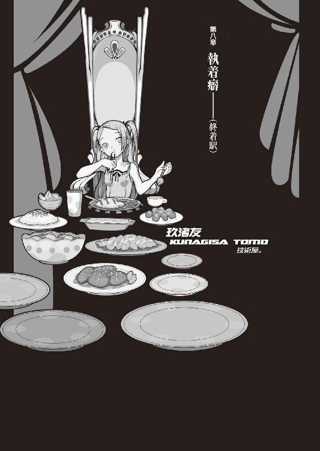
０
信じてもらわないと裏切ることもできない。
１
玖渚友と聞いて思い浮かべるあれこれ。
青い髪。青い瞳。友達。無邪気。純真無垢。技術屋。同い年。笑顔しか知らない。青色サヴァン。玖渚機関。玖渚直、霞丘道児。《チーム》。死線の蒼。《凶獣》《害悪細菌》《二重世界》《罪悪夜行》《永久立体》《狂喜乱舞》《街》《屍》。電子世界のテロリスト。青い妖精。ジオサイド。階段を一人で降りられない。階段を一人で登れない。充電中。わがまま。箱庭。貧弱。夜型。一意専心集中型。舌足らずな喋り方。僕様ちゃん。触るとふわふわ気持ちいい。風呂が嫌い。ロシアンブルー。成長しない。絶対停止。絶対停滞。蹂躙者。家族のような存在。妹のような概念。抜群の記憶能力。一度憶えたことは決して忘れない。お金持ち。孤立絶縁中。城咲のマンション。メインフレーム。世界中に張られた彼女の根。装置。人外。異形。ぼくにとって大事な存在。ぼくにとってかけがえのない存在。好きだった存在。かつてぼくがまだ壊れかけだったころ、好きだった存在。ぼくを完膚なきまでに壊した存在。ぼくが完膚なきまでに壊した存在。
「..................」
あれから。
あれからどうなったのかよくわからない。
だけど多分、適切な処理がなされたと思う。
隔離された孤島で起きた事件ではない、完全に揉み消すというわけにはいかないだろうが──少なくとも隠蔽工作が不可能というほどの規模の事件ではない。精々、たった四人の人間が死んだだけだ。戦争でミサイル一発落とされることに較べたら、全然大したことがない。四人というのは八人の半分だし、四十人の十分の一だ。所詮、それだけのことだったのだろう。
ああ......
考えてみりゃ、情けのない話だ。
ぼくは姫ちゃんに駆け寄るより先に、玖渚に助けを求めた。保身が一番最初に思いついた。無意識の内に、保身に走ったのだ。
いやあ、最低だな。
本当に最低だなあ。
「いーちゃーん？」
ノックがあってから、扉が開けられる。
ひょっこりと、向こうから青い髪。
玖渚だった。
「いーちゃん、起きた？」
「ん......？ 起きたって......」
あれ。ぼく、寝てたんだったっけ。
夢も見ないほど──深く。
死んだように。いつものように。
「......今何時？」
「夜の十時。僕様ちゃんの活動開始時間」
「あ......そ。で、今日何日？」
「うに？」
「今日何日？」
「なに呆けてんのさ。八月十七日だよ」
「............えーっと......」
ああ。
じゃあまだ、あれって昨日の話か。
なんだ。
もう百年くらい経ったかと思ってた。
「いーちゃーん。起きる起きる起きる起きる起きる起きる起きる起きるー」近寄ってきて、ぺちぺちぺちぺちぺちぺちぺち、と、十六ビートで頰を叩かれた。「僕様ちゃんが起きてるときにいーちゃんが寝てると時と場合によってはつまんないんだよー」
「......そりゃ、悪い」
「おなかすいた。何か作ってよ」
「おっけ」
立ち上がる。
なんだ、ぼく、座ったまま寝てたのか。
我ながら、器用なことだ。
「......あれ？」ぼくは部屋を出かけたところで首を傾げた。「友......ここ、どこだ？」
「僕様ちゃんの家だよ。何言ってんの？」
「なんでぼく、ここに？」
「......玖渚ぱーんち」
アッパー気味に殴られた。
見ると、ちょっと拗ねていた。
「もう、いーちゃん。折角かくまってあげてんのに、そういうこという口はお仕置きなんだよ」
「んー。待て待て。思い出してきた」
そうだ。
ぼくはあの研究室から直接、知らない人の知らない車に乗せられて、直接、アパートにも帰らず誰にも連絡せず、玖渚のマンションに来て。
その後、ここでしこたま吐いて。
で、その後眠ったんだ。
死んだように、眠ったんだ。
「いーちゃん最近寝てなかったんじゃない？ すっげー眠りようだったよ。熟睡、っていうか爆睡？」
「ふーん」
「いーちゃんに色々悪戯しちゃった」
「何い？」
「うっふっふ」玖渚が不気味に笑う。「いーちゃん、寝てるときは結構大胆」
「な......」
「ふっ」嫌な、挑発的な笑い方だった。「まあ口じゃあ何だかんだ言っても、身体は正直だよね」
「てめえおいっ！ ぼくに何をした!? こら！」
「きゃはは、わーいっ！」
楽しげに笑うと、さすが自分の住処内、あっという間のスピードで玖渚は逃げていった。この広いマンションの中で逃げられてしまうと、もう捕まえられない。何て奴だ......人の寝込みを襲うなんて。ぼくでもそんな鬼畜な真似はしなかったぞ。......だからこその、あの寝不足だったのだが。
ていうか冗談だよね？
冗談で言ったんだよね、玖渚さん？
いやあ、気を遣わせて悪いなあ。
「..................」
諦めて、ぼくはキッチンに向かう。足下にトラップのごとく広がるケーブルの束を避けながら。床だけじゃない、天井にも壁にも、束ねられた幾本ものケーブルが固定されている。なんか、前に来たときよりも更に酷くなってるな......まるで意志をもった生物のように機械が空間を侵蝕しているかのような有様だ。
キッチンで冷蔵庫を開ける。
......どうして先月に作り置いたものがそのまま残っているのかは謎だ。ていうか、冷蔵庫の中身、ほとんど全滅じゃないか。あいつジャンクフードだけでこの半月を過ごしていたのか？ 怪物め。仕方ない、諦めてぼくは冷凍庫の方に矛先を移す。こちらならばまだわずかばかりの希望が残っている。冷凍食品というのも味気ないが......ぼくも、そうそう凝った料理が作れるコンディションじゃないしな。調味料は、あー、やっぱそのまま残ってる。適当に腹に溜まりそうなおかずを作製する間にご飯を炊く。炊飯器。玖渚は喰うときには結構喰う。喰わないときには全く喰わない。そういうタイプ。そういやあの島にいた料理人......えーっと、名前はなんだっけ、彼女が出してくる料理に関しては割合、比較的規則正しく、毎日おいしそうに食べていたか。あのくらいのレベルになれば、個人の生活習慣まで改めてしまうということか。
約一時間くらい料理にかけて「おーい、友ー、食べもんできたから運べよー」と呼びかけるが、何の返事もない。聞こえていないのか、聞こえているが聞こえていないことにしているか、どっちかだろう。トレイや盆なんて気の利いたものはここにはない。やむをえない、一皿ずつ、順番にダイニング（普段全く使用されていないことが窺える、微妙な埃のたまり具合だった。朽葉ちゃんの言葉じゃないが、人が使わなければ埃が溜まる。人間と同じだ）に運ぶ。一皿運んだところで、まずは掃除が先かと、雑巾を捜すことにした。結局準備が整って玖渚を呼びに行けたのは、その三十分後になった。冷えたからどうという類の料理を作ったわけでもなかったので、別に構わない。
「いただきまーっすっ！」
「おあがりなさい」
がっつくように、両手に装備したチョップスティックを皿へと伸ばす玖渚。こうなると声は届かない。食事中に話をしないタイプといえば例の狐面の男と同様で格好いいが、こいつの場合はただ喰い意地が張っているだけだ。食べるときに食べておかないと、いつ衰弱死するか分からないから。検診日の際にもこんな風だったら、直さん、かなり心配したんだろうな......あの人、結構な妹煩悩だから。
妹。
理澄ちゃん。
いかん、思い出しちまった。
「ごちそーさまっ！」
「おそまつさま」
二人とも食事を終え、さっさと洗ってしまおうとぼくが皿を集めかけたところで、「あ。いーちゃん。いーちゃんいーちゃんいーちゃん」と玖渚がぼくに呼びかけた。
「......いーちゃんは一回」
「はいはい」
「はいも一回だ」
「ちょっと報告すべき事項が生じてる」
「うん？」
玖渚は別にどうということもない、ふにゃら～っといつも通りのゆるんだ表情だが、こいつは価値観が通常人から思いっきり相違し逸脱しているので、表情から読んだ感情を迂闊に信じてしまってはならない。
「いーちゃんが巻き込まれたっていう昨日の話のことなんだけどね」
「うん」
「隠蔽しきれない」
「うん？」ぼくは集めかけた皿を一旦おいて、席に座り直した。「しきれないっていうと？」
「何て言えばいいのかな。ちょっと玖渚機関の管轄外がからんでて、そこが微妙にまずいんだよ。いや、僕様ちゃんも今や部外者だから、人づてに聞いた話で悪いんだけどもさ」玖渚はじーっと、空になった皿を見ながら言う。お皿を舐めちゃおうかなーどうしようかなー怒られるかなーと、ぼくに向いていない脳の一部で考えているようだ。「木賀峰約って助教授はいい。あそこの管理人だっていう円朽葉って人も、まあ、いいんだ。その二人は、何とかなる。っていうか、どうにでもなる。後は野となれ山となれ」
木賀峰助教授。
朽葉ちゃん。
「ただ、残りの二人がね」
「二人っていうと......」
「一人はいーちゃんの住んでるアパートの住人だっていう紫木一姫ちゃん。そして──匂宮理澄。もっとも彼女については、匂宮出夢っていってもいいところだから、正確には三人かな」
姫ちゃん。
理澄ちゃん。
出夢くん。
「この三人は、玖渚機関の管轄外だよ」
「あそこに──玖渚機関に、管轄外とかあるのかよ。あの、問答無用の絶対組織に」
「管轄外というより、他人の庭、他人の縄張りになっちゃうんだよねー。どーいえばいいのかな。図に描ければ分かり易いんだけど......ま、いいか。ものっすごく簡略化したいい加減で適当な説明するから、よく聞いててね」
「......聞く気が思い切り失せる枕だな......」
「この世には四つの安定した世界があります。そしてそれぞれの世界が少しずつ重なり合っているのです」
「宗教家かお前......」ちょっと退いた。「もう少し普通の喋り方で説明してくれ」
「りょーかい。じゃ、えーっとね、四つの世界、まずは、普通の世界。今の、ここかな。日常生活を送るのに、相応しい平和で戦争な世界。これが基本。スタンダードね。どれくらいを基準に考えればいいかというとー、そうだね、いーちゃんが留学してた、ＥＲ３システム。あれがぎりぎり《普通の世界》」
「......あれで《普通》だってのか？」
「ぎりぎりだけどね、あれがボトム」こともなげに、九九でも唱えるように、玖渚は説明する。「で、残りの三つ。日常世界を表の世界とすれば、裏の世界って感じかな。まずは僕様ちゃん達、玖渚機関を核とする世界。ここは、まあ、政治力の世界かな。壱外、弐栞、参榊、肆屍、伍砦、陸枷、柒の名を飛ばして、捌限、それらを束ねる玖渚機関。一種の結社みたいなもんだから、そんな有名じゃあないけど──その力は、かなり横向きに広い。そんで、憶えてるよね......イリアちゃん。鴉の濡れ羽島のイリアちゃん。イリアちゃんが所属していた、赤神家を含む、その四神一鏡を核とする世界。こっちは、財政力の世界と言っていい。赤神、謂神、氏神、絵鏡、檻神。財閥──表の世界に近いっていうなら、これが一番上層部ってことになるのかもしれないね。ほらほら、神理楽って日本のＥＲ３システムって言われたりしてんでしょ？ 実際紙一重なとこはあるんだよね──タチの悪さじゃ、どっちもどっちだし」
「ふうん──ま、そうかもしんないな」
「ほんでもう一つ、最後の世界──数字の上でも概念の上でも、最後の世界。......五月に殺人鬼が出たでしょ？ 前、話してくれた奴。零崎なんとかって人。その辺の魑魅魍魎が核になっている──戦闘能力の世界。はっきし言ってこの世界の住人は、化物だね。人外魔境、ここにありって感じでさ。多種多様な異種異様が勢ぞろいって有様模様。玖渚機関や四神一鏡と違ってここの住人は特にさして何をする、目的があって行動するということをしないんだけど、所有するその能力が、圧倒的にやばくてね。秩序だった無秩序の世界っていうのかな。一騎当千とは正にここに適応するために創造された四字熟語......その言葉の説得力のみで他の二世界と三竦んでる、究極の異形達。これら三世界は色んな感じに癒着しちゃっててもうアレなんだけど、癒着と同時に対立もしてる」
「つーか、パワーバランスだろ。おぼろげにだけど、そういう三竦みは聞いたことはある......子供じゃねえんだから。ま、確かに六年前はそんなことをぐずぐず意識してられなかったけどな......」
「ふぃーん。なら話は早いや」玖渚は言う。皿は舐めないことにしたらしく、普通にぼくを見て。「いーちゃんも知ってるだろうけど、紫木って子は、四神一鏡の末、檻神家に因縁があるらしくてね。お抱えの私兵部隊の一人だったってところかな......その辺はいーちゃんも知らなくはないと思うけど。そんで、匂宮っていうのは──」
「そっちも知ってる。殺し屋なんだろ」
「そ。殺戮奇術集団、匂宮雑技団。僕様ちゃんもテロやってた時代は、こういう連中にかかわらないようにするのに神経を使ったもんだよ。件の零崎くんにしても、そうだけど、あんまりにもアナクロだからさ......だからさ、怖いんだよ」
「怖いか」
「うん。で──だから、管轄外」
「《だから》って言って......」
「いや、そうなんだよ。《だから》で、終わり、それだけ、半端じゃなく完膚なき順接関係なんだよ。それで論理が成立している。いや、とはいっても、心配するような大袈裟な話じゃないんだ。これによってパワーバランスが崩れるとか、そういうことは全然ないの。たかだか一人や二人くらいの生命で、どうにかなるような話じゃないくらいに、バランスは異常なほど揺るぎなく完成してるからさ。でも──だからこそ、隠蔽は難しいってこと」
「よく分かんないな......どういうことだ？」
「ほら、三竦みの中でも《癒着》しちゃってるって言ったでしょ？ だから、どんな情報であれその情報自体を、誰かがあっち側に回しちゃうってことだよ。身内事情じゃ、どうしても閉じられない」
「あ、そういう意味ね......」
人の口に戸は立てられない。
そういう単純な問題でもないだろうが、究極的に言えばそういうことか。
「でも、それくらいなら隠蔽できていないってことにはならないと思うけど......要するにぼくとしては《表》に、表の世界に漏れなきゃ、それでいいんだし」
「隠蔽できないっていうのはね」玖渚はくいっと、両手の人さし指で、自分の両目の端を吊り上げた。全然似てはいないが、それが誰を示しているかは、よく分かった。「潤ちゃんに、隠蔽できないってこと」
「..................」
哀川──潤。
人類最強の、請負人。
「紫木って娘、あれなんでしょ？ 潤ちゃん関係潤ちゃん繫がりの娘なんでしょ？ それって、ちーっとばっかしまずいじゃん。いーちゃん的に」玖渚は全く澱みなく続ける。「だって、その紫木ちゃん、いーちゃんのせいで死んじゃったみたいなもんだもんね」
一瞬。
釈明が口をつこうとした。
そうじゃない、と。それは違う、と。
でも、言えなかった。
だって──その通りだから。
その通りなのだから。
「まー潤ちゃんのことだからいーちゃんを責めたりはしないだろうけど、気まずくなっちゃうからね。隠せたら隠し通してあげたかったんだけど、あっち側が絡んできちゃったら、もう無理。身内ですまなくなれば、どっかから、絶対潤ちゃんに知れる。潤ちゃんは今言った三つの世界、全てに通じてるからねー。それに潤ちゃんにはこないだちぃくんを紹介しちゃったし、知ろうと思って知れないことはない環境なんだよね。いやー、あれは失敗だったねー。そもそも紹介しないって約束だったのに。ま、そういうわけで、僕様ちゃんもとりあえず、出来る限りのことはやってみるけど、それでも潤ちゃんにこれを隠し切るのは、精々三日が限度ってとこだね」
「──別に哀川さんに隠すつもりはなかったさ」
「ふうん？」
「お前に助けを求めたのは──五人いて、四人死んだら、確実にぼくが犯人になっちまうからさ。そうなるとこれから色々と都合が悪くなる。ぼくをあそこにいなかったことにさえしてくれりゃ──別に事件そのものを隠蔽なんかしなくてもいいんだよ」
「ふーん」
「だから、哀川さんに知れても別にいい。むしろぼくとしてはそっちの方が望むところさ。どういう理由であんな現象が起きたのか知らないけど......知らなきゃ、知らないままでいいんだ。哀川さんが、いつもみたいに綺麗に解決してくれるだろうからさ」
「どういう理由であんな現象が、ね」玖渚は含みをもたせて繰り返す。「一応訊いておくけど、いーちゃん、この件は、いーちゃんが犯人じゃないの？」
「......なんでそう思う？」
「いーちゃんが言った理由と同じだよ。五人いて、四人死んだら、普通残った人が犯人だよ」
「ぼくを疑ってるのか？」
「信じてるけどね。確認。状況は正直に申告してもらっておかないと、隠蔽もできないよ。殺してるなら殺してるって言って？ 後から訂正されたりしたら、それはそれで結構困るんだよ。玖渚機関の権力だって、無尽蔵じゃないんだから」
「......殺してないよ」
「本当？」
「本当。これは、噓じゃない」
そう、殺してない。
ぼくは誰も殺していない。
最低限、あの四人に限っては。
実はぼくが二重人格で、夜、寝ているつもりのときに他の四人を殺しおおせたという、お定まりの推理小説のような落ちでも用意されてない限り、ぼくは誰も殺していない。
「ふうん」玖渚は頷く。「じゃ、この際だし。昨日は疲れてたみたいだから敢えて訊かなかったけど、詳しい話、教えてくれる？ 今回は一体、僕様ちゃんの知らないところで何をしてたわけ？」
「えーっと......何て言えばいいのかな」
どこから話すべきか。
迷った末に、ぼくは八月一日に、木賀峰助教授と初めて会った日のことから語ることにした。もっともぼくも細部まで憶えているわけじゃない、ところどころ、みいこさんのこととか狐面の男のこととか、本編に関係なさそうなあれこれは端折って、ついでに、特に理由というほどのものは全然これっぽっちも存在しないが、春日井さんはぼくのところではなく姫ちゃんのところに居候していることにした。
話し終えるまで、三十分。
そんなもんだったのか、という気分になる。
あれだけの事件が──たった三十分。
儚いもんだよ。
「んー」
「友としちゃ、何か考えはある？」
「んー......ま、仮説はあるかな」
「仮説っていうと？」
「普通そういう場合は、ドミノ殺人だよね」
「なんだそれ？」
「ＡをＢが殺して、ＢはＣに殺されて、ＣはＡが生前に仕掛けていた罠に嵌って殺された。で、全員死亡、ってパターン。推理小説の一形態なんだよ」
「ふうん......色んな変なこと考える奴がいるもんだね。でもなあ」
木賀峰助教授はともかく、普通の人としても。
《死なない身体》の円朽葉。
匂宮理澄、《人喰い》の理澄。
匂宮出夢、《人喰い》の出夢。
そして──ジグザグの弟子、紫木一姫。
「正直なところ──正直なところ、姫ちゃんに一対一で勝てる人間なんての、想像もできないんだよ──だからって人数がいればどうってわけでもない。彼女の使う《曲絃糸》ってのは、基本的に一対多数を想定した、絶対防御、張り巡らされた蜘蛛の巣みたいなもんなんだから」
「んー......《人喰い》の方はまだしも《人喰い》の匂宮くんだって、それは同じだよね。もっともこっちは、《人喰い》側になっている際を狙えばそれでいいって話になるけどさ。──でも、それでいいんだったらとっくに生き残ってないよね......多分、二重人格とか言ったところで、ある程度は互いの浮き沈み、調節できるんだろうね」
「痛みやら、危機感やらが信号になる──みたいなことは、言ってたかな。木賀峰助教授と朽葉ちゃんに関しちゃ出夢くんの《標敵》だったからで話は片付くかもしれないけど......その出夢くんが殺されてたこと、そして無関係の姫ちゃんが殺されてたところが──ややこしいんだよ。つーか、有り得ないんだよ」
「同士討ちって線は？」
「うん？」
「同士討ち。強いもの同士が潰しあった」
同士討ち。
姫ちゃんと──出夢くん、が、か。
「でも、それだと、死体のある場所が同じでなきゃ駄目だろ。かたっぽは中庭で、かたっぽは二階の部屋の中だ。全然違う位置だよ」
「だね。訊いてみただけ」玖渚はふむふむと、情報を咀嚼するように頷いてから、続ける。「自殺。バトルロイヤルやって誰であれ一人が生き残って、その人が自殺」
「無理。誰をとっても、あんな自殺は有り得ない」
上半身と下半身を二つに分断された彼女。
首をへし折られ、右肩を千切られた彼女。
首を切られ、胸に風穴を開けられた彼女。
両腕を落とされ、首をねじ折られた彼女。
そんな自殺は、ない。
そんな事故も、ない。
まさに──
殺し捨てたというイメージ。
喰い散らかしたという、イメージ。
「じゃあ、部外者の犯行ってことになるけど」
「うん......消去法でならそう考えるのが自然なのかもしれないけど、でもあそこに部外者が現れるって必然性は皆無なんだよね。部外者の入り込むような余地はない、そういう意味ではいつぞやの鴉の濡れ羽島よろしくの嵐の山荘、斜道卿壱郎研究施設同様の陸の孤島だよ」
「ふうん。先に帰っちゃった春日井ちゃんは？」玖渚は言う。「春日井ちゃんは、部外者と言えなくなくもなくなくなくなくない？」
「......お前のその疑問文が正疑問文なのか否定疑問文なのか、ぼくにゃ最早判別できないけど──それもないだろ。だってあの人、春日井さんだぜ？」
「そっか」
玖渚友は納得した。
説得力ある解答だったらしい。
春日井さんだぜ？
どんな緻密な論理よりも雄弁な理屈である。
「それにもし部外者がいたとしても、......あるいは、あの研究室に朽葉ちゃんの他に誰か、秘密の地下室でもあって、そこに誰かが隠れ住んでいたのだとしても──問題は同じだよ。姫ちゃんと出夢くんには、勝てない。あの二人を殺すなんて無理だ。それこそ──」
哀川潤でもない限り。
最強のカードを使用しない限り。
「......そうだねー。そうなると、部内者であるいーちゃんが一人だけ、朝までぐーすかってられた理由も謎になっちゃうしね。......ふーん。話聞いてりゃ、最後に残る、それなりの仮説はあるけど」
「仮説？」
「聞きたい？」
「あ、いや......」ぼくは言葉を濁した。「いいよ。ぼくには、関係ないから」
「ふぃーん......まあ、《殺し名》がかんでる時点で、僕様ちゃんの好みからも、結構遠いところにある話だしねえ......」玖渚は言う。「でも、もしもその事件に犯人がいるとしたら、結構合理主義者だよね。ほら、推理小説とかってさー、どうしてだかしんないけど、やたら一人ずつ殺したりするじゃん。一人ずつ一人ずつ、順番に。でも、普通に考えりゃ、そういう仕事は一度に全部済ませた方が効率がいいからね。一撃必殺、一撃離脱。戦場じゃあ、基本でしょ」
「合理主義者、ね......」
つまり......偏っていない。均等に配置されている。平たく言えば、そういうことになるが、しかし──本当に、本当の意味で間違いなく、《そういうこと》なのだろうか？ だが、あの状況、あの現場は──とても、そんな言葉からは程遠いように思えた。
あれは──偏っている。
とても、偏っている。
ぼくは《合理》という言葉の意味を考えながら、なんとなく玖渚を見ると、玖渚の方もぼくをじっと見据えていた。そして玖渚はちょっと考えるように中空を見てから、
「ねえ、いーちゃん」
と、言った。
「ひょっとして、いーちゃん、落ち込んでる？ なんだかさっきからあんまり元気ないように見えるんだけど」
「落ち込んで......」突然の問いに、ぼくは言いよどむ。「......は、いるさ」
「どうして？」
「そりゃ......知り合いが死んだんだ。それも、一気に四人もだ。誰だって落ち込むさ」
「へーんなの」玖渚は不思議そうに首を傾げる。「やだなー。今までいーちゃんと僕様ちゃんの周りで何人死んだと思ってんのさ。今更四人くらい増えたところでどってことないよ。気にしないで。平気平気」にはは、と軽く、邪気なく笑う玖渚。「そもそもおかしな話だよ。死んだのはその四人で、いーちゃんでも僕様ちゃんでもないんでしょ？ だったらそんなのどうでもいいじゃん」
「どうでも......いいか」
そうだな。
そうなのかもしれない。
玖渚は生きている。
玖渚友は、生きている。
ここで、こうして、ぼくと話している。
だったら、それでいいじゃないか。
世界は、何も変わっていない。
流れのままに、流れている。
運命に──流して、いただく。
「ここに来ちゃえば？」
「......え？」
「ここに住んじゃえば？ そう言ったんだよ。どうせ、部屋は腐るほど余ってるんだからさ。僕様ちゃんと一緒に暮らそうよ」
「............」
「だってほら、いーちゃん、アパート、帰りづらいんじゃない？ 事件自体は隠せても、事実自体は隠せても、その紫木ちゃんがもう帰ってこないっていう現実だけは、隠しようがないよ。そうなったらアパートのみんなとも、気まずくなっちゃうでしょう？」
そうだ......
ことは、哀川さんのことだけじゃない。七々見も崩子ちゃんも萌太くんも荒唐丸さんも......それに、みいこさんも。みんな、みんなみんな、姫ちゃんのことを好きだったのに。
それを、ぼくが台無しにした。
......どの面下げて帰れるってんだ。
「フィアットはタイヤ修理して駐車場まで届けとくしさー。必然的にこないだの音々ちゃんとも切れちゃうことになるけど、ま、仕方ないんじゃない？ それともいーちゃん、執着あるかな？」
「執着......」
「別に言ってもいいんだよ？ 僕様ちゃんはそういうの、あんまし気にしないしさあ、弱音でも愚痴でも、大っきな愛でいくらでも受け止めてあげるよん」玖渚は身を乗り出して、テーブルの上を這うように、ぼくに顔を寄せてくる。「それとも実はいーちゃん、一緒に住んでる春日井ちゃんのことの方が気になってたりして」
「......ご存知でしたか」
「いーちゃんのことなら、大抵ね」
玖渚はにっこり笑う。
大きな瞳が、うっすらと細まる。
「だから、別に僕様ちゃんは構わないんだよ。いーちゃんが誰を好きになっても、誰を愛しちゃっても、誰に惹かれても、誰と抱き合っても、誰とキスしても、誰とえっちぃことしても。そんなことはどうでもいいし、むしろ応援したいと思ってるんだよ。いーちゃんが楽しければそれでいいの。いーちゃんがいーちゃんであるためなら、何かを曲げる必要なんか何にもないんだから。真人間になってくれたら、僕様ちゃん、それはそれで超嬉しいしね。いーちゃんがどんな風になっていくのかっていうの、興味あるし。いーちゃんの幸せが、僕様ちゃんの幸せ。だから、いーちゃんは何しても、何を思っても自由なんだよ。──でも、唯一つ」
玖渚の瞳が──
青から蒼へと、変質する。
より澄んで。
より純粋な。
「いーちゃんが私のものでなくなったらそのときは地球を破壊するよ。昔んときみたく、今度いーちゃんが私の前からいなくなるなら、そのときは、今度はもう駄目。いーちゃんが私のものじゃないんなら、私は誰も欲しくない。全部跡形もなく壊す。全部消し炭残らず殺す」
「......と。も」
「なーんて、えへへ、こんなこと、いうまでもなく分かってることだよね？ いーちゃん、お利巧さんだもんねー」
にっかり笑う。
純真で、無邪気で、まるで無垢な──
それゆえに、傲慢で、妖しい、笑み。
ぼくは、頷く他にない。
自分が、この自分の身が、一体誰の手の内にある存在なのか──痛いほどに、思い知らされる。
「うん──分かってるよ。当たり前、だろ」
「そうだよねー。いーよねいーよね、いーちゃんは。うふふ、何もしなくても、いーちゃんは救世主だね英雄だね。いーちゃんは現在進行形で世界を救ってる偉人だねー。それ、すっごくらっきーじゃん？ いーちゃんのお陰で、今日もみんなは平和なんだよねー」
「.........そうだね」
「えへへー。いーちゃん。いーちゃん、いーちゃん」ぼくが頷くのを見て、玖渚はがばっと、ぼくの背に手を回して、抱きついてきた。ずしりと、玖渚の体重がぼくに任される。「いーちゃん、好きっ！」
「ああ......うん」
もう──いいか。
考えるのも面倒だ。
生きているのも面倒だ。
だったら。
溺れてしまうのも、いいだろう。
狂うなら狂え、壊れるなら壊れろ。病んでる者が道を歩くな。覚悟を決めて無言で沈んでいくのが潔いというものじゃない。運命に従うでもなく抗うでもなく、ただ流されるというのも──敗北者らしい、生き様だ。
「ねえ、友」
ぼくは言った。
「ぼくにいやらしいこと、してよ」
「.........んー？」
玖渚は、肩に置いていた顎をずらして、ぼくの頰に頰擦りするようにした。どんな顔をしているのか、想像するにもあまりある。
「いーの？」
「......いいよ」
もう、なんでも。
もう、どうでもいい。
世界は絶望的なんかじゃない、世界は絶望そのものだ。この世は地獄だ、それがどうした。望むな、さらば奪われない。扉があれば引き返せ。泣くな、笑うな、意味がない。信じる者も信じない者も平等に救われない。
ならば。
停滞しろ。
沈殿しろ。
溺死しろ。
ぼくを、きみのものにしろ。
「じゃあ、やっちゃうよ......って。今日は駄目」
「......なんで？」
「明日再検査だから。今日えっちぃことしたら、直くんにバレちゃうのです」
「......なんだ。検査、引っかかったのか？」
「うん」玖渚は一旦、ぼくから離れた。一旦。一旦。一旦。「なんかねー。もう色々とあっちこっち、ぴんちいらしいよー？ まあ仕方ないんだけどね、僕様ちゃん、元々、間違ってんのを無理矢理生きてるみたいなもんだし」
「あと......どれくらい？」
「あ、そんな切羽詰まった話でもないよ。二、三年は大丈夫──だと思う。明日の検査結果次第」
「そっか......じゃあ、お預けだな」
「だよーん。あ、でも、途中までなら」
「いや」ぼくは椅子から立った。「お楽しみは後に取っておこうぜ。ぼく、じゃあ、荷物取ってくるよ」
「うに？」
「暮らすんだろ？ ここで、一緒に」
「......あ、いいんだ」
「なんだそりゃ？ 自分から誘っといて」
「いや、もっと未練あるかと思ってた。最終的にその結論に辿りつくとは思ってたけど、でも、思ったより早かったね。びっくり」
「大学も辞めてさ......ここで、お前と一生、だらだら一緒に暮らすってのも、いいだろ......早かった？ そんなんじゃないさ。今回のことで、ぼくはじっくりと痛感しただけだ」
自分がどれだけ、不相応のものを求めていたか。
如何に、自分が壊れた人間であるか。
本当は──五月に痛感しておくべきだったんだ。
もう、やめようじゃないか。
関係ない奴を、巻き込むのは。
世界を巻き込むのは。
もう、閉じよう。
ぼくを閉じよう。
「くふふ。そうなったら一日中いちゃいちゃして暮らそうねー。淫靡な毎日を送るのです。僕様ちゃん達、アダムとイブ？」
「それこそお前好みの箱庭だな。重畳、重畳」
「でも、荷物なら人を使って取りに行かせてもいいんだよ？ わざわざいーちゃんがアパートに行ったりして、誰かと会ったりしたら面倒でしょう？ それこそいつかみたく、黙って姿消した方がいいんじゃないの？」
「大丈夫だよ。もう夜中だし、みんな寝てるさ」ぼくは言う。「それに、人に触られたくないものもあるからね」
「いーちゃん」
「うん？」
「実を言うと今、僕様ちゃんは安心してる」玖渚は──微笑と共に、ぼくに告白する。「潤ちゃんみたいな人と付き合ってたら、どんな人でも変わっていくものだからね。いーちゃんも例外じゃなく、変わっていくのかなーなんて、思ってたんだ。だって、潤ちゃんってものすごい例外だもん。カリスマ性も半端じゃなかったし──特別、うん、確かに特別だったのかもしんない。元々、いーちゃんって受動的人間だから、他人の影響、実は結構受け易いしねー。五年間アメリカ行って、そっちでも色々あったらしいし、色々変わったのかなーとかも、思っちゃったけど。実際、色々変わっちゃったみたいだけど。でも」
でも。
しかし。
玖渚は言う。
「いーちゃんは変わらないね」
玖渚は言う。
「いーちゃんは本当に変わらないね」
玖渚は言う。
「いーちゃんは変われないよ。永遠にね」
玖渚は言う。
玖渚は言う。
玖渚は言う。
２
外を出歩くことの滅多にない玖渚友は機動力を持った機械、つまり自動車やらバイクやらを一切所有していないので、ぼくは歩いて骨董アパートまで帰ることになった。玖渚はタクシーを呼ぼうと言ってくれたが、ぼくは辞退した。歩きたい気分だった、なんて気取った台詞をほざくつもりはない。単純に、覚悟する時間が欲しかっただけだ。
覚悟。
玖渚には噓をついた。人に触られたくないような大事なものなんて、ぼくは何も持っていない。大事なものなんて何一つないんだ。この世にも、このぼくにも。この世にとっても、ぼくにとっても。
大事なものなんて、何一つないんだ。
ならば、これは未練。
玖渚友言うところの、未練。
あのアパートにもう一度帰りたい。
もう一度帰って、みんなに会いたい。
「......というのも、違うか」
ああ、それも違う。
ぼくは誰とも会いたくない。
会うつもりはない。
会って、どんな話をすればいいのか。
「でもやっぱ──未練、だよなあ......」
慰めて欲しいのか？
罵って欲しいのか？
偽善的なドラマでも演じるつもりか。
馬鹿馬鹿しい。
馬鹿馬鹿しさにも程がある。
「戯言の中の戯言なんだよ......」
千本中立売についたのは、夜中の三時半くらいだった。腕時計は装着していなかったし、携帯電話はあのとき電源を切ってそのままになっているので、なんとなくの推測だけど。
アパートの入り口前。
いきなり、春日井さんに会った。
不意打ち。
本当に、神出鬼没。
この人、こんな夜中に何やってんだ。
「......あら。あららーん」
「............」
「お帰りなさい」
「......春日井さん。無事だったようで」
「随分と遅かったね。付け加えてそれにきみの方は《無事》でもなさそうだ」
「......ええ」
「フィアットは？」
「置いてきました」
「一姫ちゃんは？」
「死にました」
「あっそう。ふーん」春日井さんはなんということもなさそうに無感情に頷く。この人にとって人間の死なんてものは、他人のものであれ自分のものであれ、その程度の認識だ。彼女はそういう位置を、そういうステージを、とっくの昔に獲得している。「じゃあわたしは下の部屋に移ることにするね。四畳ってやっぱり二人で暮らすには狭いし。起きて半畳寝て一畳ってあれは噓だよね」
「............」
「何て顔するの？ 何その顔。やだやだ。やめてよね」春日井さんはぼくに対峙するように、腕を組む。「自分が悲しめないからって他人に悲しんでもらおうとするのはやめてよね。わたしにはそういう感覚がないんだから。自分にできないことを他人に要求するのは不実だし他人にできないことを他人に要求するのも不実だね」
「......でしょうね」
「人の死を悲しめないことは別に悪いことではないけれどそれをわたしのせいにしないで。それにわたしは一応ちゃんと警告したはずだよ。恨み言は言わないで欲しいと考える」
「分かってますよ......」ぼくは言いたいことの大半を、我慢する。本当は春日井さんの言うことなんて分かりたくもないけれど、ぼくに分かるわけもないけれど、この人相手に議論なんて、本質的に、まるで意味がない。「でも、一つだけ確認させてください......あなたの感じた嫌な予感って、要するには朽葉ちゃんのことだったんですよね？」
「ご名答」
ご名答。
さすが、生物学者。
それも動物全般を専門とする、生物学者。
「......わざわざ姫ちゃんの部屋に移動する必要はありませんよ。ぼくが、出て行きますから」
「うん？ そうするの？」
さすがに驚いた風の春日井さん。
「ええ。だから、荷物を取りに来たんです......玖渚んとこ、行くことにします。もうみんなに合わせる顔もないですし、それに、これは前々から考えていたことでもありますしね」
「ふーん」
春日井さんは何の意見も述べなかった。
この人は、そういう人だ。
意見なんて、持たない。
「短い付き合いだったね」
「長過ぎたくらいですよ」
「わたしは少しだけ寂しいよ」
「そうなんですか？」
「さあね......どうなんだろう。じゃわたしはこれからコンビニ行って来るから。戻るまでに出て行っといてね。ばいばい」
春日井さんは表情を変えることもなくそう言って、ぼくの横を過ぎていった。本当に、ただ、また明日、当たり前に会えるかのような気軽さの含まれた別れの言葉でもってして、ぼくの横を過ぎて行った。
言葉を返せなかった。
さようならもおさらばですも、ごめんなさいもごきげんようも、あの人に向ける言葉としては、そぐわないような気がしたから。
でも、ぼくはこう言うべきだったのだろうか？
縁があったら、また会おう、と。
「......どうしてかな」
どうして、こんなことになったのかな。
こんなはずじゃあなかったのに。
だけどそれは考えるまでもないことで、当然、何度も何度も何度も何度も何度も何度も何度も考えたように、考えた数だけ答を出したように、ぼくが悪いのだった。
因果の因は、ぼくにある。
縁なんてない方がいい。
そういうことだろう？
アパートを見上げる。なんだか......ほんの二日、帰ってこなかっただけなのに......もう、全然知りもしない場所みたいに見えるな。
根無し草。
嫌な言葉だ。
本当に、嫌な言葉だ。
ためらいながらも、一歩踏み入れる。当たり前だが、特になんということもない。さっきまで、アスファルトの歩道を歩いてきたのと何も変わらない。変わってたまるか。
ぼくは、変われない。
玖渚に言われるまでもなく。
いーじゃん。
もう、諦めよう。もう、やめようよ。
弱者が足搔くのはみっともないよ？
敗北者がもがくのは見苦しいよ？
てめえを知れ。
未熟な者がはしゃぐな。
能力が足りない癖に前に出るな。
引っ込んでいろ。
死体が生きてる振りをするな。
負け際ってものがあるだろう。
認めろ。
ぼくは、とっくの昔に負けてるんだ。
口先だけじゃなく、認めろ。
正直に。
「ぼくは駄目だぼくは駄目だぼくは駄目だぼくは駄目だぼくは駄目だぼくは駄目だぼくは駄目だぼくは駄目だぼくは駄目だぼくは駄目だぼくは駄目だ」
本当に駄目だ。
階段を登って、自分の部屋に。
えっと......着替えと、貯金通帳と......保険証。本やらは......置いていっていいか。ぼくが読む程度の量の本、玖渚んところにしこたまあるしな。じゃ、荷物全部詰めたところで、ドラムバッグ一つで事足りるか。
鍵を開けて、部屋に入った。
暗い。
電気をつけた。
「..................」
「..................」
みいこさんが、いた。
黒い甚平が、闇に溶けていたようだ。
ん、と彼女は部屋に入ったぼくに気付く。
「......お帰り......かな？」
「............」
「ただいまと、言わないんだな」
「......見透かしたようなことを、言わないでください」ぼくはみいこさんを無視して、押入れへ歩く。さてと、貯金通帳は、この間この辺に仕舞ったはずなんだけど......。「それから、勝手に人の部屋に入らないでくださいよ」
「お前を心配して待ってたんだけどね」
「心配？ ......余計なお世話です」
「ふうん......姫は、どうした？」
うるさいなあ。
鬱陶しいなあ。
どうしてぼくがいちいちそんなことを説明しなくちゃいけないんだろう？
関係ないじゃないか。
姫ちゃんも。
あなたも。
関係ない癖に口を挟むなよ。
「死にましたよ」
「ふうん」
みいこさんは普通に頷いた。
腰から鉄扇を取り出し、ばんっと開く。
「で」
「何ですか？」
「姫が死んだのに、どうしてお前がここにいる？」
「......姫ちゃんが死んでも、ぼくは死なないからですよ。だって、関係ないんですから──」
ほとんど無音、ほとんど隙間なく。
鉄扇が、ぼくの頰を打った。
雷に打たれたような衝撃が頰に走って、ぼくは押入れの前から打っ飛ぶ。壁に肩からぶつかった。勢いあまって頭も打った。痛かった。頰の痛みが持続する。どうやら、出夢くんにやられた例の傷が、また、開いたらしい。折角、ようやく治りかけていたのに......。
痛いじゃないか。
何を、するんだ。
「顔を見れば何かがあったくらいのことは分かるが、何があったのかなんて知らない」みいこさんは平坦に言う。「興味もない。けれど、質問には答えろ。どうしてお前がここにいて、そして、どこに行くつもりだ？」
「......逃げるんですよ。怖いから」
逃げるのか。
怖いのね？
その通り。
怖いから、逃げる。
当たり前のことだ。
当たり前のことを当たり前にやってるだけ。
悪くない。怒られない。責められない。
「ふうん」
「迷惑かけたくもないですしね......異常な出来損ないは出来損ない同士、異形は異形同士でつるむことにしたんです」
「ふうん──異形、ね」みいこさんはしゃがんで、座り込んでいるぼくと目線を合わせる。「いの字。私は悲しいことがあったときに泣いて、嫌なことがあったときに怒って、楽しいことがあったときに笑って、人を好きになって幸せになり、人を嫌いになって喧嘩をし、一人でいるときは寂しくて、世間とうまくやっていくのが、人間らしさだとは思わないよ」
「............」
「お前は自分を欠陥製品だというが、私はそんなことは──」
「るっせえんだよっ！」
ぼくは──
わけもわからずに、怒鳴った。
「人のことを知ったように語ってんじゃねえよっ！ 見下してんじゃねえっ！ 何手前勝手な同情してんだ、ぼくがそんなに惨めかよっ！ あんたぼくのことなんか、何も知らないじゃねえかっ！ こんなはずじゃなかったんだよ、こんなのおかしいんだよっ！ こんなはずじゃなかったんだ、ぼくだって意味不明だよっ！ なんでこんなことになったんだ、わかんねえよ、でもこうなんだからしょうがねえだろうがっ！ いーんだよ、どうでもいいんだよっ！ どうせこれが初めてってわけじゃないんだ、ぼくは今まで、何人も何人も何人も、何十人も何百人も何千人も、ぼくの責任で死なせてきたんだっ！ 今更一人や二人や三人や四人、増えたところで何にも感じるもんかっ！」
ぼくは乱暴に、みいこさんの胸倉をつかんだ。
ああ、もう。
このまま引き裂いてやりたい。
ずたずたに引き裂いて、壊してやりたい。
怒りが、ぼくを支配する。
みいこさんの物言いに、怒っているのか？
そうだ。そうに決まっている。
姫ちゃんが死んだからなんかじゃない。
姫ちゃんが死んだからなんかじゃない。
「大体姫ちゃんのことは鬱陶しいと思ってたんだよ、べたべたなついてくるからさぁ！ ちらっと気まぐれで甘い顔見せてやったらなんか勘違いしやがって、馴れ馴れしくて困ってたんだ、生意気でわがままなガキだと思ってたんだ！ いなくなってせいせいすらぁ、ぼくにとって大事な奴なんか一人だっていないんだ！」
「............」
「みいこさん、あなたもですよ！ あなただって、いつもいつも、そんな風に聞いたようなことばっか言って、本当にぼくの気持ちが分かるってんなら、そんな無神経なこと言えるもんかよっ！ 信用してるふりなんかしやがって、あなたのその、達観したみたいな言葉を言われるたび、ぼくは苛々してたんだ！ なに姉さんヅラしてんだ、ぼくが恩でも感じると思ってんのか!? 優しいような顔して、あんたが一体ぼくに何をしてくれるってんだ！ 絶望してる奴に希望があるなんて言うな！ 希望を煽った責任、ちゃんと取れるのかよっ！ 気持ち悪いんだよ、そういうのっ！ 気持ち悪い、靴下履いてダンボールの上歩いてるみたいに気持ち悪いんだっ！ 駄目な奴はずっと駄目なんだよ、希望さえ持たなきゃこれ以上絶望することはないんだ、どうして諦めさせてくれないんだ、もういいだろう!?」
ぼくは吐き出す。
溜め込んでいたものを、全て吐き出す。
「ぼくは、あなたみたいな人が一番嫌いだ！」
笑い出したい衝動にかられた。
所詮こんなものか、と思う。
人と人との絆。
結びつき。
思いやり。優しさ。慈しみ。
助けたい。守りたい。
信じられる。任せられる。
滑稽だ。
そんなのにしがみつくなんて本当に滑稽。
実に興醒め。
この上なく、白ける。
人は一人で生きていくしかないのに。厳密な意味で裏切りのない人間関係なんてないのに。その気になって裏切れない人間関係なんか、どこにある？ そんなものは存在しない。誰もが誰かを裏切って、誰かが誰もを裏切って、裏切るまでの間、信頼してるだけじゃないか。それだけだ。どうせみんな、決定的に最後には裏切るんだから。
裏切れ。
だったら、裏切ればいい。
人を信じろだなんて。
自分を信じろなんて。
やりたかったよ、本当は。
でも、できない。
無理だよ。
無茶言うなよ。
ここまで、頑張っただろう？
頑張って、来ただろう？
もう、諦めてくれ。
むしろ、褒めてくれ。
こんなことはもうないんだから。
永遠にありえないのだから。
褒めてくれたっていいじゃないか。
もう、いいだろう？
ぼくは、こういう奴なんだよ。
嫌って、軽蔑して、嘲ってくれ。
何と言ってくれてもいい、どんな痛罵も甘んじて受けよう。ぼくはありとあらゆる誹謗中傷に当てはまる情けない男だ。誰のことも大事にできないんだ。大事にしたものは、全部ことごとく壊してしまうんだ。いつだって、ぼくのそばで幸せだった人なんていない。
ぼくのそばには誰も存在できないんだ。
「もういいんだよ、ほっといてくれりゃいいんだよ、心配なんかされても鬱陶しいだけなんだっ！ こんなどうでもいいはた迷惑な奴なんて、みいこさんだって内心呆れ返ってんでしょう!? こんなうざってえ馬鹿と、これで縁が切れると思ったら清々するでしょう!? 本当はみいこさんもぼくのことなんて嫌いなんでしょう、軽蔑してるんでしょう!? だったら、もう放っておいて──」
「いの字」
がし、と顔をつかまれて。
そのまま、背後の壁に叩きつけられた。
アパート全体が軋む、壁が抜けそうな勢いで。
肺から空気が全部出て、ぼくは絶息する。
何も、言えなくなる。
何も──言えなくなる。
「私の気持ちを、お前が決めるなよ」
「う......」
「お前が何を言おうと勝手だけど、お前が私をどう思おうと勝手だけど、お前の思い込みで私に指図するな。......お前一体、何に怒ってるんだ？」
「う、うううう」
「私じゃ、ないだろう」
がっちりと顔を固定され、目を逸らせない。
みいこさんはずいっと、ぼくに顔を寄せた。
目が鋭い。
やめてよ。
そんな目で見られるのは嫌なんだ。
他人と関わるのは、本当に嫌なんだよ。
どうして誰も分かってくれないんだ？
「うるさいん......ですよ。もう......やめて、ください。許してくださいよ......謝りますから......許してくださいよ......」ぼくは、息も絶え絶えに、無理矢理言葉を繫ぐ。「ぼくが......言いましたか？ 同情してくれって、頼んだんですか？ 仲良くしてくださいって、お願いしましたか？ もういいんですよ。もう手遅れなんですよ、ぼくは。全部──全部、今更なんですよ」
「......ふうん」
みいこさんは──
ぼくから、手を離した。
あ、と思う。
後悔が胸を襲う。
失望された。
見捨てられる。
嫌だ。
ぼくは、嫌だ。
見下されるのは嫌だ。
でも、見放されるのは、もっと嫌だ。
この人に、そんな風に思われるのは──
みいこさんに、だけは。
「だったらお前、もう駄目だよ」
みいこさんはばん、と鉄扇を閉じた。
「お前はもう、本当に駄目だよ」
「あ......」
それは、分かっていること。
でも、他人から言われるのは。
あなたから、それを言われるのは。
「女の子一人守れない、守ろうともせずにうだうだ言い訳ばっかりしてる奴に、生きてるだけの値打ちはない。気持ちよさそうに己の無能に逃げ込んで、そんな奴には、もう生きている資格自体がない」
そして──鉄扇から一本。
仕込んだ刃を、抜き取る。
小刀のような一本。形としては手裏剣に近い。
「どうした？ 死にたくないのか？」
「............」
「生きてる意味なんか知ったことではないと、散々言っていたじゃないか。いつもいつも、そんな厭世的なことを言っていただろう？ ま、そういうわけで、
お前は、私が殺してやるよ。
これ以上無駄に生きている必要はないだろ」
「......そん、な」
いや、その通りなのか？
その通りなのかもしれない。
そうだよ、これ以上無為に生きてどうする。
必要ないじゃないか。
わざわざ、だらだらと生きなくても。
殺してくれるなら、殺してもらっても。
そうか。そうだったのか。ぼくは、慰められたかったわけでも、罵られたかったわけでもなく。
殺して、もらいたかったのか。
「希望を煽った責任──きちんと、清算してやろう。んー、まああれだ。折角仲良くなれたいの字を殺してしまうのは私としては辛いとこだけど、そこはお前の痛いのと私の辛いのとで、お互いさまってとこで」
ああ......
動けない。
逃げられない。
でも、怖くはない。
これでいいのか。
あれ？
いいんだっけ？
ぼく──何か、間違っていないか？
ちょっと。
ちょっと、待
「一回」
ひゅん──と、みいこさんの右手が動き。
小刀の形がぶれる。
あ、死ぬな、と思った。
そして。
そしてぼくは。
そう思って、そう思ったときに──
「二回」
みいこさんの動きは、終わらなかった。
返す刀に、返す刀が繰り返される。
「三回。四回。五回。六回」
刀が走るたびに──
右頰が、切り裂かれていた。
ようやくその動きが止まったのが分かったと同時に、一気に、全ての傷が開く。六重にも複雑に切り裂かれた傷、吹き出る血も尋常ではなかったが──みいこさんは小刀を畳に落とし、その手のひらで、ぼくの頰を、出血を抑えるように、そっと、優しく、押さえた。
「はい。これで、六回、死んだ」
「............」
頰の痛みに、喋れない。
閉じているはずの口の中にも、血の味がする。どうやら傷の幾筋かは、頰を貫通しているらしかった。自分の血の味は、やっぱり、おいしいとはいえなかった。不味い。こんな不味い血は初めてだ。鉄の味。だけど、みいこさんの手を激しく濡らすその血の色は、緑色でも紫色でもなく、赤色だった。
青色でもなく。
きらきらと、赤色だった。
「一気に六回も生まれ変わって──それでもまだ寝惚けたことを言ってるようなら、お前は本当の本当に駄目だよ。私はお前を本当に殺そう」
「............」
「で、どうするんだ？」
「......どうするって、言われて、も」ぼくは、頰の痛みをこらえながら、胸の痛みをこらえながら、答える。「でも──ぼくに、ぼくなんかに、何ができるっていうんですか」
「少なくとも、私よりはできる」
みいこさんは真っ直ぐに言う。
「私は無能だ。剣を振るうくらいしか能がない。だがお前はどうだ？ お前には、できることがたくさんあるじゃないか。お前は──できることを、ただ、やってこなかっただけじゃないのか？」
「......やってこなかった、だけ......」
「お前は、悲しいんだろう？」みいこさんは静かに言う。「姫がいなくなって......悲しいんだろう？ だったらそう言えばいいだろう。それなのにどうして、自分を責めたり、私に怒鳴ったりする？ お前が今、今やらなくちゃいけないのは──そういうことじゃ、ないだろう？」
悲しい？
そうなのか？
ぼくは──姫ちゃんが死んで、悲しいのか？
本当に。
「正に......そこなんですよ」
ぼくは言う。
これは、懺悔だった。
ほとんど、遺言のようなものだった。
「そこなんですよ、みいこさん。ぼくは......ぼくは、これまで、たくさんの人を傷つけてきたんです。たくさんの人を不幸にして、たくさんの人に辛い思いをさせて、たくさんの人をないがしろにしてきたんです。姫ちゃんも、その犠牲になったようなもんだ。今更、このぼくが......こんなぼくが、誰かの死を悼もうだなんて......何人傷つけたか、何人陥れたか、何人騙したか、何人謀ったか、ぼくはもう憶えていない。何人裏切ったか、何人利用したか、何人売り渡したか、そんなことは最初から数えてもいない。好意に対して悪意を返し、恋愛に対して憎悪を返した。誰のことも信じちゃいなかったし、ぼくを信じる奴はみんな大噓つきにしか見えなかった。誰に何と言われようと、誰に何を言ったところで、ぼくは全然平気だった。自分のことを無条件に好きでいてくれる人がいるなんて、考えたこともなかった。ぼくはとんでもない、そんな欠陥製品で、ずっと昔に手遅れで、だから今更、今更、悲しみを感じようだなんて、そんなこと──」
「いい加減にしろ！」
一喝、みいこさんが眼にも留まらぬ動きでぼくの首根っこをつかみ、今度は上に吊り上げた。脚の先が床から浮いて、襟口も完全に閉じて、本当に息ができない。
「戯言だかなんだか知らんが、そんなガキの御託が私に通じるかっ！ まともに人と向き合ったこともない奴の言葉なんて誰の心にも響かない！ そうやって自分には何もできないと決めてかかって落ち込んでるのはさぞかし気楽で気持ちいいんだろうがな！ だけど、それを傍で見てるこっちの身にもなってみろ！ そんなことじゃ駄目なんだよ、どうしてそれが分からない!?」
「みいこ、さん──」
「みじめったらしくても悪足搔きでもいいから、とにかく何かを為し遂げろ！ みっともなくても、じっとしてるよりは遥かにマシだろうが！ 足搔け、もがけ、それでいいんだ！ みんなそうやって、誤魔化しもって生きてるんだよっ！ 自分だけが苦労してるみたいな姑息な生き方を選ぶな！」
みいこさんは強く、ぼくを睨みつける。
その瞳には、涙さえ、浮かんでいた。
怒鳴りつけるその声も、潤んでいる。
「いいか、よく聞け！ お前が何人傷つけて、何人陥れて、何人騙して何人謀り、何人裏切って何人利用して何人売り渡してきたとしても！ どれだけ傷つけてどれだけ不幸にしてきたんだとしても！ どんな滑稽でもどんな無様でも！ 手遅れでも今更でも！ 人間不信の欠陥製品でも、たとえお前が人間失格の殺人鬼だったところで！」
「──どうしてそんなことが、お前が悲しんじゃいけない理由になるんだよ」
「..................」
ふっと──
何かが──落ちた、気がした。
いきなり、身体が軽くなったような気がした。今の今まで自分のこだわっていたことが、今の今まで自分を拘束していた存在が、とても矮小で脆い、貧弱な檻に思えてきた。
実際──ぼくは一体、何物に制限されていたのだろう。ぼくが呪縛だと思っていた鍵は......誰が、かけたものだったのだろう。
「──一姫のこと、好きだったろうが」
「......はい」
「あいつがいて、楽しかったろうが」
「......はい」
「あいつのお陰で、幸せだったろうが」
「──はい！」
ぼくは──
確信を持って、頷いた。
姫ちゃん。
いつも、底抜けに明るくて。
わがままで、よく泣いて。
騙され易くて、でも、噓吐きで。
言葉をよく間違って、勉強が苦手で。
でも、すごく頑張り屋で、努力家で。
どうしようもなく女の子で。
ああ、そうだ。
この二ヵ月。
姫ちゃんがいたから、楽しかった。
なんで気付かなかったんだ。
自分があれほど幸福だったことに。
あんなに、幸せだったのに。
思い出せる。全部、思い出せる。
姫ちゃんの言葉。姫ちゃんの姿。
髪の毛の一本一本まで──
忘れたくても忘れられない。忘れてしまえばそれでどれだけ楽か、分かりきっているのに、それでも、忘れられない。あんなに、あんなに楽しかったのに、どうしてそれを忘れられるものか。
声を大にして言いたい、今すぐ彼女のところに行って教えてあげたい、精一杯の誠意を持って、彼女に告げたい。きみは、ちゃんと、こんな駄目な人間を一人、人生でいいことなんて何もなかったことが唯一の取り得だった人間を、つかの間とは言え、幸せにしてくれたのだと。
それはきっと、ぼくだけじゃない。
みいこさんだって、他のみんなだって。
哀川さんだって、きっとそうだ。
何のために生まれてきたのか。
どういう意味で生まれてきたのか。
こんな想いをするくらいなら、生まれてきたくなんかなかった。こんな惨めな、死んだ方がよっぽどマシな気分を味わうくらいなら、生まれてこなければよかった。
そう思ったはずだ。
それを訂正する気はない。
訂正できよう、はずもない。
全てのことが、間違いに思えた。
生きていること自体が間違いに思えた。
全てのことが、失敗に思えた。
死んでいないこと自体が失敗に思えた。
なのにどうしてだろう。
本当に、どうしてなんだろう。
姫ちゃんと出会わなければよかったとだけは、どうしても、思えない──
「ぼくは──」
血の味を感じながら、言った。
「姫ちゃんが死んだのが......すごく、嫌です」
「ああ」
「姫ちゃんが死んで、悲しいです」
「ああ......そうだな」
みいこさんは、ぼくから手を離した。
とすんと、地に足が着く。
安定していた。
地面は、安定していた。
「私も、悲しい」
「......みいこさん」
ぼくは自分の頰に触れる。
ねっとりと、血に濡れている。
「ぼくには......やることが、できました」
「そうか」
「やらなくちゃ、いけないことです」
「そうか」
みいこさんは短く頷く。
「勿論、帰ってくるんだろうな？」
「ええ......いつになるか、分かりませんけど」
「構わんさ。いつでも、お前の好きなときに帰ってくるがいい」みいこさんは不敵に嘯く。「ここは、お前の家なんだからな」
「──そうですね」
ぼくは頰を血を、強引にぬぐう。
ぬぐうも何も、もう服も血まみれだけど。
何、お似合いだ。
どうせ元々死んでるような身だ。
生きてるだけで、死んでるような身だ。
だったら足搔け。
みっともなくもがけ。
行くも地獄、退くも地獄。
時間を戻して繰り返そう。
女々しくも生き延びろ。
死んで元々、死に物狂え。
誰に何を思われても。
それがなんだっていうんだ。
「それじゃあ、行ってきます」
「ああ。気をつけてな」
最後に、ぼくは振り向く。
みいこさんは腕を束ねて、ぼくの背を見ていた。
薄く笑っているようにも見える。
そう──。
ぼくは、この笑顔が、好きなんだ。
「みいこさん」
「なんだ？」
「帰ってきたら、多分ぼくがあなたに告白しますから、返事、考えといてください」
「告白？ ......なんだ、お前、私のことが好きなのか」
「ええ......みいこさんがぼくのこと、好きなくらいには」
「......それは面白いな。それは面白いぞ、いの字」みいこさんはまるで怯まず、ぼくに応じる。「ならば私は、ここでお前の帰りを待つとしよう」
「ええ......ではでは」
縁がなくても、また会いましょう。
気障っぽく手を振って、部屋を出、階段を降りて、ぼくはアパートを出た。夜の空気が頰の傷に冷える。夏場の京都に丁度いい涼み具合だ。
流れる血は、止まらない。
赤く、赤く、赤く、赤い。
頭脳が清々と冴えている。こんな暗闇の中でも見えないものがまるでない、空を行く蝙蝠の鳴き声も判別できる。皮膚に当たる風の感触が区別できそうなほどに、神経が過敏になっている。
全てが開放された。
ぼくの全てが、解放されていた。
実に──
爽快。
実に、晴れやか。
実に──傑作だ。
「それじゃあ、いっちょう気合いを入れて──殺して解して並べて揃えて晒しに行くか」
そして、ぼくは向かう。
鴨川を昇ったずっと先。
山を越えて、その向こう。
木賀峰助教授の、研究室へ。
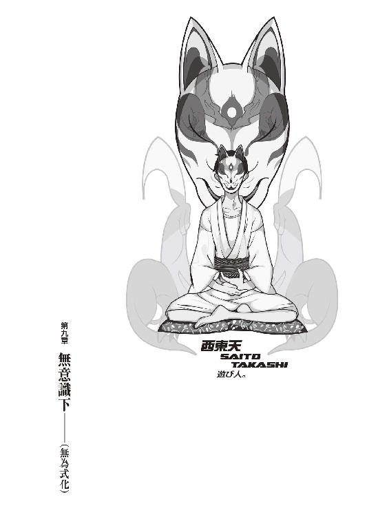
０
彼は彼女が持ってないものを全て持っていて、彼女の持っているものを彼は何も持っていない。
１
アパートを出て三メートルでぶっ倒れた。
貧血だった。
出血多量だった。
失血死だった。
通りがかりの春日井さん（コンビニ帰り。ビールが大量に入った袋を両側に提げていた。駄目大人）に助けられて、彼女と崩子ちゃん（寝ていたのを春日井さんが起こした。グッド・ジョブ）、二人がかりでの治療を受けた。
「──アホですか、あなたは」
寝起きの崩子ちゃんの一言は辛辣だった。
「アパートの前が殺人現場みたいになってます。階段も、それから廊下も。ますます幽霊屋敷みたいになっちゃったじゃないですか」
「ごめん......」
「謝って済むというものではありません。とにかくどこかに出かけるなら夜が明けてからにしてください。切り口が鋭いですから縫う必要はありませんでしたし、その頃には身体も快復していることでしょう」
「どうも......ありがとう、崩子ちゃん」
「いえいえ。どういたしまして」
「いっきー。礼ならわたしに言うんだね」
「............」
突っ込みを入れるのも面倒臭かったので、一応、春日井さんにもお礼を言っておいた。
で、朝になって、右顔面の上下、目を挟む感じでガーゼで固められた状態で、まずはぼくは自分の部屋を漁る。当然、貯金通帳と保険証を探しているわけではない。さて、どこへやったもんだか。一ヵ月ほど放置してたから、どこにやったかよく憶えていない......あ、そうだ。天井裏だ。
「ちょっと春日井さん、椅子になってください」
「......えっち」
「違う」
「やーらしんだ」
「違うからして」
ま、いくら春日井さんの方が背が高いとは言え、考えたら女性を椅子にするというのも、社会的常識に反する話だ。ここで男女雇用機会均等法を説くほどぼくも暇人ではない。ぼくは春日井さんを肩車して（これもこれで、結構嫌な構図だが）、天井裏から目的のものをとってもらった。
「あら。これ......」
「ええ」
それは、二本のナイフと拳銃だった。
ナイフの一本は、これは錠開け用で、殺傷能力は低い。だから刃物というよりは《錠開け専用鉄具》としての性格が強い。もう一本は、これは哀川潤から直式に貰い受けた、恐ろしく頑丈な、しかし驚くほど薄い、医療用のメスにも似た、刀子型のナイフ。そして拳銃はと言えば──ジェリコ９４１。これに関しては、説明の必要なし。弾丸数は41ＡＥが、残り三発。
「懐かしいね」
それらを眺めて、春日井さんは言う。そうか、考えてみればこの人は、先月の事件のとき、これらの武器三つを構えたぼくを相手に、たった一人で立ち向かったようなものだからな。
「きみとわたしのコンビであのにっくき卿壱郎博士をやっつけたときに使った武器だよね」
「記憶を捏造すんな」
ぼくは拳銃の作動、弾丸数などを確認してから、それをドラムバッグに詰める。ナイフは、一本（刀子型）は上半身に装着する型のホルスターに、もう一本（錠開け専用鉄具）は、考えた末、拳銃と同じくバッグの方に入れておくことにした。十分休んだからもう貧血の心配はなかろうが、腰に差したりしていたら、万が一転んだときとかに困る。
「じゃ、行ってきます」
「うん。ところで浅野さんに挨拶してかないの？」
「いや......」
みいこさんは、春日井さんが研究所から一人で帰ってきたときから、ぼくを待ってずっと不眠不休だったようで、ぼくと話してから、お隣の自分の部屋でぐっすりらしかった。
「今会ったら、ちょっと格好悪過ぎなんで......それより春日井さん。ちょっとお願いが」
「何？」
「理澄ちゃんと初めて会ったとき、名刺、抜き取ってたでしょう？ あれ、まだ持ってますか？」
「捨てた」
「..................」
こいつ最悪だ。
「でも内容は憶えてるよ。書き記そうか？」
「さすが理系......そうしてもらえると、ぼくとすりゃありがたいです」
「なんだったらわたしも一緒に行くけど」
「いえ、一人の方が動きやすいんで」
「そ」
春日井さんはさして素っ気も無くそう言う。
「でもいっきー。何て言うのかな......そのままの姿で行くのはまずくない？」
「？ と言いますと？」
「まあきみのような地味で冴えない男を記憶している人がいるとは思わないけど誰か近場の人間に記憶されてたらまずいはまずいと思う」
「ですね......」またもやさらりと侮辱されたような気がするが、確かにそれは言えていた。「じゃあ一応変装みたいなものをしていった方がいいですか。変装か......どうしたもんですかね。髪の毛切っちゃったから、女装がウィッグなしじゃできなくなったんですよね......」
「言ってみりゃ顔のガーゼでも十分だけどさ。でもそれで注目集めてもなんだしね。せめて着替えて帽子でも被っていきなよ。じゃいっきーにおかれましては道中も道後も気をつけて」
「分かりました」
「お土産よろしく」
「ねえよそんなの」
そしてぼくは、バッグを背負い、アパートを出て駐車場に向かい、ヘルメットをかぶってベスパを駆って──
二時間後。
木賀峰助教授の研究室。
元西東診療所に、到着した。
「............あれ？」
駐車場にベスパを停車したとき、フィアットもＺもカタナも、なくなっているのに気付く。どこへ行ったのだろう。まさか《証拠》として、隠蔽工作の際に隠滅されてしまったのだろうか。まさかそんな、空寒い。Ｚはともかく、カタナとフィアットは相当古い型だったので、そのまま廃車にされてしまいかねない。カタナはぼくのではないのでさておくとしても、フィアットは困る。
「うーん......」
考えながら、ぐるりと建物を迂回して、中庭に。
綺麗なものだった。
血だまりもなかったし、
姫ちゃんの身体もなかった。
「..................」
ちょっと覚悟はしていただけに、拍子抜け。
どうやら《処理》、隠蔽工作は終了しているらしい。ぼくが玖渚に連絡したのが......えっと、日にち感覚が少しずれてるな......一昨日の朝になるはずだから、それから四十八時間、まあ、玖渚機関が動き始めて動き終わるまでには、十分な時間だ。
しかし、こうも見事に。
何の痕跡も、なくせるものか。
「これじゃあまるで......」
言いかけて、やめる。言えるわけがない。これじゃあまるで、姫ちゃんが最初から生きていなかったみたいじゃないか、なんて、口が裂けても言えるものか。
血の匂いまで全くしない。
それでも。
「......戯言だよ」
建物を一周するように、正面玄関に回る。
横開きの戸には、鍵がかかっていた。
「......やれやれ」
ドラムバッグから錠開け用のナイフを取り出して、使用する。五秒ほどかかって、鍵は外れた。戸を開け、中に入る。靴がある。朽葉ちゃんの靴。それだけだった。
「お邪魔します」意味もなく挨拶。「では、あがらせていただきます」
まずは......どこかな。
図書室だったか。
それなりに警戒しつつ廊下を歩く──しかし、人の気配というものが全く消えてしまっている。根絶、されてしまっている。ここには朽葉ちゃんがたった一人で住んでいたというから、そもそも気配が薄いのは仕方ないけれど──大方これは《洗浄》の結果だろう。途中に過ぎた、ぼくが壊した実験室の扉も、綺麗に修復されていた。そして辿りつくは図書室の扉──やはり、鍵がかかっている。同じく、ナイフで開ける。
中には、誰もいない。
木賀峰助教授は、本を読んでいない。
木賀峰助教授の、肩は千切れていない。
「......あんま、ここ来た意味なかったかな」
こうも綺麗に片付けられていれば、証拠も何も現場検証も、あったもんじゃない。発想、つまりはインスピレーションを得るための儀式としてはまあ、効果がなくもないのだろうけれど......しかし、これはさすがに行き過ぎだ。
ま、隠蔽工作を頼んだのはぼくだけど。
しかし......朽葉ちゃんはともかく、木賀峰助教授は巫女子ちゃん言うところの《有名人》。一体ことは、どういう風に情報操作されるのだろうか？ 新聞やらテレビやらを見ないことには分からないけれど。あるいはもう既に、全ては終わったことになっているのかもしれない。
終わったこと。
いいさ、何度でも始めてやる。
続けてシャワールームを覗きに、更衣室へ向かう。ここに鍵はない。ドアを開けて中に入って、その奥の扉──こちらには、簡易式の錠があるが、それは中に人がいなければ締められない種類のものだ。だから鍵の心配はしなくていい。
ノブに触れかけたところで、ちょっと、躊躇。
死なない少女。
死なない少女。
死なないとは、どういうことか。
不死身、不老不死。
本当に彼女はあのとき──死んでいたのか？
その可能性。
もしも、あのとき彼女が生きていれば──
生きていたのだとすれば。
「......どうなるってもんでもねーか」
馬鹿馬鹿しい妄想を振り切ってドアを開けた。
上半身と下半身を分断された彼女の死体は──
ここには、なかった。
どこにも、なかった。
「──そりゃ、死んでるよな」
彼女についてのことと次第は、既に玖渚に全てを包み隠さず話してしまっているので──玖渚機関によって回収された彼女の身体は、彼女の死体は、きっとこれから弄繰り回され続けることになるのだろう。
哀れだ。
いや、哀れなのかな？
そんなの──死んでからのことなんて、死んでからその後のことなんて、全て、こっちの勝手な感慨に過ぎない。そう思うのは、そんな風に考えてしまうのは、ぼくが朽葉ちゃんと、そんな仲良くなかったからだろうか？
でも。
彼女に対してこれ以上の何かを思うには、ぼくと朽葉ちゃんとの間には、明らかに、言葉が足りな過ぎた。もっと──もっと朽葉ちゃんとは、色んなことを、喋るべきだったのかもしれない。
時間が、あまりにもなかった。
そう言う他、ないんだけれど。
「..................」
ドアを閉めて、更衣室から出る。
次は、二階。
廊下を戻って、階段を登り──二階。
病室、階段から近い側。
匂宮理澄、匂宮出夢。
匂宮兄妹。
ドアを開けて、中に。
無論──中身は、さっぱり綺麗なものだった。
首を切られ、胸を抉られた死体は、ない。
「参ったなあ......」
来た意味、ないじゃん。
部屋を出て、隣の病室へ。つまりぼくと姫ちゃんが一泊した側の病室へ。こっちの部屋では誰も死んでいないので、見るまでもないとは言えるのだが。
中に入れば、当然、元のままだった。
掃除されたのかどうか、分からない......あ、いや、掃除はされたようだ。ベッドが元に戻っている。布団の中に布団を詰め込んだ、偽の姫ちゃんの形がなくなって、綺麗にベッドメイクされている。綺麗な白のシーツが、ぴっしりと皺一つなく張られていた。
「......ん？」
そういや......あれ、なんだったんだ？
ぼくは起きたとき、それを姫ちゃんと捉えた。あの時点では、もうその中に姫ちゃんがいなかったことは明白だ。だが......だがぼくが、夜に部屋に戻ったときは、どうだったんだろう？ あのとき、ぼくは姫ちゃんの姿を見たか？ 布団に深く潜り込んでいたから、どうかと聞かれれば分からない。しかし見てなかったとしても、そのときもう姫ちゃんがいなかったという保証にはならない、か......。
「保証ねえ......」
ぼくはベッドの上にうつ伏せに寝転んだ。
ちょっと目を閉じて、考える。
考えるというよりも、思い出す、に近い。
「どうして──あれは姫ちゃん自身がやったのか？ 姫ちゃんじゃなく......他の人間が、ぼくに気付かせないために......やったのか？」
だが、どうして。
あんな派手なことをやっといて、誰がやったにしても、あんな派手なことをやり散らかしておきながら、それをぼくにだけは隠しておこうなんてのは......意味が分からないというより、ただ不気味なだけだ。
気にかかることは、それが一つ。
そしてもう一つ。
明らかに、他と較べての違和感。
不自然、超自然。
「あのときの人喰いは......どっちだったんだろう」
夜中、シャワーを浴びて木賀峰助教授と話をした後、階段ですれ違ったときの──あの姿。あれは果たして、出夢くんだったのか、理澄ちゃんだったのか......それとも、そのどちらでもなかったのか。
空っぽのように見えた。
零のように。
「けれど......第三の人格がいるなんてこと──言ってなかったしな。理澄ちゃんも、出夢くんも」
いや、待てよ。
二人ともが全く知らない、関知しえない三人目ということは、考えられないか。理澄ちゃんは、結局のところの《本人》である出夢くんの存在を《他人》としてしか知らない。だとすれば、同じ理屈で三人目がいても......出夢くんも理澄ちゃんも知らない三人目がいたとしても、出夢くんも理澄ちゃんも知らない第三人格があったとしても、おかしくは、ないのかもしれない。
「............ん」
......これはただの思いつきだったけど、そう悪くはない考え方じゃないか？ 二重人格だと思っていれば、実は第三の人格があった。誰も知らない三人目の存在は、それなりに脅威として働くのではないだろうか──《名探偵》としてはともかく、《殺し屋》としては。
それは、使えるトリックじゃないのか。
いや......だとしても子荻ちゃんの情報があるか。あの子荻ちゃんが、千変万化に千軍万馬の子荻ちゃんが、その程度のトリックに気付かないとは思えない。まあ、それにしたって、子荻ちゃんが姫ちゃんに全てを語らなかったという可能性は残るわけだが......敵を欺くにはまず味方からなんて、あの娘に関しちゃ釈迦に説法孔子に悟道もいいところだ。
ていうか、第三の人格、たとえば歪無くんなんてのがいたからって、どうなる？ そんなもの、どうにも何も変わらないじゃないか。人格がいくらあったところで、所詮肉体は一つ、できることも一つ。腕が四本、六本とあるわけじゃない。多重人格の人格増殖トリックは《殺し屋》としてはいいかもしれないが、この事件そのものについては、特に考える必要はなさそうだ。
だとすると、困るな......。
いきなり、手詰まりだ。
「......哀川さんにバレるまで......あと三日ってたから......えっと......いつから三日なのかが微妙なところだけれど、まあ、明後日ってところかな」
できればそれまでには片付けたい。
本当を言えばこちらから連絡するのが筋なのかもしれないけれど......正直なところ、向ける顔がないというのが本音だった。しかしそういう保身の意味での思考を差し引いて、それでまるっきり残りがなくなるわけじゃない。仮に哀川さんに出張ってこられたら、一気に全てを、完膚なきまで徹底的に、草一本残さず今回の事件を解決されてしまう。
それは、御免だった。
ぼくは──とにかく、何かをしたかった。
それは、ひょっとしたらエゴなのかもしれない。
姫ちゃん自身が何を望んでいるかなんて、ぼくには分からない。死んだ人間の思考を追おうなんて、それこそエゴだ。まして、死んだ人間を言い訳に使おうなんてのは、最低だ。エゴは、よくない。
よくないけど。
「できるだけのことはしてあげたい──ね。ふん、随分とまた、言い訳臭い言葉......」
と。
そこで、物音を聞いた。
寝転んだベッドから身体を起こしこそしなかったものの──一気に身体中に緊張信号が伝達した。今の音は......何だ？ 玄関の戸が開く音か？ 過敏になり過ぎている神経を全力で働かす。物音。物音。物音を捉えろ、集中しろ。
きし......きし......きし......きし......きし......
廊下を──歩いているのか。音が止まる。と思えば、襖の開く音。閉じる音がなく、間隔を開けて、どこかの戸が開けられる音が続いた。
......部屋を、検分してる？
玖渚機関の人間か？ 馬鹿な、どう見ても処理は全部、完全に終わっているはずだ。それにここに来る前、ぼくは玖渚に一報を入れている。何か動きがあるのなら、そのとき玖渚はぼくにそう教えてくれているはずだ。
ぎしっ
と、階段を踏む音が聞こえた。ぎしっぎしっぎしっぎしっと、音が続く。二階に登って来ている。ことここに至ってさすがにぼくは身を起こし、ベッドから降りた。ホルスターからナイフを取り出す。
隣の部屋の扉が開く音。
順番にチェックしているのか？
閉じる音。
次は......ここに来る。
ナイフを構えた。銃を取り出す暇はなかった。
「........................」
扉が開くのを待った。
そして。
「────ん」
開いて。
そこには、狐面の男がいた。
狐の仮面に、白装束。
「お前は......どこかで」曖昧そうに首を捻る狐面の男。「ん。いや、そうか。表のベスパ......見覚えがあると思えば、そういえばナンバーが同じだったな」
「......あなたは」
「『あなたは』。ふん」
狐面の男は仮面をずらし、ぼくに素顔を晒す。ぼくの知っているあの人によく似た、その顔と瞳で、ぼくを見下ろした。
「こんなところで縁が合致したか......興味深いな。そうは思わないか」
「あ、いえ。ぼくは──」
「とりあえずその物騒なものを降ろせよ」
「あ。はい......」
「くっくっく」
狐面の男は。
犯しそうに、笑った。
２
病室から例の待合室へ移動し、ぼくと狐面の男は、二人で向かい合って卓袱台を挟み、座布団に座った。キッチンでぼくがお茶を淹れ、出す。狐面の男は仮面を取って、そのお茶をすすった。
「理澄と出夢が帰ってこなくてな」
「ああ......今は、あなたのところに世話になっているって言ってましたね......そう言えば」
「俺も別に京都が地元というわけではないのだがな。根を張っている一部というだけで......で、理澄には仕事を頼んでいた。《ここ》について、木賀峰......助教授、の、研究について調査をしてくれ──と、な」
「............」
「で、帰ってこない。となると恐らく、《ここ》で何かがあったはずだと踏んで、寄ってみたわけさ」
「例のポルシェで、ですね」
「ああ。特にこだわりってわけじゃあないが、ありゃ、昔っからのお気に入りでね」
「あの......狐さんは、出夢くんのこと、知っていたんですよね？ 《理澄》の匂宮と《出夢》の匂宮......その表裏一致原理を」
「『表裏一致原理』。ふん。いい表現だな。慣れている風だ」狐面の男は言う。「まあ──そりゃ、一通りはな。知っていると言えば知っている。でないと、あんな奴を飼っていたりはしないさ」
「............」
「本来ならこんな田舎まで脚を伸ばしたくはなかったんだが──どうも何やら、隠蔽工作がなされているようでな。理澄がここに来た事実からして、消滅している。そうなると遠くからじゃ話にならん。ゆえにこうして脚を運んでみたわけだが──さっき『言ってました』と言ったな」
「............」
「お前は、何か事情を知っているようだな」
狐面の男は確信的な口調で言う。
「教えとけよ」
「......事情......と言いましても」
おかしい。
玖渚機関が隠蔽工作を行ったというのに──たとえ、まだその最中なのだとしたところで──こんな男が、こういう風に現場に現れるのは、おかしい。ぼくはさっきから、ずっとそれを考えていた。大体、隠蔽工作とは隠蔽と察せられないからこその隠蔽工作であって──なのにどうしてこの狐面の男は、それを察している？
どうしてだろう。
おかしい。
異常だ。
有り得ない。
もし可能性があるとすれば......そう、この男が──玖渚機関の政治力の、その外側に位置しているから、としか──
そんな推測が、ぼくを緊張させる。
気をつけろ、油断するな、と。
そして──同時に。
同時にこれを逃がしてはならない、と思わせる。
何か──ヒントがあるかもしれない。
匂宮兄妹の雇い主である、この人には。
「えっと──あなたがここに理澄ちゃんと出夢くんを送り込んだとき、ぼくもその場にいたんです。バイトの適性試験ってことで......」
「──ふん。成程。それで」
「その話をする前に、一つ」先を促す狐面の男に、しかし、ぼくは慎重を期して、口を開く。「憶測で立ち入ったことを言ってしまって、いいですか？」
「聞こう」
「あなたは......ここが診療所だった時代の長である、西東さん──とやらの、関係者、なんですか？」
「......ほう」狐面の男は、脇に置いていた仮面を被り直す。「あの二人──から、聞いたのかな。しかし、どうしてそう思うのか、聞こう」
「あてずっぽうに近いですよ......木賀峰助教授と朽葉ちゃん、それに加えて出夢くんの話から、適当に類推しただけです。それと、この前の、木賀峰助教授の名前を聞いたときのあなたの反応......最後に、理澄ちゃんと出夢くんに出した指令。《この研究室を調査しろ》と、その裏に隠された《木賀峰約と円朽葉を殺せ》。類推材料は、そんなところです」
「どいつもこいつも口が軽い......」狐面の男は一種呆れたように言う。「特に、匂宮兄妹。使える《奴ら》だったが、しかし......どちらもどちらで、テンションが高過ぎるところがあったからな。かといってクール過ぎるのも考え物だ......特に、そのクールが薄っぺらな上っ面、内に熱い性質を秘めている場合は......今思えば純哉など正にそのいい例だったな」
「純哉？」
「ん。いやすまん、昔の親友の名前さ。根暗な癖に妙に情熱的な奴でな。本当、手に負えなかった......ふん。ま、お前も精々心がけておけ。何にせよ、ノリは軽い奴の方が使えるってことなのさ。無論、絶対条件として、そこそこクレバーでいてくれないと、困るがね。ただの馬鹿じゃどうしたって使えん」
「............」
「ところでさっきのお前の質問だが......それは、半分の意味でしかイエスとは答えられないな。ノーと言うにも、やはり半分以上の意味は含められない。何故なら──俺が正に、その《西東さん》その人だからさ」
「え......」
「驚いたかい」
肩を竦め、おどけるような動作を取る狐面の男。
そして続けて、ぐるりと、辺りを見回した。
「ここは変わらないな......まるで、時間の流れが停滞してしまっているかのようだ。ここは、二十年前から何も変わらない」
「二十年......」
それは──多分、朽葉ちゃんの想いの、賜物だ。
彼女はずっと──その二十年間の間ずっと──ここを、管理してきた。ここを──自分の身と同様に管理し──停滞、させ続けてきた。
何のために？
それは、きっと。
「当時の俺は二十歳になるかならないかくらいだったがな。高大で教授職をやっていた......自分で笑えるくらい、色物の仕事だったがね。客寄せパンダってところさ」
「............」
小学生の段階で博士号を取得していた人を知っているから、今更二十歳で教授くらいでは驚かないが、しかし、この男がそのまま《西東》......木賀峰助教授の恩師であり、朽葉ちゃんにとっても《恩師》である人間そのものだとは、全く思っていなかった。完全に予想外だ。
にわかに、ぼくは言葉を失う。
一方、狐面の男は雄弁に続けた。
「俺にしてみりゃ、教授職はむしろ副業で、ここで開いていた診療所の方が本職のつもりだったが──世間の評価はいい加減でね。誤解と曲解、どうしたところで避けきれるものじゃあねえよな。さておき、木賀峰......約。それに、円朽葉。懐かしい......というか、ついこないだお前にその名を聞かされるまで、俺はすっかり忘れていたんだがね。まさかまだ、こんなところに閉じこもって俺の続きをやっているとは、思わなかったよ」
「......二人は、あなたを待ってましたよ」
そうは言っていなかったが。
それでも、あの二人は何かを待っていた。
何かを。誰かを。
狂おしくも、愛おしく。
「仕方ねえだろ。すっかり忘れていたんだから」さばさばした口調で言う狐面の男。「まあ俺もどうかしている──《京都》って時点で思い出すべきだっての。考えてみれば今の俺の源泉みたいなところは、あの《死なない少女》にあったわけだからな──人間、意外と起源なんざ忘却しているもんだな。驚いたぜ」
「......忘れていたのは、ともかくとしても」ぼくは言う。「あなたが西東さんだというなら尚更どうして、二人を殺そうと？ どうしてそんなことを──出夢くんに依頼したんですか？」
「誤解があるな、語弊があるな。別に殺そうとしたわけじゃないさ......あいつらは、二十年前に既に死んでたようなものだからな。もし死に損なっているようだったら、とどめをさしてやれ......と、そういうニュアンスで頼んだつもりだったのだが......。前にも言ったろ？ 俺が若く未熟だった頃の、後始末さ。希望を煽っちまった責任は──取らなくちゃ、ならない。まあ、出夢にはそんなことを言っても通じんか。他人の話なんて半分の半分の半分くらいしか聞いちゃいない奴だからな」
「......出夢くん」
「だからこそあいつには理澄のフォローが必要なわけだが。出夢のあれは、あいつは暴力というより既に一個兵器だ。一騎当千どころの話じゃねえ、使い方さえ誤らなきゃ、一人で戦争ができる狂戦士だぜ。あいつが両腕を拘束している理由は聞いたか？」
「えーっと──そうしないと自分でも制御しきれない、みたいな話は聞きましたけど......」
「匂宮出夢、《人喰い》の出夢の伝家の宝刀、一撃必殺技に《一喰い》ってのがあってな......それが、普段封印している左右の腕を使って繰り出す人外業なんだよ。正直、この俺でさえも目の前でそいつを見せられたときにゃあ震えたね。歴史ある匂宮の中でも奴は最高傑作と言えるだろう......もっとも、それはあと数年後の未来には、だが。最高傑作を名乗るには、まだ歴史と称号が足りない......加えて無論、そのときにも、理澄のフォローは、必要不可欠だ」
「理澄ちゃん......の方の身......身ってのも変な言い方ですけど、そうなったとき、理澄ちゃんは、危ないんじゃないですか？ フォローなんて言っても、彼女の側には、戦闘能力がないのでしょう？」
「......分かってないね。俺がむしろ怖いと思うのは、出夢よりも理澄の側だぜ。あんな赤子同然のガキをよ......あんなよわっちいガキを、あんな可愛らしい小さなガキを《殺す》ってのは、お前、そりゃお前が考えている以上に、耐えられない行為だぜ。敵でもない弱者を潰す罪悪感、人の形をしたものを殺すこと、その意味は分かるだろう。事実お前だって、ついつい、恐らくは『柄にもなく』、理澄を助けたりしたようだしな」
「............」
「弱さゆえの強さ......強いは弱い、弱いは強い。そんなことを、出夢は言ってなかったか？ 探偵としても、まあ能力がないわけではなかったが......しかしより効果のある意味合いとしては、理澄は出夢の防御壁なのだな。肉体的な意味でも......精神的な意味でも」
「......でも、それじゃあ、理澄ちゃんは──あまりにも、可哀想ですよね。いや、作られた人格に対して可哀想だなんて、おかしなことを言っているかもしれませんが──」
「可哀想、ねえ──お前は割と目端が利く模様だが、しかし肝心なところが、分かっちゃいねえよな......」狐面の男の口調は、あからさまにぼくの無理解を馬鹿にしているようなそれだった。「お前さ、匂宮兄妹、殺戮奇術の匂宮兄妹において、出夢と理澄、どっちのが《表》、どっちのが《主人》だと思ってるんだ」
「そりゃ──出夢くんでしょう」
「間抜けが」
小気味いいほどに一蹴された。
狐面の男は続けて「くっくっく」と嘲笑する。
「出夢も理澄も、人為的に創り上げられた、故意に《強さ》と《弱さ》に分裂された人格だと言っても──あいつらが殺し屋である時間なんてのは、全体的に見りゃあほんの僅かだぜ。殺人鬼じゃねえんだから、四六時中、二十四時間絶え間なく人ばっか殺してるわけじゃないんだ。つまり──《人喰い》が《表》──一般社会という意味での《表》に出てこられる時間なんて、ほんの僅かなんだ。《影》は──うしろがわは、むしろ、出夢の側だ」
「............」
「《人喰い》の時間の方が、匂宮兄妹には圧倒的に長い。時間が全てだとは言わないがな──表とか裏とか言ってもよ、どっちもどっちなんだよ、あいつらは」
「......二人で、一人」
「一人が、二人。匂宮兄妹さ」
支えあっている──
というのには、関係が一方的過ぎる。
そう思っていた。
けれど、そうじゃない。
出夢くんにとっての理澄ちゃん。
理澄ちゃんにとっての出夢くん。
考え方の──問題じゃ、ないんだ。
それはもう、理屈じゃないんだ。
ぼくは、少し、考えさせられた。
狐面の男は「ふん」と、区切りを入れる。
「話が逸れたな。戻せよ」
「......ああ──そうですね。じゃあ、質問しますけれど──木賀峰助教授と朽葉ちゃんが《死に損なっている》というのは、どういう意味ですか？」
「言葉通りの意味だよ。あんまり部外者に説明するようなことでもねえんだよな......まあお前はそれほど部外者というわけでもないか。俺の訊きたいことだけを訊き出すというのも、無体な話だ」狐面の男はそう前置きしてから、言った。「あいつらはな、俺が二十年前に殺したはずだったんだ──いや、違うかな。世間的にみりゃ《見捨てた》って言い方が正しい──《見切った》。そう、この言葉だ......これが正解だ。《俺》は《あの二人》を、《見切った》」
「......まだ、よく分かりません」
「《死なない研究》。ありゃ、元々俺のテーマでね......朽葉辺りから聞いているだろうとは思うが、俺のテーマだったんだよ。そうだな、少し恥ずかしい話をさせてもらおうか......二十歳そこそこ、つまり今のお前さんの歳──くらいか」
「ぼくは十九歳と、半年です」
「『ぼくは十九歳と、半年です』。ふん。ならばぴったりそれくらいだ......当時の俺は、とてもとても《死にたくなかった》。端的に言えば長生きしたかった」
「......はあ......」
それは誰でもそうじゃないのかと思ったが、考えてみれば、二十歳やそこらでそういう考えに取り付かれるというのは、案外珍しいかもしれない。ぼくがどうこうと言うのではなく、若い人間、未熟な人間というものは、結構虚無的なものだ。長生きに意味を見出すのは、もう少し先、老成してからの話になるはず。
「一度計算してみたんだよ。俺が興味を抱いていること、その全てを全て、あますところなく完全に知るためには、どのくらいの時間が必要か──算出されたのは天文学的な数字だった。少なくとも、人間の寿命の限界とされる百二十年程度では、まるで足りない。この俺の思考速度、演算能力を持ったところでだ。アホな計算しちまったもんだぜ」
「はあ......」
「死ぬのが怖かったわけではないがな。生きる時間が足りないのが、怖かった。知りたいことを知らないままに終えてしまう。知らないことがあるままに死んでしまうなんて、それは、御免だった」
「それで......《死なない研究》ですか」
「朽葉に会えたのは、いわゆる《ただの偶然》だった──ただの、偶然。ま、俺以前に朽葉を飼っていた奴からのツテ、とだけ言っておこうか」
「......研究者繫がりってことですね」
「いいや。その前の朽葉は、どちらかと言えば、成金のペットという感じだったな。──ちなみに、お前、朽葉と会ったようだが──朽葉は、どんなだったかな。何歳くらいに見えたかな」
「十七......十七、十八ですか。それくらいです」
「ならば俺と同じだ」狐面の男は言う。「俺と初めて会ったときも、朽葉はそのくらいの外見年齢、そのくらいの肉体年齢だった。信じられないってんなら、あっちの診療室......今は《実験室》だったか、そこに行ってみな。多分写真が残ってるさ──二十年前のな」
「じゃあ......ペットってのは」
「そういう意味だ。お前がイメージしている通りのえげつなく暗い地獄のような意味であっている。死なない人間なんざ、どうよくっても珍獣扱いってとこだったんだろうぜ。それでも化け物扱いされてなかっただけ、まだ人道的か......五体満足で生きてるだけで極楽さ。買うのには、多少金がかかったぜ。あちらさんも朽葉にゃあ愛着があったらしくてな......どんな形にせよ、愛されるってのは悪いことじゃないのかもしれんが、お陰で買値はとんでもなく跳ね上がった。この俺が溜め込んでた財産、全部吐き出さなくちゃいけないほどにな」
「............」
人権とか、倫理とか、関係のない話だな。
問題が問題だし、仕方ないか。
「で......俺は半年ほど、朽葉と共にいたが......理解者であった木賀峰やらにも手伝ってもらいつつな......ふん。木賀峰か。あいつとは何故か気が合ったな......あれでもしもあいつに才能があれば、その先を一緒に歩むこともできたろうに......まさかあの先を、一人で続けていたとは。無能は、人間の悲劇だな」
「どうして......朽葉ちゃんの研究をやめたんですか？」
「無駄だと気付いたからさ」狐面の男はきっぱりと言う。「ありゃ、一代限りの変種だ。あいつ自身には約六十年分の記憶しかないが──まあ、脳の容量的にそれが限度らしい。容量ってより、単純な記憶力かな。お前だって十年前のガキの頃とか、記憶ボケてんだろ。そんな感じさ──朽葉は八百年、催眠療法で調べてみた俺の見立てじゃ八百年近く生きていて、それ自体は高く評価されるべき《現象》ではあるが......くっくっく、八百年生きてる割にゃあ随分俗っぽい性格してたとか思ってそうだが、お兄ちゃん、八百年だろうが千年だろうが、生きてるだけで悟りが開けりゃ誰も座禅は組まねえぜ。外見の先入観ってのもあるしな......ふん。八百年。高く評価されるべき《現象》ではあるが──しかしあいつの存在は、後に絶対、続かない。そもそも朽葉は、人間としては完全に近い能力を備えていたが......身体は健康そのもの、免疫を作る能力も高い、快復能力も再生能力も度外れているが──生殖能力が欠けていた。要するに、子孫を紡げない。クローン人間でも作れば話は別だが......それでも、朽葉の異形な細胞を全く同じようにコピーするだけの精密な技術が必要とされるな。要するに、あいつの《不死身》、他に応用が利かないんだ」
「......それで、見切った」
「あいつらにゃ、そうは言わなかったがな。見切られたという認識もなかったかもしれん──ふん。だが俺は別に、それによって目的を諦めたわけではない......次なるステージに移行しただけだ。もっともその次なるステージも、失敗でな......失敗どころじゃない、あれは本当に大失敗だった。それについちゃ、前に言ったよな。今はその次......の、次の、もう一つ次のステージってところか。それが理澄に依頼した零崎人識の捜索だったのだが......どうやらそれも不発、その上今回の件、ちらっと後始末するだけのつもりが、どうしたことか理澄も出夢も帰ってこねえし、さーてどうしたもんかと思ってるところさ」
「............」
零崎人識。
あいつが......そんな位置に？
「まあ俺のことは俺が考えりゃいい話だからさておくにしても......あの二人がまだ続いていたとは、少し可哀想な話だろう。少々ポンコツじゃああるが、俺にも人情くらいはあるのでね。なんていうのかな......コンピュータがずーっと円周率の小数点以下を計算している図を見たときの気分というのか......水飲み鳥の悲劇というのか......底の抜けたひしゃくで水を汲み続けている妖怪だとか......永遠に地球の周囲を回転している機能を終えた人工衛星とか......そういう種類の切なさを、見た気分になる。どの道、俺が依頼しようがしまいが──何も変わらないさ。《物語》に従って奴らは、違う地点で死ぬか、死体同様のライフを送るだけだろう。死に損いが、死ぬか、死に損なうか、さ。ならば、いっそ死ぬ方がまだマシだろうと、俺は考えた──情けだよ、言ってみりゃあ。介錯って奴かな。ぶっちゃけ、自分の過去を消しておきたかったというのもあるがね」
「《物語》に従って──ですか。あなたは、その程度の、そんな理由で、人を二人、殺そうと？」
「どんな理由なら、人を二人、殺せるかね。二億人くらいになっちゃあ、正義やら平和やらの看板を掲げなければ、殺せないだろうがな。同じことだし、俺にとっちゃ、これで十分だが」狐面の男は悪びれもしない。「それに、その内一人は、人じゃあない」
「......ですね」
「ほう。モラルにのっとった文句の一つでも、覚悟していたのだが、意外と冷静だな」
「あなたに言っても無駄そうですし。それに......」
「それに、俺の計算通りに、ことは運ばなかった」
狐面の男はぼくを指さした。
「俺の説明はこんなものでいいだろう。あまりに微に入り細を穿った説明を為せば、あの二人のプライバシーを侵すことにもなる......それに、古い話だからな。二十年も前、俺の記憶違いというのもあるだろう。個人的な話の記憶違いほど、寒いものはない。そろそろ、お前が知っている事情って奴を、聞かせて欲しいのだが。出夢と理澄は、一体どうしちまったのか、教えろよ」
「分かりましたよ......」ぼくは言う。「でも、それに関しちゃこっちも同じで......個人的な話を混ぜたくありませんから、大雑把な粗筋になっちまいますけど、それでいいでしょうね？」
「構わんよ。俺もうぜえ話は聞きたくねえ」
「では、話します」
ぼくは、十五日の夕方から、十六日の朝方にかけてまでのあれこれを──狐面の男に、大体のところを、説明した。たとえ狐面の男が、玖渚機関の隠蔽工作の外側にいるとは言え、真実に何が起こったのか自体は、それこそちぃくんに頼るでもしなければ分かるわけもなく......狐面の男は、たまに合いの手を入れる程度で、ぼくの話を聞いていた。仮面の下の表情など読み取れるわけがないが、概ね最後の最後まで、興味深そうな感じだった。とりあえず、というか、そこまで話す義理はないだろうと、隠蔽工作を行ったのがぼく（というか玖渚機関）であることは伏せて、その辺は適当に噓を織り交ぜておいた。
「ふん」
全てを聞き終え、狐面の男は言う。
「そうか──二回殺された、匂宮兄妹、ね」
そう呟く狐面の男は──まるで、平生通りに思えた。悼んでいる風もなく、ただ、事実を確認しているかのように。
「......少しだけ、質疑応答の時間をとってもらってもいいかな。お前の話には情報が致命的に足りなかったところがいくつかある」
「少しなら、構いませんけれど」
「その紫木一姫......聞いた名だ。確か《危険信号》などと呼ばれていた存在の名が、そんな感じだったと思うが」
「いや、それは、そんな風に呼ばれていたかどうかは、知りませんね......そんな、立ち入った関係でもなかったんで」
「『立ち入った関係でもなかったんで』。ではこういう言い方はどうかな......その紫木一姫、市井遊馬、《病蜘蛛》と呼ばれる異形の存在とコンビを組んでたことはなかったかな」
「......知ってるんですか」
《匂宮》の殺し屋を手飼いにしているくらいだから、澄百合学園のことくらい知っていても、まあ不思議じゃないけれど。しかし《人喰い》の出夢くんでさえ、紫木一姫という名前だけでは、そこまで辿りつけなかったというのに──
「やはりそうか。ならばその娘、紫木一姫は《曲絃糸》を使える......それも、《病蜘蛛》に匹敵せんくらいの腕前で、な......」
「......それが、何か？」
「いや、お前の顔の広さに驚いているところさ。木賀峰や朽葉だけでなく──あの《病蜘蛛》の弟子のことまで、心得ていたとは」
狐面の男はもったいぶった風に矯めて、言う。
「偶然にしては──出来過ぎだよ、な」
「......偶然でしょうよ。そんなの」
「ふん。そうかね。──お前はひょっとすると紫木一姫が死んだ責任が自分にあると思っているかもしれないが──それは違うぞ。そこで死んだってことは、どうせいつかどこかで死んでしまう身だったってことさ......《危険信号》の名にのっとって、な。たとえここで死ななかったところで、いずれお前にとって『死』んだのと同値の意味を持つ種類の別離が待っていたはずだ。お前が悲しむべきは、紫木一姫の死、そこに関わっちまった自分自身だな」
「それは......」
否定できるのか。
今狐面の男がぼくに言ったことは、ぼくが出夢くんに頼んだこと──木賀峰助教授や朽葉ちゃんを殺すのなら、ぼくの知らない、ぼくとは関連しないところでやってくれと、頼んだこと──ぼくの前でだけは人を殺さないでくれと頼んだこと──それと、意味はそんなに変わらないんじゃないのか？
たとえば姫ちゃんが交通事故で死んだとか、病気で死んだとかなら──ぼくは、ここまで脚を伸ばさなかったのではないだろうか？
でも。
そんな仮定に。
そんな後悔に、どんな意味がある。
「意味はないさ......意味なんてない。意味があるのは結果の集積による過程だけだ。つまりはストーリー、物語だな。木賀峰も朽葉も、同じだよ。物語の中の一編で、連中が死のうが死ぬまいが、どうせ死んだようなもの、そういう物語の筋書きだったのさ」
「物語──物語、ですか。さっきも──前にも、そういうことを言ってましたね......」
「お前はまだその、物語の存在を軽く見ているところがあるな。まあ、別に信じてもらわなくてもいいんだが......だがな、たとえば。前に聞いてた話によりゃあ、お前と出夢が出会ったのは《ここで》が最初じゃなく、どこか別の場所で会っていたようだが......ああ、これが二番目の質疑だ。お前が出夢と最初に会った場所は、どこなんだろうな」
「......ええっと以前、夜、行き倒れてる......ところを、見つけました」
「なるほどね。そうそう、そんなところだろうさ。なあ、お兄ちゃん。それも、偶然にしちゃあ──出来過ぎだと、思うだろう。出夢の行き倒れを助けたその少し前に、理澄の行き倒れを助けていた、とは」
「いや......そうじゃありません。理澄ちゃんを助けたのは、その、途中で帰った生物学者の人です」
「ああ、春日井春日ね。それも有名人......有名な《変人》だがな。関係ないさ。その春日井春日が拾わなかったら、お前が拾っていた。お前が拾わなかったところで、誰かお前の友達が拾って、お前の知るところとなったろうぜ。そうでないと──」
「物語が、進展しない」
断言するように喋る狐面の男。
「............」
「ああ、それと......理澄は行き倒れで正しいが、出夢のは正確にゃあ《行き倒れ》じゃねえぜ。あいつのは、《狩り》だ」
「......狩り？」
「殺し屋稼業が身につき過ぎてな。あの拘束衣は《狩り》の際にやり過ぎちまわないように課した枷、なんだ。あの世界の住人にしちゃあ、そう珍しくもないよくある話なんだが......特にあいつの場合、自身の《弱さ》をほとんど理澄に担当させちまってるからな。日常的に人と狩りあってなきゃ、日常的に人と喰い合ってなきゃ、てめえの人格が安定しないんだ」
「............」
殺戮は一日一時間。
......まるっきり道化の言葉じゃなかったか。
「殺戮仕事が勢い余って殺戮好き、それが行き過ぎての殺戮中毒ってところだな。殺戮奇術集団匂宮雑技団でももてあましていたところを、この俺が拾ったというのが正しい」
「へえ......」
なんか、また、違う世界の話だ。
一体この狐面の男──
どの世界の住人なのだろう。
「その《狩り》の獲物に、よりにもよってそのお前が選ばれていたという焦点......それをどういう風に考えるかね。物語の一環なのだと俺は考えるが、お前は考えないのかね。分からないかな......こいつは確率の話じゃないんだよ」
「確率の話じゃない？」
「ちっとも確率の話じゃない。前にも言ったろ、バックノズルにジェイルオルタナティヴ。お前は、ここ、この場所で俺と再会したことを、ただの偶然である──と考えるかもしれないが、そうじゃない。お前は今の時点で既に木賀峰約および円朽葉と浅からぬ因縁を持ってしまっているし──木賀峰がお前に関心を持った理由にもまた、俺が絡んでいる。俺とお前との間には、匂宮理澄、匂宮出夢、木賀峰約と円朽葉が、フローチャートの分岐として存在していた──これで俺とお前が再会しない方がおかしいぜ。どうあったところで、最終的に、俺とお前のつじつまはあっていたのさ」
「つじつま──ですか」
「強いて言うなら、これは不確定性原理だよ。どれかが正解なのではない......全てが正解なのだという世界。世界と人間とを量子レベルにまで分解し、積分し、微分し、それを解釈し、最終的には証明する。現時点での俺の目的はそう表現するのがもっとも近い──言葉で表現するのはこれが限界だ。そう──どうあったところで結局のところ全てが、定められた一点に向かって収斂していく。フローチャートは無限に分岐していても、最終的にはたった一点に向かって収束する。その最終焦点を──俺は、ディングエピローグと呼ぶがね」
「............」
「俺は、それを見たい」
狐面の男の口調。
それは、決して夢物語を語っているそれではなかった。真面目も真面目、大真面目といった口ぶりで、しかも、反論を許さない空気だった。
「......ぼくにゃ、途方もない話ですね......」しばらく考えた末、ぼくは、正直な気持ちを告げた。「もしもそうだとしても──あなたの話が正しいとしても、その物語に、ぼくの登場する余地はありませんよ」
「『ぼくの登場する余地はありませんよ』。ふん。言われなくとも、俺にとっても難題であることには変わりはないさ......量子力学の世界において観測者になるなんてのは、根本的に撞着しているからな」
「......質疑は、以上ですか？」
「ん......ああ、そうだ。その二点だけだ、気になったのは」狐面の男は頷く。「もっとも、二番目の質問はただの興味で、ことの真相に重要なのは一番目、紫木一姫に関する質問だけだったがな──ふん。なるほど......そういうことか。ま......分からない話じゃないな。籠の中の小鳥は、いつまでも小躍りだけじゃ、納得できないものだ。ふん、その気持ち──まあ、分からんでもないか」
「......は？」
「いや。有難う、礼を言わせてもらう。これで気分はすっきりした。俺は帰ることにするよ......お前もさっさと帰ることだな。こんなところにいても、何の益もない。ここは──
既に、終わった場所だ。
最早、物語に何の関係も持っていない」
「......でも」
「大体、もうお前も確認したんだろう。誰がやったんやら知らねえが隠蔽工作されちまってて、ここにはもう、何の痕跡も残されていないということは」
「ですが......あなたは気にならないんですか？ 自分が依頼した《殺し》が、こんな形で滅茶苦茶にかき回された結果に終わったことが。そうじゃなくても、自分と浅からぬ縁のあった理澄ちゃんと出夢くんが......」
「さっきまではそうだった。だからここに来た」
狐面の男は言う。
「だが、それももう、終わっている」
「不明は、圧倒的なまでに、最早皆無だ」
「............え？」
「正直痛いというのもあったがな──それに、《十三階段》の中でも出夢と理澄は特に俺によく尽くしてくれた二人だ。こういう感情はなんていうんだっけな──執着、そう、執着か。未練、そう、未練か。その意味で多少思うところはないでもないが、終わってしまったものは、さすがにどうしようもない。俺はできる限りの音が立つよう拍手を打って、沈黙のままに席を立つだけさ。沈黙──くっくっく、まさに沈黙。理澄も出夢も、またそれを俺に望んでいるようだし──長ェ付き合いだ、それくらいは餞別代わりにくれてやるさ」
「って、ことは、狐さん、つまり......」
「ああ......言っておくが俺は理澄と違って名探偵とかいう変態な異形人種じゃないからな。推理やらなにやらで解答を導き出したってわけじゃない。ただ......」狐面の男は言葉を選びながら、言う。「俺が事前に知っていた情報を、お前の話に組み込めば、何があったのかくらい、大体の想像はつくということさ」
「大体って......」
「大体、さ。隠蔽工作をやったのがなにかなんてことは分からねえままだ。ふん。大体の想像──正に想像だがな。こうも綺麗に掃除されてしまえば、証拠も根拠もへったくれもない。それにお前の話が全て本当だとは限らないし、更には俺が事前に知っていた情報というのも本当なのかどうか、分からないという可能性もある──ま、最後のは韜晦で言ってみただけだが。世の中には韜晦の通じん阿呆が数多いるが、見たとこお前はそうでもないだろう。要するにはただの無責任な憶測ってことになるけれど──しかしま、それでもまず間違いはないだろう」狐面の男はそこまで言って、座布団から立ち上がった。「と言っても、俺はそれをお前に教えてやるわけにはいかないな。世の中には望まれたからといって教えてはいけないことと、訊かれたからといって答えてはいけないことがあるんだよ。最低限、人の秘密を、べらべらと吹聴すべきではない──それくらいは分かるだろう。俺はあいつらと違って、それなりに口は堅いんだよ」
「............」
それは、分かる。
分かり過ぎるほど、分かっている。
「だが考えて答が出ないというタイプの問いでもないさ。だからお兄ちゃん、こんなところで考えるより、家で考えた方がずっといいと思うぜ。こんな終わった場所にいても、気が滅入る一方だ。お前は俺が来なけりゃ、これからどうするつもりだったんだ？」
「どうする......といいますか。とりあえず」ぼくはドラムバッグを見る。「最初に理澄ちゃんに会ったときに貰った名刺に書いてあった住所に行ってみようかなって思ってました──」
あわよくば。
それはあわよくば、あなたに会いたかったから。そこで何か、何でもいいから、住処やらなにやら、そういう具体的なものではなくとも、とにかく、あなたに繫がる情報を探そうと思っていたから。
でも、それは言わない。
それを言えば──認めてしまうことになる。
ここでたとえ狐面の男と鉢合わせすることがなくとも──結局は、今ではないいつか、ここではないどこかで、今ここで交わした会話と同じ会話を、交わすことになっていたということを──認めてしまう、ことになる。
「そりゃ無駄だ」狐面の男はあっさり言う。「その住所は出鱈目だとは言わないが、ただの仮住まい。匂宮兄妹にとって数あるアジトの一つに過ぎん。電話したところで、二十四時間年中無休で恥ずかしげもなく留守電だよ」
「......そっすか」
ぼくはため息をついた。
早くも手詰まりといった感じか......こうなれば、玖渚か直さんにでも頼んで、直接《処理》を行った玖渚機関の人達に話を聞くくらいしか、本当に手がない。玖渚がかかわってない事件だといっても、それでも玖渚機関の手を借りるのはあまり気がすすまないのだが、それしか手がないというのなら──だがそれでいいのだろうか？ 狐面の男のいうことが真実だとしたら──これは、そういった努力、そういった労力で解かれる類の問いではないのではないだろうか。
インスピレーション。
発想の飛躍。
撞着理論。
必要なのは、机上の論理。
論理以上の方法論。
論理異常の魔法論。
食わせ物の魔法こそが、必要だ。
「──だけど、そういう、ただのその場限りの思いつきに近い、能書きもどきの戯言なら、ぼくの得意分野ですよ」
「そうかい。だったら、時間の問題だな。お前が解答に辿り着ける人間なら、どうあったところでいずれ辿り着けるだろうよ」
「ええ......でも、いずれっていっても、あと二日くらいしかないんですけれどね。自分で定めた期限まで」
「自分で決めたことなら、精々努力するさ。俺も、心配事が一つ消えて、次なるステージに安心して向かわせてもらう......どうしたもんか、まだ足場は定まっていないがね。このアプローチの方法論が間違っているとは思わないが──しかしキーがなければ扉は開かん、か......キーというより、この場合存在してないのはノブなのかな......」
「............」
次なるステージ。
ステージ。
ポイント。
訊くか、訊かないか。
ぼくは逡巡したが、ここを逃せばもう機会はないと思い、訊いておくことにした。
「......理澄ちゃんに調べさせていた《零崎人識》って男......のことですけど、さっきの話を聞けば、ただの興味で探していたってわけじゃなさそうですよね。確固たる目的があるようで......前言ってたときは、ただ《関わってみたかった》としか言ってませんでしたけど......」
「妙にこだわるな」
狐面の男は少し疑問そうだった。確かに、《零崎人識》に対するぼくのこだわりは、狐面の男から見れば、異常とは言わないまでも、奇異に映ることだろう。
「まあいいが──いや、それで正しい。噓偽りなく、それだけなんだ。俺はその零崎人識という男と、関わってみたかっただけなんだ。俺が零崎人識のことを知ったのは、ついこの間でね。ふん、興が乗った。......少し、説明しようか」狐面の男は、座布団に座り直した。「匂宮理澄と匂宮出夢、その大元である殺戮奇術集団、匂宮雑技団には連なる、親族形態にも似た傘下の組織があってね......その一つに、《早蕨》というのがある」
「はあ......」
早蕨。
襲の色目、という意味では、ないのだろう。
源氏物語の、宇治十帖の一つで......中君が上京する段の巻名が、《早蕨》だったか。正直なところ、よく憶えてない。
「その《早蕨》が、先だって《零崎》と正面衝突したと言う話を、出夢から聞いてな。俺のアンテナに反応するものがあったというわけだ──《紫に血塗られた混濁》や《自殺志願》以上の存在として、零崎人識の名前をな。この間理澄が言っていた、零崎人識が京都でやらかした連続殺人とやら──丁度、それと前後する形で行われた《正面衝突》。それから理澄の手を借りつつあちこちで詳しく調べてみれば、実に面白い運命の持ち主。面白いというよりは──破壊的な、運命の持ち主だったんだよ」
「......言ってましたね。この間」
零崎と零崎の──近親相姦からなる鬼子。
生粋の中の生粋の、殺人鬼。
「ああ。あるいはこの、零崎人識と呼ばれる存在ならば──物語に参加せずに物語を観測できる、そういう手法の第一歩となりうるのではないかと、そう思ってね」
「..................」
「その発想の最初は、朽葉から得たんだがな。あいつは言ってただろう。木賀峰がそういう腹でお前を雇ったというなら......《わたしは誰にも影響しない》とか、言っていただろう。ありゃ、元を正せば俺の台詞だ」
「そこに......あなたはそこに、彼女の《不死身》の説明をつけようとしたわけですね」
「ああ。ま、影響しないってのは実は言い過ぎなんだが......木賀峰が説明したかもしれねーが、人間の、つーか、生物の身体ってのは、そもそも死ぬようにプログラムされてるんだ。それ自体をリプログラムするという方法を採用せずに、不老不死などはありえない。お前だって、そもそも生物が何故死ぬか、考えたことがないわけでもないだろう」
「......種の多様性の問題でしょう？ つまり、個体としての死は、群体としての死ではない......って意味で」
俗に《今年の風邪は性質が悪い》なんて毎年のように言うけれど、生物学的にはそれは正しい。ウイルスだって細菌だって、年を経るごとに年を経るごとに、より強力な、人間側がまだ免疫を持っていないそれへと変質し、進化する。人間を一人一人として見ず、一個の群体として並べれば......そこに、《死》なんてものは、存在しない。
ずっと──生き続けている。
「植物を例にとれば分かり易いかもしれないな──植物っつーんは、ありゃ一個一個と数えるよりは一群一群と数えた方が正確だからな。つまり、朽葉に関しちゃ、そもそも《人間以外》として数えるのが最適なんだよ」
「人じゃない──ってあれですか」
「ああ。人じゃない、動物じゃない、生物じゃない、だから死なない──とね。死ぬときがあれば、それは《絶滅》するときだけだ、と」
絶滅。
絶滅──したわけだ。
朽葉ちゃんが、死んだのだから。
「《死なない身体》なんて大袈裟なことを言ったところで、別に本当に死なないわけじゃないからな......腹ァぶち破られりゃ、普通に死ぬさ。要は人間とは別種だったってことだ」狐面の男は醒めた調子で言う。「成長と進化の矛盾、だったか。ひょっとすると地球外生命体だったのかもしれないな」
「ありえますか？」
「その可能性も、ありえないとはいえないさ。とはいえ、俺の解釈はもうちょっとやばめに空想的でね......あいつは物語の外側にいたんじゃないかと思うんだ。物語において、本来登場するべきじゃなかったキャラクターだったんじゃないのかってことだよ。場違いなキャラクターが紛れ込んでしまった、という意味。ふん。推理小説にＳＦ小説の登場人物が出てきちまったようなもの──と、こう言えば分かり易いかな。つまりそういうことさ。朽葉は、物語というプログラムの中に生じてしまった避けようのない矛盾、小説の中に紛れ込んでしまった逃れようのない誤植だよ」
「............」
「あいつは恐らく──俺らが言うところのアカシック・レコードには、その名前が記載されてねえんだ。最初からいないことになってんだよ。外側が内側に喰い込んでいる。特別なんじゃねえ、欠けてるのさ」
矛盾にして──誤植。
神様の失敗作。
《死》を与えられなかったゆえに、死なない。
死なないんじゃない。
死が、欠けていた。
それは──そんなの、朽葉ちゃんは、本当に、生きながらにして死にかけてるようなものじゃないか。奇妙に投げやりで、自虐的過ぎた彼女の言葉が、一つ一つ、槍のように突き刺さる。先に言われた《宇宙人》と言う言葉が、奇妙な説得力を持ってきた。
そうか──住む世界が、違うんだ。
種族やら、種類やらでなく。
裏とか表とか逆とか対偶とかじゃなく。
違う世界からの住人なんだ。
なら──解釈できる、わけもない。
存在はやはり、あの占い師に近い。
理解を、放棄するしか──ない。
だが理解を放棄することで得られるものもある。あの占い師が言っていた──読めない心、読めない未来を所有する人間がたまにいる、と。玖渚友が、占い師にとってそうだった。ぼくはそれを、玖渚の心の深さゆえだと判断していたが、本当のところはそうでなく、彼女の名前が、《物語》に、はっきりと銘記されていないがゆえだとすれば──
「ま、バグやミスが皆無の作品なんて統計論的には存在しえない以上......朽葉の存在も、また必然、物語にとって必要不可欠だったとも言えるがな。多分朽葉以外にも何人かいるだろう......それは不死身やらの誤植ではないかもしれんが、とにかく、その不必要な存在は、必要不可欠として、存在していなければならない。そこは永遠に解決しない逆説になってしまうが......、無論、これは概念の上での話であって、《死なない身体》を、こんな屁理屈で解決した気に、俺はならない。ありゃあ、俺にとってもう埒外と言う他ないのさ。大方、どっかで人魚の肉でも喰ったんだろうぜ......」
ヤオビクニ。
八百歳。
「さすがに高橋留美子は読んでいるだろう」
「............」
どうやら小学館系がお好きらしい。
「あなたは──分からないことを分からないままに放置できる才能を、お持ちなんですね」
「まあね。それが大事さ、わかってるじゃないか。《死なない方法》を解明することはできても確立することのできなかったこの俺が選んだ次のステージ、それは目的を達成するために別の手段を選ぶことだった。《死なない》は、諦める。何故なら《死なない身体》なんてなくても──俺の知りたいことを全て知れる、そんな方法があるじゃないか。それは極めて単純明快──
物語を、読めばいい。
朽葉の存在によって──俺は、物語を確信した。誤植が存在する以上、物語は存在する。当たり前の話だ。至極当たり前の話だ。当然過ぎて言葉にする暇が勿体無い」
「物語を──読む、ですか」
それは──傍観者。
究極の意味での、傍観者。
「物語の存在を確信した以上、確信してしまった以上、それを読みたいと思うのは人の情ってものさ、さして特別な感情ではない。なればこそ、その達成こそが悲願。此方と彼方を分ける鍵。強者と弱者、弱肉強食、いいだろう大いに結構、バベルの塔が如き金字塔を建設しろ。俺は傍でそのピラミッドを観察できればそれでいい。......なんてな」
くっくっく、と狐面の男は、笑いを挟んだ。
「とかなんとか、言ったところで、俺は現在に至るまで、その方法論について色々と見苦しく試行錯誤のアプローチを繰り返しているところなのだが......そして、《零崎人識》にかかわることは、その四度目のアプローチになるはずだったのだが──だからこれで、四度目の敗北ということになるな。理澄を欠いた今の俺には、これ以上《零崎人識》との接点を探すのは難易度が高い。次のステップに移行するしかあるまい」
「......《今の俺》には？」
「言ったはずだぜ。今の俺は因果から追放を受けているがゆえ、表立って動くわけにはいかない身分でね。理澄も出夢もいなくなったし、別の階段を捜さないと......ただでさえ足りない《階段》が、ここで二つも減るのかね。面倒な話だ、面妖な話だ。......ふん。ま、零崎人識についての話はこれで終わりだ。満足してもらえたかな」
「ええ......参考になりました」
正直、わけのわからないままだった。
だが──これだけは、理解できる。
この人と──零崎を引き合わせてはならない。
きっと、とんでもないことになる。
あの人間失格にそんな積極的な意味があったなんて、あの人を殺すだけしか存在意義のなかった殺人鬼にそんな究極的な意味があったなんて、少し考えられないけれど──それでも。
この男と、会わせてはならない。
それだけは確かだ。
......普通に考えれば、こんな途方もない心配をする必要はまるでない。人と人とは、そう簡単には出会わないものなのだ。映画や小説の中においては、たまたま何の目的もなく歩いているときなんかに知り合いや思い人なんかと出会ったりするが──あんな現象が現実として承認されるのは、行動範囲が圧倒的に制限されている、高校ドラマくらいのものだろう。一歩でも街に出てしまえば、もう駄目だ。電車内でたまたま出会ったり、誰かと誰かが一緒にいるところをたまたま見かけたり。そんなことは、空想ごとだ。偶然の出会いなんてそうそうありえないし、まして運命の出会いなんて、絶対にありえない。
加えて、零崎人識は死んでいる。
理澄ちゃんが、そう調査結果を出した。
死んだ人間に、出会いも別れもあるものか。
しかし。
ぼくは理澄ちゃんと出会った。
ぼくは出夢くんと出会った。
ぼくは狐面の男に出会った。
偶然。
偶然としか。
必然としか表現しようのない確率で。
物語のように。
「木賀峰なんかは自らその運命を打破し、色々と頑張ってお前に連絡を取ったようだが──それも、必要のないことだった。運命を切り開くなんて、ミスでもバグでもねえ、ただの正常な人間如きにゃおこがましいんだよ。あいつは全然運命なんぞ切り開けていない。元々ずっと前から木賀峰はお前のような奴を探していたのだし──お前だって、バイトに誘われる前、木賀峰から連絡が来るその前に既に──ええと、なんだっけ......そう、葵井巫女子とかいうその同回生に話を聞いて、木賀峰約のことは知っていたらしいしな。ふん。少なくともお前は、それを憶えている程度には、木賀峰に興味を引かれていたということだろう。木賀峰が無理矢理に、予定を捻じ曲げたりこじつけたり繰り上げたりしてまで舞台を整え、お前に連絡を取ろうが取るまいが......、お前がバイトに参加しようがするまいが、遅かれ早かれ、どうしたところで、お前らは出会い......そしてお前は、朽葉と出会ったさ。早いか遅いかの、違いさ」
ぼくは木賀峰助教授と出会った。
ぼくは朽葉ちゃんと出会った。
姫ちゃんと、六月に出会った。
春日井さんと、七月に出会った。
哀川さんと、四月に出会った。
零崎とは、五月に出会った。
玖渚とは？ それに、真心とは？
それが──ただの偶然だと、言えるか？
そちらの方が──よっぽど、ありえない。
「『因果律に対する反逆。実存する運命に対する革命、来る必然を迎え撃つ独立宣言──』なんて、そんな青臭いことを言ってロマンチシズムをアジる時代を、俺は既に終えている。因果律は観測するもの。運命は眺めるもの。必然は楽しむもの──戦闘なんて奴隷に任せておけばいい。俺は色々と立場も主張も変えてきた男だが、これだけは変わらない、生まれたときから抱いている俺の座右の銘を聞かせてやろう。
『面白きこともなき世を面白く──』
それに、尽きる」
「面白い──ですか」
「ああ。その意味じゃ、お前に関する木賀峰の審美眼は大したものだ......お前は、本当に面白いぜ。話を聞けば聞くほど、お前の存在は面白い。考えていないわけでもないだろう──五人いて、四人死んだのに、自分だけが生き残った理由。それは何故だろうな。お前が犯人だからだろうか」
「え、それは──」
「それは違うね！ お前が、こんなセコいところで死ぬような器じゃないからさ......そうだろう」
「......過大評価、ですよ」ぼくは、いつも通りに答えた。「見ての通り、ただのガキです」
「ふん。その辺りがかつての俺との違いか......確かに、木賀峰や朽葉の言う通り、お前は昔の俺に似ちゃあいる──性格やら、外見やらじゃなく──たましいが、ね」
「魂......」
「ああ。人類最悪の、魂だ」
............。
反論できない。異論を唱えられない。
どころか、納得しかけている。
ああ、そうだったのか、と。
危うく──取り直す。
「勘弁してくださいよ──ぼくなんて、ただの、最弱です。人類最弱の、戯言遣いですよ」
「強いは弱い、弱いは強い──さ。お前の弱さは、既に強さの域にまで達しているということだろう。俺が言うんだ間違いない。まあ、お前の物語は、まだまだ様々な因果に満ちている──これからどうなるかっつーのは、まだ今の俺には予想もつかん。アドバイスできることと言えば、日々を毎日、楽しく遊んで面白く、生きること、くらいだな」
「......それが一番、苦手なんです」
「当たり前さ。単純がゆえに、難しい。難しいからゆえに、面白い。失敗して悔しくないゲームなんぞに参加して、何が楽しいというのかね。参加することに意義があるのではない、成功して愉悦を得、失敗して屈辱を得ることにこそ意義がある」
勝利も敗北も──《次》への、布石。
狐面の男はすっと、立ち上がった。
今度こそ、帰るつもりらしい。
「......あ」
これでいいのか、と思った。
にわかに焦燥する。
ここで、狐面の男を帰してしまっていいのか。
結局、外側の話ばかりして、事件のことを何も聞いていないような気がする。まだ、訊くべきことがあるんじゃないのか？ ことの真実に気付いているというのなら、何とかお願いしてそれを教えてもらっても──いや、これは自分で気付かなくちゃ意味のないことだ。教えてもらっちゃ、駄目なことだ。
しかし、だとしても、他に、せめてヒントのようなものを捉えておかないと、ぼくは決定的に、真実から遠ざかってしまうのではないだろうか──
何か。
何か、ヒントを。
「......物欲しそうな面だな」
狐面の男は言う。
「どういう風に訊かれたところで答えられないものには答えられないが、それ以外ならば──あと一つだけ、質問に答えてやるぞ」
「あと一つ......ですか」
ぼくは迷う。何を訊けばいいか。何を訊くべきか。運命。必然。因果。因縁。木賀峰約。死なない研究。円朽葉。死なない身体。匂宮理澄。《人喰い》。匂宮出夢。《人喰い》。紫木一姫。《病蜘蛛》の弟子。春日井春日。居候。西東診療所。狐面の男。戯言遣い。くそ。くそ、くそ。考えても考えても考えても考えても解答が導き出せない。この場における最適の質疑なんて、さっきの狐面の男のように的確には出てこない。曖昧で、どうでもいいような質問事項しか浮かんで来ない。
実のところ、仮説が、ないでもないんだ。
現象に説明がつかないというわけじゃない。
玖渚もまた、仮説があるとは言っていた。少なくとも狐面の男の反応から見れば、ちゃんとした解答があることも、また間違いがないのだ。仮定があって、答もある。だが──どうしたところで、それだけじゃあ、弱い。
弱いのだ。
その弱さを突破するためには──どうしても、ある前提条件を一つ、崩さなければならない。だがその前提条件は、あまりにも強固で強靱なのだ。絶大、ほとんど絶対といってもいいほどの金城鉄壁。その条件を引っくり返す行為は、既に歴史の改竄にも等しい現実逃避であるような気さえする、そんな仮説だった。
ああ......畜生、もっと賢い頭脳が欲しい。哀川さんや玖渚の如き、とは言わない。膨大な量が必要なわけじゃない。必要なのは、最小の能力で、最大以上の結果を収める、《策師》の頭脳──
「──萩原子荻」
ぼくは、言った。
「萩原子荻──ご存知ですか？」
「萩原......」
「市井遊馬や紫木一姫を知っているんですから......ひょっとしたらこの名も、知っているかも......と思ったんですが」
「知っているも何も──」
狐面の男は、さもぼくの能天気ぶりに呆れたような口調だった。
「そいつは、殺戮奇術集団、匂宮雑技団と殺人鬼集団の零崎一賊とをまるっきりの向こうに回して対等に渡り合ったって唯一の、あまりにもブチ抜けたガキだぜ。お前、そんな奴とも知り合いだってのか」
「ええ......まあ、知り合いというか」
「一説にゃ、そのとき零崎側には《自殺志願》と《愚神礼賛》の二人が参戦してたって話だ......大挟と釘バットの挟み打ちなんて、想像もできねえ地獄だぜ。風聞がゆえに出夢の話をあわせたところで話半分にしても、《策師》萩原子荻──この俺の想像すらも絶する、末恐ろしい究極の怪物だよ」
「............」
子荻ちゃんって、そんなすごかったのか。
生意気な口、利いちゃったな。
でも──
でも、それくらいでないと、困る。
「で、その萩原子荻がどうした？」
「ええ......その、子荻ちゃんが昔、匂宮とやりあったって話は聞いてたんですけど......そのとき、出夢くんと理澄ちゃんは、匂宮兄妹《人喰い》は、子荻ちゃんと衝突したんですか？」
「してねえよ」
即答だった。
「萩原子荻が噂通りなら、出夢の単細胞じゃ話にならん。いいように手玉に取られるのが落ちだ──理澄の突き抜けた《弱さ》さえも《策師》にゃあ通用しないだろうな。言っておくがこいつは別に、匂宮兄妹がダセえって意味じゃねえぜ。萩原子荻はかの《断片集》をも自在に翻弄してんだからな。おい──お前、萩原子荻と知り合いだってんなら、俺に紹介しちゃあくれないか。ひょっとすればその萩原子荻こそが、俺にとってそうなのかもしれんからな。四神一鏡の鬼札。萩原子荻、《策師》。軽く推測してみても、演算能力は俺の五倍を数えるだろう──そんな怪物と俺とが出会う運命は皆無と考えていたが、しかしそれがお前の知り合いというなら、あるいは絶無ではないのかもしれん。違ったところで、出夢と理澄で欠けた《十三階段》の二つの席の一つを、くれてやればいいまで。四神一鏡如きじゃ業物は使いこなせん、萩原子荻の演算能力は俺の下でこそ切れる刃だ」
狐面の男はやけに熱のこもった口調で続ける。
「どうだ、お兄ちゃん。お願いだから紹介してくれよ。それなら、先ほどの答えられない質問にだって、答えてやろう。この事件のちょろい真相って奴を、お前に教えてやるさ」
「や──魅力的な話ですが、もう子荻ちゃんとは、彼女の所属してた組織が壊滅しちゃったときのいざこざで、切れちゃってるもんで。連絡、つかないんですよ」
「そうか......残念だ」あからさまに、狐面の男は失望したようだった。角度によっては、零崎人識の死を理澄ちゃんから聞いたときよりも、がっかりしているように見える。この人、こんな感情も持っているのかと、少し、驚かされる。「仕方ねえ......バックノズルは逆ベクトルにも適用される。起こらないことは絶対に起こらないし、起こったとしても、それは意味のないことだ。まあ......それでも、縁があれば、いずれ会えるとでも、思っておくことにするか。話通りの怪物なら、身内に討たれでもせん限り、死ぬことだけはないだろうからな──ところで、それがどうかしたのか。今いち質問の意図がつかめなかったのだが、こんなんじゃあお前、何も分からんだろう。もう少しだけなら時間もあるし、もう一度くらいならチャンスはやるぞ」
「いえ──これで、いいんです」
ぼくは、答えた。
よし──分かった。
辿りついた。
発想は、飛躍した。
魔術は為された。
式は、完成した。
子荻ちゃんと対峙していないなら──匂宮兄妹が、子荻ちゃんと直接にはやりあっていないというのならば──もう、解答は出る。
考えてみれば、そこだけが、制約だったのだ。
それなら、前提条件は崩壊する。
簡単な、ことだ。
明瞭な、ことだ。
解答は──それしかありえない。
「ありがとうございました、狐さん」
「ああ......。よく分からんが、しかし、ま、お前がいいならそれでいいさ。あながちハッタリってわけでもなさそうだしな。それじゃあ、縁が《合った》ら──」
と。
狐面の男がお決まりの台詞を言おうとしたとき、ぼくのズボンのポケットから警戒音のようなものが響いた。それはこの間、春日井さんに勝手に設定された着信メロディだった。この、地獄から響いてくるようなヘビメタの着信音は、誰だったかなんて──
考えたくもない。
本当──なんて、人だ。
「......出なくていいのか」
「あ、いえ。失礼します」
「ああ。じゃあ、俺はこれでな。あばよ」
狐面の男が背を向けると同時に、ぼくはポケットから携帯電話を取り出した。液晶画面に表示されている番号は、見覚えのあるそれ。
本当......
三日はかかる、はずなのに。
『こらーっ！』
いきなり、怒鳴られた。
『てめえ、何あたしに黙ってんだ馬鹿野郎！』
「..................」
ぼくは電話機を顔から少し離した。
ぐわんぐわん、頭が揺れた。
「どうも、潤、さん......」
さすがに。
さすがにこの状況で、名字は呼べない。
『どうもじゃねえ！ 一姫が死んだこと、なんでさっさとあたしに連絡しねえんだボケ！ 連絡しねーどころかてめえ隠蔽工作してやがんじゃねえか！ 何があったか知らねえが、ここであたしがお前を責めるとでも思ったのか!? あたしがそんなショボい奴か、馬鹿！ 一姫にお前を任せたのはあたしだ、てめえ、なにあたしの責任横取りしてんだよ!! それはあたしんだ、返せ！』
「............」
『てめーが何か失敗したってんなら許してやるから、さっさと状況を説明しろ！ ウゼえ野郎だな、どーでもいいから、いい加減あたしのことを信用しやがれ！ あたしの素晴らしさがなんで伝わらねえ、お前だって本当はわかってんだろ!? あたしは最高だろうが、それともそれが分からないほどお前は間抜けか!? 今から行くからそこを動くなっ！』
「..................」
本当に......
本当に、この人は、気持ちいいな。
何て、気持ちのいい人だろう。
礼を言いたい。
そして、感謝したい。
あなたに出会えたことを。
物語の中で、あなたに出会えたことを。
......だけど。
「......心配は、いりません」
もう、終わらそう。
あなたの手を煩わせる時代は──ここで、終焉。
本当はいつまでも、あなたの庇護下にいたかった。過去形じゃない、今でも本当に、心の底からそう思う。ぼくはあなたの陰に隠れて、一生、あなたのことを語って聞かせる語り部になりたいとすら思う。あなたの物語を、外から語る、傍観者でありたいと。あなたを知っているということが、今のぼくの何よりの自慢であり、誇りであり、矜持なのだから。
でも。
もう、駄目だ。
それは──もう、許されない。
許されることではない。
これは──ぼくの、ものだから。
「心配は、いらないんです」
『ああ？』
「もう......大部分は、解決しました。あとは仕上げだけです......まことに申し訳ありませんが、今回は、ぼくの仕切りです」ぼくは──はっきりと、決意を込めて、そう言った。「その際、潤さんの力を、是非借りたいと思っているんですが──協力していただけますか？ これから《策》を練るんで──そこに、あなたを組み込ませてもらえませんか？」
『..................』
哀川さんはしばし、沈黙した。
『随分......前向きだな。どうした？』
「別に......それは」
『ああ、いいいい。会ったときに聞こう......じゃあ、あたしはどこへ行けばいい？』
「引き受けてくれますか？」
『なめた問いだな。請負人が人の頼みを断ってどうすんだよ......なんだか知らないけど、面白そうじゃねーか』
「無論です。引っ張り込んでおいて──潤さんを退屈させるような真似は、しませんよ」
『はん。どうせだったら派手にやろうぜ──姫っちの弔い合戦だ。匂宮雑技団がからんでんだから、あたしも久し振りに、それほど手ェ抜かなくても済みそうだ』
「それじゃあ......とりあえず、京都御所で、待ち合わせましょう。ぼくも今から、そこに向かいます。今、ちょっと出てるんで──三時間もあれば、到着すると思います」
『了解』
「それでは、哀川さん」
『てめえ、あたしを名字で──』
途中で切った。
ちょっと愉快。
さて、準備は整った。
やりたいことを......やりに行くとしよう。
そんなこと──今までやったこともないから、どうなるかなんて、実際分かったもんじゃないけれど──分からないことは、分からないままに、放置しておけばいい。
どうせ、結果は出る。
どっちの結果にしろ。
どっちの結果？
いや、結果はいつも一つに決まっている。
座布団から立ったところで、
「..................」
「............あれ？」
狐面の男が、背を向けたままで、いた。
そこに、いた。
「帰ってなかったんですか」
「......哀川......潤」
呟くように、狐面の男は言う。
そして、ものすごい勢いで振り向く。
仮面の下から圧力を感じるほどの、凄み、だった。
「今、お前、哀川潤、と、言ったな」
「は、はい......」
思わず、頷いてしまう。
狐面の男は、ぶるぶると、その体軀を震わせていた......何かの発作じゃないかと思うほどにあからさまに身体を振動させながら、痙攣させながら、うずくまっていく。さっき子荻ちゃんの名を聞いたときよりも──尚、激しい反応。
「哀川潤──赤き征裁、死色の真紅──仙人殺し──砂漠の鷹──」
「え......？」死色の真紅？ 「あの、狐さん──」
「......くっくっく」
そして。
「......あーっはっはっはっはっはっ！」
狐面の男は、力の限り、哄笑した。
「お前が正解だったか！ 前に会ったときもまさかとは考えていたが──だが、まさか以上だ！ この上ない！ 実に比類ないぞ！ どうしたことだ、これは！ 零崎人識じゃあなく、お前の側か！ あんな《なんでもないところ》で《たまたま》会った平凡そうなこの男が──あははははははははははは！ 木賀峰、貴様は本当に本当に本当に見る眼があるじゃないか！ 曲がりなりにもこの俺の続きに続き続けてきただけのことはある！ いいぞ、俺は最後に貴様を尊敬した！ 貴様の前に俺は跪く！」
「ちょ......あの？」
「お前か！ あはは、お前、お前って奴は一体なんなんだろうな！ お前自身はまるで何ともない平凡なガキでありながら──周囲に渦巻くその大黒き混沌は一体全体どうしたことだ！ 異端と異形の坩堝、お前こそが地獄か！ あはははははははあははははあははははははははははは！ ははははははは！ 愉快愉快！ 面白い面白い！ こんなに面白いのは久し振りだっ！ なんで世の中はこんなに面白いんだ、摩訶不思議！ どこまで殺人的にイカれてんだ、この宇宙は！」
「──ひ」
思わずもれそうになった悲鳴を抑え。
ぼくは、本能的に、退いた。
ああ──怖い。
生まれて初めて、恐怖を感じた。
今まで感じたことのある恐怖なんて──これに較べれば何でもない。これが恐怖だというなら、今までぼくは、恐怖なんて知らなかったことになる。全身という全身が一つの隈なく顫動する。心臓が破裂せんばかりに早鐘を打つ。
恐怖。
恐怖恐怖恐怖恐怖恐怖。
恐怖恐怖恐怖恐怖恐怖恐怖恐怖恐怖恐怖恐怖恐怖恐怖恐怖恐怖恐怖恐怖恐怖恐怖恐怖。
これが、きょうふ。
戯言なんてとんでもない。
この人は──
怖い。
冷や汗が滲み出る。心臓がばくばく割れる。
今まで、今のさっきまで、この人と会話を交わしていた自分が信じられない。自分がどんな細い綱の上を渡ってきたのかなんて......考えたくもない。
「た、た、たすけ──」
「素晴らしいっ！ あまりにも素晴らし過ぎる！ ──そうか。《零崎人識》に会えなかったところで──俺は、お前に出会う運命だったのか。見事なジェイルオルタナティヴだ。普通零崎のダブルなんかに、究極の殺人鬼と絶対の殺人鬼との掛け合わせなんぞに、代理品が存在するかね！ どうしてどうして！ しかし、俺の仮説は間違っていなかった！」
がし、と両肩を加減なくつかまれた。
「あはははは！ はははははははははははははははははははははははは、くっくっく──
初めまして、俺の敵。
やっと巡り会えたね、以後お見知りおきを、今後ともよろしく、末長いお付き合いをってか！ あははははははははははははははははははははは、あはははははははははははははははははははははははははは！」
そして狐面の男はどん、とぼくを突き飛ばした。ぼくは、畳の上に尻をつく。狐面の男はようやく笑いを収め、そして、「くっくっく」とまた笑い、ぼくに背を向けた。
「この場はこれでお開きだ──こんなしょぼくれた診療所は俺とお前の出会いの舞台に相応しくない。序章にも値しない、精々伏線程度と言ったところだな。さあ忙しくなるぞ忙しくなるぞ、大変だぞ大変だぞ、おおわらわだてんてこ舞いだ上を下への大騒ぎだ！ 楽しいぞ楽しいぞ楽しいぞ楽しいぞ、愉悦と愉悦と愉悦と愉悦が手を取り合ってラインダンスだ！ 狂え狂え壊れろ壊れろ病め病め病め病め！ 唱歌しろ昇華しろ歓楽しろ陥落しろ！ 終わりだ始まりだ終焉だ胎動だ！ さあ──俺は俺の準備をしなくてはならん。《十三階段》もまだ半分しか頭数が揃っておらんことだしな──まさかこれほど性急にことが進むとは思ってなかったがゆえ。お前は、とりあえずお前の、このちゃちい、匂宮兄妹に関する物語の方を閉じておけ。こんなどうでもいいものに後々まで禍根を残されては敵わない──誰の力を借りても構わん、綺麗に片付けるんだ。僅かと言えど興を削がれるのは御免だ。いいか、心がけろよ。全霊の確信を持って自覚しろ。お前は今......他の運命を全て閉じてしまった」
「閉じて......」
「お前にはもう、俺との因果しか残っていないのさ。いや、元々そうだったのさ。これは避けようのない必然、物語の粗筋だ。最早俺もお前も、どこにも行けない──最早永劫の最終章に向けてまでどこにも一歩たりとも寄り道を許されない！」
「どういう、意味で」
「意味なんか、あってもなくても同じことだ。それじゃあ──縁が《合った》以上、否が応でもまた、会ってもらうぜ。それまで自己の鍛錬を怠るな。自己研鑽こそがお前の所有する唯一の義務だと思い知れ」
「..................」
敷居を跨いで、廊下に出る狐面の男。
ぼくは──
「あなた......誰なんです」
ほとんど、衝動的に。これ以上関わり合いになりたくないと思いながらも、訊いた。訊かずにはいられなかった。訊かずに済ますことが、できなかった。
「あなた......あなた、哀川さんの、何なんです」
「んんー......俺か」
狐面の男は、首だけで振り向いた。
仮面をずらして、素顔を晒す。
彼女によく似たその素顔を。
彼女によく似た、その微笑を。
「俺は、俺だよ。まだ名乗るべきときではない。挨拶はまた日を改めて、だ。今のところの識別名を名乗れというのなら......そうだな。さしずめ、人類最悪の遊び人──とでも、言ったところさ」
そして、狐面の男は続けた。
「哀川潤は、俺の娘だ」
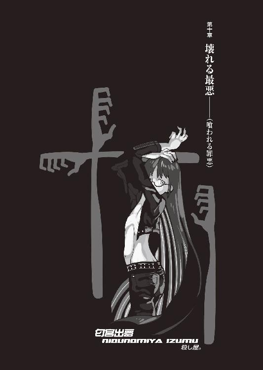
０
さようなら。
またの機会はございません。
１
死。
死というものについて、考えよう。
この世界、大きな意味でのこの世界に存在するもので、《死》なない物質は、存在しない。生物も非生物も、あらゆる分子構造は、やがて、無念の内に《死》に至る。誰も、何も、その法則からは逃れることができない。それはもう、全てのものは《死》ぬために存在しているのではないかと思わせるほどに、例外なく全ては《死》に至る。ここでぼくらの思考をなんとか停止させるのは、《死》とは、決して《無》とイコールではないということだ。少なくともそう考えることによって──人は、人類は、死という概念に立ち向かってきたように思う。
その最たるものが、宗教だ。
《死》に、意味を与えた。
《死》に、続きを与えた。
死後の復活を与えた。
医学も哲学も、死を克服しようとしたポイントにおいては信仰と同一だ。そう、誰だって死ぬのは怖い。死ぬのが平気な人間なんて、《死》を正しく認識していないとしか思えない──自分だけは死ぬことはないと、間違った確信をしているとしか、思えない。
あるいは、本当に死なないとしか、思えない。
だけど、人は、死ぬしかない。
それがルールだ。
死なないなんてのは──ルール違反。
世界というゲームにおいて、ルール違反だ。
だけど、どんな気分だろう。
永遠に──続くというのは。
やっぱり、どこかで区切らないと、耐えられなくなるんじゃないだろうか？ どこかに終わりを設定しておかないと──人は、疲れてしまうんじゃないだろうか？ 百メートルだからこそ、人は全力疾走できるのであって──目的地も到達地点も定めず、全力疾走なんて、できるはずがない。始まりがあれば終わりがあるなんて言うけれど、終わりがあるからこそ、人は、何かを決意し、始めることができるんじゃないだろうか。
本当に。
本当にみんな、死にたくないと思ってる？
そんなに、人生が楽しいのだろうか。
ぼくはそうじゃなかった。いつ死んでもいいと思っていた、なんてものじゃない──かつてのぼくは、生きていることと死んでいることの区別を、そもそもつけちゃいなかった。そうだ、あの頃のぼくは──ぼくがまだ赤き征裁とも橙なる種とも青い少年とも、妹とも会っていなかった、あの頃のぼくは──生も死も知らなかった。
知らなかった。
知らなかったあの頃のぼくは、強かった。
終わりを知らないぼくは、強かった。
強かったから──弱かった。
死なない身体。
もしもそんなものが与えられたら、どうなる？
終わりがなくなれば。
永遠を与えられれば、人間はどうなる。痛みに鈍くなり、戦いを止め、きっと他にも、色々なものを放棄するだろう。それは、終わりがあったときには大事だったはずの想いも、平気で捨てて──
死んだように時を過ごすだろう。
本当の意味で、戯言でなく。
そう、その通り。
死んでも構わない、命なんてどうでもいいと考えていたこのぼくは、正しくそうやって時を過ごしていた。生も死も知らなかったぼく。死ぬことが平気なら、そもそもそんなものは存在しない。死と生を、区別する必要なんかなかった。
生と死とがある世界の住人ではなかった。
だから──
何をしたところで、同じだった。
一番弱くて、一番強かった。
一番強くて、一番弱かった。
そして、もう一つ言える。
ぼくは──最悪だった。
これは、今も、変わらない。
生きたように死んでいて。
死んだように生きていた。
生きてることを忘れようとした。
生きていることを、忘れたかった。
そう、つまりはそういうことだ。
そういうことだから、ルールを守れ。
死を認識しろ。死を獲得しろ。死を捕縛しろ。
死と対峙しろ。死と勝負しろ。死と対決しろ。
死ぬのが怖いかい？
それでも、向かい合え。
死を、喰らえ。
これは、そういう物語だ。
死を覚悟すれば、生きてる間は死なずに済む。
「.........そろそろかな」
ぼくは携帯電話で、最後に、時間を確認した。
表示されているカレンダー。
八月十九日、金曜日。
午後──十一時、五分前。
壁の古時計も、同じ時間を指している。
ぼくは携帯電話の電源を切って、卓袱台の上に置いた。哀川さんにはいつでも連絡を取れるようにしておけと言われているが、言われるまでもなくぼくにだってそれが正しいやり方だとは分かっているが、それでもやっぱり──余計な邪魔には、入って欲しくない。不確定要素には、混ざって欲しくない。そんなことになれば整えた舞台が、台無しだ。
「..................」
ぼくは、昨日と同じ木賀峰助教授の研究室──元、西東診療所の、待合室に一人、電気もつけずに、座布団を敷いて、座っていた。
アパートには、戻っていない。
昨日あれから、京都御所に向かって、哀川さんと夜っぴてディスカッションをして──姫ちゃんのことと、これからの予定を話して──そしてまた、ぼくはここに、直接、帰ってきた。
アパートに戻れば、決意が鈍りそうだった。
そうだ──ぼくは、弱い。
ほんのちょっとしたことで、覚悟が緩む。
一方に解答を定めても、また反対側に解釈が見えれば、元の位置に戻るくらいに、危うく、脆く、跪く、薄弱な意思しか持っていない。
全く──真実の意味で、情けない。
不甲斐ないにも程がある。
こんなことで──成し遂げられるのか？
疑問の声が、内側からふつふつ、湧いてくる。
お前は本当に自分のやろうとしていることが、分かっているのか？ 本当にわかっていれば、こんな風にお気楽には構えていられないはずだ。違うか？ お前はただ、格好つけたいだけじゃないのか？
いつも、あやふやで。
どっちつかずの態度。
生きているのか死んでいるのかさえ不明瞭。
そんなことで、お前は戦えるのか？
「............」
──笑止。
ぼくは、戦ったりしない。
勝負なんて、しない。
勝ちも負けも──先への布石だ。
勝つこともあれば負けることもある、当然だ。勝ちっぱなしの人生も、負けっぱなしの人生もない。勝ち続けている者は負け続けていることに気付いていないだけで負け続けている者は勝ち続けていることに気付いていないだけ。強い者は弱さを知らないだけ、弱い者は強いのを知らないだけ。
ぼくは弱い、圧倒的に弱い。
だけど、その《弱さ》を自覚すれば──
「そりゃ、将棋指すみてーにゃ、行かなくてもさ」
そういえば昔、誰かから聞いたことがある。現代社会において将棋指しや囲碁打ちほど、不遇な存在はないと。彼らはその類稀なる恐るべき頭脳を、盤の上でしか使えない。世界が違えばその《策師》の能力は──天下すら、平気で揺るがせられるというのに。
だが。
それは、誰も、一緒だ。
続きでしかなかった木賀峰助教授も。
死なない朽葉ちゃんも。
姫ちゃんも、理澄ちゃんも、出夢くんも。
不運といえば、不運。
不遇といえば、不遇。
少なくとも、ぼくと同程度には。
「──だけど、彼らは決して望まないだろう......ぼくみたいな人間から、憐憫を受けることを」
彼らは、死んでいない。
彼らは、生きていた。
面白きこともなき世を、面白く──
『ぴーんぽーん』
インターホンの音。
ぼくは時刻を確認しようとして、携帯電話の電源を切ったことを思い出す。だから、壁の古時計の方を見た。十一時ジャスト。
「..................」
ふん。
意外なことに、時間には、正確なようだ。
戸が開く音はしない。
靴を脱ぐ音も、廊下を歩く音も。
その程度の音は──消せるだろう。
さほど間もなく、がらりと、襖が開いた。
「......やあ」
ぼくの方が、先に声をかけた。
先制攻撃、のつもりもない。
もとより、そんなものは通じまい。
「──あれ？」
襖を開けた《彼》──
匂宮出夢は、不可思議そうに首を傾げた。
「なんであんたがここにいるんだ？」
２
出夢くんは、例の拘束衣姿ではなかった。
細い革パンに小さな革ジャケット、ジャケットの下には何も着けておらず、骨の形がはっきり分かるほど肉付きの薄いスリムなボディ、白い肌と薄い乳房が覗いている。靴下はつけておらず、裸足だった。こうして見ると──こうして、ぴったりフィットする種類の服装をした姿を見ると、拘束衣に隠されていた出夢くんの腕が、矮軀に似合わず随分と長いのがはっきりと分かる。
あの腕が。
あの手が。
あの指先が──
「ん・んー？ こいつはおかしいな──僕は、《死色の真紅》に呼ばれて──ここに来たはずなんだがな」出夢くんは、場違いなほど、心底不思議そうに言う。「なんでもあの紫木一姫ってのが《死色》にまつろう眷属だったらしくて、その敵討ちって──」
「哀川さんはぼくの彼女だよ。いちゃらぶでね」
ぼくは腰を上げて、出夢くんと向かい合う。
「きみも随分だね。その思考はいかさま図々しい。いきなり彼女と殺し合えるとでも思ってたかい？ ゲームでも小説でも何でもね──ラスボスの前にゃ、中ボスってのがいるんだよ」
「..................」
出夢くんは流すような目でぼくを見る。
反応に困っている風でもあった。
「............で、あんたが中ボス？」
「その通り」
「ぎゃはははは！」出夢くんは高らかに笑った。「こんな弱そうな中ボス、僕、初めて見たぜ。コクッパだってもうちょっと強いだろォ！」
「......否定する言葉はないよ」
「......は、ははは。ああ──そっか。あんた、あんたもあれだ。あの娘、紫木のこと殺したこと、怒ってんだ。いや、確かに悪かったと思ってんよ──僕ァ、あんたとの約束を破ったことになるからな」
約束を破ったこと。
謝る点は、そこしかないと言わんばかりだ。
姫ちゃんを殺したことなんて──
何とも、思っちゃいないのか。
「正直──ほっとしたよ」ぼくは、笑い続けている出夢くんを半ば無視する形で、言葉を繫いだ。「まあ、ほとんどないとは思ってたけど──ひょっとすると、理澄ちゃんの側が、ここに来るんじゃないかと思っていたからね。その可能性も──零じゃなかった」
「──まあ、そうだよな......あ、つーことは」出夢くんは言う。「《死色》だけじゃなくあんたも、もう僕ら兄妹の仕掛けにゃあ、気付いてるんだ」
「ああ」ぼくは頷いた。「というより、気付いて哀川さんに進言したのがこのぼくでね──もっとも、哀川さんだって、もしも最初からこの事件に嚙んでりゃ、誰も死ぬことなく、事件を閉じるくらいのことはやってのけただろうけれど」
「言っとくけどよ」
出夢くんは悪びれもせず、堂々と言う。
「あんた、僕を恨むのは筋違いってもんだぜ？ お門違いもいいところだ、《死色》は勿論、あんたにしたってよ。木賀峰と円を殺戮ったのは狐さんの依頼だ──殺し屋が殺しをやって、何が悪いってんだ？ お前は拳銃で人を殺したとき、拳銃が悪いっていうのか？ ナイフが人を傷つけるのは、ナイフの責任か？ 違うだろうが」
「......でも、姫ちゃんは」
「ああ──あのガキは、確かに僕の《殺し屋》としての標敵じゃあなかったが──しかし」出夢くんは言う。「それでも、殺されそうになっちゃあ、生物としちゃ、身を守るしかねーだろうが」
「............」
「......確か《保身》は、あんたとの契約からは、ちゃーんと外れてたはずだぜ？ 僕、そういうとこ、抜かりないんだから」
「......だね」
やっぱり──そういうことか。
そういうことなのか。
それは、昨夜の哀川さんとのディスカッションでも、最終的に意見が一致したところではある。可能性は他にもあって断定できないところだったけれど──そうなると、やはり、フィアットとカタナ、Ｚのタイヤを破損したのは、姫ちゃんだったわけだ。
姫ちゃんの馬鹿。
馬鹿なのは、しかしこの場合、姫ちゃんだけじゃない。哀川さんは姫ちゃんをぼくのボディーガードになんか選ぶべきではなかったし──ぼくだってそれを承諾するべきではなかったのだ。タイヤがパンクしていようが何だろうが、あのとき、ぼくは山を越えてアパートに帰るべきだったのだ。
姫ちゃんは──元、狂戦士。《敵》を目の前に放置することなんて、できない性質の持ち主だった──そういう風に、育ってきたのだ。そんなこと、ぼくも哀川さんも、よく分かっていたはずなのに。理解できていたはずなのに。目前に《人喰い》《匂宮》を放置することなんて、姫ちゃんにはできるわけがないことなど──分かっていたことなのに。
姫ちゃんは使命感が強過ぎた。
癖が──抜けてなかった。
かつての、悪癖が。
闘争本能が。
「だけど──姫ちゃんはどうして、きみが《匂宮》だって気付いたんだろうな──偽名を名乗ってたし、姫ちゃんの前で理澄ちゃんは、ちゃんと演じきっていたはずなのに」
「匂い、かねえ」出夢くんは言う。「知らないのか？ 人殺しには、血の色と腐臭の香りが染み付いているもんなんだぜ──僕は、紫木一姫が《殺人者》であることを見抜いただろう？ だったらその逆が無理だなんて、どーしてあんたは思うんだ？」
「──成程ね。理解できた」
「──と、言いたいところだが」
しかし出夢くんは、更に、続けた。
「それをできなくするために、僕には理澄がいたのを、忘れてもらっちゃ困るな。理澄がいる限りにおいて、僕達兄妹が《殺し屋》であることなんか、露見するわけがねえんだ」
「............」
「つまり、僕とあんたが不注意過ぎたんだよ。理澄の所為でも、紫木の所為でもねえ──僕とあんたが、迂闊に色々喋り過ぎたんだろ。僕はあのとき中庭に出て行っちゃいけなかったし──あんたは、紫木に、一切何も話しちゃいけなかったんだ」
ぼくが？
いや──ぼくは姫ちゃんには隠し通したはずだ。姫ちゃんには、出夢くんや理澄ちゃんをリアルとして知っていることを、全く告げなかったはずだ。
......だけど。
不自然なそぶりを、全く見せなかったわけじゃない。そもそも姫ちゃんにとっては、ぼくが姫ちゃんに《匂宮》について質問するだけで、十分だったのかもしれない。
「じゃあ──やっぱり、ぼくの責任か」
「さーね。ともかく、既に洒落で誤魔化せるレベルを超えてたってことだろーがよ。噓で覆える真実じゃなかったんだ。いやいや、紫木も案外馬鹿じゃねー。それなりの洞察力は持ってたってことなんだな」
「............」
そう──それも、忘れていた。
姫ちゃんは確かに馬鹿かもしれないが──卓越した戦闘センスの持ち主なのだ。加えて、姫ちゃんは、噓をつくのがとても得意だった。得意なんてものじゃない、それはもう、ぼくの戯言と同じく、姫ちゃんにとっては処世術のようなものだったのだ。それだって、六月のときに、十分に分かっていたはずだった。気付いていることに気付かせないくらいの虚構、彼女のは当たり前のように、作り出せる──
「しかし、さすがに強敵だったぜ──僕も無傷とはいかなかった。《曲絃糸》遣いなんてのとやりあう経験自体僕にゃあなかったし、あのガキ──戦士としての機能も、ずば抜けていた。プロのプレイヤーと較べてもまるで遜色ない、ほとんどハイエンドクラスだぜ。一体何者なんだ？ ひょっとしたら狐さんなら知ってるくらいの有名人なのかもしんねーな。まさか僕のラインに曲絃師なんてのが現れるとは思わないからよ──焦ったぜ」
「経緯を聞かせてもらえるかい？」
「ケーイ？ ああ、経緯ね。お生憎、経緯なんてねえよ。あいつと理澄が二人になったとき、夜中に中庭でやりあおうってえ取り決めがなされただけさ。挑まれて断る理由は──僕らにゃあ、なかったな」
「............」
「あいつはキーワードに触れたのさ。だから、僕が出てきて──戦闘になった」
「......成程、ね」
なら──あのとき、ぼくが朽葉ちゃんに呼ばれてシャワーに出た直後か。そう仮定すれば、階段で彼女とすれ違ったあのときとも、時間的に符合する。ぼくが木賀峰助教授と言葉を交わしてから部屋に戻ったときには、既にベッドの中に姫ちゃんはいなかったということか。
姫ちゃん。
そのとき──姫ちゃんは、何を考えていたのだろう？ また、戻ってこれると、ちゃんと認識していたのだろうか？ それとも──いや、そんなことを考えてもしょうがない。そんなことを考えて、もしも本当にそうだったりしたら、あまりにも救われないじゃないか。
「僕らの世界は暴力によって融通が利くかんな。暴力に基づいた究極の平和主義。あいつが勝ったら僕らがお前の前から姿を消す──ってのが条件だった。僕はちゃんと言ったぜ？ あんたらに手を出すつもりはねえって──だが、あいつ、聞きもしねえんだよ」
「まあ、頑なな娘だからね」
「その通り。ありゃあ、敵の意見は聞かないタイプだ、長生きできねえ──って、僕が殺しちまったんだっけか？ ぎゃはは！」
「............」
「笑えよ」出夢くんは苛立ちを隠そうともせず、舌打ちする。「要するにさ──紫木は、生きてるためにゃあ人を殺し過ぎてたんだよ。ああなっちまえば、もう手遅れなんだ。あそこまで人を殺しておいて尚且つ生きていよう、まして普通の女子高生やってよーなんて、図々しくも虫がよ過ぎるんだ。あんただって本当は分かってんじゃねーの？ 紫木一姫は、生きてるためにゃああまりにも人を殺し過ぎていた。紫木はあまりにも強過ぎて──弱過ぎた」
生きるためには人を殺し過ぎた。
そうかもしれない。
姫ちゃんはずっと教えられてきた。
敵対者は殺せ。
邪魔者は狩れ。
危険因子を決して逃がすな。
躊躇するな、首を切ってから考えろ。
機会を逃すな、信頼するな、殺される。
そんなことを、ずっと教えられてきた。
染み付くほどに。
もう、抜けないほどに。
自分の死を、死とカウントできないほどに。
近くに敵を置いて──躊躇できない、ほどに。
じゃあ、姫ちゃんは手遅れだったのか。
姫ちゃんには全てが、今更だったのか。
幸せも、楽しさも──
全てが、今更だったのか。
「............」
そんなことは──ない。
そんなことは、なかった。
ぼくは、断言する。
誰が何と言おうと、断言する。
「......姫ちゃんを殺してから、どうしたんだ？」
「本当のことを言うとよ──バトり始めた当初は、あいつを殺すつもりはなかったんだよ。あんたとの約束もあったし」出夢くんは渋々白状するというような感じで言う。「だが、殺すしかなかった。殺すしかなかったんだよ。両腕喰らっちまえば大人しくなるかと思えば、全然そうじゃない。マジで洒落になってねーよ、あのガキ。有り得ねえ」
「............」
そう。
姫ちゃんと玉藻ちゃんの扱いには──あの子荻ちゃんでさえ手を焼いていたのだ。生半可じゃない、中途半端じゃない。加減して戦闘できるような、相手ではない。強過ぎて──《人喰い》ですら、加減、できない。
「仕方ねえから《予定》の繰上げさ。一人殺しちまった以上、もう計画は変更せざるを得ない......あんたとの約束を破ってもだ。大体、約束も何もねーよな──紫木殺しちまった、その時点では。ほとんど、無効みてえなもんだ。契約は既に破綻していた」
「......まあ、そうだね」
「まあ、理澄の《調査》の方も、調査期間がたったの一日こっきりとくりゃ、さすがに結論とまではいかなくても──ある程度まで、既にあの二人に関する推論は立ってたみたいだったしな。我が妹ながら、たった一日で大したもんだ。だが如何せん、情報不足は否めない。そこで僕は、正直に話すことにした」
「正直に？」
「訊いたのさ、あの二人に。木賀峰は仕事中で起きてたし、円は寝ているところを起こしてやった。《僕は狐さん、多分あんたの恩師である西東って人からの遣いの者で、あんたらを殺せといわれているが、どうする？》」
出夢くんは、長い腕をぼくに示した。
誘い込むように。
惑わすように。
ぼくを、招くように。
「二人は《なら、そうしてください》って、頷いたぜ。あれにゃあこっちが却って戸惑ったな」
「そうしてください......だって？」
ぼくは、さすがに驚きが隠せなかった。
声が、震える。
それは──それは、予想外だ。
哀川さんでさえそんなことは言ってなかった。
「円に至っては、ベッドを血で汚したくないからなんて言って、死に場所にシャワールームを選んだほどだ──実際んとこ、疲れてたんだろうぜ、二人とも」
狐面の男の続きに、続き続けてきた助教授。
死ぬことができずに、死に続けてきた少女。
疲れる。
腐敗するように、疲れる。
だから──死を、受け入れた？
馬鹿馬鹿しい、そんな幻想。彼女たちはただ、目前に現れた殺し屋に、諦めただけだ。元の恩師から派遣されてきた殺し屋に、絶望しただけだ。それだけに過ぎない。疲れた、なんて理由で、死ねるものか。そんなことをされたら──
そんな、図々しくも虫のいい真似をされたら──
死が、意味をなくす。
死を受け入れたら、死なんて存在しない。
生きていないから、死にもしない。
死なないんだから、生きていない。
それじゃあ、真実の意味で──
死なない、身体だ。
「......僕も、疲れた」
出夢くんは言った。
本当に──疲れたような、声だった。
「僕も疲れた。人を殺すのに、疲れた。仕事をするのに、疲れた。あいつら、あの二人を殺して──あいつらと話をして、そう思った。──違うな。僕はずっと前から──疲れ切っていた」
「......それが」ぼくは言う。「それが、きみが──あのあと、姿を消した......理由か」
「いつの頃だったか狐さんは僕のことを殺戮仕事、殺戮好き、殺戮中毒と表現したが──それは正しく正しいとしか言いようがないが──だが、中毒症状の後に来るものは、ただの飽きだ」
「......飽き？」
「ああ。圧倒的でもない、究極的でもない、絶対的でもない、致命的でもない、ただの飽き。知っているか？ ある種の哺乳動物ってのは生きていることに飽きると自然に死んじまうようなシステムが遺伝子に組み込まれてるんだとよ。狐さんに聞いたことがある。それって、最高のプログラムだと想わないか？ ......あの二人もよ、多分、生きることに飽きてたんじゃねーの？」
「それは──」
朽葉ちゃんは、分かる。
彼女は──生き過ぎた。
でも、木賀峰助教授は？
飽きるほど──生きていないだろう。
彼女は、生きていないだろう。
生きていないはずなのに。
「きみが《疲れた》理由は──むしろ、姫ちゃんとやりあったことの方にあるんじゃないのかい？」
「......かも、しんねーな」
出夢くんは、とりあえず、ここで頷いてみせた。
否定は、しなかった。
本当のところは、ぼくにも分からない。でも、それでもやっぱり、姫ちゃんと朽葉ちゃんと木賀峰助教授、その三人は、三人を殺したことは──恐らく出夢くんにとっては、原因というよりは契機でしかないのだろう。引き金ではあっても弾丸そのものではない。
籠の中の小鳥。
出夢くんは、《匂宮》であり続けることと──
狐面の男に、飼われ続けることに──
理澄ちゃんの裏であり続けることに──
理澄ちゃんの表であり続けることに──
飽きた。
「ぎゃははははは！」出夢くんは、突然、高笑いした。「ま、ソーユーワケデッ！ 折角だからこのまま隠遁しようとでも僕ってば考えちゃってたんだけどよ──そこに、《死色》から連絡が入ったってわけだ──つーことは、なんだ。なんだなんだこりゃあ？ なんだあ、なんだあ！ ありゃあ全部あんたが仕組んだお膳立てってことかい？」
「まあね」
ぼくは立ち上がった。
「きみにどうしても──会いたかったから」
会いたかったから。
会って、話したかったから。
出夢くんが、事件のあとで、隠遁生活に入ろうとすることは──狐面の男の言葉から、予想がついていた。籠の中の小鳥。そのこと自体はいい。それは出夢くんの勝手だ。問題は、ぼくの勝手の方。どうやってその出夢くんの消息をつかむかだった。
とりあえず、どう考えたところで、ぼくには無理だった。玖渚に頼むにも、出夢くんは玖渚機関の範囲外の住人。調べられないということはなくとも、多少以上に危ない橋を渡ってもらうことになる。そんな真似、玖渚にさせるわけにはいかない。そこで、全ての世界を股にかける人類最強の請負人、赤き征裁、哀川潤にご登場願ったというわけだ。
『だが、隠遁している《匂宮》を呼び出すのには何か決定的なエサが必要だぜ──奴らはそういうとこ、半端じゃねえ。下手に連絡すりゃ、逃げられるのが落ちだぜ。そんな都合のいいエサが、あるのか？』
と、哀川さんの質問に、ぼくは『心配いりませんよ』と答えた。そう、ぼくは以前に出夢くんの望みを聞いていた。出夢くんが望んでいるそのことを──聞いていた。その時点では、さすがに《死色の真紅》が哀川さんのことだとは知らなかったが──
それはそれで、好都合。
好都合というより──いい、縁だった。
「......ふーん」出夢くんは嫌らしげに、目を細める。「僕ってば人気者だにー。だが生憎ながら僕は、別にあんたになんか会いたくなかったぜ。ぎゃは、僕って結構罪な男？ はにゃーん。なーんて、ま、マジな話、僕も気まずい思いはしたくねえしな──これでも僕、結構気にしてんだぜ？ あんたとの約束、破ったこと」
「そうつれないこと言うなよ。ぼくはしつこいぜ？ ぼくみたいなタイプがストーカーになったりしたら、この世で一番やばいんだ。取り扱いには、注意しろよ」
「ぎゃはは......そりゃ、マジに分かるな」
「それに、ぼくは《死色の真紅》とのバトルを、セッティングしてやったんだぜ？ 出夢くんの積年の望みだったんだろう？」
「望み──と言うよりは、心残り、だな」
出夢くんは両腕を孔雀のように広げた。
長い腕。あまりにも、細長い腕。
威圧感ある、構えだった。
「僕は......一体、僕自身がどこまで達したものなのか、その測りが欲しかった。その意味でいいとこついてるぜ、あんた。で──えーっと、どういうシステムなワケ？ あんたを突破すれば、《死色》が登場してくれるってことなのか？」
「哀川さんはここにはいないよ──場所は、ぼくだけが知っている。ある時間まで、哀川さんはそこできみのことを待っている。ぼくにそれを白状させたらきみの勝ち──白状させられなかったら、きみの負け、だ」
「僕の勝ちに僕の負け、ね──ふん。僕の勝ちに僕の負け──」咀嚼するように繰り返す出夢くん。「あんたの勝利条件は、ないのかい？」
「勝負するのはきみ一人さ。きみが勝つか、きみが負けるか、どちらかしかない。ぼくは──そんなものをするつもりはない」ぼくは我ながら馬鹿馬鹿しい、荒唐無稽の台詞だと思いながらも、照れることもなく、はっきりと言う。「ぼくは──ただ、思い知りたいだけなんだ」
「思い知りたい？ 何を？」
「さあ、ね──」
ぼくはホルスターから刀子型のナイフを引き抜いた。ずっと、ここに来て、座ってからずっとイメージしていたように、その切っ先を、ぼくの正面にいる出夢くんに向けて、卓袱台に一歩左脚を乗せ、その細い首の、喉元に狙いを定め──
「──つまらねえ」
ぐるん、と視界が回転した。
何が起きたのか把握する暇もない、卓袱台の上に置いた一歩の脚が、どうにかなって払われたことすらも察する暇もなく、ぼくは右肩から、卓上に倒れ落ちる。咄嗟に右手で身体を庇ってはいたが、次のアクションを起こすよりも先に、出夢くんの脚がぐわあんとこちらに伸びてきて、そのつま先が、内側から抉り込むように、ぼくの肋骨を突いた。
「ぐ......あっ!?」
体験したこともないような奇妙な痛みが腹部を襲い、ぼくは卓袱台から転げ落ちる。さっきまで座っていた座布団がクッションになってくれはしたが、そんなことで衝撃の全てを中和することはできなかった。
ずきりと、アバラが軋む。
今頃になって、払われた足首にも、痛みが。
「ぐ──う、ううう」
「折っちゃいねえぜ──ちょいと、アバラを二本ほど外しただけだ──だが、無理はするな。ずれた肋骨は、内臓にとっちゃ鎧じゃなくて既に凶器だぜ」
「............」
「払った脚にゃあ加減ができなかったから、ヒビくらいは入っちまっただろうがな。まあそれくらい我慢しろよ、男だろ」軽い調子で笑いながら出夢くんは言う。「で、《死色》はどこだ？ どこに行けば《死色》と会える？」
「......やれやれ」ぼくは──腹部に走り続ける痛みを堪えつつ、身体を起こす。出夢くんを、睨みつける。「きみ達の世界じゃあ《人喰い》ってのは──脚の先で人の腹を撫で回す変態行為を言うのかい？ その程度のレベルの低い変質者にゃあ──哀川さんは、紹介できないな。哀川さんに紹介するにゃあ、もーちっとはっちゃけた変態でないと、さ」
「......理解できてねーよーだな」出夢くんは、ぼくの安い挑発になんか乗ろうともしない。子供を諭すような、そんな口調だった。「あんたと僕との戦力差ってのは──根性や虚勢、それにそんな、口先八丁の戯言でどうにかなるようなブランクじゃねーんだよ。最低限、真正面から戦う限りにおいちゃあな。あんたを見てりゃ、全身隈なくそれなりに鍛えてる、運動神経だって悪くはないってことくらいは分かるが──いやしくも僕はプロのプレイヤーだぜ。僕にはあんたの動きが止まって見える。不意撃ちだろうが騙し撃ちだろうが──僕はあんたが動くのを確認してから反応しても、十分間に合うんだよ」
「............」
「拷問は墓森の領分だから僕の専門じゃあねえが──それでもやり方を知らないってわけじゃねえ。な、悪いことは言わねーよ。僕が可愛いなりして酷いことをやらかす前に──言っちまえよ」
「可愛いなり、ね......」ぼくは出夢くんの言葉を反復する。「だったら拷問よりもいい手段があるんじゃないのかな？ 色仕掛けなら、ぼくはあっさり陥落するかもしれないぜ。ちらちら見え隠れしてる乳首が、さっきから気になってしょうがないや。ああ、でも............それはあれだ、あれだ、うん、あれだよ。あれだから、あれだな」
「......あ？」
「ぼくは年下って駄目だからなぁ──なんとなく、妹を思い出して、萎えちゃうんだよねえ」
「......わっかんねえ野郎だな」出夢くんがそういう口調に──今度は、確実に苛立ちが混じっていた。理解できないぼくに対しての怒り──では、なさそうだった。「わっかんねえ野郎だ、本当に分からない野郎だ。いかれてるとしか思えない。脳の具合はどうなってんだ？ あー、あー、あー、ハイハイハイハイ！ じゃあ、ヤサシーヤサシー出夢教授が、豚にも理解できるくれーにとっても分かり易く説明してやろう──言葉よりも分かり易く視覚に訴えてやろう。てめえの両目に死刑宣告だ。この腕」
出夢くんは、両腕の肘の部分からを、ぼくに裏向けで示した。甲を向けられた手、その指は、熊手の形を取っている。
「知ってるか？ それとも知らないか？ こいつが、俺についた二つ名──《人喰い》の由来だ。この腕そのものが、僕の得物。とくと見ておけよ──」
くるり、と、出夢くんは腕を回転させて、そしてその熊手を両方同時に、思い切り、全身でのけ反るように振りかぶって──両腕を、一気に卓袱台に向けて振り下ろした！
「──こういうことだっ！」
破壊音。
というより、それはもう、爆発音だった。
衝撃に思わず閉じた目を開いて見れば──出夢くんの両腕は、手首の辺りまでがざっくりと床の畳に突き刺さっていて──卓袱台は、ごっそりと、それこそグリズリーの張り手にでもあったかのように──喰われたように、抉り取られていた。
厚さ五センチはある、木製の卓袱台。
それが──あんな、女の子のか細い腕で。
「ザ・ハンド......じゃあ、ないぜ。これが僕の、匂宮出夢の伝家の宝刀、《一喰い》だ」にやりと──出夢くんは、不気味に笑った。「人間の身体は先のことをまるで考えずに鍛えあげりゃあこのクラスにまで至るっつー、生きた見本がこの僕だ。無論、この《一喰い》だけじゃねえ──この脚だって、普通に蹴れば、人間の首くらい、簡単にへし折れる。そのアバラにどれくらいスッゲー手加減したのかってことくらい──もう、分かるよな」
「──《一喰い》」
上半身と下半身を分断された朽葉ちゃん。
右肩を千切られていた木賀峰助教授。
両腕を千切られていた姫ちゃん。
「成程......どんな凶器を使えばあんなとんでもねえ真似ができるのかと思っていたが──なんのことはない、そこまでの裏技、使えたのか」
こんな爆音の中吞気に眠ってたなんて、ぼくも大した大物だ。狐面の男から聞いて《一喰い》のことは知ってはいたが、まさかここまでの一撃必殺だとは思わなかった。成程、確かにこれは玖渚の言う通りだ──究極の異形。究極を、もう一つ究極まで極めた、異形の技だ。
「出夢クンは更に親切心を発揮して、お兄ちゃんにイイコトを教えてやろう。この技の弱点──っつうか、欠点は、手加減が一切できねえってとこでよ」出夢くんは、熊手の形を取ったままの両手の平を畳から引き抜いてぼくに見せ、続けて、甲も晒す。「だからこそ暴走を恐れてあの服で封印拘束しなくちゃなんなかったわけなんだが──ぎゃはは。実際、この通り、ブレなくこの通りの破壊力しか出せない──これでデフォルト、数値の設定がきかねえんだ。鉄板だってぶち破れるこの威力が通常だ。だがよ、これはやっぱ、弱点じゃなくて欠点だろ。なああんた、考えろよ。こんなもん喰らったら──もとい、こんなもんに喰われたら、マジで悲惨だぜ。《一喰い》に関しちゃ防御なんざまるでできねえんだよ、防御なんかまるで意味がないんだ──腕で受ければその腕が吹き飛び、脚で受ければその脚が吹き飛ぶ。その事実、その被害以上に、傷口自体もえげつねえ──自分の宝刀ながら嫌になる、それはあたかも爆散だ。千切れた傷口を縫い合わせることすらも──できない。修復不可能な、絶傷だ」
出夢くんは、飛び散った卓袱台の破片を一つ拾い、ぼくに向かって、軽く放り投げた。破片は、ぼくのすぐそばに落ちる。
この破片が。
あるいは、肉片に。
「さすがに試したことはないが──幼稚園児くらいの子供なら、左右それぞれ一回ずつで、この世から消し去ることだってできる」改めて、出夢くんは、ぼくに向けて、身体を正面に開いた。「だが、僕は殺戮の際には必ずこいつを使用する──何故かって、そりゃ、痛くないからだ。伝達速度よりも迅速に神経を破壊するから、全然痛くないんだよ──慈悲にも近いが、要するに僕は悲鳴を聞きたくねえんだ。苦痛は最小限が一番いい。それは、あんたの悲鳴だって、あんたの苦痛だって、同じことだ。だから......やるとなったら僕は遠慮なく、あんたみてーな戦闘能力に欠けた野郎が相手でも、やるとなったら僕は容赦なく──こいつを使用するぜ」
「そりゃ──お優しいんだね」
ぼくの茶々にも、出夢くんは乗ってこない。
むしろ哀れむようにぼくを見ている。
ぼくと出夢くんとの間にある、圧倒的なまでの力量差──出夢くんから見た方が、それは分かり易いのだろう。下から見上げるより、上から見下した方が、圧倒的な上下差は、よく分かる。だから出夢くんには、ぼくのやっていることの意味なんて、まるで理解できないに違いない。
意味。
あってもなくても──同じだけど。
「最後にもう一度言うぜ」
「言わなくていいよ」
ぼくは。
半ば起き上がりかけたままのその姿勢で、ベルトの背面側に差し込んでいたジェリコを引き抜いて、その銃口を、出夢くんに向けた。
「ばあん」
引き金を引いた。
衝撃が、先に蹴られた脇腹に響く。
「......ちっ！」
出夢くんは左に飛びのいた。弾丸を避けた──というよりは、ぼくがジェリコを取り出したそのときには、もう出夢くんは回避動作に入っていた。拳銃を持っていることは気付かれていなかったはずなのに──そのために、最初にナイフで飛び掛ったというのに──大した反射神経だ。だが、それもまた、予想外ではない。正面からの銃撃が通じない人間がいることくらいは、経験済みだ。
ぼくは、駆けた。
出夢くんを追撃せず、襖の側、廊下に。
「......ざけんじゃねえぞ──」
「............ざっけんじゃねえぞおっ、てめえェ！」
背後から、怒声が響く。
やはり、直情型。
それに、激情型。
どんな余裕ぶってはいても──どんな冷静な態度でいたところで、いざ、自身に触れそうなほどの危機がそこに現れれば、その化けの皮ははがれる。きみの余裕と、きみの冷静は、酷く上っ面。きみの沸点は氷点下より低い。そう、それが──出夢くんにとっての、強さゆえの弱さだ。強靱に特化したがゆえの、脆弱。
加えて、もう一つ。
今の一合、出夢くんは、ジェリコの弾丸を避けた。避けたということは、仮に弾丸が出夢くんに当たってしまえば、いかに《人喰い》といっても、ダメージは避けられないということだ。
無敵じゃない。
最強、でもない。
最悪──とも、言えない。
幽霊でもなければ妖怪でもない。
人格のある、
人間だ。
廊下に出て、更に走る。背後は振り返らない。振り返るまでもない、出夢くんは追ってきている。隠そうともしない足音と、差し迫ってくるような途轍もない物量の気配で、それは分かる。
「うおおおおおおおおおおおおおっ！」
階段。
階段に登るために曲がったところで、出夢くんが、大きく右腕を振りかぶっている姿を、眼の端に捉えた。
──《一喰い》。
「──ぐうっ！」
それを......ぎりぎり、かすめるように躱す形で、ぼくは階段に脚をかけた。出夢くんの右腕は、大胆に空振りする形になり──出夢くんは、大きくバランスを崩す。そうか、常に全力で撃つのが前提の、一撃必殺の、正に一撃必殺の人外業だから──撃った後の、外した後の体勢のことを、まったく考慮しちゃいないのか。出夢くんが冷静さを欠いていることもあるだろうが、それも、弱点といえば弱点。
いいぞ、悪くない。
「......こっちだ！」
ぼくは、出夢くんが一瞬、体勢を立て直すまでの一瞬の間に、階段を駆け上る。脇腹がきりきりと、熱を持って痛み始めて来た。派手に動くのはまずいのかもしれない。最悪、出夢くんの言う通り、肋骨自体が内臓を傷めることになる。
だが──
そんなこと、構うものか。
「こそこそ逃げてんじゃねえ、このヘボ野郎っ！」
出夢くんは怒鳴って、この暗闇の中、まるで躊躇することもなく、階段に脚をかけ、ぼくの背を追ってくる。それを気配で確認し──したところで、ぼくは二階への折り返しである踊り場に到達する。
「こんな狭いところで逃げ切れるわけねーだろーがアホバカ間抜けがっ！ おおおおおおおぉ出かけェでェースか、レレレノレぇえええええええー!!」
到達したところで。
出夢くんを振り向き、飛び降りた。
「──なに？」
出夢くんの、驚きの表情。
だが──もう遅い。
もう、遅過ぎる。
ぼくはただ、重力に身を任せるだけだ。
そして──この研究室の、一人ずつしか通れないような狭い階段では、足場の悪さと、両側の壁や手すりが邪魔をして──《一喰い》は撃てない。
フライング・ボディアタック。
そんな気の利いたものではなかったが、構えた肘が顔に、反対側の肩が喉にぶつかる形で、ぼくは出夢くんに体当たりを決めた。いくら──いくら殺し屋だかプロだかプレイヤーだか、そんなことを言ったところで、《人喰い》やら《人喰い》やら大仰なことを言ったところで、身体自体は小柄なサイズの女の子の矮軀でしかない。
堪えようとはしたものの。
出夢くんは、後ろ向きに、階段を踏み外した。
ぼくと出夢くんは絡まりあうようにそのまま階段下の廊下に落下し──出夢くんの身体は、強固な木板と、ぼくの身体とのサンドイッチになった。
「ぐぅ......っ」
出夢くんが嗚咽のように呻く。ほとんど不意撃ちに近い体当たりだった、いくらなんでもさすがにこれでダメージ零とはいくまい。だがこれで終わりではない。こんなことで《人喰い》は撃破できたことにはならない──だからこそ、このチャンスを確実に捉える。これが──考えうる限りの最後のチャンスだ。
ぼくは出夢くんとの絡まった身体を解き、そのまま馬乗りの体勢になった。仰向けに倒れた出夢くんの顔面に向けて──右手に持っていたジェリコを、突きつける。
この至近距離。
この体勢。
どう足搔いても──避けようがない。
「──こ、この......野郎っ！」
出夢くんはぎりぎりで、両腕を立ち上げてジェリコのバレルをつかむ。そしてぼくが引き金を引くよりも先に、その銃口の向いている先を自分の頭からずらした。ぼくは片手じゃ無理だと判断し、グリップに左手も添え、力技で銃口の位置を、照準を定め直そうとする。
「ぐううううううううう──」
「うぐぐぐぐぐぐぐぐぐ──」
この──至近距離。
この、体勢。
しかも──こんな、少女の細腕なのに。
ぼくの全力でも、まるでびくともしない。むしろ少しずつ、少しずつ確実に、銃身は横へ横へとずらされていった。一体どこにこんな筋力があるというのだろう。いや、筋力とかそういう問題じゃない。そういう単純な足し算引き算のレベルの話では、これはなさそうだ。更に出夢くんは、馬乗りに押さえつけられている身体でも抵抗を始める。両脚で挟んでがっちり固めているはずなのに──微塵にも油断するとすぐさまにでも抜けられそうなほどの勢いで、出夢くんは体幹を揺すり始めた。
必然、グリップを握る両手にも隙が生まれる。
くそ、こんなんじゃどちらも長くは持たない。
まずい。まずい。まずい。
一体、どうすれば──
「..................っ！」
ままよ。
ぼくは、そのままの位置で、引き金を引いた。
発射音、火薬の爆ぜる音──当然、銃口の向いている方向がまるで出夢くんからずれている以上、弾丸は明後日の方向へ、何を貫くこともなく、そのまま廊下の板へと命中する。
が。
「............ぐっ!?」
一瞬、出夢くんの力が緩んだ。
バレルを握り締めていれば──弾丸がその筒を通過する際に生じるその熱を、もろに喰らう形になる。それだけではない、それに加えて、耳元近くで銃声を聞き、耳元近くを弾丸が通過すれば──その波動は脳自体に直接振動として伝わる。どんな訓練を受けていたところで、人間としての身体構造自体が変化しているわけでもないはずだ──脳神経への直接攻撃が、通じないはずがない。
出夢くんの力の緩んだその隙に、ぼくは全身全霊、銃口を出夢くんの眉間に合わせようとする。出夢くんは即座にバレルを握り直すも、先までのような力はない。撃ったばかりだ、バレルから熱は抜けきっていない。
「──の、畜生......っ！」
刹那。
出夢くんはバレルから完全に手を離した。
諦めた──わけがない。だが、その寝転んだ体勢からじゃあ《一喰い》は撃てないはず。......いや──撃てるのか？ ひょっとして、全身で撃っているのではなく──腕だけで、撃っているのだろうか？ 実際、出夢くんは左腕を少し引き、一瞬床に貼っつけるような形をとって──弧を描く動きで、その腕を振るってきた。
ぼくの、顔面を目掛けて。
容赦なく。
「く、う──」
だが、これを躱せば。
この《一喰い》を躱せば──最早、磐石だ。一度外せば後が隙だらけ、一瞬の硬直状態になることは先の一撃、その前の試験的な一撃でも、証明済み。
ここが正に分水嶺。
「ぐ、お、おおおお──」
ぼくは背を思い切り反らし、その掌を避ける。少なくとも、避けようとした。だが出夢くんの《一喰い》はそんなぼくの反応速度など、反射神経などまるっきり凌駕するほどの速度で──
本当のところ。
出夢くんの体勢がまともなら、喰らっていた。
喰らわれて、いた。
右頰に貼っていたガーゼが引き千切れ、ガーゼが糸屑に替えられてしまうのが、はっきりと右眼で捉えられるほど、正に紙一重で──ぼくは、《一喰い》の顎から逃れた。
よし、と──
成功を確信する暇もなく。
「............あ」
ぼくは、出夢くんの真の狙いを知る。
弧を描いていた左腕による《一喰い》は、そのまま円周軌道上の先にあった──出夢くんの右側の床を、恐らくは狙い通りに──直撃した。
先の銃声など話にならない、爆発音。
喰われた板の破片が四方八方に飛び散って──尖って凶器と化した破片が、ぼくの方にも向かってくる。意志とは関係なく、眼球を守るために本能的に、瞼が下りて──
「だっ！」
そんな中、無理矢理に、トリガーに力を込めた。弾丸の衝撃が自分にぶり返ってくる。顔面に刺さった木片の痛みを感じながらも、そっと眼を開けてその成果を確認してみるも──
「......ぎゃはは」
出夢くんは──
傷一つ、負っていなかった。
《一喰い》により廊下の床をぶち抜いて──銃口ではなく、固定されていたはずの自分の頭部の位置をずらしていたのだった。破片を飛ばすことよりも──そちらの方が本命だったか。否、両方併せての、一つの策だったのだ。
匂宮出夢──
まずい、馬鹿じゃない。
「連射しねえところを見れば、弾丸は、それで尽きたみたいだな──オラァ!!」出夢くんは腹筋だけでぼくの身体を跳ね上げ、一瞬でその両脚を折りたたむようにぼくの股下をくぐらせ、そして折り畳んだ脚をもう一度、ぼくの鳩尾に向けて伸ばした。「いつまで騎乗位かましてくれてんだ、征服欲の強い変態かテメエは、この薄らボケェ！」
一体ぼくの身体はどこからワイヤーで吊られているのだろうかと思うくらいの勢いで、ぼくは空を、打っ飛んだ。すぐ後方の、さっき出夢くんと共に新撰組もどきをやらかした階段の、踊り場の辺り、その一段下のところにまで、ノーバウンドで蹴り上げられ、そこの角で背中を強く打ち、転げ上がるように、ぼくは踊り場にまで倒れ込んだ。
「..................」
倒れ込んでいる暇など、ない。
背中──それに、より鈍い痛みの、腹。さっきのアバラ骨じゃない、内臓か。内臓が、ぐちゃぐちゃにシェイクされてしまったような感覚があった。破裂まではしていないにしても──かなり、苦しい。嘔吐感に類するものはない、となると消化器系じゃない、循環器系か。では益々事態は深刻だ。なんとか体勢を立て直そうとするも、全身という全身、ぶるぶると震えて痙攣するばかりだった。
「ぐ、う、ううう──」
「ぎゃはは──最初で最後のチャンスを逃したな」
見れば──
出夢くんは、大きく深く穴の穿たれた廊下に、両の脚でしっかりと、立っていた。あれほど耳元で破壊と破壊音とが続いたと言うのに──人間なら、立つことどころか、しばらくはまともに考えることすらできないはずなのに。どんな三半規管をしているんだ。あれだけの爆音を傍に、何故平衡感覚を失わない？ ひょっとして、身体の構造自体が違うのか。だとすれば、何て馬鹿馬鹿しいんだ。
「だが──素人にしては、よくやった、と言おう」
「............」
余裕と冷静を──取り戻させてしまったか。
やれやれ......。
確かに......チャンスを、逃した。出夢くんが癇癪を起こした隙こそが──ぼくにとっての唯一無二、つけ入る機会だったというのに。
弾丸も、尽きた。
策も──尽きた。
策なんて、元々あってなきが如しだったが。
「......もういいんじゃねーの？」
出夢くんが、両腕を下ろして、言った。
「この僕を相手にここまで必死こいて頑張っちゃえばよお──この《人喰い》を相手にここまで善戦、孤軍奮闘ぶちかませばよお、紫木だってあんたのこと責めたりしねえよ。だから《死色》の場所、教えちまえ」
「............」
「それとも本当は知らないのか？ 《死色》の場所を知ってるなんてのは、口からでまかせの噓なのか？」出夢くんは怪訝そうに言う。「いや──そりゃ、ねえよな。そんなことをしたら......僕は間違いなくあんたを殺しちまうだろう。《死色の真紅》が噂通りの恐ろしさを持っているってんなら──そんなことは、しないはずだ」
「............」
考えろ。
何か、ないか。
この最悪の状況を打ち破る手段。全て終わってしまっているこの状況をやり直す手段。完全に行き詰ったこの状況を切り開く手段。
そんな、都合のいいものがあれば。
そもそもこんな状況には陥らない。
人生はやり直せない。決して、どうしたところでやり直せない。何もかもがやり直しのきく人生なのだというのなら、それはとっても幸せなのかもしれないけれど、それを望むのは傲慢過ぎて都合がいい。
繰り返す、なんて。
結果は、同じだ──なんて。
「......大体さあ、あんた敵討ちだとか仇討ちだとか、そういう柄じゃねーだろ？ あんた、喜びも悲しみも、何も知らないって面してんぜ」
「な......」
「だからこそ、そんなんだからこそ、理澄はあんたを気に入ったんだろうよ。あんた、今やってることに疑問はないのか？ 落ち着かねーだろ？ 全然、落ち着かねーだろ？ そわそわと、身体が自分のものじゃないような感覚がねーか？」
匂宮出夢は確信的な口調だった。
「前に二度ほど話したときも、今バトったときも感じたが──てめえ、あんた、何にもねーじゃんかよ。さっきから──僕、あんたから何にも感じねーよ。この僕に対する恨みも──紫木が殺されたことに対する怒りも──何にも、感じ取れない。かといってあんたは僕と同様の戦闘狂ってわけでもねえ──好戦的な様子がまるでない、むしろ逃げてる間に勝っちまおうって腹に見えてしょうがねえ。嫌々バトってるようにすら見えるぜ。分からない、分からない、僕にはまるで分からない。あんた、一体何のために僕とバトってんだ？」
「............」
「さっき思い知るってってたけど、あんた、何を思い知りたいんだ？ わけわかんねーよ。僕はそんなわけのわからないもんのために、あんたみてーに弱っちいのと殺し合う気はねーんだよ」
「......確かに」
確かに──出夢くんに対する、恨みなんてない。
本当のところ、ぼくには怒りも恨みもない。
そんなもの、理不尽だ。
出夢くんは自身の仕事をこなしただけ──姫ちゃんもまた、自分の仕事をこなしただけ。そこには、悲しみや悔しさならばともかく、怒りや恨みの入り込むような余地はないのだ。
本来。
人の死は、その人だけのもの。他人が感情移入してごちゃごちゃ言うのが度を過ぎると、みっともないだけだ。
悲しみを怒りと混ぜ合わせるな。
悲しみを恨みと混ぜ合わせるな。
それは、危険だ。
果てしなく──危険だ。
「......きみの、言う通りなのかもしれないね」
「............」
「......こんなことなら、大人しく推理小説の語り部でも演じてりゃよかったかな......探偵役は、玖渚にでも任せてさ──」
「あん？ 何て言った？」
「くだらねえっつったんだよっ！」
ぼくは──
疾走した。
階段を、二階に向けて──更に登る。
「......っつたく！ んんんっとうわかんねー野郎だな畜生！ 悪足搔きはみっともねえぞお!! 兎がっ！」
怒鳴って、出夢くんはぼくの後を追ってきた。体当たりやボディプレスなんかでダメージを受けているとは思えない速度、あちこちを傷めているぼくじゃあ、ほんの少しの間しか、逃げてはいられまい。
だが、その少しでいい。
その少しでいいから──
「......ぐ」
最初に払われた足首（痛みがどんどんと増殖するように、幾何級数的に広がっている──）を捻りそうになりながら、二階に到着した。迷いもせず停まりもせず、曲がり──完全に勢いが余ってしまっている、これでは一つ目の部屋は無理、奥の方──ぼくと姫ちゃんが泊まった、より正確に言えばぼくだけが間抜けにも一人で夜を明かした側の病室へと、飛び込むように入った。
ドアを閉め、そのままベッドへと滑り込み、そこにかけられている──綺麗にベッドメイクされたままの、上一枚シーツをつかみ、そしてそれを扉の方向へと向けて、思い切り広げて投げつけた──
扉の開く音。
「────!?」
「............うおおおおおおおおおっ！」
仕舞っていた刀子型のナイフを再度、抜いた。咆哮と共に、ぼくは中空に広がったシーツに向かって突貫する。シーツの向こう、扉の枠にいるだろう出夢くんを狙って──
刃の先が、シーツを貫く。
「..................」
が──
手応えは、なかった。
広がったシーツが、閉じていく。
その向こうには──出夢くんの姿がない。
見れば。
天井に、出夢くんは張り付いていた。
その両脚で。
こちらを見て──笑っている。
脚力も半端ではないと──言っていたか。
扉を開けたところで、天井に向けての跳躍、そこからの、あたかもシーツを迂回するような──
三角跳び。
「──ひゃっははぁあ！」
更に空中で一回転し、出夢くんは、ぼくの心臓辺りを狙って左脚をぐわあんと、伸ばしてきた。咄嗟にぼくは、シーツに刺さったナイフを離し、両腕を胸の前で十字にした。組んだ直後、骨の鳴る音。折れるというよりは──それは、へしゃげたような音だった。たまらず吹っ飛び、ぼくは背後のベッドに叩きつけられた。
腕の感覚が──一切、消失した。
二本の腕の下の、肋骨が、ようやく痛い。どうやら──こちらは、折れているようだ、と、ぎりぎりで、自覚できる。
「は、ああ、ぐぐ──くぅ」
これでも──出夢くんにとっちゃ、全力じゃない。今の蹴りは、ただの威嚇、着地の際における牽制程度の意味しか持っちゃいない、ぼくと距離を取るための一発にしか過ぎなかったはずだ。それで......ぼくは、両の腕を、破壊された。
ああ、牽制......
牽制。
ジャブの後には、勿論。
ストレートが、来る。
「ぎゃははははははははははははっ！ ひゃあ────────────────────ほうっ！」
ベッドの上に仰向けに、力の入らない両腕をだらりと広げたこのぼくの視界に──弓なりに両腕を大きく振りかぶり、がばっと後ろに反り返った出夢くんが飛び込んできて、
そして、
その、両腕を──
「暴飲暴食ッ!!」
《一喰い》を二撃。
振り下ろした。
頭の両側に二発、核を撃ち込まれた。
そんな──イメージだった。
脳が両側から揺さぶられ、何も考えられない。そんな衝撃は中和されたりはしない──相乗効果で、脳細胞が溶解されてしまったような気がした。ベッドは二点を中心に完全に破壊され──沈むように、破片の海に沈むように、ぼくの背は、病室の床へと着いた。
「......っと、危ない危ない」
やがて──
出夢くんは、口を開く。
「思わず本気で狙っちまったぜ──殺しちゃあ、駄目なんだよな」
「............」
ぐわんぐわん、頭が響いている。衝撃波が身体の中から、なかなか出て行かない。身体中の水分という水分が、未だ波打っている感じだった。あちこちの傷めた骨に、その波が響く。
「よっと」
出夢くんは、床にまで喰い込んだ両の手を引き抜いて、一瞬で朽ち果てたベッドの上から、身体を下ろす。まるで手を傷めている様子もない。
まるで──平生だった。
「で......こっちだったかな」
右脚に、もうすっかりお馴染みになった、最高級の痛みが走った。遅れて、ばちぃん、と、ゴムの切れるような音。痛みと音と、本当はどっちが先だったかなんて分からない。身体中が痛む今、一つくらい増えても──とは、とても言えない物量の、それは、痛苦だった。
「とりあえずアキレス腱を切ったから......ちゃんと快復したけりゃ、動かさない方がいいと思うぜ」律儀に説明してくれる出夢くん。「両腕と、両脚、これでアウト──で、どうすんだ？」
「どうすんだって──おいおい、《人喰い》。まだ、ハンデが足りないかい？」
ぼくの虚勢を、出夢くんは完全に無視する。
駄目だ......もう、乱れない。
強さが──固定、された。
「いーじゃんよ、お兄さん。そろそろ、もーそろそろ喋っちゃってくれちゃってくんねーか？ 僕はどこに行けば《死色の真紅》に会えるんだよ」
「............」
「あー、あー、あー。ところでさ。人間のアバラって、全部で何本あるか知ってる？」出夢くんは──ぼくに、少しずつ、歩み寄ってきた。「左右で十二本ずつ、合計で二十四本が正解だ。ぎゃは、結構量あるだろ？ あんたは今、二本外れてて、さっきので三本折れてる──残りは、十九本だ」
「..................」
「何本、残して欲しい？」
言うよりも早く、出夢くんの脚は動いていた。ぼくは腕でそれを防御することもできず、そのつま先をまともに喰らう。
「んぐっ！ う、ぐ......」
「まず一本」出夢くんは言う。「続いて二本」
静かだった。まるっきり、静かだった。
あの《一喰い》と、全く対極の脚捌き。
一本ずつ、音もなく、ぼくの肋骨を狙い撃つ。
「三、四、五──っと、一旦ストップ」
「............」
もう、悲鳴も嗚咽も、あげられない。全身がそれ苦痛で、もうわけがわからなくなっていた。自分がどうしてこんな目にあっているのかからして、もうぼくには不明瞭だった。
一体、何のために。
一体、誰のために。
どうして、こんなことになったんだろう。
「続行か？ 終焉か？ 選択権をやるぞ」
「............」
「あー、もう頼むよ！ もう十分だろうが！ これ以上やったら本当に命にかかわるぞ！ 僕ァ殺さない方が嫌いなんだ！ 趣味じゃねーんだよ、こういうの！」
「............」
「......オッケー、続行だ」
出夢くんの行為が再開する。
ああ......
なんだかなあ。
羨ましいよな、こういうのは。
目的があって、それのために、邁進する。
目的のためには、ぼくを殺せる。
人を殺せる。
殺人。
「大体、意味とかねーじゃんよ。こんなの」出夢くんは、行為を続けながら、言う。「あんた、これ以上、いくら続けても、絶対に僕を殺せないよ」
「......殺せない」
「そりゃ、両腕両脚が使えないからってことじゃねーぜ？ さっき──階段の下でもつれ合ったとき、あんたは僕を殺せたはずなんだ。──なのに殺せず、なのに殺されなかったということは──そういうことさ。要するにあんた、僕を殺す度胸なんて、ねーんだよ」
「............」
殺せない。
ぼくは──人を、殺せない。
殺しては、いけないと思う。
人を殺すのは、罪悪だ。
人を殺すのは、最悪だ。
だから、ずっと、我慢してきた。
たくさんの人を殺そうと思ってきたのに。
ずっと、我慢してきた。
実際は──殺したようなものだったのかもしれない。何人も死んだ。ぼくが死んでしまえと思ったような人は、大抵死んでしまう。死んで欲しくない人も、大抵死んでいくのが困りものだったけれど。
でも、それはぼくが直接殺したわけじゃない。
それがぼくを支える、唯一の理論だった。
希望であり、原理原則だった。
けれど思う。
直接殺さなければ、殺人じゃないのか。
自分が殺されかけたときに相手を殺し返すのは、殺人じゃないのか。じゃあ、殺し返したときに更に殺し返されたら、それは殺人じゃないのか。その逆は。その累乗は。まるで鼬ごっこのメビウスの輪。
人を殺してはならない。
絶対の禁忌。
破ってみれば、それはあっけない。
きっと、とてもとても、あっけない。
だが破らない限り、それは強固な壁だ。
銃を使えば刃物よりは殺し易い。毒薬を使えば、拳銃よりも殺し易いだろう。魔法を使えば、きっと毒薬よりも殺し易いかもしれない。言葉を使えば、きっと、魔法よりも殺し易いに違いない──
ぼくはそうやって、ずっと、殺し続けてきた。
色んな人を、喰ってきた。
他人を、喰い物にしてきた。
共食い。
ぼくは昔、この言葉を《友食い》と書くと思っていた。今でも──半分くらい、そう思っている。
いやはや実際。
心の底から、偽りなく。
お門違いも、いいところだ──
「清水寺の──清水の舞台」
ぼくは、言った。
「清水寺の──清水の舞台」
「......あ？」
「そこに、いるよ──哀川さんは。太陽が昇るまで──そこで、きみを待っている」
「......そう、かい」
出夢くんは、脚を引いた。
肋骨は、果たして何本残ったのだろう。
そんなことが、気になった。
痛みは混ざってしまって──もう、どれがどの痛みなのかも、分からない。いいからとっとと麻痺してくれないだろうか。さっさと、何も感じなくてもいいくらいにまで、麻痺してくれないだろうか。
この痛み。
この痛み。
この痛み。
もう十分に、思い知ったから──
「そんじゃ、僕はもう行くけど......救急車、呼ぶか？」出夢くんは、ぼくの表情を覗き込む。「その有様じゃ、電話も使えないだろうし」
「頼む」ぼくは答えた。「いきつけの病院があるから、そこに連絡してくれるかな......」
「ああ。番号は？」
ぼくは数字の並びを口にした。
この番号は──ここに来る前、憶えてきた。
絶対、必要になると思ったから。
出夢くんは自分の携帯電話で、救急車を呼んでくれた。アフターケアも万全。最近の殺し屋は、サービスが行き届いていて、殺すのも殺されるのも、実に悪くない。あ、でも、出夢くんは殺し屋稼業、引退するのかな。隠遁生活に入るってんなら、少なくとも本人はそのつもりだろう。勿体無いのか、どうなのか。考えても詮のないことだ。
「どーでもいーことかもしんねーけど......何度も訊くようなことじゃねーのかもしんねーけど、結局、あんたさあ」携帯電話を閉じてから、出夢くんは言う。「あんた、本っ当、一体何がしたかったんだ？ そんなザマになってまで、何を、思い知りたかったっていうんだ？」
「さあ......分からないね」
「あっそ......」出夢くんは、理解を放棄したようだった。実に、賢明だ。「じゃ、僕、行くわ」
「行くって、どこへ？」
「その清水寺ってとこに決まってんだろうが」
「やめた方がいいと思うよ......」
迷った末、ぼくは忠告しておくことにした。この後の展開は、ぼくの知ったことじゃあないけれど、でも、忠告しないよりはした方がいいように思ったのだ。
「哀川さんは......容赦、ないよ。姫ちゃんは、哀川さんにとって大事な友達だったんだから......」
「......大事な友達、ねえ」
「ぼくは知ってるんだよ......ぼくは本当は知っているんだ。多分あの人は──あの人が、零崎人識を殺してる。理澄ちゃんの調査が正しくて、零崎人識が本当に殺されているというのなら──零崎人識を殺したのは、哀川潤だ」ぼくはぶつぶつと、呪文のように言う。「ぼくには分かるんだ──ぼくはあいつの代理品だから、分かるんだよ......。あの人は、どうしてだか知らないけれど......きみ達の世界の住人に対しては、容赦がないんだ......姫ちゃんのことを、抜きにしても」
「そうかい。だがそれこそ、望むところさ」
「......出夢くんはどうして、そんなに哀川さんにこだわるんだい？」
「僕の存在理由だからさ。もっともこいつは狐さんからの受け売りだがね──《強さ》にのみ特化したはずのこの僕にとって──最強との戦闘は、不可欠なものなのさ」
存在理由。
存在証明。
そんな、もののために。
そんな、くだらないもののために。
それじゃあ、まるで──
ぼくと、一緒だ。
「折角自由になれたのに──死にに行くのかい？」
「いーんだよ。自由ってのは僕にとって《折角》ってほど、執着のあるもんじゃねえんだ。それに、それを言うなら──僕にとって、理澄は大事な妹、なんだからな」出夢くんは愉快そうに言った。「理澄、あんたのこと、好きだってよ」
「......そりゃ、どうも」
「んにゃ。惚れっぽい奴なのさ。気にすんな」
出夢くんは笑った。
まあ、そもそも無駄だったとは思う。どうせ停止の仕様がない。匂宮出夢と哀川潤の圧倒的戦闘は、既に停止の仕様がない。哀川さんは姫ちゃんを殺した出夢くんに対し確実に何らかの決着をつけずには済まさないだろう。それはもうほとんど絶対というほどの確実を伴って運命的な決定事項。
それは、避けられない物語。
ストーリーだ。
ぼくは──そこに、割り込んだだけ。
割り込んで、話を無理矢理長引かせた、だけ。
それだけなのだ。
「............」
ぼくは、よく分からない気分だった。
何も考えられなくなってきた。
出夢くんの声が、よく聞こえない。
意識が──朦朧としてきた。
朦朧に──曖昧に。
「......出夢くんは、これから、どうするの？」
「さあ、分からないね」出夢くんはぼくの口調を真似て、そう言った。「なんつってな。ま、とりあえず──今まで理澄に押し付けてた、僕の《弱さ》ってのを......獲得するとこから、始めてみようと思ってる」
「ふうん......」
「強いは弱い、弱いは強い──だからな。そのためには──まず、《死色の真紅》に圧倒的な敗北を貰わなくちゃ、なんねーんだろうな......《負けた上で生き残る》。案外、難しいぜ、これは」
「じゃあ、出夢くん」ぼくは天井を眺めたままでいう。もう、首を起こして出夢くんを見るだけの体力も気力もない。「縁があったら......」
「よしてくれ。理澄はどうだか知らないが──僕はあんたみてえな──」
出夢くんは笑った。
理澄ちゃんみたいに、笑った。
「──喰えねえ野郎は、大嫌いだ」
そして──
音もなく、出夢くんは病室から出て行った。
その姿を見送ることは、できなかった。
ぼくは、ぼーっと、天井を眺め続ける。
そのまま、一つ、息をつく。
「......きみからその台詞を、聞きたかったのさ」
自虐的に呟いたところで。
痛みが、ようやく麻痺してきた。
出血系の怪我は少ないとは言え──階段のところで喰らった、あの蹴りはやばいかもしれない。自分の肉体が今どんな状況にあるのかなんて、考えたくもない。正直なところ、今までの人生を思い返して見ても──ここまで肉体に損傷を負ったのは、初めてに近い。
「あー......」
ひょっとすると、このまま死ぬかもしれない。
死ぬ。
死ぬかもしれない。
そんなとき、ぼくは、色んなことを思い出す。
昔からのこと。
妹のこと、家族のこと、友達のこと、友達の家族のこと。六年前のこと、ヒューストンでの五年間の生活、向こうでできた友達、日本に帰国したときのこと。崩子ちゃんのこと、萌太くんのこと、みいこさんのこと、鈴無さんのこと、浮雲さんのこと、荒唐丸さんのこと、七々見のこと、それに、姫ちゃんのこと。その他、日本に来てから再会したり、新たに出会ったいろんな人達。ある人は敵で、ある人はぼくを嫌ってて、ある人は仲良くしてくれて。
鴉の濡れ羽島の住人達。
鹿鳴館大学の同級生達。
澄百合学園のお嬢様達。
斜道卿壱郎研究施設の研究者達。
そして。
木賀峰助教授と、朽葉ちゃん。
死にたかったって、わけじゃないんだろう。
本当はずっと彼女たちは──待っていた。
待っていたのだ。
それだけで、本当にそれだけで、それ以外のことを何も考えていなかったはず。そのためだけに木賀峰助教授は続き続けて、朽葉ちゃんは生き続けていた。
彼女達は永遠すら、覚悟していただろう。
狂おしく。
極限まで。
死にたくなって、しまうほどに。
「......つーか、あれだよな」
ぼくは目を閉じた。
身体の痛みは麻痺して消散し、むしろ、目が痛くなってきた。天井も霞んで、よく見えなくなってきた。全てがぼやけて見える。頭の中がクリアじゃないからだろうか？ 眼球が、燃えるように熱い。眼が痛い。眼が痛い。直接攻撃は受けていないが、最後の両撃の波紋が根深く効いているのだろう、きっと。
だから、ぼくは目を閉じた。
なんだか眠くなってきたし──
このまま、寝てしまうとしよう。
明日、起きられるかどうか分からないけど。
それも、これからの物語次第だろう。
死なないなら、どうあっても死なない。
ここで死ぬようなら、ぼくもそれまで。
どう足搔いても、無駄なのだから。
どうせ、やりたいこともないし──
望みも願いも、ぼくにはない。
だから、そんなのは、どっちでもいい。
どちらでも構わない。
好きに、すればいいさ。
今までずっとそうだったんだから。
生きてるか死んでるか、どうかもわからない。
曖昧であやふやで、中途半端で有耶無耶で、どっちつかずで成り行き任せ、煮え切らなくも不確かな人生を送ってきた、ぼくだから──
「......死にたく、ねえなあ──」
こうして。
ぼくは自分が生きていることを思い知った。
ぼくは、自分がどんなときに泣くのか、知った。
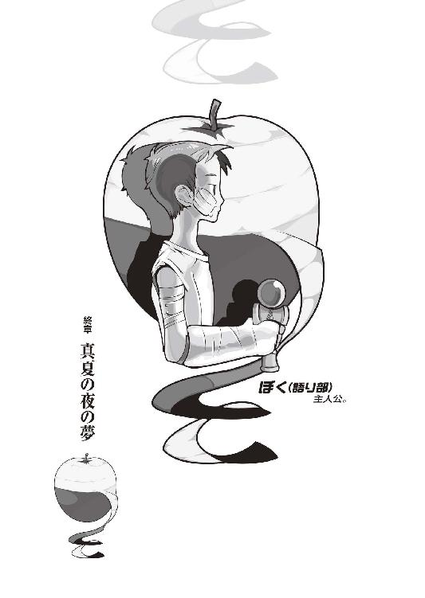
身長百三十八センチ、体重三十二キロ（推定）。スリーサイズ、第二次性徴期を迎えたばかりなので良識に従い秘匿。髪型はおかっぱ、肌は雪を欺く病的な白。唇だけが妙に赤い、人形めいた、どことなく幽玄道士を連想してしまう風貌。血液型はＯ型のＲｈマイナスで、誕生日は四月十六日、つまり当年とって十三歳。十歳までを北海道で過ごしたが、現在一身上の都合で家出中、二つ上で腹違いの兄と共に居住区を京都に移す。肉を食べないベジタリアン。煙草の煙を何より嫌う。趣味は下等生物の殺害。お気に入りのスポットは鴨川公園（無論、狙いは鴨と鳩）。家出中の身であることも手伝って中学校には通っていない、しかし知的好奇心は年齢並にはあるらしく、日々図書館に通い詰め。
──以上、闇口崩子のプロフィール。
「戯言遣いのお兄ちゃんは本当は病院に住んでいてたまにアパートに遊びに来てくれる人なんじゃないかと思うことがあります」
その崩子ちゃんが、バタフライナイフを慣れた手つきで扱い、林檎の皮をしゅるしゅると剝きながら、そんなことを言う。離れた皮は崩子ちゃんの白い太ももの上に置かれた金属製のボウルの中へと落ちていく。崩子ちゃんは真っ赤な薄手のワンピに底の厚くないサンダルといういでたちで、いかにも夏の盛りという感じだ。アクセサリ類は一切身につけておらず、全体的に簡素なファッションだけれど、それは彼女にセンスが欠如しているわけではなく、崩子ちゃんには過保護な兄がいるというのがその理由だ。しかし、ベッド脇のパイプ椅子にちょこんと腰掛けている崩子ちゃんを見ていると、変に着飾るよりもその簡素さこそが彼女に相応しいのだろうなあと、萌太くんの気持ちも分からなくもない。
「人生の半分を病室のベッド上で過ごしているお兄ちゃんだと言っても過言ではありません」
「過言だよ。人を虚弱体質みたいに言わない」
「しかしそうは言いますが、戯言遣いのお兄ちゃんが京都に来て以来、これで数えて五回目の入院になります」
「六ヵ月の間にたった五回だろ。少ないよ」
「多いです」
「多いですか」
「入りびたりです」
している内に、崩子ちゃんは自分の唇のように真っ赤な林檎の皮を全て剝き終える。その手つきをじっくり見ている内に分かったのだが、ナイフは動かさずに固定しておいて、林檎の方をナイフに沿うような形で回転させるのが、皮剝きをスムーズにこなすコツらしい。てっきりその林檎をこちらに渡してくれるものだと思っていたけれど、崩子ちゃんはそのまま林檎のかつら剝きを始めてしまった。
八月、二十二日──
本来なら今日からバイトというそんな日。
ぼくは、京都市内の病院に、入院していた。
というか、昨日まで意識不明だった。お医者さんの話によれば、かなり深刻に生死の境を彷徨っていたらしい。今日になってようやく意識を取り戻し、謝絶だった面会も可能となって、そして一番にお見舞いに来てくれたのが、崩子ちゃんだった。
「それで、今回の入院期間は如何ほどで？」
「完治まで二ヵ月......退院までは、一ヵ月だって」
「つまり夏休みの半分は病院で過ごすわけですね」
くすりと笑う崩子ちゃん。普段はとっても素直ないい娘なのに、どうしてこう、時折妙に生意気な口を利くのだろう。
「......まあ、そうなるさ」ぼくは渋々、その事実を認めた。「でも、後遺症とかはないんだってさ──骨折も、剝離骨折や単純骨折ばっかりだし。食事制限もなしだってさ」
「そうですか」
崩子ちゃんはベッドの上のぼくを、頭から順にずいーっと、足先まで、舐めるように見眺めた。
「しかし、あまりにも滑稽です」
「はっきり言わないでよ......」
「あまりにも優美ではありません」
「遠回しに言わないでよ......」
両腕、両脚、それぞれにギプス。
胴体にはコルセット。
顔面にはガーゼ。
それが、今のぼくの姿だった。
想像するまでもなく、無様過ぎた。
それでも......ここまで、重体といっても過言でないほどの怪我をしておきながら、全く皆無に後遺症が残らないなんて、いやはや実際、本当にアフターケアまで万全の殺し屋だ。骨はあちこち容赦なく折っていても神経はまるで傷つけていない、アキレス腱もぴったりくっつき、だから問題は内臓の損傷だったが、そちらにしても、腹を開くまでもない程度のものだった。もっともそれでも生死の境を彷徨った事実には変わりはないので、運がよかったという表現の方が、この場合は適切だろう。
ちなみに、アバラは五本、残っていた。
「この間は眠かったので詳しいことまでは聞きませんでしたが、お兄ちゃん、一体今月は何があったんですか？」
「あー......」眠かったからかよ。「まあ、なんっつーか、色々あったんだよ、色々。姫ちゃんのことは、聞いてるよね？ うん、で、このぼくの入院をもって、とりあえずのところ、全部解決したんだけどね──」
「そうですか。ならば、よいのですが」
喋りつつも、崩子ちゃんのかつら剝きはどんどんと進む。林檎は大根なんかと違い水分が多いので相当な技術を要するはずだけれど、崩子ちゃんは手元を見もしない。
「......アパートのみんなは、どうしてる？」
「普段通りです。姫姉さまのことはともかく、お兄ちゃんが入院するなんてのは日常茶飯事ですから、わたし達の生活には何の影響も何の変化も微塵として僅かにも与えません」
「あっそ......」
「そうですね......トピックスとしては──いい知らせと悪い知らせが一つずつ」
「いい知らせから聞こうかな」
「みい姉さん、狙いの掛け軸をゲットしました」
「へ？」思わず、聞き返した。そうだ、そういえば、それがそもそもの始まりだったと言ってもいいところだったのだが。「──どうやって？ 何かいいバイトでも見つかったの？ いや、でもこんなに早く、都合よく稼ぎのいいバイトなんて──」
「宝籤が当たりました」
崩子ちゃんは何の感慨もなさそうに言う。
「三等、五十万円」
「............マジ？」
「マジです」
「............」
そういや──そんなこと、言ってたか。
なんてこった。楽観、運がいいというか、なんというか、ぼくが何かをするまでもなく──いや、違う。そういうことじゃ、ない。つまりこれは......みいこさんは──その掛け軸を、どうあったところで入手してしまう、そういう流れの中に、最初から存在していたということなのだ。どういう風に流れがねじまがったところで、ぼくのような脇役がどんな風に右往左往したところで、最終的には辻褄があって、目的の場所へと辿りつく。
そんな、物語。
それが、みいこさんの物語か。
確かに......
あの人にゃ、そういう物語が相応しい。
「どうかしましたか？ 戯言遣いのお兄ちゃん。何か、思うところのありそうな顔ですね」
「いや──別に。それで、悪い知らせは？」
「はい。春日井さん、春日井春日さんが、昨日の夜、アパートを出て行きました」
「はい？」ちょっと驚く。「姫ちゃんの部屋に移動するんじゃなかったのか？ あの人」
「さあ......止めても無駄そうでしたし、お兄ちゃんは昏睡状態でお知らせもできなかったしで、そのまま彼女の意志に任せましたが。......止めた方がよかったですか？」
「いや......」ぼくは首を振る。「あの人は、そういう人だから。ちゃんとさよならできなかったのは残念だけど、仕方ないさ。風は、吹く方向にしか流れないってね」
「春日井さんから伝言があります」
「へえ」
「『二人で過ごした夜の甘さは忘れない』」
「............」
最後に嫌がらせをして去っていきやがった。
「《夜の甘さ》とは、どのような意味です？ 春日井さんとお兄ちゃん、何かあったのでしょうか」
「えっと......」
子供に何言ってんだ、あのゴク潰し。
二度と来るな。
「結局、あの人何しに来たんだ......一ヵ月も居座り続けた割に、本当に何もしなかったじゃないか」
「そんな難しく考えることはありませんよ。ただ単純に、春日井さん、お兄ちゃんと遊びたかっただけじゃないですか？」
「だとすれば《お兄ちゃんで》の間違いだろ」
ぼくの反論を意に介する様子もなく、「お兄ちゃんは異形の者にもてますからね」と続けるのだった。そこはいまいち否定しがたいポイントだったので、「かもしれないね、ひょっとしたら」と、流しておくにとどめた。
「そう見れば可愛いではないですか、春日井さん。お兄ちゃんが入院している内に姿を消すなんて。そういった意味においては、姫姉さまも、きっとそうだったのでしょう。姫姉さまのお兄ちゃんへのなつき具合は、半端ではなかったですからね」
「ん？ あー、いやいや、それは違うよ。姫ちゃんは他に好きな人がいるっていってたから」
「......。そうですか」
「？ 何？ その変な間は」
「いいえ──別に。ともあれ、戯言遣いのお兄ちゃん。だからまた、部屋が一つ、空いちゃいました」
「ああ......姫ちゃんの部屋って、元々は浮雲さんの部屋なんだったっけ？ それともそっちは七々見だっけか」
「確か、浮雲さんの後釜が、姫姉さまです」
「そうか......次、誰が入るのかな」
「しばらくは、空き部屋でしょうね。わたしと萌太とで、精々有効活用させていただきます」
林檎のボディを極限にまでスリムにしたところで、崩子ちゃんはようやっと手の動きを止めた。ナイフをパチンと閉じて、くるくる回してからワンピースのポケットに収納。そしてボウルの中にたまった帯状の林檎の端をつまみ、自分の口へと運んだ。
......自分で食うのかよ。
「まあ、戯言遣いのお兄ちゃんも、アパートのことはわたしに任せて、これを機会に精々じっくりと養生してください」つるつると林檎（の帯）を食しながら、崩子ちゃんは不気味な感じに微笑する。「暇なときにはまた見舞いに寄せてもらいますから」
「お願いするよ......」
「ところで──戯言遣いのお兄ちゃん。これはみい姉さんから聞いたのですが──その髪、姫姉さまに切ってもらったそうですよね？」
「ん？ ああ。ごめんね、黙って切っちゃって」
「謝って済むというものではありません」
「............」
許してもらえなかった。
容赦ないなあ。
「いいじゃん。どうせすぐ伸びるって......次んときは崩子ちゃんにお願いするよ。ぼく、髪伸びるの速いんだ。昔っからね。崩子ちゃんと同じ歳くらいの頃かな、腰くらいまで伸ばしてた。ぶっとい三つ編みにしてさ」
「そうですか」
興味なさげだった。
過去を匂わす男はお好きでないらしい。
「ごちそうさまでした」
ボウル内の林檎を皮まで食べ切って、崩子ちゃんはパイプ椅子から腰をあげる。
「では、戯言遣いのお兄ちゃん。帰りに図書館へ寄る予定ですので、わたしはそろそろ失礼しようと思います」
「あっそ。帰り道、気をつけてね」
「また明日か、明後日にでもお見舞いに来ます。そのときはお兄ちゃん好みの本でも持ってきましょう──あ」
そうだ、と言って、崩子ちゃんは背負ったナップサックを肩から下ろし、パイプ椅子の上に置く。そして中身を探り、手ごろな大きさの紙袋を、そこから取り出した。
「これ。魔女のお姉さんから戯言遣いのお兄ちゃんへのお見舞い品だそうです。預かっていたのをすっかり忘れていました」
「ふうん......？」
なんだ、七々見の奴、らしくない真似をする。
首を傾げながらも、何かの罠じゃないだろうかと用心しつつ、ぼくは紙袋を開ける。中に入っていたのは、何だろう、今まで見たこともないような機械だった。黒いボディ。ただしそんな丈夫な素材じゃない、どちらかといえばチープな感じ。画面があって、それを挟むようにボタンがあって。ふうん、大きさとヴィジュアルから考えると、多分携帯用のゲーム機か何かなのだろうけれど、しかしカセットを差し込むような箇所はない。いや、よく見ると、画面の上にカードリーダのようなスリットがある。ここに何かカードでも通して、本体に情報を読み込ますのだろうか。
「これ、何？ アドバンス......じゃないよね」
「バーコードバトラーと言って、今子供たちの間でもっともヒップな大人気アイテムだそうです。えーと、その機体は、バージョン２ですね」
「バーコード......？」
「簡単に言いますと、そのスリットにバーコードをスキャンさせて、バーコードの数字を戦闘能力に変換し、それぞれ対戦する装置だそうです」
「ふうん。最近は変なものが流行ってるんだね......寡聞にして知らなかったよ」
「わたしも知りませんでした。でもほら、魔女のお姉さんは流行に敏感ですから」
「確かに。あいつを褒めるのは癪に障るが、それだけはぼくも認めざるを得ない」ぼくは機体を矯めつ眇めつ観察する。「けどこれ、対戦ってことは二人用のゲームじゃないの？ スタイルもそんな感じだし──個室じゃ遊べないよ。お医者さんと遊ぶわけにもいかないしさ」
「一人プレイもできると言っていました。はい、説明書もあります」ナップサックの中から別に紙の束を取り出す崩子ちゃん。見れば手書きだったので、どうも正規の説明書ではなさそうだ。七々見が自作したらしい（マニアめ）。「世間をひっくり返さんばかりの大ブームだそうですから、なかなか入手できない玩具だそうですよ。感謝しろと言っていました」
「相変らずだね、あいつは......あいつだけは世界が滅んでも、物語がどう転んだところで、本気で『知ったこっちゃない』って言えるんだろうな。ああはなりたくないってのはほんっとうにほんっとうにほんっとうに大前提だけれど、尊敬の念を、禁じえない」
でもま、これに関しちゃ確かに暇つぶしの材料として悪くない。一ヵ月間、本でも読みまくって過ごそうと思っていたけれど、しばらくはこいつで遊んでみるのもいいだろう。まずは説明書を読んで、どんなゲームなのかを理解してみないと何とも言えないけれど。
......爆発とか、しねえだろうな。
「お姉さんはもう一つ、バーチャルボーイという遊戯具も用意していたのですが、『これはいのすけには新し過ぎて扱えないだろう』とのことで」
「ふん。人を流行遅れみたいに言ってくれるぜ」
「それでは、今度こそわたしはこれで」
崩子ちゃんがそう言って、再びナップサックを背負ったところで、
「やーほーん！」
病室、ぼくのベッドから見て正面に位置する横開きの戸がものすごい勢いで開き、熟練のウエイトレスの如く、食事を載せたトレイを片手に持った看護婦さんが、病室の中に入ってきた。
「いーいー、お久し振り、餌の時間だよーん！」
「............」「............」
「いーいーの大好物、病院食だよーん！」
「............」「............」
いや、別にぼくは好きで病院食ばっかり食べてるわけじゃ全然ないのだけれど。
つーか、あんたまで再登場するのかよ。
予想外だ。
看護婦さんは、明らかに服務規程に違反していることは最早論を待たないまでに丈の短いスカートから伸びた、白いストッキングにつつまれた脚でベッドに近付いてきて、流れるような動作でテーブルの上に食事を並べていく。この人は外見も中身もふざけた看護婦だが、仕事だけはてきぱきとこなすのだ。さすが、曲がりなりにも眼鏡をかけているだけのことはある（関係ない）。
「いやー、それにしても久し振りですにゃー。二ヵ月近くも病院に来ないからいーいー何してるのかってお姉さんは心配しちゃったですよ。ですよ！」
「......それはそれは」
有難い話だ、全く。
病院に来ないことで心配されるとはね。
「ん？ おやおや、おーやおやおや。いーいーも隅に置けないですにゃー。あちちー」看護婦さんは実に目敏く、突然の闖入者に固まっている崩子ちゃん（正確に言うと《ワンピースのポケットに手を伸ばして臨戦態勢に入った崩子ちゃん》）に照準を定めた。「随分と可愛らしいお嬢ちゃんが見舞いに来ちゃってるじゃないですか！ うわ、マジ可愛い！ 何この娘！ いーいー、ずるっ！ こんなろりっ娘と！ こんなベッドしかないような部屋で！ ここまで圧倒的に二人っきりの密室で一体全体今まで何してたん！ ああんもう、このハンバート・ハンバートめ！」
「あんた何者だよ」
ぼくは入院中に至ってまでこんなアッパーシフトの変態の相手をしなくちゃならんのか。
ぼくはギプスのせいで動かしにくい両腕を使って、食事の碗へと手を伸ばした。脚の方は割とデリケートな怪我なので無闇に動かすわけにはいかないが、腕の骨折は両方とも尺骨の辺りなので、ある程度の不自由を我慢すれば、日常生活くらいはこなせるのだ。
「きゃー、本当にプリティー！ つーかリリカル！ お嬢ちゃん、お名前は？ お姉さんにテルミンプリーズ！」
「闇口崩子です」言って崩子ちゃんはぺこりと頭を下げる。ポケットから手を離したところを見ると、警戒は解いたようだ。「褒めてくれてありがとうございます」
「にゃ？ ヤミグチ？」看護婦さんは首を傾げる。「......にゅーん。何ていうか、個性的ちゅーか、変わった名前だにゃ。関口の間違いじゃなくて？ まあ可愛いから許すけど。萌え！ ねーねー、崩子ちゃん、ところでこの無愛想なお兄さんとはどういう関係？」
「セックスフレンドです」
飲みかけていた味噌汁を吹いた。
さすがの看護婦さんも固まっている。
凍りついたような時間が病室内に去来した。
ま、待て......落ち着くんだ、冷静になるんだ。この現象......ひょっとすると何者かからスタンド攻撃を受けている可能性がある！
「どうかしましたか？」
一人、不思議そうに首を傾げる崩子ちゃん。
「......崩子ちゃん......まず質問から切り出す弱気で臆病なぼくを許して欲しいんだけど、そのボキャブラリーはどこのダンジョンで入手したのかな？」
「魔女のお姉さんが教えてくれました。もしも誰かにお兄ちゃんとの関係を訊かれたときはこう答えればよいと」
「..................」
やはりあの女か......。
あいつとはいずれ決着をつける必要がある。
「まずかったですか？」
「うん......とっても」ぼくは力なく首を振る。「一応、ぼくにも人生というものがあるからね」
「あ、でも安心してください」崩子ちゃんはにっこりと笑う。「まだ十人くらいにしか話していません」
ぼくの人生......。
ぼくの人生......どこへ行かれるのですか？
「......崩子ちゃん。これはきみのためを思って言うんだけれど、知らない言葉はみだりに使わない方がいいと思うんだよ」
「はあ。しかし、それではこれから、そのような質問を受けた際わたしはどのように対処すればいいのでしょう」
「そんなもん、おかしなことなんて何もやってないんだから、普通に『お友達です』って答えてくれればいいに決まってるじゃないか」
「やりました」
「な、何!?」
そ、そんな馬鹿な。
ぼくはまだ崩子ちゃんに関しては何も、あらゆる厳密な意味で、倫理に悖るような疚しい行為に及んでいないはずだぞ。ぼくはデザートは最後までとっておく方なんだから......って、そうでもなく。
崩子ちゃんはぼくに対し、悪戯っぽく笑う。
「さすがは魔女のお姉さん。こういう風に会話を運べば、お兄ちゃんがわたしのことを友達と呼んでくれるという作戦がぴたり的中です。わたしは、すごく、嬉しいです」
「............」
「それでは。何かわたしにできることがあるようでしたら、いつでもご自由にお呼び立てください」
そう言ってぼくと看護婦さん（固まりっぱなしだ）の横をすり抜け、戸に向かう崩子ちゃん。戸を横にスライドさせたところで振り向いて、
「あ、それから」
という。
「わたし、セックスの意味くらいは知っています。経験はありませんが、これでもわたし、少女ですから」
「............」
「では、息災と、友愛と、再会を」
そして崩子ちゃんは廊下に出、戸は自動的にスライドして閉ざされる。病室内には再び沈黙が訪れたが、やがて看護婦さんはずり落ちたナースキャップと眼鏡の位置を調整し、それから肩を竦めるようにして、
「してやられたね」
ぼくに向かって唇を歪める。
「マジ可愛いじゃん、あの娘」
「......まあ、そうですね」
「来月あたりで死にそうだね」
「何の話ですか」
シビアにリアルな話だった。
看護婦さんは崩子ちゃんが座っていた椅子に、「よっこいしょー」なんて掛け声とともに腰掛けた。
「しっかしいーいー、久し振りだけど──なんか、男前になってない？」
「......それは顔面の半分をガーゼで覆われたぼくに対する皮肉ですか？」
「いや、そうじゃなくて。物腰が男前になってる」
「そうですね──ええ」ぼくはちょっと、お茶らけて答えた。「まあ、仲間の死を乗り越えて、人間的に成長したってところですかね」
「へえん」
どうでもよさげだった。
言ってみただけらしかった。
「..................」
「ん？ どったの？ 何その沈黙？」
「............いえ」
「求愛信号？」
「違う」
うーん。
まあ、そうだな。
気恥ずかしいし、面倒だけど、仕方ないか。
儀式みたいなもんだからな。
鰯の頭も、信心から。
「看護婦さん、恒例のクイズ、いいですか？」
「ん？ ああ、いいよ。何？」
興味津々といった顔。
そう、嫌なことは他人にやらせるに限る。
「今は昔のある晩に、ここではないどこかに、事情ある五人の人間が集まっていて──」
ぼくは看護婦さんに、軽く今回の事件の経緯を説明する。マント姿に拘束衣、二重人格の殺し屋＆名探偵、一人で二人、二人で一人の同一兄妹。ボディーガードの曲絃糸遣い。死なない少女に、続きの助教授。それに、一人の無能な戯言遣い。朝起きれば、内の四人が死んでいて──一人だけが生き残った。
無様にも、生き残った。
生きていた。
「......うーん。今回のクイズは密室系じゃないんだね。あーあ、つまんない」
「つまんないですか」
「うん。わたし、最近は密室萌えの人だから」
「はあ......」
「今まで読んだ密室の数を憶えている女と呼ばれているよ。まあいいや、えーっと」看護婦さんは、ちょっと頭を抱える仕草。今回は、ちょっと悩んでいるようだ。「で、その生き残った無様で格好悪いアホな男は、犯人じゃないんだよね？」
「............ええ」
そこまで酷い形容詞は使ってねえぞ。
「んー。ん、ん、ん。部外者もなしだね？」
「なしです」
「じゃあ答えは一つっきゃないね」看護婦さんはあっけらかんと言った。「二重人格じゃなくて、双子だったんでしょ？」
「......ご名答」
「双子なら、要するにおんなじ身体を所有してるわけなんだから、二重人格者を演じることくらいは簡単だよね？ 熟練したら、まず見抜けないって程度には。おんなじ身体を持っている人間が二人いるって考えたら、探偵やるにも殺し屋やるにも、そんな便利なことはないし。拘束衣だってマントだって、一人じゃ無理でも二人いるんだったら自由に脱ぎ着できるしね。イコール、バイクの運転だって問題なし。それに、その曲絃糸遣いっつー、秋せつらみたいな娘だって、一対一じゃ勝てなくても、一対二なら、もうちょっと確率があがって分かり易くなるしねー」
「ええ......ですよね」
それが殺戮奇術の匂宮兄妹。
匂宮──兄妹。
《人喰い》の理澄に《人喰い》の出夢。
その名乗りもまた──トリックだ。
男女の一卵性双生児は、ありえないから、同じ身体で現れれば、その言を信じてしまう。出夢くんだって──《兄》なんて言っても、身体が理澄ちゃんと同じ、少女のものであることには変わりがないのに。
二重の人格こそが、虚構のフェイク。
二重人格に見せかけての二人一役、そんなことをぼくは想定したこともないが、しかし単純に考えただけでも、今看護婦さんが言ったこと以外にも、利点は多い。端的には、まず影武者。理澄ちゃんを表に出しておけば──出夢くんは、それこそ《裏》で、縦横無尽に暗躍できる。そして──それだけではない。理澄ちゃんが《弱さ》のみを担当していたというのなら、またそこにも避けようもないほどに悪趣味な意味がある。
出夢くんは理澄ちゃんを《人形》と評した。
人形。
代理品。
影武者。
『二重人格が双子だった──って点を除けば、他は大体、出夢の説明通りであってんと思うぜ』と、哀川さんはディスカッションの中で言った。『付け加えるなら......一姫言うところの《断片集》の連中のように、出夢はある程度、理澄を遠隔操作できるってことなんだろうな。そうすりゃ、その夜の、階段ですれ違った理澄の、説明がつく』
そう──
《断片集》の副産物、と、そう言っていた。
空っぽの、理澄ちゃん。
がらんどうの、理澄ちゃん。
人形。
自律型のラジコン。
あれは......比喩でなく、衒いでもなく韜晦でもなく、まるっきりそのままの意味だった。彼女の肉体に与えられた人格は酷く恣意的で、欠けていて、しかも──出夢くんの意のままに。
操れるのだった。
あの夜のように。
人形のように。
人形に与えられたかりそめの人格。
自分の意識が飛ぶことや、マントの下にあんな服を着ていること自体にまるで疑問を抱けないほどにどうしようもないほど欠如した必要最低限のプログラム人格。
写楽保介ですら、なかった。
あらゆる意味での《弱さ》を排除し《強さ》にのみ特化した絶対の殺し屋としての匂宮出夢、そのスペアとしての匂宮理澄。スペアの肉体の管理人としての──匂宮理澄。出夢くんが理澄ちゃんを、あれほど労っていた理由が、むしろ分かろうというものだ。
「もっとも......その戦闘で、二人の内一人は、死んじゃったわけですけど」
「そうなるよね。でも、計算はこれで合う。本当は六人いて──二人生き残ったんなら、無様で格好悪いアホな男は、犯人じゃなくていいわけだから。隣の病室にあった死体は、当然、スペアとしての妹さんのものだね」
首を切られた理澄ちゃんの身体。あれは、姫ちゃんの《曲絃糸》の仕業だった。胸を抉った──彼女の心臓を持っていったのは、出夢くんなのだろうけれど。
心臓。
理澄ちゃんの、心臓。
生きている証。
「..................」
二重人格だと思わせての二人一役なんて、確かに恐らくは《策師》萩原子荻辺りになれば何の苦もなく看破してみせるだろうが──だからこそ、子荻ちゃんと匂宮兄妹とが直接対峙していないことが大前提だったわけだが──直接対峙していないのに匂宮兄妹について知っていたという事実が決め手だったのだが──しかし、こういう、今回のような例外的な、目的の用途から大きく逸脱したケースで偶発的に使用された場合でもない限り、ぼくを含め、大抵の人間には突破できない種類のトリック。
単純がゆえに、解き難い。
論理じゃない。
必要なのは、論理の飛躍。
その場限りの思いつきだ。
消去法ですら──ない。
「..................」
だからといって、それは──匂宮兄妹の弄したそれが優れたトリックである、という意味では、全然ない。
むしろ、その対極だ。
際物。
どうしようもなく、際物。
全く、よく言ったものだ。
私は殺し屋依頼人は秩序。
十四の十字を身に纏い、これより使命を実行する。
殺戮奇術集団、匂宮雑技団──
一体──人間を何だと思ってるんだ。
「ま、そもそも医学的には多重人格とかって割と認められてないもんだし。でさー、殺し屋くんは相方が死んで考えるわけだよ。今、この死体を置いてどっかに逃げちゃえば、僕は自由になれるんじゃないのか！ 普段から二重人格を装ってるわけだから、真実を、自分の存在を知ってるのはごく一部の関係者、身内くらいだからね。世間的に、自分は死んだことになって、隠遁生活に入れるわけだ。妹の死体を放置することになるけれど──」
「《心》は、常に、そばにある、ですか」
真実は、そんなロマンチックじゃないだろう。そんな幻想を好む人間では、出夢くんはなかった。そんな話をしたら、ただ鼻で笑われるだけだろう。それならまだいいが、出夢くんのことだ、怒り出すかもしれない。
だけど──全てが打算でもない。
出夢くんは、妹を、失った。
システムとしてはただの代理品であっても、出夢くんにとって理澄ちゃんがただの代理品でないことくらいは、そのシステム自体が崩壊する危険を冒してまで、あの中庭でぼくに声をかけてきたことからも、分かる。
きっとそのとき、出夢くんは、
飽きたのだ。
殺すことにも。
多分、生きることにも。
ああ──そうか。
ひょっとすると、出夢くんにとってはその行為は、ほんの思いつきみたいなものだったのかも、しれないな。ぱっと思いついた、一秒前まで考えてもいなかった、一秒後にはもう忘れていたかもしれないくらいの、儚く脆く彷徨うような、ざわめきのようなものだったのかも、しれない。
何もかも。
結局は、突き詰めていけば、そういうものだ。
「そんな感じー。クイズの情報が決定的に不足してるから、細かいところまで詰めていくのは無理っぽいけど、んなもんどーでもなるわいな。とりあえずのとりおき、こんな感じでどうよ？」
「ええ......さすがですね」
「えっへんへん」
じゃーん、と胸を張る看護婦さん。
いい気にさせてしまったか。
「あ、おっと、私ったら仕事仕事。いーいー、それでご馳走様かい？」
「え、ああ──はい。食欲、あんまなくて」
「そりゃそうだよねー。じゃ、片付けちゃうよん」てきぱきと食器をトレイに戻す看護婦さん。「ほいじゃま、一ヵ月間、よろしくねー、いーいー」
「............」
一ヵ月。
そら寒くなるような思いだった。
ほとんど身動きのとれない身体状況で、こんな変態に生殺与奪の権を握られてしまうとは......。
「......あの、看護婦さん」
「看護師だっつーの。セクハラで訴えんぞ」
「名前、聞かせてもらえませんか？ あなたとは......なんつーか、長い付き合いになりそうな気もしますし」
「んん？ 知らなかったっけ？ 最初会ったとき、名乗ったような気がするんだけど」
「聞いたかもしんないですけど、忘れちゃいました」
「記憶力悪いなー、あんた」
呆れたように腕を組む看護婦さん。
「ま、いいや。私の名前は、形梨らぶみだよん」
「形梨──らぶ？」
「らぶみ。ひひ、女の子らしい名前でしょ？」
「いや......はい、そうですね」
つーか、人間らしからぬ名前です。
このままただの脇役で済むとは思えない名前だ。
「......ご両親は、何をされている方ですか？」
「えー？ ちょっとちょっと、そりゃ図々しいってもんだよ。わたしについての詳しい事情が知りたいって言うんなら、そりゃあんた、病院ルートに入ってらぶみさんシナリオに進んでもらわないと」
「ねーよそんなの」
「乾いた血の夜？」
「うるせえ馬鹿！」
「にゃははー。ではではー」
看護婦さんは腰に手を当て正義の味方の紅一点みたいなポーズを決めてから、戸をスライドさせて、病室から出て行った。
..................。
世界には狂人しかいないのかと思うことがある。
どいつもこいつも狂っている。
壊れている、病んでいる。
多分、仕組み自体から。
「そういう物語だと思って諦めるしかねーのか──酷く、理不尽な話だよなあ」
みいこさんの例をとってみるに、自業自得、それこそ因果応報という他、ないのかもしれないけど。
ぼくが狂っているから、周囲も狂う。ぼくが最悪だから、周囲も最悪。座標の狂ったコンパスが、正しい地図を描けるものか。
あ、そうだ。
みいこさん。
みいこさんのこと、どうしよう。
この分じゃアパートには当分の間帰れそうにないし......いささかみっともない話だ。お見舞いに来られたりしたら、どんな顔して会えばいいのだろう。
無様な姿。
無様な結果。
みっともない。
本当、みっともないにも、程がある。
「出夢くんは......どうなったのかな」
あれから三日。
死色の真紅人喰い。
とっくに──結果は、出ているだろう。
殺すのに飽きた、と言った。
殺し屋として育って──殺し屋として創作されてきた人格に、しかし、本当にそんなことがありえるのだろうか。殺すためだけに、殺戮のためにだけ創造された兵器に、心変わりが、ありえるのだろうか。
......きっと、ありえるのだろう。
生きることに飽きる者がいる。
自身に飽きる者がいる。
生きてることを忘れていた者も。
生きてることを忘れたがっていた者も。
知らない者だって、いたのだから。
姫ちゃんは──どうだったろう。
ちゃんと、思い出せたのだろうか。
ぼくと姫ちゃんの出会い。
ぼくは姫ちゃんと出会った。
そこには、それだけの意味があったと思う。代替のない、それだけの意味があったと思う。だが、ぼくにとってはそうでも、姫ちゃんはどうだったのだろう？ 姫ちゃんにとって、ぼくとの出会いは、意味があったのだろうか。姫ちゃんはぼくと出会うことで、何かが変わっただろうか。出会ったのがぼくであったことは、ぼく以外の誰かではなくぼくだったことは、彼女にとって意味があっただろうか。
姫ちゃんはぼくの前で何度も泣いた。
ぼくは何度も、彼女を傷つけた。
無意識に、時には意図的に。
ぼくは、その分だけ、何かをあげただろうか？
引き換えに、何かをあげただろうか？
ぼくには、分からないのだけれど。
──『案外、自分では分からないものですよ』。
姫ちゃんの言葉。
なるほど、言いえて妙だ。
実に──絶妙だ。
なら、一生、分からないかもしれない。
この問題に関してだけは、最後の最後に颯爽と登場して、全てに解答を与えてくれる頼れる請負人は現れない。自身の課題と、自身の問題、それに自身の標敵には、やはり自身で、応えるしかないのだから。
でも、きっと。
あの六月以降──姫ちゃんは、生きていた。
だとすれば、ぼくの存在も無駄じゃなかった。
ぼくと姫ちゃんとの出会いも無駄じゃなかった。
救いはあった。
出夢くんの言う通り、彼女は、紫木一姫は、生きているためにはあまりにも人を殺し過ぎたかもしれないけれど──それもまた、自業自得、因果応報かもしれないけれど──
それでも。
それでも、紫木一姫は、生きていたのだ。
彼女自身の、物語を。
「......自分の、自分ひとりの──物語、か」
物語。
ふと、そんな言葉を。
狐面の男の言葉を、思い出した。
今回の事件で、始まる前から終わった後まで、外枠上をうろうろしておきながら──結局、物語の中には嚙んでこなかった彼。木賀峰助教授とも朽葉ちゃんとも理澄ちゃんとも出夢くんとも、深い関係を持ちながら──実際の事件と一切関係なかった狐面の男。ぼくなんかとは違って、徹頭徹尾を傍観者という立場で済ませてみせた彼。原因という原因、舞台という舞台を演出しておきながら──
真相を知っても、それだけで済ました彼。
あの《人喰い》の二人ですら......その存在をすら、どうにでも代理の利く一要因としか、看做さなかった彼。死なない少女ですらも、経過点の一つとしか看做さなかった彼。
「哀川さんの、ねえ......」
突飛な話ではあるが──考えられない、わけじゃない。むしろそう考えれば大いに納得がいくのだ──歪さを感じるまでの二人の相似と、そして歪さを感じるまでの、二人の相違に。
しかし、ぼくはまだ、哀川さんにこのことを話していなかった。京都御所で会ったときも、その辺りの事情にはあえて触れなかった。狐面の男の存在を、哀川さんの前では完全に抹消しておいた。何ももったいぶったわけじゃあない──哀川さんの過去に、勝手に触れてしまったというような種類の後ろめたさがあったわけでもない──それでも、ぼくは狐面の男の存在を、ぼくが彼を知っていることを、哀川さんに一言も話さなかった。
そんな自分には、罪悪感よりも嫌悪感を感じる。
でも、どうしても、それを、言えなかった。
話さなかったんじゃない、話せなかったのだ。
ぼくは──ただ、怖かった。
狐面の男。
ぼくは、単純にあの男が怖くて。
あの異形と、どういう形をもってしても──
関係したく、なかった。
俺の敵。
そう宣言した以上──狐面の男は、ぼくに何か、仕掛けてくる気づもりだろうか。だとしたら、ぼくはそれを受けて立たなくちゃならないのだろうか。あまりにも、そんなの、馬鹿馬鹿し過ぎる。物語の筋だと言っても──承諾するわけにはいかない。
死、ですらないあんな恐怖と。
あんな最悪と。
どう向かい合えと、いうのだろう──
「......どうなるのかね、これから......」
何も変わらず。
誰も変わらず。
自身も変わらず。
誰とも、何とも、関係せず。
怠惰に時間だけが流れれば、いいと思っていた。
でも、そんなことは無理。
生きてることは、変化と変質の連続。
死へと収束していく、交錯し錯綜する連続。
生きることに飽きるほど、生きてない。
むしろ飽きるほどに、死んできた。
物語はあまりにもどうでもいい。
ただ、それだけなのだから──
ぼく達は、生きている。
ばいばい。
さようなら。
おやすみなさい。
ありがとう。
《Do not eat, need we say more?》is the END.
本書は二〇〇三年七月、講談社ノベルスとして刊行されました。
本作品は、二〇〇八年一二月、小社より講談社文庫として刊行されたものを電子書籍化したものです。
『戯言シリーズ』配信予告
『ネコソギラジカル（上） 十三階段』
６月17日配信開始
『ネコソギラジカル（中） 赤き征裁橙なる種』
６月24日配信開始
『ネコソギラジカル（下） 青色サヴァンと戯言遣い』
７月１日配信開始
◎本電子書籍内の外部リンクに関して
ご利用の端末によっては、リンク機能が制限され正しく動作しない場合があります。また、リンク先のｗｅｂサイト、メールアドレス、電話番号は、事前のご連絡なく削除あるいは変更されることもございます。ご了承ください。
ヒトクイマジカル
殺戮奇術の匂宮兄妹
二〇一六年六月一日発行
西尾維新
©NISIO ISIN 2016
発行者 鈴木 哲
発行所 株式会社講談社
東京都文京区音羽二‐一二‐二一
〒112-8001
◎本電子書籍は、購入者個人の閲覧の目的のためにのみ、ファイルの閲覧が許諾されています。私的利用の範囲をこえる行為は著作権法上、禁じられています。
16A0425E
01